EEV415 Building a Module (Pandoc Multiple File Conversion)
 {width="8.625in” height="11.125in”}
{width="8.625in” height="11.125in”}
+———————————————————————–+
| EXIMBILLS © Trade Finance System |
| |
| Eximbills Enterprise System Version 4.1.5 |
| |
| Building a Module |
| |
| February 2021 |
+———————————————————————–+
| Copyright 2021 © China Systems Corporation |
| |
| All Rights Reserved |
| |
| This document is protected by United States Copyright Law and may |
| contain Trade Secrets Information which is proprietary to China |
| Systems Corporation. No part of this document may be copied, |
| photocopied, reproduced, translated, distributed, or reduced to any |
| electronic medium or machine-readable form without prior consent in |
| writing from China Systems Corporation. The information in this |
| document may be used only under the terms and conditions of separate |
| China Systems Corporation license agreements. |
| |
| Information is subject to change without notice. China Systems |
| Corporation makes no warranties, either expressed or implied, with |
| respect to the software herein described as to its quality, |
| performance, including, without limitations to, its fitness for any |
| particular purpose. |
| |
| This document may not reflect total system capability at any |
| subsequent date as a result of development. It is also possible that |
| it may contain references to facilities not available on your |
| computer system. Such references should not be construed to mean that |
| these facilities will necessarily be made available on all types of |
| computer hardware or in all user locations. |
| |
| China Systems Corporation accepts no responsibility or liability for |
| any damages or loss of business or revenue due to the use of this |
| document. |
| |
| All trademarks, registered trademarks and trade names mentioned in |
| this document are the sole property of their respective holders. |
+———————————————————————–+
| ORDER MORE EXIMBILLS DOCUMENTATION |
| |
| Additional copies of Documentation are available for purchase from |
| China Systems Corporation or through your local EXIMBILLS Support |
| Office. |
+———————————————————————–+
|  {width="0.7597222222222222in” |
| height="0.74375in”} |
| |
| CHINA SYSTEMS CORPORATION |
| |
| Comments may be addressed to: |
| |
| corporatedocs@chinasystems.com |
| |
| China Systems Corporation Ltd. |
| |
| Corner House, 20 Parliament Street |
| |
| Hamilton HM12 |
| |
| Bermuda |
+———————————————————————–+
{width="0.7597222222222222in” |
| height="0.74375in”} |
| |
| CHINA SYSTEMS CORPORATION |
| |
| Comments may be addressed to: |
| |
| corporatedocs@chinasystems.com |
| |
| China Systems Corporation Ltd. |
| |
| Corner House, 20 Parliament Street |
| |
| Hamilton HM12 |
| |
| Bermuda |
+———————————————————————–+
Table of Contents
EE Documentation Library 8
Preparing the EE Utility Files 19
Navigating the EE Utility Interface 25
Generating the XML Parameter Files 59
The Building a Module Process 82
Runtime Transaction Processing 88
EE Utility Security Settings 94
Creating Operator Users and Assigning their Functions 95
Accessing the EE Utility as an Operator User 99
Configuring the Transaction Tables 114
Creating the Required Transaction Tables 115
Adding Fields to the Transaction Table 122
Attaching the Transaction Tables to the Schema 127
Reformatting Module Tables 131
Generating the Table Structure of the Module Table 136
Transaction Function Settings 139
Transaction Function Properties 140
Transaction Function Attachments: An Overview 153
Transaction Function Attachments 156
Creating Transaction JSP Files 158
Required Codes and LBI File 159
Configuring Required System Parameters 161
Using EE Snippets in the Transaction JSP File 165
Attaching Screen Rules to the Transaction Function 174
Retrieving Records from a Single Table 186
Retrieving Records from Multiple Tables 200
Attaching Catalog Rules to the Transaction Function 215
Types of Business Components 223
Attribute Rule Configuration Windows 224
Attribute Rule Configuration Procedure 233
Attaching Attribute Rules to the Transaction Function 238
Adding Functions to the Function Group 248
Adding Functions to the Function Group 254
Defining Calculation Rules 259
Levels of Calculation Rules 269
Required Calculation Rules 272
Function-Level Calculations 287
Transaction Input Settings 317
Reference Number Settings in the Standing Module 319
Calculation Rules for Reference Numbers 324
Field Conversion Settings in the EE Utility 330
Required Settings in the Transaction JSP File 348
Lookup Buttons and Windows 349
Get CUBK Settings in the EE Utility 352
Get CUBK Settings in the Transaction Screen 375
Clause Settings in the EE Utility 389
Standing Data Module Settings 402
Clause Settings in the Transaction Screen 405
System-Level Format Settings 409
Module-Level Format Settings 415
Function-Level Format Settings 428
Transaction Output Settings 441
Attaching Form Rules to the Transaction Function 460
Form Function Component Settings 460
Creating Accounting Vouchers 471
Accounting Rule Configuration: Basic Information 472
Accounting Rule Configuration: Mapping Information 479
Attaching Accounting Rules to the Transaction Function 499
Accounting Rule Function Component Settings 499
Master Table System Fields 526
Ledger Table System Fields 528
Event Master Table System Fields 533
Multiple Pending Configuration 550
Multiple Pending Configuration 551
EE Documentation Library
EE Documentation Library
The EE Documentation Library lists all available manuals that serve as references on the use of the Eximbills Enterprise system. The documents are categorized into three groups: Core System Manuals, EE Utility References, and Installation Guides.
Core System Manuals
The EE Core System manuals provide information on the setup and configuration of various EE parameters, as well as the implementation of supplementary functionalities supported by the system.
Archiving and Recovery
This manual is a reference to the Archive and Recovery functionality of the EE system. Discussions include the required parameter settings for configuring the relevant functions, as well as examples of how this functionality is used in transaction processes. The archiving functions discussed in this manual are Archive Data, Inquire Archived Data, Restore Archived Data, Delete Archived Data, and End of Month functions.
BIRT Report Engine
This manual discusses the requirements and processes involved in applying the built-in BIRT report engine of EE to build transaction functions that generate BIRT reports and documents. Other functionalities, such as configuring a report batch function and defining rules to attach documents to an outgoing e-mail, are covered as well.
Building a Module
This manual is designed to help new users of EE plan, organize, control, and successfully carry out the implementation of the system. It provides a general description of the different features of EE that enable every bank to build and design business modules according to its processing requirements. This manual discusses how a custom business module in EE can be built and adapted. It includes step-by-step procedures on how to build a module as well as an overview of runtime transaction processing.
Charges and Commissions Reference
This document provides extensive discussions on the setup and usage of the Charges and Commissions component of EE. Instructions include setting up parameters, defining the relevant standing data, and using charge-specific calculation methods.
Data Objects
This manual describes in detail the steps and procedures required in building and utilizing a data object, which is a logical object that has its own attributes and calculation rules. Instructions on customizing the DO screen interface, navigating the data object screen, and using data objects in transaction processes are also provided.
eLOAN Transaction Module
This document provides extensive discussions on EE’s eLOAN sub-system. Topics include eLOAN functions from the eLOAN Transaction Module and the EE Standing Data Module.
FAQs
This document addresses commonly asked questions about the EE system. This includes answers to issues related to browser-side processing, EE Utility, EE database, Security Manager, and other issues that may arise while operating and configuring settings within the EE environment. Some system features and capabilities are discussed as well.
GAPI Integration
This manual is a comprehensive reference guide on setting up the required parameters for sending and receiving GAPI messages. It includes instructions on the configuration of related functionalities and auxiliary operations, as well as discussions on actual transaction processing.
Limit Management Module
This document provides extensive discussions on the Limits sub-system of EE. The manual is divided into two parts:
-
The first part discusses all the browser functions of the Limit Management module.
-
The second part discusses the required parameter settings to integrate Limits settings and data with a business module.
Limit Transaction Module
This document provides extensive discussions on running and using the functions of the Limit Transaction module.
Log Settings
This manual provides instructions on defining EE log settings and configuring parameters to set up log functions. Generating logs on different modes and checking the different log directories are discussed as well.
Multi-Entity Reference
This manual is a guide to the multi-entity structure of the EE system. This includes a discussion on the composition of the system in relation to this structure. EE also supports the use of a single and default domain; a supplementary section is provided for this.
Multi-Language Reference
This manual provides instructions on defining language records and configuring the multi-language settings in the EE Utility and EE browser. With this multi-language functionality, users are able to access the EE system in their preferred language.
Payment Component Reference
This document provides extensive discussions on the setup and usage of the different Payment component types: Payment Terms, Payment Schedule, Payment Instruction Dealer, and Payment Dealer. Topics include parameter settings and Payment-specific calculation methods.
Security Manager
This manual is a comprehensive guide to security management in the EE system. As such, it includes instructions on the setup of user profiles, user functions, business units, business unit functions, user and business unit assignments, and other security-related operations.
Service Level Agreement Reference
This document is a reference to the Service Level Agreement (SLA) functionality of EE the system, which pertains to a group of settings that control the flow of transaction steps and processes. It is divided into two major sections: Basic Data, for the functions used in the creation and maintenance of SLA standing data; and System Operations, for the functions used in SLA enquiry, business task initialization, and end time adjustments. A sample SLA process is also provided.
Standing Data Module
This document discusses the functions for the standing data of the EE system. Among these are rate descriptions, exchange rates, interest rates, account numbers, currencies, weekend data, holiday data, clauses, reference number rules, authorization standing data, and time zone data. Descriptions, input details, and processing steps are included in the function discussions.
Supplementary Functions
This manual is a reference in configuring the parameter settings to define special or supplementary EE functionalities such as the Compliance Check and invoice uploading features.
SWIFT Configuration
This document provides extensive discussions on the primary components required in defining SWIFT messages: the SWIFT template and the SWIFT message rule. The complete parameter settings and external configurations required for enabling EE to exchange messages with the SWIFT network are detailed in comprehensive procedures. This manual is supplemented with sections on SWIFT-related system parameters and miscellaneous functions.
System Administration Functions
This manual is a reference for Super Administrator users of the EE Utility in the configuration and maintenance of the EE environment. Sections of this reference include instructions on the use of specific User Manage and Parameter Manage functions.
System Maintenance Module
This document discusses the functions provided in the System Maintenance module of the EE system. This includes sections on the maintenance processes for daily operations, authorization rule settings, EDI messages, SWIFT messages, XML messages, log files, and documents.
System Reference
This manual is a reference for the following elements provided in the EE Utility for parameterization: security parameters, system parameters, components, server side system methods, calculation methods, and XML Generator items.
Version Control
This manual discusses the settings in maintaining the different versions of parameters.
{#section .CS-head2}
EE Utility References
The EE Utility set of reference manuals is a guide on the use of the Eximbills Enterprise Utility Workbench, or simply EE Utility. These references discuss every function or feature of the EE Utility and provide instructions on how to operate or use the function in relation to operating and maintaining the EE system and processing a business transaction.
A manual is provided for each major function group of the EE Utility: User Manage, Parameter Manage, System Function, Transaction Function, and Maintenance.
 {width="0.3333333333333333in”
height="0.3333333333333333in”}NOTE: The TSU Parameter Manage function
group is comprised of functions used for configuring, managing and
maintaining parameters for the TSU (or Open Account) module. For
information on the TSU module, refer to the EE Baseline TSU
documentation.
{width="0.3333333333333333in”
height="0.3333333333333333in”}NOTE: The TSU Parameter Manage function
group is comprised of functions used for configuring, managing and
maintaining parameters for the TSU (or Open Account) module. For
information on the TSU module, refer to the EE Baseline TSU
documentation.
EE Utility Reference: User Manager Functions
This manual is a comprehensive guide for the Administrator and Operator user on the use and configuration of the functions belonging to the User Manage function group of the EE Utility. This includes functions for user profiles and audit logs.
EE Utility Reference: Parameter Manager Functions
This manual is a reference on the use and configuration of the functions that belong to the Parameter Manage function group of the EE Utility and that are accessible to Administrator and Operator users. These are system-wide functions used for creating and maintaining system parameters, components, and calculation rules, among others.
EE Utility Reference: System Functions
This manual includes information on the configuration of the functions belonging to the System Function group of the EE Utility. The functions in this group are used to maintain settings that facilitate system-wide tasks and operations; among these are function groups, output devices, protocol managers, and STP settings.
EE Utility Reference: Transaction Functions
This manual provides discussions on the configuration of the functions belonging to the Transaction Function group of the EE Utility. These functions are used for defining and setting up the actual business parameters of transaction functions.
EE Utility Reference: Maintenance Functions
This manual is a comprehensive guide on the use and configuration of the functions belonging to the Maintenance function group of the EE Utility. These functions are used for maintaining the tables, fields, and files that are used in the EE Utility.
Installation Guide
An EE installation guide is a reference on the installation and setup processes of the EE system on a specific application server and database.
Installation Guide WAS 9.0 - Oracle 12c
This is a reference for installing the EE system on WebSphere Application Server Version 9.0.5.5, with an Oracle 12c database. This includes detailed instructions on configuring the components that are required to successfully run EE.
Introduction
-
system overview
-
manual overview
System Overview
Eximbills Enterprise (EE) is a customizable and parameter-driven integrated system that automates and audits the complete cycle of trade finance, open account, and payment transactions in real time and in accordance with SWIFT, UCP and ISO20022 standards.
In EE, a transaction module represents a business product of the bank. Building these EE business modules involves planning and designing parameters to fulfill the business requirements of the bank, the bank management, the Trade Finance department, and the other departments in the bank.
To build the module, certain skills and knowledge are required:
-
Thorough knowledge of the business requirements, especially as it relates to the customer’s requirements
-
Knowledge of the functions available in EE.
-
Familiarity with multi-tier architecture: web-based concepts (HTML, JavaScript, etc.), transactions using the WebSphere Application Server and the IBM MQ Server, and database concepts
It must be planned to have several persons in the project team; each person contributing at least one of the aforementioned skills to the team. Building an EE business module involves several steps. These steps are explained in the order that is recommended to follow. Roughly, these include configuring the module and configuring the functions in the module.
Manual Overview
Purpose
This manual is designed to help new users of EE plan, organize, control, and successfully carry out the implementation of the system. It provides a general description of the different features of EE that enable every bank to build and design business modules according to its processing requirements. This manual discusses how a custom business module in EE can be built and adapted. It includes step-by-step procedures on how to build a module as well as an overview of runtime transaction processing.
Audience
This manual is a reference specifically for, but not limited to, the following users:
-
Members of the project team who are responsible for a specific role in the development of parameters and modules
-
Managers and supervisors, who are responsible for ensuring that the business modules comply with the requirements of the bank
[Prerequisites]{.underline}
This document is written with the assumption that:
-
EE Installation Guide
-
EE System Administration Functions
{width="0.3298611111111111in” height="0.3298611111111111in”}NOTE: Some features discussed in this manual have been tested and documented based on an older system version. Unless otherwise specified, the overall functionality is the same when recreated in the current version.
Using the EE Utility
-
Running the EE Utility
-
Generating the XML Parameter Files
-
Building an EE Module
Running the EE Utility
The Eximbills Enterprise Utility Workbench, or EE Utility, is the main tool for building parameters in EE.
Preparing the EE Utility Files
Along with the installation files, the EE Utility folder is provided with every EE system release.
Prior to using the EE Utility, do the following:
-
Copy the EE Utility folder to the local drive.
-
Edit the CSUtility.bat file in the EE Utility folder, define the \BIN path of the JDK program.
**[EXAMPLE:
]{.underline}**path = C:\Program Files\Java\jdk1.8.0_181\bin
i. For EE Version 2.5.0 and higher, the EE Utility supports JDBC thin. It is therefore not required to define the path of the Oracle database. For more information on JDBC Thin, refer to this discussion: EE Utility Supports JDBC Thin.
ii. The Java Standard Edition Development Kit (JDK) program must already be installed on the EE machine prior to the configuration of EE Utility. For detailed information on installing EE, refer to the EE installation guides.
+———————————————————————–+ | []{#jdbcthin .anchor}EE Utility Supports JDBC Thin | | | | The EE Utility supports JDBC thin. As such, it can connect to the | | Oracle database without adding information in the Net Manager. These | | are the advantages of using JDBC thin: | | | | - The EE Utility may be used to connect to the Oracle database | | without installing an Oracle client. | | | | - The EE Utility may be used to connect to the same database name | | on a different server. | | | | [EXAMPLE:]{.underline} | | | | The EE Utility may connect to both EEDB EE400, and EEDB | | 192.168.0.246, which have similar database names but are on different | | servers. It is not required to delete one database from the Net | | Manager before being able to use the other database with the same | | name. | | | | {width="4.85in” height="4.094444444444444in” | | } | | ——————————————————————- | | — | +———————————————————————–+
Accessing the EE Utility
The main program for accessing the EE Utility program is the CSUtility.bat file. This file is located in the EE Utility folder.
Do the following …
+———————–+———————–+———————–+ | 1. Run the | | {width="3.5in” | | program to access | | height="2.11875in”} | | the EE Utility. | | | | | | | | **[NOTE:]{.underline} | | | | ** | | | | | | | | i. A shortcut to | | | | the CSUtility batch | | | | file can be created | | | | on the desktop for | | | | easy access. | | | | | | | | ii. The EE Utility | | | | folder provides | | | | external tools that | | | | can be used for | | | | simulating or | | | | testing parameters | | | | and other | | | | parameter-related | | | | settings. These | | | | tools or functions | | | | are contained in | | | | the externalTools | | | | sub-folder. Refer | | | | to the EE FAQs | | | | manual for more | | | | information. | | | +=======================+=======================+=======================+ | | | | +———————–+———————–+———————–+ | 2. The logon window | | {width="3.5in” | | is displayed. | | height="2.34513888888 | | | | 8889in”} | | To define the | | | | database information, | | | | click on the Profile | | | | button. | | | +———————–+———————–+———————–+ | | | | +———————–+———————–+———————–+ | 3. In the Database | | {width="3.5in” | | box that is | | height="3.40277777777 | | displayed, specify | | 77777in”} | | the required | | | | database | | | | information and | | | | click on the Save | | | | button. | | | +———————–+———————–+———————–+ | | | | +———————–+———————–+———————–+ | 4. A confirmation | | {width="3.5in” | | displayed. Click on | | height="3.40277777777 | | the OK button. | | 77777in”} | +———————–+———————–+———————–+ | | | | +———————–+———————–+———————–+ | [NOTE: | | {width="3.5in” | | | | height="1.3375in”} | | This new data source | | | | setting is saved in | | | | the UserInfo.xml file | | | | in the EE Utility | | | | directory. | | | +———————–+———————–+———————–+ | | | | +———————–+———————–+———————–+ | 5. The relevant | | {width="3.5in” | | password may then | | height="2.36180555555 | | be specified for | | 55557in”} | | logging on the EE | | | | Utility. | | | | | | | | The default usernames | | | | and passwords for the | | | | EE Utility users are | | | | as follows: | | | | | | | | - Super | | | | Administrator | | | | | | | | > User ID: | | | | > super_admin | | | | > | | | | > Password: baselines | | | | | | | | - Administrator | | | | | | | | > User ID: Admin | | | | > Password: 11111111 | | | | | | | | - Operator | | | | | | | | > User ID: operator | | | | > | | | | > Password: 11111111 | | | | | | | | [NOTE: | | | | ]{.underline} | | | | | | | | For information on | | | | defining EE Utility | | | | user profiles, refer | | | | to the EE System | | | | Administration | | | | Functions manual. | | | +———————–+———————–+———————–+ | | | | +———————–+———————–+———————–+ | 6. The EE Utility | | {width="3.5in” | | displayed. | | height="1.85694444444 | | | | 44445in”} | +———————–+———————–+———————–+ | | | | +———————–+———————–+———————–+ | 7. A function is | | {width="3.5in” | | the relevant | | height="1.85694444444 | | function group and | | 44445in”} | | clicking on the | | | | function name. | | | | | | | | **[NOTE:]{.underline} | | | | ** | | | | | | | | A user may only | | | | access and utilize | | | | the functions | | | | assigned to him. For | | | | more information, | | | | refer to the EE | | | | Utility Reference: | | | | User Manager | | | | Functions manual and | | | | the EE System | | | | Administration | | | | Functions | | | | documentation. | | | +———————–+———————–+———————–+
Navigating the EE Utility Interface
When the EE Utility is accessed, the functions that may be used for setting up parameters are displayed. Additionally, shortcuts are provided for these.
The EE Utility interface also provides ways by which parameters can be created, edited, deleted, or linked to other operations: menu bar, toolbar buttons, and popup menu.

Figure 2. 1 The EE Utility Interface
i. A function is only displayed, and its corresponding button or menu option enabled, if the user has been given the right to access this function. Some options and functions are only available to Super Administrator users, while others are only accessible to Administrator and Operator users. For information on creating EE Utility users and assigning function access rights to users, refer to the EE System Administration Functions documentation.
ii. For information on EE Utility functions, refer to the EE Utility Reference manuals.
####### EE Utility Functions
The parameter-setting functions in the EE Utility are organized together into several function groups. The available function groups and their corresponding functions are as follows.
User Manage Function Group
This function group consists of functions used for defining and modifying business unit settings, data source settings, and EE Utility user settings. These functions are:
-
Business Unit Config
-
Data Source Manage
-
User Manage
-
Audit Log
Parameter Manage Function Group
This function group is comprised of functions used for managing and maintaining system parameters, components, calculation rules, and language settings. These are used in EE, for both system and transaction processes. These functions are:
-
Component Manage
-
Calculation
-
Language Configuration
-
System Parameter
-
Security Parameters
-
Server
-
User Class
-
User Authority
System Function Group
This function group is comprised of functions used for facilitating system-wide tasks and operations such as domains, output devices, and STP settings. These functions are:
-
Function Group
-
Domain
-
Output Device
-
Protocol Manager
-
STP Setting
-
Say Total
TSU Parameter Manage Function Group
This function group is comprised of functions used for configuring, managing, and maintaining parameters (e.g., JS and STP settings) for the TSU module. These functions are:
-
TSU Server Setting
-
Thread JS Setting
-
Relation Mapping
-
TSU STP Setting
Transaction Function Group
This function group is comprised of functions used for defining the actual business parameters of transaction functions; these facilitate the maintenance and processes of the business transaction modules. These functions are:
-
Accounting Rules
-
Amount/ Rate Format
-
Archiving
-
Attribute
-
Batch Manage
-
Catalog
-
Clause
-
Event Driven
-
EDI Form
-
Export Setting
-
Form
-
GAPI Setting
-
Get CUBK
-
Get DO DATA
-
Message Broker Setting
-
Module & Event
-
Report Template
-
Screen
-
Server Side JS
-
Subtask
-
SWIFT
-
System Maintain
-
Message Mapping
-
Transfer To
-
Transaction Function
Maintenance Function Group
This function group is comprised of functions used for maintaining the tables, fields, and files that are used in the EE Utility. These functions are:
-
DB Dictionary
-
Multi Language
-
Field Conversion
-
XML Generator
-
Copy Module
-
Data Dictionary Mapping
-
Version Control Tool
-
Handwriting Editor
-
SOA Setting
-
SOA Calculation
####### Menu Bar
The options on the menu bar are shortcuts to both the common and specific functions and tasks of the system.

Figure 2. 2 Menu Bar
Menu Description
+———————–+———————–+———————–+ | File | | The available options | | | | from the File menu | | | | are: | | | | | | | | - New: This is used | | | | for creating a | | | | new parameter or | | | | rule. | | | | | | | | - Save: This is | | | | used for saving a | | | | created or | | | | modified setting. | | | | | | | | - Close Function: | | | | This is used for | | | | closing the | | | | current function | | | | window. | | | | | | | | - Log Off: This is | | | | used for logging | | | | off the system | | | | without exiting | | | | the EE Utility. | | | | | | | | - Exit: This is | | | | used for closing | | | | the system window | | | | and exiting the | | | | EE Utility. |
+=======================+=======================+=======================+ | | | | +———————–+———————–+———————–+ | Edit | | The available options | | | | from the Edit menu | | | | are: | | | | | | | | - Add: This is used | | | | for adding a | | | | setting for the | | | | selected function | | | | or parameter. | | | | | | | | - Delete: This is | | | | used for deleting | | | | or removing an | | | | existing setting. | | | | | | | | - Edit: This is | | | | used for editing | | | | or modifying an | | | | existing setting. | | | | | | | | - Copy: This is | | | | used for copying | | | | or duplicating a | | | | selected setting. | | | | | | | | - Lock: This is | | | | used for locking | | | | a parameter or | | | | setting to a | | | | specific user. | | | | | | | | - Unlock: This is | | | | used for | | | | unlocking a | | | | locked parameter | | | | or setting. | | | | | | | | - Find: This is | | | | used for finding | | | | a specific | | | | setting. | | | | | | | | **[NOTE:]{.underline} | | | | ** | | | | | | | | The Lock option is | | | | used to manually lock | | | | a parameter or | | | | setting to prevent | | | | another user from | | | | modifying it at the | | | | same time. A locked | | | | parameter may only be | | | | unlocked either | | | | manually (through the | | | | Unlock option) by the | | | | same user that locked | | | | the transaction, or | | | | automatically by the | | | | system, once the same | | | | user closes, cancels, | | | | or saves the | | | | parameter setting. | | | | | | | | Refer to the | | | | succeeding sections | | | | of this manual for | | | | more information on | | | | the process of | | | | locking and unlocking | | | | a parameter. | +———————–+———————–+———————–+ | | | | +———————–+———————–+———————–+ | Function | | The available options | | | | from the Function | | | | menu are: | | | | | | | | - User Manage, | | | | which displays | | | | options for | | | | running User | | | | Manager | | | | functions. | | | | | | | | | | | | | | | | - Parameter Manage, | | | | which displays | | | | options for | | | | running Parameter | | | | Manager | | | | functions. | | | | | | | | | | | | | | | | - System Function, | | | | which displays | | | | options for | | | | running System | | | | functions. | | | | | | | | - TSU Parameter | | | | Manage, which | | | | displays options | | | | for running TSU | | | | Parameter Manager | | | | functions. | | | | | | | | | | | | | | | | - Transaction | | | | Function, which | | | | displays options | | | | for running | | | | Transaction | | | | functions. | | | | | | | | | | | | | | | | - Maintenance, | | | | which displays | | | | options for | | | | running | | | | Maintenance | | | | functions. | +———————–+———————–+———————–+ | | | | +———————–+———————–+———————–+ | Tools | | The available options | | | | from the Tools menu | | | | are: | | | | | | | | - Toolbar: When | | | | this option is | | | | selected, the | | | | basic toolbar is | | | | displayed on the | | | | EE Utility | | | | window. | | | | | | | | - Function Toolbar: | | | | When this option | | | | is selected, the | | | | function toolbar | | | | is displayed on | | | | the EE Utility | | | | window. | | | | | | | | [NOTE: | | | | ]{.underline} | | | | | | | | The Set User Profile | | | | DB Info option is | | | | reserved for future | | | | use. | +———————–+———————–+———————–+ | | | | +———————–+———————–+———————–+ | House Keeping | | The available option | | | | from the House | | | | Keeping menu is: | | | | | | | | - Housekeeping: | | | | This option is | | | | used to check | | | | whether there are | | | | unused data | | | | objects (unused | | | | in transaction | | | | JSP files and DO | | | | relation | | | | settings) and | | | | fields (unused in | | | | transaction JSP | | | | files, | | | | transaction | | | | tables, and data | | | | objects) that are | | | | listed in the | | | | Data Dictionary. | | | | | | | | *[NOTE]{.underline} | | | | *: | | | | | | | | Refer to the | | | | following [Clearing | | | | Junk | | | | Data](#clearingjunkda | | | | ta) | | | | section. | +———————–+———————–+———————–+ | | | | +———————–+———————–+———————–+
+———————–+———————–+———————–+ | Help | | The available option | | | | from the Help menu | | | | is: | | | | | | | | - About Eximbill: | | | | When this option | | | | is selected, the | | | | About Eximbills | | | | Enterprise window | | | | is displayed. | | | | This window | | | | indicates the | | | | version | | | | information of | | | | EE. | | | | | | | | [NOTE: | | | | ]{.underline} | | | | | | | | The Help Topics – | | | | Content Help option | | | | is reserved for | | | | future use. | | | | | | | | {width="4.15972222 | | | | 2222222in” | | | | height="3.42569444444 | | | | 44444in”} | +———————–+———————–+———————–+
+———————————————————————–+
| []{#clearingjunkdata .anchor}Clearing Junk Data |
| |
| The data created and utilized when setting parameters in the EE |
| Utility are stored in the EE database, whether these are used or not. |
| Fields and data objects, for instance, may be attached or added to |
| module tables through the DB Dictionary function. Some of these |
| fields and data objects are not used anymore, or are not used at all. |
| These, however, still consume storage space in the database. To make |
| sure the database is cleared of unnecessary or unused data, the House |
| Keeping function in the EE Utility is provided. |
| |
| The House Keeping function, which is accessed through the menu bar, |
| is basically used to check for unused fields and data objects and |
| export the check result. Specifically, it checks if the following |
| types of parameters − including DO relation and function relation |
| settings − have been defined for fields and data objects: |
| |
| - Accounting Rules |
| |
| - Amount/Rate Format |
| |
| - Calculation - Common Data Object |
| |
| - Calculation - Common Data Object - DO's Field's Method |
| |
| - Calculation - Common Data Object - DO's Method |
| |
| - Calculation - Function Level - DO Relation |
| |
| - Calculation - Function Level - DO Relation - DO's Field's |
| Method |
| |
| - Calculation - Function Level - DO Relation - DO's Method |
| |
| - Calculation - Function Level - Field Method |
| |
| - Calculation - Function Level - Field Method - DO Field |
| |
| - Calculation - Function Level - Function Methods |
| |
| - Calculation - Function Level - Function Methods - DO Field |
| |
| - Confirm Server Side JS |
| |
| - Initial Server Side JS |
| |
| - Transaction Server Side JS |
| |
| - Get DO Data |
| |
| - Transaction Function Extension Screen |
| |
| - Transaction Function Ignore DO Field |
| |
| - Transfer To |
| |
| - DB Dictionary Module Table |
| |
| To use the House Keeping function: |
| |
| 1. Log on the EE Utility and run the House Keeping function from the |
| menu bar. |
| |
| ——————————————————————- |
| —————— |
| {width="4.839583333333334in” height="1.0659 |
| 722222222223in”} |
| ——————————————————————- |
| —————— |
| |
| 2. The House Keeping window is displayed. Mark the corresponding |
| flag of the data type to be checked (e.g., Data Object). Click on |
| the Action button. |
| |
| ——————————————————————- |
| —————— |
|  {width="4.679166666666666in” height="3.6034 |
| 722222222224in”} |
| ——————————————————————- |
| —————— |
| |
| 3. In the Parameter Check window that is displayed, click on the |
| Check button to proceed. The system starts filtering the data. |
| |
| ——————————————————————- |
| —————– |
| 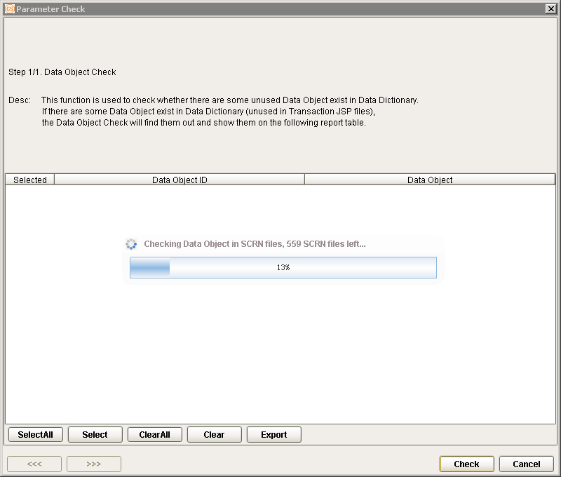{width="4.858333333333333in” height="4.1229 |
| 16666666667in”} |
| ——————————————————————- |
| —————– |
| |
| 4. All unused data objects are listed in the grid. The total number |
| of retrieved data is also displayed on the Parameter Check |
| window. |
| |
| >
{width="4.679166666666666in” height="3.6034 |
| 722222222224in”} |
| ——————————————————————- |
| —————— |
| |
| 3. In the Parameter Check window that is displayed, click on the |
| Check button to proceed. The system starts filtering the data. |
| |
| ——————————————————————- |
| —————– |
| 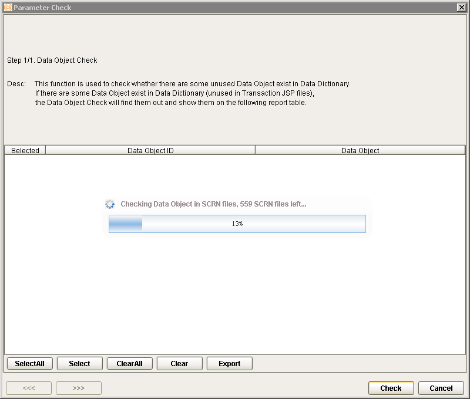{width="4.858333333333333in” height="4.1229 |
| 16666666667in”} |
| ——————————————————————- |
| —————– |
| |
| 4. All unused data objects are listed in the grid. The total number |
| of retrieved data is also displayed on the Parameter Check |
| window. |
| |
| >  {width="4.603472222222222in” |
| > height="3.9055555555555554in”} |
| |
| [NOTE:]{.underline} |
| |
| i. If the system displays several results, the Previous and Next |
| buttons may be used to view the items. These buttons are enabled |
| only when both Data Object and Field are selected for the House |
| Keeping process. |
| |
| ii. If a data object is added to a table or if a calculation |
| setting is defined for a data object, the data object is not |
| included in the list of unused data in the Parameter Check window. |
| |
| 5. To export the result of the check, mark the corresponding flag of |
| the results to be included in the generated file and click on the |
| Export button. The Select All, Select, Clear All, and Clear |
| buttons may also be used accordingly. |
| |
|
{width="4.603472222222222in” |
| > height="3.9055555555555554in”} |
| |
| [NOTE:]{.underline} |
| |
| i. If the system displays several results, the Previous and Next |
| buttons may be used to view the items. These buttons are enabled |
| only when both Data Object and Field are selected for the House |
| Keeping process. |
| |
| ii. If a data object is added to a table or if a calculation |
| setting is defined for a data object, the data object is not |
| included in the list of unused data in the Parameter Check window. |
| |
| 5. To export the result of the check, mark the corresponding flag of |
| the results to be included in the generated file and click on the |
| Export button. The Select All, Select, Clear All, and Clear |
| buttons may also be used accordingly. |
| |
|  {width="4.170138888888889in” height="3.5375 |
| in”} |
| ——————————————————————- |
| —— |
| |
| 6. Specify the path where the file is to be exported. |
| |
| ——————————————————————- |
| ——————- |
|
{width="4.170138888888889in” height="3.5375 |
| in”} |
| ——————————————————————- |
| —— |
| |
| 6. Specify the path where the file is to be exported. |
| |
| ——————————————————————- |
| ——————- |
|  {width="3.1791666666666667in” height="2.197 |
| 9166666666665in”} |
| ——————————————————————- |
| ——————- |
| |
| 7. The Unused Data Object XLS file is generated on the specified |
| path. This file contains information on the unused data objects. |
| |
| ——————————————————————- |
| —————— |
| {width="4.236111111111111in” height="3.9430 |
| 555555555555in”} |
| ——————————————————————- |
| —————— |
| |
| 8. Click on the Cancel button once done. |
| |
| {width="3.1791666666666667in” |
| height="2.1979166666666665in”} |
| |
| 9. A confirmation message is displayed. Click on the Yes button to |
| exit the Parameter Check window. |
| |
| [EXAMPLE:]{.underline} |
| |
| In the DB Dictionary function, create a data object entity: DOC_DO. |
| |
| ——————————————————————- |
| —————– |
| {width="4.829861111111111in” height="3.2076 |
| 38888888889in”} |
| ——————————————————————- |
| —————– |
| |
| Add this DO to a module table and reformat the table. |
| |
|
{width="3.1791666666666667in” height="2.197 |
| 9166666666665in”} |
| ——————————————————————- |
| ——————- |
| |
| 7. The Unused Data Object XLS file is generated on the specified |
| path. This file contains information on the unused data objects. |
| |
| ——————————————————————- |
| —————— |
| {width="4.236111111111111in” height="3.9430 |
| 555555555555in”} |
| ——————————————————————- |
| —————— |
| |
| 8. Click on the Cancel button once done. |
| |
| {width="3.1791666666666667in” |
| height="2.1979166666666665in”} |
| |
| 9. A confirmation message is displayed. Click on the Yes button to |
| exit the Parameter Check window. |
| |
| [EXAMPLE:]{.underline} |
| |
| In the DB Dictionary function, create a data object entity: DOC_DO. |
| |
| ——————————————————————- |
| —————– |
| {width="4.829861111111111in” height="3.2076 |
| 38888888889in”} |
| ——————————————————————- |
| —————– |
| |
| Add this DO to a module table and reformat the table. |
| |
|  {width="4.802083333333333in” |
| height="2.51875in”} |
| |
| Run the House Keeping function and select Data Object in the House |
| Keeping window. |
| |
|
{width="4.802083333333333in” |
| height="2.51875in”} |
| |
| Run the House Keeping function and select Data Object in the House |
| Keeping window. |
| |
|  {width="3.7263888888888888in” height="3.188 |
| 888888888889in”} |
| ——————————————————————- |
| —————— |
| |
| The system only displays the data objects that are not used in any |
| parameter setting. |
| |
| ——————————————————————- |
| —————— |
|
{width="3.7263888888888888in” height="3.188 |
| 888888888889in”} |
| ——————————————————————- |
| —————— |
| |
| The system only displays the data objects that are not used in any |
| parameter setting. |
| |
| ——————————————————————- |
| —————— |
|  {width="3.763888888888889in” height="3.1979 |
| 166666666665in”} |
| ——————————————————————- |
| —————— |
| |
| Delete the data object from the module table and run the Reformat |
| process. |
| |
| ——————————————————————- |
| —————— |
| 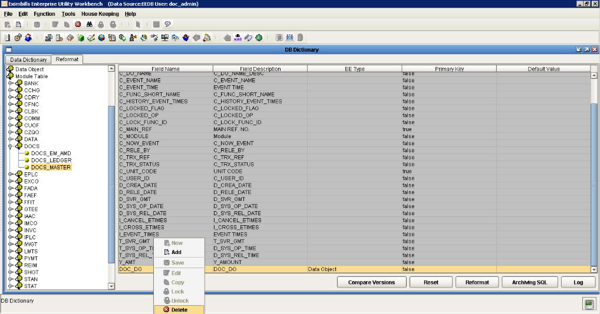{width="4.613194444444445in” height="2.4243 |
| 055555555557in”} |
| ——————————————————————- |
| —————— |
| |
| Run the House Keeping function again. The system displays the data |
| objects that are not used. Since the DOC_DO data object has been |
| removed from the DOCS_MASTER table and no other settings are defined |
| for it, it is included in the list. |
| |
|
{width="3.763888888888889in” height="3.1979 |
| 166666666665in”} |
| ——————————————————————- |
| —————— |
| |
| Delete the data object from the module table and run the Reformat |
| process. |
| |
| ——————————————————————- |
| —————— |
| 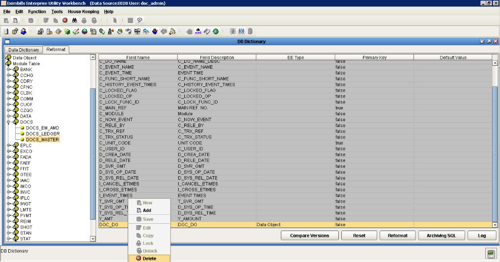{width="4.613194444444445in” height="2.4243 |
| 055555555557in”} |
| ——————————————————————- |
| —————— |
| |
| Run the House Keeping function again. The system displays the data |
| objects that are not used. Since the DOC_DO data object has been |
| removed from the DOCS_MASTER table and no other settings are defined |
| for it, it is included in the list. |
| |
|  {width="4.283333333333333in” |
| height="3.6319444444444446in”} |
+———————————————————————–+
{width="4.283333333333333in” |
| height="3.6319444444444446in”} |
+———————————————————————–+
#######
####### Toolbar Buttons
There are two kinds of toolbars in the EE Utility: the basic toolbar and the function toolbar.
[]{#_Toc5790048 .anchor}Basic Toolbar
The following standard buttons are available on the EE Utility window. These are used for performing the basic and common tasks of the system.

Figure 2. 3 Basic Toolbar Buttons
Button Description
+———————–+———————–+———————–+ | {width="0.25486111 | | for creating a new | | 11111111in” | | parameter or rule. | | height="0.25486111111 | | | | 11111in”} | | | | New | | | +=======================+=======================+=======================+ | | | | +———————–+———————–+———————–+ | {width="0.25486111 | | for adding a setting | | 11111111in” | | for the selected | | height="0.25486111111 | | function or | | 11111in”} | | parameter. | | Add | | | +———————–+———————–+———————–+ | | | | +———————–+———————–+———————–+ | {width="0.25486111 | | for saving a created | | 11111111in” | | or modified setting. | | height="0.25486111111 | | | | 11111in”} | | | | Save | | | +———————–+———————–+———————–+ | | | | +———————–+———————–+———————–+ | {width="0.23611111 | | for editing or | | 11111111in” | | modifying an existing | | height="0.25486111111 | | setting. | | 11111in”} | | | | Edit | | | +———————–+———————–+———————–+ | | | | +———————–+———————–+———————–+ | {width="0.25486111 | | for copying or | | 11111111in” | | duplicating a | | height="0.25486111111 | | selected setting. | | 11111in”} | | | | Copy | | | +———————–+———————–+———————–+ | | | | +———————–+———————–+———————–+ | {width="0.25486111 | | for deleting or | | 11111111in” | | removing an existing | | height="0.25486111111 | | setting. | | 11111in”} | | | | Delete | | | +———————–+———————–+———————–+ | | | | +———————–+———————–+———————–+ | {width="0.25486111 | | for finding an | | 11111111in” | | existing setting. | | height="0.25486111111 | | | | 11111in”} | | | | Find | | | +———————–+———————–+———————–+ | | | | +———————–+———————–+———————–+ | {width="0.27361111 | | for locking a | | 111111114in” | | parameter or setting | | height="0.27361111111 | | to a specific user. | | 111114in”} | | | | Lock | | See also the Lock | | | | option in the Edit | | | | menu. | +———————–+———————–+———————–+ | | | | +———————–+———————–+———————–+ | {width="0.30208333 | | for unlocking a | | 33333333in” | | locked parameter or | | height="0.30208333333 | | setting. | | 33333in”}Unlock | | | | | | See also the Unlock | | | | option in the Edit | | | | menu. | +———————–+———————–+———————–+ | | | | +———————–+———————–+———————–+ | {width="0.25486111 | | for closing the | | 11111111in” | | current function | | height="0.25486111111 | | window. | | 11111in”} | | | | **Close ** | | | +———————–+———————–+———————–+ | | | | +———————–+———————–+———————–+ | {width="0.25486111 | | reserved for future | | 11111111in” | | use. | | height="0.23611111111 | | | | 11111in”} | | | | Help Topic | | | +———————–+———————–+———————–+ | | | | +———————–+———————–+———————–+ | {width="0.25486111 | | for displaying the | | 11111111in” | | version information | | height="0.25486111111 | | of Eximbills | | 11111in”}About | | Enterprise. | | Eximbills | | | +———————–+———————–+———————–+
[]{#_Toc5790049 .anchor}Function Toolbar
The buttons on this toolbar are shortcuts to some of the functions that are in the Function Group lists of the EE Utility window. The buttons may also be accessed from the Function menu on the menu bar.

Figure 2. 4 Function Toolbar Buttons
Button Description
+———————–+———————–+———————–+ | {width="0.25486111 | | for accessing the | | 11111111in” | | System Parameter | | height="0.25486111111 | | function. The | | 11111in”} | | function may also be | | Set System | | accessed from the | | Parameter | | Parameter Manage | | | | group under the | | | | Function menu. | +=======================+=======================+=======================+ | | | | +———————–+———————–+———————–+ | {width="0.25486111 | | for accessing the | | 11111111in” | | Component Manage | | height="0.25486111111 | | function. The | | 11111in”} | | function may also be | | Manage Component | | accessed from the | | | | Parameter Manage | | | | group under the | | | | Function menu. | +———————–+———————–+———————–+ | | | | +———————–+———————–+———————–+ | {width="0.25486111 | | for accessing the | | 11111111in” | | Calculation function. | | height="0.25486111111 | | The function may also | | 11111in”} | | be accessed from the | | Calculation | | Parameter Manage | | | | group under the | | | | Function menu. | +———————–+———————–+———————–+ | | | | +———————–+———————–+———————–+ | {width="0.25486111 | | for accessing the | | 11111111in” | | Module & Event | | height="0.25486111111 | | function. The | | 11111in”} | | function may also be | | Module/Event | | accessed from the | | Configuration | | Transaction Function | | | | group under the | | | | Function menu. | +———————–+———————–+———————–+ | | | | +———————–+———————–+———————–+ | {width="0.25486111 | | for accessing the | | 11111111in” | | Transaction Function. | | height="0.25486111111 | | The function may also | | 11111in”} | | be accessed from the | | Transaction | | Transaction Function | | Function | | group under the | | Configuration | | Function menu. | +———————–+———————–+———————–+ | | | | +———————–+———————–+———————–+ | {width="0.23611111 | | for accessing the | | 11111111in” | | Form function. The | | height="0.25486111111 | | function may also be | | 11111in”} | | accessed from the | | Form Set | | Transaction Function | | | | group under the | | | | Function menu. | +———————–+———————–+———————–+ | | | | +———————–+———————–+———————–+ | {width="0.23611111 | | for accessing the | | 11111111in” | | Accounting Rules | | height="0.25486111111 | | function. The | | 11111in”} | | function may also be | | Accounting Rule | | accessed from the | | Setting | | Transaction Function | | | | group under the | | | | Function menu. | +———————–+———————–+———————–+ | | | | +———————–+———————–+———————–+ | {width="0.25486111 | | for accessing the | | 11111111in” | | Field Conversion | | height="0.25486111111 | | function. The | | 11111in”} | | function may also be | | Field Conversion | | accessed from the | | | | Maintenance group | | | | under the Function | | | | menu. | +———————–+———————–+———————–+ | | | | +———————–+———————–+———————–+ | {width="0.23611111 | | for accessing the Get | | 11111111in” | | CUBK function. The | | height="0.25486111111 | | function may also be | | 11111in”} | | accessed from the | | Get Data | | Transaction Function | | | | group under the | | | | Transaction Function | | | | menu. | +———————–+———————–+———————–+ | | | | +———————–+———————–+———————–+ | {width="0.23611111 | | for accessing the | | 11111111in” | | Output Device | | height="0.25486111111 | | function. The | | 11111in”} | | function may also be | | Output Device | | accessed from the | | | | System Function group | | | | under the Function | | | | menu. | +———————–+———————–+———————–+ | | | | +———————–+———————–+———————–+ | {width="0.25486111 | | for accessing the | | 11111111in” | | Function Group | | height="0.25486111111 | | function. The | | 11111in”} | | function may also be | | Function Group | | accessed from the | | | | System Function group | | | | under the Function | | | | menu. | +———————–+———————–+———————–+ | | | | +———————–+———————–+———————–+ | {width="0.25486111 | | for accessing the | | 11111111in” | | Clause function. The | | height="0.25486111111 | | function may also be | | 11111in”} | | accessed from the | | **Clause ** | | Transaction Function | | | | group under the | | | | Function menu. | +———————–+———————–+———————–+ | | | | +———————–+———————–+———————–+ | {width="0.23611111 | | for accessing the | | 11111111in” | | Protocol Manager | | height="0.25486111111 | | function. The | | 11111in”} | | function may also be | | Protocol Manager | | accessed from the | | | | System Function group | | | | under the Function | | | | menu. | +———————–+———————–+———————–+ | | | | +———————–+———————–+———————–+ | {width="0.25486111 | | for accessing the | | 11111111in” | | GAPI Setting | | height="0.25486111111 | | function. The | | 11111in”}GAPI | | function may also be | | Setting | | accessed from the | | | | Transaction Function | | | | group under the | | | | Function menu. | +———————–+———————–+———————–+ | | | | +———————–+———————–+———————–+ | {width="0.23611111 | | for accessing the STP | | 11111111in” | | Setting function. The | | height="0.25486111111 | | function may also be | | 11111in”} | | accessed from the | | STP Setting | | System Function group | | | | under the Function | | | | menu. | +———————–+———————–+———————–+ | | | | +———————–+———————–+———————–+ | {width="0.23611111 | | for accessing the | | 11111111in” | | Message Broker | | height="0.25486111111 | | Setting function. The | | 11111in”} | | function may also be | | Message Broker | | accessed from the | | Setting | | Transaction Function | | | | group under the | | | | Function menu. | +———————–+———————–+———————–+ | | | | +———————–+———————–+———————–+ | {width="0.23611111 | | for accessing the | | 11111111in” | | Amount/Rate Format | | height="0.25486111111 | | function. The | | 11111in”} | | function may also be | | Amount Format | | accessed from the | | Setting | | Transaction Function | | | | group under the | | | | Function menu. | +———————–+———————–+———————–+ | | | | +———————–+———————–+———————–+ | {width="0.25486111 | | reserved for future | | 11111111in” | | use. | | height="0.25486111111 | | | | 11111in”} | | | | Report | | | +———————–+———————–+———————–+ | | | | +———————–+———————–+———————–+ | {width="0.25486111 | | for accessing the | | 11111111in” | | Transfer To function. | | height="0.25486111111 | | The function may also | | 11111in”} | | be accessed from the | | Transfer To | | Transaction Function | | | | group under the | | | | Function menu. | +———————–+———————–+———————–+ | | | | +———————–+———————–+———————–+ | {width="0.25486111 | | for accessing the DB | | 11111111in” | | Dictionary function. | | height="0.25486111111 | | The function may also | | 11111in”} | | be accessed from the | | DB Dictionary | | Maintenance group | | | | under the Function | | | | menu. | +———————–+———————–+———————–+ | | | | +———————–+———————–+———————–+ | {width="0.25486111 | | for accessing the XML | | 11111111in” | | Generator function. | | height="0.25486111111 | | The function may also | | 11111in”} | | be accessed from the | | XML Generator | | Maintenance group | | | | under the Function | | | | menu. | +———————–+———————–+———————–+ | | | | +———————–+———————–+———————–+ | {width="0.25486111 | | for fixing any of the | | 11111111in” | | following issues: | | height="0.25486111111 | | | | 11111in”} | | - Fix DO Template | | Fix Data | | Screen | | | | | | | | - Delete DO | | | | Template Missing | | | | Fields | | | | | | | | - Delete Duplicated | | | | Records | | | | | | | | - Clean Unused Rule | | | | | | | | - Correct SWIFT | | | | Message Rule Name | | | | Id and Module | | | | | | | | - Clean Amount Rule | +———————–+———————–+———————–+ | | | | +———————–+———————–+———————–+ | {width="0.26388888 | | to migrate error | | 88888889in” | | messages and time | | height="0.29236111111 | | zone settings from | | 11111in”} | | the Meta database | | Migrate to Web | | into the Security | | | | database. | | | | | | | | **[NOTE:]{.underline} | | | | ** | | | | | | | | i. Refer to the EE | | | | Security Manager | | | | manual for more | | | | information on | | | | migrating error | | | | messages in the | | | | Security Manager. | | | | | | | | ii. Refer to the | | | | EE Standing Data | | | | Module manual for | | | | more information on | | | | migrating time zone | | | | settings in the | | | | Standing Data | | | | Module. | +———————–+———————–+———————–+ | | | | +———————–+———————–+———————–+ | {width="0.25486111 | | for accessing the | | 11111111in” | | Business Unit Config | | height="0.22638888888 | | function. The | | 88889in”} | | function may also be | | Business Unit | | accessed from the | | | | User Manage group | | | | under the Function | | | | menu. | +———————–+———————–+———————–+ | | | | +———————–+———————–+———————–+ | {width="0.23611111 | | for accessing the | | 11111111in” | | User Manage function. | | height="0.25486111111 | | The function may also | | 11111in”} | | be accessed from the | | User Manager | | User Manage group | | | | under the Function | | | | menu. | +———————–+———————–+———————–+ | | | | +———————–+———————–+———————–+ | {width="0.27361111 | | for accessing the | | 111111114in” | | Data Source Manage | | height="0.28333333333 | | function. The | | 33333in”} | | function may also be | | Data Source | | accessed from the | | Manager | | User Manage group | | | | under the Function | | | | menu. | +———————–+———————–+———————–+
####### Popup Menu
Inside a function or configuration window, options may be provided in the form of a popup menu. This menu is displayed by right-clicking on the relevant window section or on the relevant setting.

Figure 2. 5 Popup Menu
In a popup window, the following options may be made available:
Option Description
+———————–+———————–+———————–+ | New | | This is used for | | | | creating a new | | | | parameter or rule. | +=======================+=======================+=======================+ | | | | +———————–+———————–+———————–+ | Add | | This is used for | | | | adding a setting for | | | | the selected function | | | | or parameter. | +———————–+———————–+———————–+ | | | | +———————–+———————–+———————–+ | Save | | This is used for | | | | saving a created or | | | | modified setting. | +———————–+———————–+———————–+ | | | | +———————–+———————–+———————–+ | Edit | | This is used for | | | | editing or modifying | | | | an existing setting. | +———————–+———————–+———————–+ | | | | +———————–+———————–+———————–+ | Copy | | This is used for | | | | copying or | | | | duplicating a | | | | selected setting. | +———————–+———————–+———————–+ | | | | +———————–+———————–+———————–+ | Lock | | This is used for | | | | manually locking a | | | | parameter or setting | | | | to a specific user. | +———————–+———————–+———————–+ | | | | +———————–+———————–+———————–+ | Unlock | | This is used for | | | | manually unlocking a | | | | locked parameter or | | | | setting. | +———————–+———————–+———————–+ | | | | +———————–+———————–+———————–+ | Delete | | This is used for | | | | deleting or removing | | | | an existing setting. | +———————–+———————–+———————–+ | | | | +———————–+———————–+———————–+ | Find | | This is used to | | | | search for an | | | | existing setting. | | | | | | | | Refer to the | | | | succeeding Smart | | | | Search | | | | discussion for more | | | | information. | +———————–+———————–+———————–+ | | | | +———————–+———————–+———————–+ | Combine | | This is used in a | | | | multi-entity | | | | environment. | | | | Bank-country groups | | | | are added to or | | | | removed from a domain | | | | that is assigned to a | | | | specific parameter | | | | type. | | | | | | | | Refer to the EE | | | | Multi-Entity | | | | documentation for | | | | more information. | +———————–+———————–+———————–+ | | | | +———————–+———————–+———————–+ | **Help ** | | This is reserved for | | | | future use. | +———————–+———————–+———————–+
#######
####### Other EE Utility Features
The EE Utility provides the following additional features:
-
Smart Search
-
Function Name Fields
[]{#_Toc5790052 .anchor}Smart Search
Rule names and methods may be easily searched using the Smart Search feature of the EE Utility. This feature may be accessed by right-clicking on the appropriate window and selecting the Find option from the popup menu that is displayed, or by pressing ctrl+F on the keyboard.
Figure 2. 6 Smart Search

Figure 2. 7 Find Window
The following items are provided in the Find window for searching for particular texts.
Item Description
+———————–+———————–+———————–+ | Column Name | | This field is used to | | | | specify the type of | | | | name to be searched | | | | (e.g., rule name, | | | | method name, etc.). | | | | Available values may | | | | be selected from the | | | | dropdown list, or, | | | | may be manually | | | | specified. | +=======================+=======================+=======================+ | | | | +———————–+———————–+———————–+ | Column Value | | This field is used to | | | | specify the actual | | | | text to be searched | | | | based on the Column | | | | Name (e.g., | | | | IPLC_Issuance). | | | | Available values may | | | | be selected from the | | | | dropdown list, or, | | | | may be manually | | | | specified. | +———————–+———————–+———————–+ | | | | +———————–+———————–+———————–+ | Direction | | Mark the direction or | | | | checking sequence of | | | | the search: Forward, | | | | Backward, or | | | | Wrap_search. | | | | | | | | If the search is to | | | | be performed in any | | | | direction (i.e, | | | | within all available | | | | content for | | | | searching), mark the | | | | Wrap_search option. | +———————–+———————–+———————–+ | | | | +———————–+———————–+———————–+ | Case Sensitive | | Mark this flag if the | | | | search must consider | | | | the letter case | | | | (i.e., uppercase or | | | | lowercase) in which | | | | the word that is | | | | specified in the | | | | Column Value field is | | | | defined. | +———————–+———————–+———————–+ | | | | +———————–+———————–+———————–+ | Whole Word | | Mark this flag if the | | | | search must consider | | | | the whole word | | | | specified in the | | | | Column Value field. | | | | | | | | **[NOTE:]{.underline} | | | | ** | | | | | | | | If this flag is not | | | | marked, the text | | | | specified in the | | | | Column Value field | | | | may be searched as a | | | | part of a whole word | | | | (e.g., prefix, | | | | suffix). | +———————–+———————–+———————–+
This feature may be applied in the following functions.
Function Search Box Type
User Manage Function Group
Business Unit Config Tree
Table
DataSource Manage Table
Drop Down Box
Tree
List
User Manage List
Table
Audit Log Drop Down box
Table
Parameter Manage Function Group
Component Manager Drop Down box
Table
Tree
Calculation Drop Down box
Table
Tree
Language Configuration Drop Down box
Table
Security Parameters Table
Drop Down Box
Server Table
Drop Down Box
System Parameter Table
Tree
Drop Down box
User Class Tree
Table
Drop Down box
User Authority Table
Tree
System Function Group
Function Group Tree
Table
Drop Down Box
Domain Tree
Table
List
Output Device Drop Down Box
Table
List
Tree
Protocol Manager Table
Drop Down Box
STP Setting Tree
Say Total Drop Down Box
Table
Transaction Function Group
Accounting Rules Drop Down Box
Table
Tree
Amount/Rate Format Tree
Drop Down Box
Table
Archiving Drop Down Box
Table
Tree
Attribute Tree
Table
Drop Down Box
Batch Manager Tree Drop Down Box Table Catalog Tree Table Clause Tree Table List Event Driven Tree Drop Down Box Table EDI Form Tree Form Tree Table Drop Down Box List GAPI Setting Tree Table Drop Down Box
Get CUBK Table
Tree
Drop Down Box
Get DO DATA Tree Table Drop Down Box Message Broker Setting Table Drop Down Box Module&Event Table Drop Down Box Report Template Tree Table Drop Down Box Screen Tree Table Server Side JS Tree Table Drop Down Box Subtask Tree Table List Drop Down Box
+——————————–+—————+ | | Tree | | | | | SWIFT | | +================================+===============+ | | Table | +——————————–+—————+ | | Drop Down Box | +——————————–+—————+ | System Maintain | Table | +——————————–+—————+ | Message Mapping | Table | +——————————–+—————+ | | List | +——————————–+—————+ | Transfer To | Table | +——————————–+—————+ | | Tree | +——————————–+—————+ | | Drop Down Box | +——————————–+—————+ | Transaction Function | Tree | +——————————–+—————+ | | Table | +——————————–+—————+ | | List | +——————————–+—————+ | | Drop Down Box | +——————————–+—————+ | Maintenance Function Group | | +——————————–+—————+ | DB Dictionary | Tree | +——————————–+—————+ | | Table | +——————————–+—————+ | | List | +——————————–+—————+ | | Drop Down Box | +——————————–+—————+ | Multi Language | Table | +——————————–+—————+ | | Tree | +——————————–+—————+ | | Drop Down Box | +——————————–+—————+
Field Conversion Tree
Table
Drop Down Box
XML Generator Table List Copy Module Tree Table Drop Down Box Data Dictionary Mapping Table Version Control Tools Table List Drop Down Box SOA Setting Tree Table Drop Down Box SOA Calculation Tree List Table Drop Down Box Hand Writing Editor Table List Tree
[]{#_Toc5790053 .anchor}Function Name Fields
The EE Utility does not permit adding a space on Name fields in functions (i.e., the space key cannot be used when a rule name is added manually). If, on the other hand, the rule name is specified by using the Paste functionality, the system displays a message confirming if the spaces are to be automatically removed. DCS Amount
Figure 2. 8 Confirmation Message
The following are the functions that include a Name field:
-
Calculation - Common Setting, Function Level, and Screen Level
-
Function Relation Editor
-
Function Group
-
Domain - Default Domain and Parameter-Type Domain
-
Mail
-
Protocol Manager
-
Accounting Rules
-
Archiving
-
Attribute
-
Batch Manager
-
Catalog
-
Clause
-
Event Driven
-
EDI Form
-
Form
-
GAPI Setting
-
Get CUBK
-
Get DO DATA
-
Message Broker Setting
-
Module&Event
-
Report Template
-
Screen
-
Server Side JS
-
Subtask
-
SWIFT
-
Message Mapping
-
Transfer To
-
Transaction Function
-
Multi Language
-
Version Control Tool
-
Hand Writing Editor
Generating the XML Parameter Files
The created parameters and business logic are stored in the database as Meta data. For this Meta data to be accessible to the application server and the web server, it has to be converted to XML – the format used for the communication between the client and the server.
The parameter files are typically generated through the XML Generator function manually. Except for the Calculation parameter, the files generated from the XML Generator function are all XML files. The generated files for the Calculation parameter are JavaScript files.
The AUTO_GENERATE_XML_CONTROLER System Parameter
How the parameter files are generated depends on the value of the AUTO_GENERATE_XML_CONTROLER system parameter.

Figure 2. AUTO_GENERATE_XML_CONTROLER
Defined through the System Parameter function, this may be set to any of these values:
-
Generate and Ask: After a parameter setting or configuration is saved, the system displays a message confirming whether the XML files are to be generated. Upon user confirmation, the XML files are automatically generated.
-
Not Generate: The XML files are not automatically generated; these must be manually generated through the XML Generator function.
-
Generate and Not Need Ask: The system automatically generates the XML files after a parameter or configuration is saved.
If no value (null) is defined for this system parameter, the system does not automatically generate the XML files. This is essentially the same as the Not Generate parameter value.
Manual Generation of Parameter Files
To generate the XML parameter files manually:
Do the following …
+———————–+———————–+———————–+ | 1. Log on the EE | | {width="3.5in” | | Administrator or | | height="2.34513888888 | | Operator user with | | 8889in”} | | rights to the XML | | | | Generator function. | | | +=======================+=======================+=======================+ | | | | +———————–+———————–+———————–+ | 2. The EE Utility | | {width="3.5in” | | displayed. | | height="1.85694444444 | | | | 44445in”} | | Run the XML Generator | | | | function from the | | | | Maintenance function | | | | group. | | | +———————–+———————–+———————–+ | | | | +———————–+———————–+———————–+ | 3. The XML | | {width="3.5in” | | window is | | height="1.85694444444 | | displayed. | | 44445in”} | | | | | | When there are newly | | | | defined or modified | | | | parameters, the Meta | | | | Data to XML window is | | | | also displayed. It | | | | lists these | | | | parameters for easy | | | | selection. In this | | | | case, the parameter | | | | can be selected from | | | | this window and the | | | | Apply button clicked. | | | | Afterwards, proceed | | | | to Step 5. | | | | | | | | Alternatively, the | | | | Meta data or | | | | parameter can be | | | | manually selected | | | | from the main XML | | | | Generator window. In | | | | this case, click on | | | | the Close button of | | | | the Meta Data to XML | | | | window and proceed to | | | | Step 4. | | | +———————–+———————–+———————–+ | | | | +———————–+———————–+———————–+ | 4. Double-click on | | {width="3.5in” | | parameter type from | | height="1.85694444444 | | the XML Generator | | 44445in”} | | window. | | | +———————–+———————–+———————–+ | | | | +———————–+———————–+———————–+ | 5. Depending on the | | {width="3.5in” | | type, an XML | | height="1.85694444444 | | configuration | | 44445in”} | | window may be | | | | displayed. In other | | | | cases, the process | | | | directly proceeds | | | | from Step 3 or 4 to | | | | Step 6. | | | | | | | | If a configuration | | | | window is displayed, | | | | specify the exact or | | | | any additional | | | | setting required to | | | | generate the relevant | | | | XML files. When the | | | | specifications are | | | | defined, click on the | | | | Save button. | | | +———————–+———————–+———————–+ | | | | +———————–+———————–+———————–+ | 6. A message is | | {width="3.5in” | | confirming if the | | height="1.15416666666 | | XML files are to be | | 66666in”} | | generated on the | | | | system path. | | | +———————–+———————–+———————–+ | | | | +———————–+———————–+———————–+ | **[NOTE:]{.underline} | | {width="3.5in” | | | | height="1.85694444444 | | The default path of | | 44445in”} | | the XML files is | | | | defined through the | | | | GEN_XML_ROOTPATH | | | | Utility Workbench | | | | system parameter. | | | | This system parameter | | | | is configured through | | | | the System Parameter | | | | function from the | | | | Parameter Manage | | | | function group. | | | +———————–+———————–+———————–+ | | | | +———————–+———————–+———————–+ | 7. To save the XML | | {width="3.5in” | | path, click on the | | height="3.24236111111 | | Yes button. | | 11112in”} | | | | | | To specify another | | | | path, click on the No | | | | button. In the Save | | | | dialog box that is | | | | displayed, browse for | | | | the path and click on | | | | the Save button. | | | +———————–+———————–+———————–+ | | | | +———————–+———————–+———————–+ | 8. When the | | {width="3.5in” | | are generated, the | | height="0.92430555555 | | system displays a | | 55556in”} | | confirmation | | | | message. | | | +———————–+———————–+———————–+ | | | | +———————–+———————–+———————–+ | Click on the Detail | | {width="3.5in” | | paths of the | | height="3.0in”} | | generated XML files. | | | | | | | | [NOTE: | | | | ]{.underline} | | | | | | | | To hide this | | | | information, click on | | | | the Hide button. | | | +———————–+———————–+———————–+ | | | | +———————–+———————–+———————–+ | **[NOTE:]{.underline} | | {width="3.5in” | | | | height="2.11875in”} | | Check the indicated | | | | paths to see the | | | | generated XML files. | | | +———————–+———————–+———————–+
Building an EE Module
An EE module represents a product or service of a bank. In trade finance, for example, an EE module may be created to automate the processes involved in an Import LC transaction. A transaction module consists of transaction functions, each with its own properties and attributes. The settings that pertain to modules and functions are called parameters; these are configured through the EE Utility.
 {width="0.3298611111111111in”
height="0.3298611111111111in”}NOTE:
{width="0.3298611111111111in”
height="0.3298611111111111in”}NOTE:
i. One of the preliminary steps in creating a module is the GAP analysis. It is through this that the requirements of the transaction are determined; this includes the required fields for data input and the types of output that must be generated. Once the business requirements are identified and the required preparations are made, the project team may then start building the modules.
ii. For detailed information on building a module, refer to the EE Building a Module documentation.
Basic Steps
The general processes involved in the creation of a transaction module are as follows.
Steps in Building a Module
+———————–+———————–+———————–+ | **[Access the EE | | {width="3.5in” | | ** | | height="2.34513888888 | | | | 8889in”} | | Log on the EE Utility | | | | as an Administrator | | | | or Operator type of | | | | user. Only these | | | | types of users can | | | | access the EE Utility | | | | for building | | | | parameters. | | | | | | | | User profiles are set | | | | up through the User | | | | Manager function in | | | | the User Manage | | | | function group. | | | +=======================+=======================+=======================+ | | | | +———————–+———————–+———————–+ | *[Create the module | | {width="3.5in” | | events.]{.underline} | | height="1.82291666666 | | * | | 66667in”} | | | | | | **Configure the | | | | module and the | | | | projected events that | | | | manage the | | | | transaction flow | | | | within the module. ** | | | | | | | | This is set up | | | | through the Module & | | | | Event function in the | | | | Transaction Function | | | | group. | | | +———————–+———————–+———————–+ | | | | +———————–+———————–+———————–+ | *[Create the | | {width="3.5in” | | tables.]{.underline} | | height="1.85694444444 | | * | | 44445in”} | | | | | | There are several | | | | types of tables. In | | | | building a module, it | | | | is mandatory to | | | | create the module’s | | | | Master and Ledger | | | | tables. | | | | | | | | This is set up | | | | through the DB | | | | Dictionary function | | | | in the Maintenance | | | | function group. | | | +———————–+———————–+———————–+ | | | | +———————–+———————–+———————–+ | *[Define the EE | | Add the relevant | | fields for the | | fields to the | | transaction | | transaction tables | | tables.]{.underline} | | through the Reformat | | * | | tab of the DB | | | | Dictionary function. | | Define the fields and | | | | field properties for | | {width="3.5in” | | tables. | | height="1.85694444444 | | | | 44445in”} | | This is set up | | | | through the DB | | | | Dictionary function | | | | in the Maintenance | | | | function group. | | | +———————–+———————–+———————–+ | | | | +———————–+———————–+———————–+
+———————–+———————–+———————–+ | *[Assign the | | Through the Reformat | | transaction tables to | | tab of the DB | | the relevant | | Dictionary function: | | schema.]{.underline} | | | | * | | 1. Assign the | | | | transaction tables | | Assign the created | | to the relevant | | transaction tables to | | schema. | | a particular schema. | | | | The types of schemas | | {width="3.5in” | | and EXIMUSER. Once | | height="1.85694444444 | | done, perform the | | 44445in”} | | Reformat process to | | | | import the data to | | | | the database. | | | | | | | | This is set up | | | | through the DB | | | | Dictionary function | | | | in the Maintenance | | | | function group. | | | +=======================+=======================+=======================+ | | | | +———————–+———————–+———————–+ | | | 2. Perform the | | | | Reformat process to | | | | commit the changes | | | | made to the | | | | database. The | | | | Reformat Preview | | | | window provides an | | | | overview of the | | | | outcome of the | | | | Reformat process. | | | | | | | | {width="3.5in” | | | | height="1.85694444444 | | | | 44445in”} | +———————–+———————–+———————–+ | | | | +———————–+———————–+———————–+
+———————–+———————–+———————–+ | [Create the | | Run Transaction | | functions.]{.underlin | | Function and select | | e} | | the module in which | | | | the function is to be | | Create the functions | | included. Create the | | to be used. | | new transaction | | | | function and define | | This is set up | | its properties. | | through the | | | | Transaction Function | | {width="3.5in” | | Function group. | | height="1.85694444444 | | | | 44445in”} | +=======================+=======================+=======================+ | | | | +———————–+———————–+———————–+ | *[Design or modify | | {width="3.5in” | | create the | | height="2.09027777777 | | transaction function | | 77777in”} | | screen.]{.underline} | | | | * | | | | | | | | The JSP files can be | | | | modified using an | | | | HTML editor. Style | | | | sheets can be applied | | | | to these files for | | | | uniformity of look | | | | and feel. | | | +———————–+———————–+———————–+ | | | | +———————–+———————–+———————–+
+———————–+———————–+———————–+ | *[Create the | | Screen: * | | transaction | | | | parameters.]{.underli | | A Screen rule | | ne} | | pertains to a | | | | parameter setting | | Each transaction is | | that points to the | | associated with | | JSP file (s) to be | | specific parameters | | used as an actual | | or properties such as | | transaction screen. | | screens, attributes, | | Define the Screen | | catalogs, accounting | | rule through the | | vouchers, SWIFT | | Screen function. | | forms, GAPI settings, | | | | and Transfer To | | {width="3.5in” | | | | height="1.85694444444 | | These are set up in | | 44445in”} | | separate functions in | | | | the Transaction | | | | Function group. | | | +=======================+=======================+=======================+ | | | | +———————–+———————–+———————–+ | | | Attribute: | | | | | | | | Attributes are | | | | business components | | | | that regulate the | | | | behavior of functions | | | | in processing | | | | transactions. Define | | | | the Attribute rule | | | | through the Attribute | | | | function. | | | | | | | | {width="3.5in” | | | | height="1.85694444444 | | | | 44445in”} | +———————–+———————–+———————–+ | | | | +———————–+———————–+———————–+ | | | Catalog: | | | | | | | | A catalog is a set of | | | | instructions | | | | utilizing query | | | | criteria that are to | | | | be applied in the | | | | retrieval of specific | | | | records for | | | | transaction record | | | | inquiry or | | | | processing. If the | | | | transaction function | | | | requires a catalog, | | | | create the Catalog | | | | rule through the | | | | Catalog function. | | | | | | | | {width="3.5in” | | | | height="1.85694444444 | | | | 44445in”} | +———————–+———————–+———————–+ | | | | +———————–+———————–+———————–+ | [Attach the | | Access the relevant | | transaction | | module, event, and | | parameters to the | | transaction function. | | function.]{.underline | | Attach the relevant | | } | | parameter rules | | | | accordingly. | | The created | | | | parameters must be | | {width="3.5in” | | relevant function. | | height="1.85694444444 | | | | 44445in”} | | This is set up | | | | through the | | | | Transaction Function | | | | in the Transaction | | | | Function group. | | | +———————–+———————–+———————–+ | | | | +———————–+———————–+———————–+ | [Create a function | | 1. Create a | | group:]{.underline} | | function group | | | | through the | | Organize the | | Function Group | | functions of a module | | function. | | in separate logical | | | | function groups. | | {width="3.5in” | | This is set up | | height="1.85694444444 | | through the Function | | 44445in”} | | Group function in the | | | | System Function | | 2. Assign the | | group. | | relevant functions | | | | to this function | | | | group. | | | | | | | | {width="3.5in” | | | | height="1.85694444444 | | | | 44445in”} | +———————–+———————–+———————–+ | | | | +———————–+———————–+———————–+ | [Define the | | {width="3.5in” | | validations.]{.underl | | height="1.85694444444 | | ine} | | 44445in”} | | | | | | Apply the | | | | calculation and | | | | validation rules to | | | | manage the behavior | | | | and population of | | | | fields, and to | | | | determine the | | | | validity of entries | | | | for the transaction. | | | | | | | | This is set up | | | | through the | | | | Calculation function | | | | in the Parameter | | | | Manage function | | | | group. | | | +———————–+———————–+———————–+ | | | | +———————–+———————–+———————–+ | [Define the | | Clauses: | | settings for the | | | | transaction | | These pertain to | | input.]{.underline} | | descriptions, | | | | details, narratives, | | Certain parameters | | or message contents | | pertain to the input | | that are commonly or | | of data into the | | frequently used in | | transaction. | | the transactions. | | | | | | Settings for Field | | 1. Define the | | Conversion, | | Clause settings | | Amount/Rate Format, | | through the Clause | | Clauses, Get CUBK, | | function. | | Reference Number, and | | | | Data Objects are | | {width="3.5in” | | functions in the EE | | height="1.85694444444 | | Utility. | | 44445in”} | | | | | | | | {width="3.5in” | | | | height="1.85694444444 | | | | 44445in”} | +———————–+———————–+———————–+ | | | | +———————–+———————–+———————–+ | | | 2. Add the clause | | | | button to the | | | | relevant JSP | | | | screen. When | | | | clicked, this | | | | displays the Insert | | | | Clause window from | | | | which the clause | | | | templates can be | | | | selected and their | | | | values populated on | | | | to the | | | | corresponding | | | | transaction field. | | | | | | | | {width="3.5in” | | | | height="2.00694444444 | | | | 44446in”} | +———————–+———————–+———————–+ | | | | +———————–+———————–+———————–+ | | | 3. Through the | | | | Calculation | | | | function, define | | | | the rules for | | | | populating the | | | | clause field. | | | | | | | | {width="3.5in” | | | | height="1.85694444444 | | | | 44445in”} | +———————–+———————–+———————–+ | | | | +———————–+———————–+———————–+ | | | Reference Numbers: | | | | | | | | 1. In the EE | | | | browser, access the | | | | Add Reference | | | | Number function of | | | | the Standing Data | | | | module. Specify the | | | | relevant details | | | | for the Reference | | | | Number rule and | | | | confirm the | | | | setting. This | | | | setting must then | | | | be released by a | | | | user with Release | | | | rights for the | | | | changes to take | | | | effect. | | | | | | | | {width="3.5in” | | | | height="1.66736111111 | | | | 1111in”} | +———————–+———————–+———————–+ | | | | +———————–+———————–+———————–+ | | | 2. Through the | | | | Calculation | | | | function, define | | | | the methods for the | | | | automatic | | | | generation of | | | | reference numbers | | | | at runtime with the | | | | use of the | | | | Reference Number | | | | rule created | | | | earlier. | | | | | | | | {width="3.5in” | | | | height="1.85694444444 | | | | 44445in”} | +———————–+———————–+———————–+ | | | | +———————–+———————–+———————–+ | | | Dropdown List | | | | Values: | | | | | | | | Define the options or | | | | values of a field | | | | dropdown list through | | | | the Field Conversion | | | | function. | | | | | | | | {width="3.5in” | | | | height="1.85694444444 | | | | 44445in”} | +———————–+———————–+———————–+ | | | | +———————–+———————–+———————–+ | | | Lookup Buttons: | | | | | | | | A lookup button | | | | enables certain | | | | information from the | | | | database to be | | | | retrieved into | | | | specific fields on | | | | the transaction | | | | screen. | | | | | | | | 1. Define the rule | | | | through the Get | | | | CUBK function. | | | | | | | | {width="3.5in” | | | | height="1.85694444444 | | | | 44445in”} | +———————–+———————–+———————–+ | | | | +———————–+———————–+———————–+ | | | 2. Set up the Get | | | | CUBK button in the | | | | transaction JSP | | | | file, and define | | | | the relevant | | | | calculation rules. | | | | | | | | {width="3.5in” | | | | height="1.85694444444 | | | | 44445in”} | +———————–+———————–+———————–+ | | | | +———————–+———————–+———————–+ | | | Amount and Rate | | | | Format: | | | | | | | | Define the format of | | | | Amount and Rate | | | | fields through the | | | | Amount/Rate Format | | | | function. | | | | | | | | {width="3.5in” | | | | height="1.85694444444 | | | | 44445in”} | +———————–+———————–+———————–+ | | | | +———————–+———————–+———————–+ | *[Define the | | Forms: | | settings for the | | | | transaction | | Configure the form or | | output.]{.underline} | | document output | | * | | through the Form | | | | function. | | The settings for the | | | | output generated | | {width="3.5in” | | transaction process | | height="1.85694444444 | | are set up through | | 44445in”} | | the functions in the | | | | Transaction Function | | | | group. | | | +———————–+———————–+———————–+ | | | | +———————–+———————–+———————–+ | | | Accounting | | | | Vouchers: | | | | | | | | Define the details of | | | | the output voucher | | | | through the | | | | Accounting Rules | | | | function. | | | | | | | | {width="3.5in” | | | | height="1.85694444444 | | | | 44445in”} | +———————–+———————–+———————–+ | | | | +———————–+———————–+———————–+ | | | SWIFT Messages: | | | | | | | | Through the SWIFT | | | | function, create the | | | | SWIFT template | | | | message and other | | | | SWIFT settings. | | | | | | | | {width="3.5in” | | | | height="1.85694444444 | | | | 44445in”} | +———————–+———————–+———————–+ | | | | +———————–+———————–+———————–+ | [Attach the defined | | {width="3.5in” | | transaction | | height="1.85694444444 | | function.]{.underline | | 44445in”} | | } | | | | | | | | This is set up | | | | through the | | | | Transaction Function | | | | in the Transaction | | | | Function group. | | | +———————–+———————–+———————–+ | | | | +———————–+———————–+———————–+ | [Generate the XML | | {width="3.5in” | | | | height="1.85694444444 | | The parameters and | | 44445in”} | | business logic are | | | | stored in the | | | | database as Meta | | | | data. For this Meta | | | | data to be accessible | | | | to the application | | | | server and the web | | | | server, it has to be | | | | converted to XML – | | | | the format used to | | | | communicate between | | | | client and server. | | | | For the parameters to | | | | apply, the related | | | | XML files must be | | | | generated. | | | | | | | | Manual generation of | | | | the XML files is | | | | performed through the | | | | XML Generator | | | | function. | | | +———————–+———————–+———————–+ | | | | +———————–+———————–+———————–+ | [Assign the | | 1. Log on the EE | | function group to a | | browser as a Super | | user.]{.underline} | | Officer user with | | | | Create rights. | | Newly created | | | | function groups must | | {width="3.5in” | | business unit and the | | height="1.66736111111 | | relevant user in | | 1111in”} | | order to make the | | | | module, function | | | | group, and its | | | | functions available | | | | to the user. | | | | | | | | This is performed | | | | through the Security | | | | Manager in the EE | | | | browser. | | | +———————–+———————–+———————–+ | | | | +———————–+———————–+———————–+ | | | The system displays | | | | the Security Module. | | | | | | | | Through the Edit | | | | Business Unit | | | | Function, assign the | | | | function group to the | | | | relevant business | | | | unit. | | | | | | | | {width="3.5in” | | | | height="1.66736111111 | | | | 1111in”} | | | | | | | | This setting must | | | | then be released by a | | | | Super Officer user | | | | with Release rights | | | | for the changes to | | | | take effect. | +———————–+———————–+———————–+ | | | | +———————–+———————–+———————–+ | | | 2. Log on as a | | | | Process Center | | | | Administrator of | | | | the business unit | | | | to which the | | | | function group is | | | | assigned. | | | | | | | | {width="3.5in” | | | | height="1.66736111111 | | | | 1111in”} | +———————–+———————–+———————–+ | | | | +———————–+———————–+———————–+ | | | The system displays | | | | the Security Module. | | | | | | | | Through the Edit User | | | | function, assign the | | | | function group to an | | | | Operator user. | | | | | | | | {width="3.5in” | | | | height="1.66736111111 | | | | 1111in”} | | | | | | | | This setting must | | | | then be released by a | | | | Process Center | | | | Administrator with | | | | Release rights for | | | | the changes to take | | | | effect. | +———————–+———————–+———————–+ | | | | +———————–+———————–+———————–+ | | | 3. Log on the EE | | | | browser as the | | | | Operator user to | | | | which the relevant | | | | function group is | | | | assigned. | | | | | | | | {width="3.5in” | | | | height="1.66736111111 | | | | 1111in”} | +———————–+———————–+———————–+ | | | | +———————–+———————–+———————–+
+———————–+———————–+———————–+ | | | The created module, | | | | function group, and | | | | the functions | | | | attached to this | | | | group are then | | | | displayed for use. | | | | | | | | {width="3.5in” | | | | height="1.66736111111 | | | | 1111in”} | +———————–+———————–+———————–+
{#section-4 .CS-head2}
Function Relation
The Function Relation functionality of the EE Utility is used for checking the records and sub records that are used by other records. It is especially useful when deleting a record: whether or not a record is used by other records is verified. Most of the relations that are selected in the Copy Module function primarily depend on Function Relations.
The primary objectives of this functionality are:
-
Describing relations between functions
-
Checking relations before deleting a record
Describing Relations between Functions
In cases when a function’s relationship (e.g., data dictionary relationship, such as tables and fields associated with some functions) changes, the system must modify the code in order to adapt the new relationship.
In using the Function Relations feature, an XML file is used to store the relationship but not the code. In this case, if the relationship is changed, the system is not required to change the codes; instead, only this file must be modified. When a sub-parameter is deleted, this file describes how to find the parameters that use it. For example, if a transaction function is deleted, it checks if the Calculation function uses it but does not check the Screen or Attribute setting.
Checking Relations before Deleting a Record
When deleting a record, the system displays all the other related records before proceeding with the deletion process. This avoids the generation of junk data.
+———————————————————————–+
| Example |
| |
| 1. The user deletes a record. |
| |
|  {width="5.35in” |
| height="2.8381944444444445in”} |
| |
| 2. The EE Utility then loads the Function Relation tool. To proceed |
| with checking the function relations that are defined in the XML |
| file, click on the Next button. |
| |
| {width="5.35in” |
| height="2.8381944444444445in”} |
| |
| 3. The EE Utility proceeds with the checking process. |
| |
|
{width="5.35in” |
| height="2.8381944444444445in”} |
| |
| 2. The EE Utility then loads the Function Relation tool. To proceed |
| with checking the function relations that are defined in the XML |
| file, click on the Next button. |
| |
| {width="5.35in” |
| height="2.8381944444444445in”} |
| |
| 3. The EE Utility proceeds with the checking process. |
| |
|  {width="5.35in” |
| height="2.8381944444444445in”} |
| |
| 4. If the record is used by other records, the EE Utility displays |
| the related records’ information, and the Delete operation is |
| discontinued. |
| |
|
{width="5.35in” |
| height="2.8381944444444445in”} |
| |
| 4. If the record is used by other records, the EE Utility displays |
| the related records’ information, and the Delete operation is |
| discontinued. |
| |
|  {width="5.35in” |
| height="2.8381944444444445in”} |
+———————————————————————–+
{width="5.35in” |
| height="2.8381944444444445in”} |
+———————————————————————–+
{#section-5 .CS-ChapterTitle}
The Building a Module Process
-
process flow
-
steps in BUILDING A MODULE
-
runtime transaction processing
Process Flow
The building a module process flow is as follows:
| +———————————————————————–+ |
|---|
| ————————————— |
| {width="1.33611111111 |
| 1111in” height="5.384027777777778in”} |
| ——————————————————————- |
| ————————————— |
| Figure 3. Building a Module Process Flow |
| +———————————————————————–+ |
| +———————————————————————–+ |
|---|
| ————————————— |
| {width="4.26388888888 |
| 8889in” height="6.352083333333334in”} |
| ——————————————————————- |
| ————————————— |
| Figure 3. Building a Module Process Flow Continued |
| +———————————————————————–+ |
| +———————————————————————–+ |
|---|
| ————————————- |
| {width="2.7597 |
| 222222222224in” height="6.85625in”} |
| ——————————————————————- |
| ————————————- |
| Figure 3. Building a Module Process Flow Continued |
| +———————————————————————–+ |
Steps in Building a Module
An EE module represents a product or service of a bank. In trade finance, for example, an EE module may be created to automate the processes involved in an Import LC transaction. A transaction module consists of transaction functions, each with its own properties and attributes. The settings that pertain to modules and functions are called parameters; these are configured through the EE Utility.
One of the preliminary steps in creating a module is the GAP analysis. It is through this that the requirements of the transaction are determined; this includes the necessary fields for data input and the types of output that must be generated. Once the business requirements are identified and the necessary preparations are made, the project team may then start building the modules.
The following steps are involved in the creation of a transaction module:
-
Access the EE Utility. To access the EE Utility for building a module, an Operator user must be created by an Administrator user. This is set up through the User Manager function in the User Manage function group.
-
Create the module and events. Name the module and the projected events that manage the transaction flow within the module. This is set up through the Module & Event function in the Transaction Function group.
-
Create the transaction tables. There are several types of tables. In building a module, it is mandatory to create the module’s Master and Ledger tables. This is set up through the DB Dictionary function in the Maintenance function group.
-
Define the EE fields for the transaction tables. Define the fields and field properties for the transaction tables. This is set up through the DB Dictionary function in the Maintenance function group.
-
Assign the transaction tables to the relevant schema. Assign the created transaction tables to a particular schema. The types of schemas are EXIMSYS, EXIMTRX, and EXIMUSER. Once done, perform the Reformat process to import the data to the database. This is set up through the DB Dictionary function in the Maintenance function group.
-
Create the functions. Create the functions to be used. This is set up through the Transaction Function in the Transaction Function group.
-
Design or modify the JSP files to create the transaction function screen. The JSP files can be modified using an HTML editor. Style sheets can be applied to these files for uniformity of look and feel.
-
Create the transaction parameters. Each transaction is associated with specific parameters or properties such as attributes, catalog screens, accounting vouchers, mail, SWIFT forms, GAPI settings, and Transfer To rules. These are set up in separate functions in the Transaction Function group.
-
Attach the transaction parameters to the function. The created parameters must be attached to the relevant function. This is set up through the Transaction Function in the Transaction Function group.
-
Create a function group. Organize the functions of a module in separate logical function groups. This is set up through the Function Group function in the System Function group.
-
Define the calculations and validations. Apply the calculation and validation rules to manage the behavior and population of fields, and to determine the validity of entries for the transaction. This is set up through the Calculation function in the Parameter Manage function group.
-
Define the settings for the transaction input. Relevant functions are available for the input of data into the transaction. Settings for Field Conversion, Amount/Rate Format, Clauses, Reference Number and Data Objects are created in the EE Utility.
-
Define the settings for the transaction output. The settings for the output generated during the transaction process are set up through the functions in the Transaction Function group.
-
Generate the XML files. The parameters and business logic are stored in the database as Meta data. For this Meta data to be accessible to the application server and the web server, it has to be converted to XML which is the format used to communicate between client and server. For the parameters to apply, the related XML files must be generated through the XML Generator function in the Maintenance function group.
{width="0.33611111111111114in”
height="0.33611111111111114in”}NOTE: Alternatively, the XML files may
already be generated right after the creation or modification of the
specific parameter.
- Assign the function group to a user. Newly created function groups must be assigned to a business unit and the relevant user in order to make the module, function group, and its functions, available to the user. This is performed through the Security Manager in the EE browser.
Runtime Transaction Processing
A working EE module as well as its corresponding functions is accessed and used in a web browser. This EE website is appointed by the bank.
{width="0.33611111111111114in”
height="0.33611111111111114in”}NOTE: For detailed information on
accessing the EE system, creating user profiles, defining function
assignments, and other security-related operations, refer to the EE
Security Manager reference and the EE installation guides.
EXAMPLE
+———————–+———————–+———————–+ | 1. Access the EE | | {width="3.5in” | | system by | | height="1.94236111111 | | specifying the | | 11112in”} | | following access | | | | details: | | | | | | | | - Unit Code: This | | | | refers to the | | | | business unit to | | | | which the user | | | | belongs. | | | | | | | | - User Id: This | | | | refers to the | | | | user Id of the | | | | user. | | | | | | | | - Password: This | | | | refers to the | | | | password of the | | | | user. | | | | | | | | A business unit may | | | | be a member bank of a | | | | bank-country group, a | | | | domestic or a foreign | | | | branch, a department | | | | within a branch or | | | | bank, or an external | | | | bank to which the | | | | user bank provides | | | | certain services. | | | | | | | | The user here | | | | pertains to the | | | | end-user belonging to | | | | the business unit. | | | | This user has access | | | | rights to specific | | | | modules that are | | | | offered by this | | | | business unit. | | | +———————–+———————–+———————–+ | | | | +———————–+———————–+———————–+ | 2. Upon logging on, | | {width="3.5in” | | displayed. | | height="1.94236111111 | | | | 11112in”} | +———————–+———————–+———————–+ | | | | +———————–+———————–+———————–+ | 3. On the left | | {width="1.9479166 | | screen is a list of | | 666666667in” | | modules provided by | | height="2.22916666666 | | the business unit | | 66665in”} | | to which the | | | | end-user has | | | | access. A module | | | | represents a | | | | business product of | | | | the bank (e.g., | | | | Import Letter of | | | | Credit). | | | | | | | | Click on the relevant | | | | module. | | | +———————–+———————–+———————–+ | Double-click on the | | | | relevant | | | +———————–+———————–+———————–+ | 4. The function | | {width="1.9375in” | | module are | | height="2.17708333333 | | displayed. | | 33335in”} | | | | | | A function group | | | | organizes the type of | | | | operations that may | | | | be performed within a | | | | module. For example, | | | | all registration and | | | | issuance operations | | | | for the Import Letter | | | | of Credit module are | | | | organized together | | | | into the Issuance | | | | function group. | | | | | | | | Click on the relevant | | | | function group. | | | +———————–+———————–+———————–+ | | | | +———————–+———————–+———————–+ | 5. The functions | | {width="2.0104166 | | function group are | | 666666665in” | | displayed. | | height="1.92708333333 | | | | 33333in”} | | The different stages | | | | undergone by a | | | | transaction in a | | | | business cycle are | | | | represented by | | | | transaction | | | | functions. Each | | | | function addresses | | | | the business | | | | requirements of the | | | | corresponding | | | | transaction stage. | | | | | | | | Run the relevant | | | | transaction function. | | | +———————–+———————–+———————–+ | | | | +———————–+———————–+———————–+ | 6. If the function | | {width="3.5in” | | or create a new | | height="1.94236111111 | | transaction (e.g., | | 11112in”} | | Register Letter of | | | | Credit), the screen | | | | for the transaction | | | | function is | | | | immediately | | | | displayed. | | | | | | | | Fields for input may | | | | be either: | | | | | | | | - mandatory, in | | | | which case data | | | | has to be | | | | specified into | | | | the field; or | | | | | | | | - optional, in | | | | which case data | | | | may or may not be | | | | specified into | | | | the field. | | | | | | | | The system does not | | | | allow processing if | | | | mandatory fields are | | | | left blank. Some | | | | fields are protected | | | | and for display only; | | | | no input is allowed. | | | | Typically, mandatory | | | | fields are in blue; | | | | optional fields in | | | | white; and protected | | | | fields in gray. | | | | | | | | Depending on the type | | | | of transaction | | | | function, other input | | | | settings – such as | | | | data objects – may | | | | be provided. | | | | | | | | Specify the relevant | | | | transaction | | | | information. | | | +———————–+———————–+———————–+ | | | | +———————–+———————–+———————–+ | 7. If, instead, the | | {width="3.5in” | | continue the | | height="0.83018919510 | | processing of an | | 06124in”} | | existing | | | | transaction (e.g., | | | | Issue Letter of | | | | Credit), the | | | | Catalog Setting | | | | Information screen | | | | is displayed. | | | | | | | | Using the fields and | | | | options provided, | | | | define the criteria | | | | to filter the types | | | | of records to be | | | | displayed for | | | | processing in the | | | | function. | | | | | | | | Click on the Next | | | | button on the | | | | toolbar. | | | +———————–+———————–+———————–+ | | | | +———————–+———————–+———————–+ | 8. The Transactions | | {width="3.5in” | | catalog is | | height="1.94236111111 | | displayed. | | 11112in”} | | | | | | A catalog is a list | | | | of existing records | | | | that may be processed | | | | by this particular | | | | transaction function. | | | | Select the relevant | | | | transaction record, | | | | and click on the Next | | | | button on the | | | | toolbar. | | | +———————–+———————–+———————–+ | | | | +———————–+———————–+———————–+ | 9. The transaction | | {width="3.5in” | | displayed. | | height="1.94236111111 | | | | 11112in”} | | Specify the relevant | | | | transaction | | | | information. | | | +———————–+———————–+———————–+ | | | | +———————–+———————–+———————–+ | 10. Once all the | | {width="3.5in” | | information is | | height="5.55555555555 | | specified, click on | | 5555e-2in”} | | the Confirm button | | | | on the toolbar. | | | +———————–+———————–+———————–+ | | | | +———————–+———————–+———————–+ | 11. The Transaction | | {width="3.5in” | | displayed. | | height="1.47169728783 | | | | 90202in”} | | Depending on the type | | | | of transaction | | | | processed, specific | | | | output may be | | | | generated: documents, | | | | accounting vouchers, | | | | GAPI messages, and/or | | | | SWIFT messages. | | | | Corresponding buttons | | | | are provided for | | | | viewing the generated | | | | output: | | | | | | | | - Documents | | | | | | | | | | | | | | | | - Voucher | | | | | | | | - GAPI | | | | | | | | - SWIFT | | | | | | | | Click on the output | | | | button (e.g., | | | | Voucher). | | | +———————–+———————–+———————–+ | | | | +———————–+———————–+———————–+ | 12. The output is | | {width="3.5in” | | window. | | height="2.83055555555 | | | | 55557in”} | +———————–+———————–+———————–+ | | | | +———————–+———————–+———————–+ | **[NOTE:]{.underline} | | {width="3.5in” | | | | height="1.94236111111 | | In most cases, a | | 11112in”} | | transaction record | | | | must first be | | | | released (approved) | | | | through a Supervisor | | | | Release function | | | | | | | | Through this, another | | | | user can review the | | | | transaction and | | | | decide to either: | | | | | | | | - Release the | | | | transaction, in | | | | which case it is | | | | then made | | | | available in the | | | | next transaction | | | | process | | | | (function); or | | | | | | | | - Refuse or reject | | | | the transaction, | | | | in which case it | | | | must first be | | | | corrected and | | | | submitted for | | | | release again. | | | +———————–+———————–+———————–+
EE Utility Security Settings
-
Creating Operator Users and Assigning their
Functions -
Accessing the EE Utility as an Operator User
Creating Operator Users and Assigning their Functions
The types of users that are to be allowed access to the EE Utility are determined through the User Manager function. There are three types of EE Utility users:
-
Super Administrator: This type of user performs system-wide administrative tasks such as business unit configuration, data source definition, and creation of other Super Administrator and Administrator users. The default Super Administrator user does not have access to transaction functions and other parameter-building functions. However, the Super Administrator user that has been created by the default Super Administrator user, may be given access rights to these parameter-building functions, in addition to the system-wide administrative tasks that it may perform.
-
Administrator: This is the type of user that has transaction function configuration rights and is capable of creating and setting transaction function parameters such as GAPI rules, SWIFT settings, and Accounting rules. This user type is also capable of creating other Administrator and Operator users, and assigning their functions.
-
Operator: This type of user has rights to transaction module configuration and parameterization functions.
{width="0.33611111111111114in”
height="0.33611111111111114in”} NOTE: For more information on
creating users and assigning their functions, refer to these manuals:
-
EE System Administration Functions
-
*EE Utility Reference: User Manager Functions *
To Create an Operator User and Assign their Function
+———————–+———————–+———————–+ | 1. Log on the EE | | {width="3. | | Administrator user. | | 504166666666667in” | | | | height="2.34375in”} | | **[NOTE:]{.underline} | | | | ** | | | | | | | | The access details of | | | | the default | | | | Administrator user | | | | are: | | | | | | | | - User Id: Admin | | | | | | | | - Password: | | | | 11111111 | | | +———————–+———————–+———————–+ | | | | +———————–+———————–+———————–+ | 2. The main EE | | {width="3. | | displayed. | | 495833333333333in” | | | | height="1.86388888888 | | Click on the User | | 8889in”} | | Manage function group | | | | and run the User | | | | Manage Function. | | | +———————–+———————–+———————–+ | | | | +———————–+———————–+———————–+ | 3. The User Manage | | {width="3. | | window is | | 495833333333333in” | | displayed. | | height="1.86388888888 | | | | 8889in”} | | This window displays | | | | these tabs: | | | | | | | | - User Manager | | | | | | | | - Assigned | | | | Functions | | | | | | | | In the User Manager | | | | tab, right- click on | | | | the configuration | | | | section and select | | | | the Add option from | | | | the popup menu. | | | +———————–+———————–+———————–+ | | | | +———————–+———————–+———————–+ | 4. The User Manager | | {width="2. | | displayed. Define | | 974780183727034in” | | the details for the | | height="3.17924540682 | | Operator user type | | 4147in”} | | and define the | | | | relevant settings. | | | | Click on the Save | | | | button once done. | | | | | | | | **[NOTE:]{.underline} | | | | ** | | | | | | | | The cancel button | | | | discards the data | | | | entered. | | | +———————–+———————–+———————–+ | | | | +———————–+———————–+———————–+ | The Is Login | | {width="3 | | whether the user is | | .495833333333333in” | | currently logged on | | height="1.01597222222 | | to the system. If the | | 22223in”} | | Yes option is | | | | selected, and the | | | | relevant user profile | | | | is used to log on EE | | | | Utility, the system | | | | displays an error | | | | message. | | | | | | | | *[NOTE]{.underline} | | | | *: | | | | | | | | When an Administrator | | | | or Operator user is | | | | not logged off | | | | properly, the Is | | | | Login flag is | | | | automatically set to | | | | Yes, in which case, | | | | an Administrator or a | | | | Super Administrator | | | | user must manually | | | | change the Is Login | | | | value to No to grant | | | | the user access to | | | | the system. | | | +———————–+———————–+———————–+ | | | | +———————–+———————–+———————–+ | 5. The created | | {width="3. | | profile is | | 495833333333333in” | | displayed in the | | height="1.86388888888 | | index of users on | | 8889in”} | | the User Manager | | | | tab. | | | +———————–+———————–+———————–+ | | | | +———————–+———————–+———————–+ | 6. To add the | | {width="3. | | assigned to the | | 495833333333333in” | | Operator user, | | height="1.86388888888 | | select and | | 8889in”} | | right-click on the | | | | user Id in the | | | | Assigned Functions | | | | tab. Select the | | | | Edit option from | | | | the popup menu. | | | +———————–+———————–+———————–+ | | | | +———————–+———————–+———————–+ | 7. The Assigned | | {width="3. | | displayed. Assign | | 495833333333333in” | | the relevant | | height="2.13611111111 | | functions for the | | 1111in”} | | user created. | | | | | | | | Use the Select button | | | | for selecting a | | | | particular function, | | | | and the Select All | | | | button to transfer | | | | all the functions | | | | included in the list. | | | | | | | | Click on the Save | | | | button once done. | | | +———————–+———————–+———————–+ | | | | +———————–+———————–+———————–+ | **[NOTE:]{.underline} | | {width="3. | | | | 504166666666667in” | | The created Operator | | height="2.34375in”} | | user profile may then | | | | be used to log on to | | | | the system and access | | | | the user’s assigned | | | | functions. | | | +———————–+———————–+———————–+
Accessing the EE Utility as an Operator User
The created Operator user profile may then be used to log on the EE Utility. This user is only given access to the functions assigned to him.
Do the following . . .
+———————–+———————–+———————–+ | 1. Log on the EE | | {width="3. | | details of the | | 504166666666667in” | | newly created | | height="2.34375in”} | | Operator user. | | | | | | | | Click on the OK | | | | button. | | | +———————–+———————–+———————–+ | | | | +———————–+———————–+———————–+ | 2. The main EE | | {width="3. | | displayed. | | 495833333333333in” | | | | height="1.86388888888 | | The left section | | 8889in”} | | lists the different | | | | EE Utility function | | | | groups. | | | +———————–+———————–+———————–+ | | | | +———————–+———————–+———————–+ | 3. Double-click on | | {width="3 | | its corresponding | | .495833333333333in” | | functions. | | height="1.86388888888 | | | | 8889in”} | +———————–+———————–+———————–+ | | | | +———————–+———————–+———————–+ | 4. Click on a | | {width="3 | | | | .495833333333333in” | | | | height="1.86388888888 | | | | 8889in”} | +———————–+———————–+———————–+ | | | | +———————–+———————–+———————–+ | 5. The | | {width="3 | | window for the | | .495833333333333in” | | function is | | height="1.86388888888 | | displayed. | | 8889in”} | +———————–+———————–+———————–+
Module and Event Settings
-
Creating Modules
-
Creating Events
-
Configuring the Transaction Tables
Creating Modules
A module is a bank product or service that is usually related to Trade Finance or Supply Chain.
[EXAMPLE:]{.underline}
i. IMLC Module: Import Letters of Credit
ii. STAN Module: Standing Data
Configuration
The following details are required in the Module Set window when creating a new module.
Figure 5. Module Set Window
{width="0.33611111111111114in”
height="0.33611111111111114in”}NOTE: If a parameter-type domain is added
for Module, the Domain button is made available in the Module Set
window. Refer to the Defining Domains discussion for
more information.
Field Field Description
+———————–+———————–+———————–+ | Module Name | | Specify a 4-character | | | | short name for the | | | | module. | | | | | | | | This must be unique | | | | in the system. | +———————–+———————–+———————–+ | | | | +———————–+———————–+———————–+ | Module Attribute | | Select the relevant | | | | attribute from the | | | | dropdown list: | | | | | | | | - Factoring: This | | | | is for modules | | | | that process | | | | factoring | | | | transactions. | | | | | | | | - Security: This is | | | | for modules that | | | | pertain to user | | | | security access | | | | and rights. | | | | | | | | - System: This is | | | | for modules that | | | | handle system and | | | | maintenance | | | | operations. | | | | | | | | - Transaction: This | | | | is for modules | | | | that pertain to | | | | business | | | | transaction | | | | modules. | | | | | | | | - eLoan: This is | | | | for modules that | | | | process eLoan | | | | transactions. | | | | | | | | - Standing: This is | | | | for modules that | | | | manage and | | | | maintain standing | | | | data. | | | | | | | | **[NOTE:]{.underline} | | | | ** | | | | | | | | The System option can | | | | be assigned to one | | | | module only. Once | | | | assigned, it will no | | | | longer be available | | | | in the Module | | | | Attribute dropdown | | | | list for selection. | +———————–+———————–+———————–+ | | | | +———————–+———————–+———————–+ | Module | | Provide a description | | Description | | for the module. | | | | | | | | This is the name that | | | | is displayed in the | | | | EE browser. | +———————–+———————–+———————–+
{width="0.33611111111111114in”
height="0.33611111111111114in”}NOTE:
i. Modules that are created using the Module & Event function can be deleted. A warning popup message prompts the user to create a database backup since deleting the module would permanently erase all the parameters under the module.
{width="4.052083333333333in” height="1.59375in”}
ii. When deleting an existing Module that contains transaction tables, a warning popup message prompts the user to perform the Reformat process first, to delete the tables that are associated to the module.
{width="3.9270833333333335in” height="1.21875in”}
iii. When editing the settings of a Module, all the values are available for modification except for the Module Name field value.
Procedure
To create an EE module:
Do the following . . .
+———————–+———————–+———————–+ | 1. Run the Module & | | {width="3.5in” | | the Transaction | | height="1.75833333333 | | Function group. | | 33333in”} | +———————–+———————–+———————–+ | | | | +———————–+———————–+———————–+ | 2. In the Module | | {width="3.5in” | | Add button on the | | height="1.75833333333 | | toolbar. | | 33333in”} | +———————–+———————–+———————–+ | | | | +———————–+———————–+———————–+ | 3. The Module Set | | {width="3.5in” | | displayed. | | height="1.50277777777 | | | | 77778in”} | | Specify the required | | | | information for the | | | | new module. Click on | | | | the Save button to | | | | Save the settings. | | | +———————–+———————–+———————–+ | | | | +———————–+———————–+———————–+ | 4. The newly | | {width="3.5in” | | displayed in the | | height="1.75833333333 | | index of modules. | | 33333in”} | +———————–+———————–+———————–+ | | | | +———————–+———————–+———————–+ | **[NOTE:]{.underline} | | {width="3.5in” | | | | height="2.05138888888 | | The Up and Down | | 8889in”} | | buttons can be used | | | | to sort the order of | | | | the modules on the | | | | browser based on | | | | module name. | | | | | | | | The order of modules | | | | is stored in this | | | | file: | | | | | | | | [Paramter | | | | Drive]\EE_SYS\FUN | | | | CGRP\module_root.xm | | | | l. | | | +———————–+———————–+———————–+ | | | | +———————–+———————–+———————–+ | **[NOTE:]{.underline} | | {width="3.5in” | | | | height="1.78055555555 | | The order of modules | | 55554in”} | | on the browser can | | | | also be based on | | | | module description if | | | | the value of | | | | MODULESORT web system | | | | parameter is TRUE. | | | +———————–+———————–+———————–+ | | | | +———————–+———————–+———————–+ | [XML | | {width="3.5in” | | ne} | | height="1.75833333333 | | | | 33333in”} | | Run the XML Generator | | | | function and generate | | | | the XML file for the | | | | Module parameter. | | | +———————–+———————–+———————–+ | | | | +———————–+———————–+———————–+ | The module.xml file | | {width="3.5in” | | updated) in this | | height="1.74583333333 | | path: | | 33333in”} | | | | | | [Parameter | | | | Drive]\EE_SYS\SYS | | | | T | | | | | | | | This file contains an | | | | updated list of all | | | | created modules. | | | +———————–+———————–+———————–+
+———————————————————————–+ | []{#definingdomains .anchor}Defining Domains | | | | The EE system uses the networking or mapping of different countries | | so that specific transaction parameters are shared across specific | | bank-country groups. This network of bank-country group is called a | | Domain. In the EE system, a parameter does not only belong to any one | | country or implementation, it belongs to a Domain. | | | | There are two types of Domain grouping that are used by the system: | | | | - Default Domain, which is the default setting for all parameter | | types. An environment of the EE system may have only one Default | | Domain. This domain may be maintained but may not be deleted. The | | default domain is composed of, not all the Bank Country groups in | | the system, but all the operational Bank Country groups in the | | system. When no domain is defined for such parameters, the system | | assigns the default domain. | | | | - Parameter-type Domain, which is the type of domain that may be | | defined more specifically for the users of the parameter, | | determining the specific bank-country groups that utilize a | | specific parameter or rule. | | | | In configuring a parameter, a bank-country group may not belong to | | more than one domain for the same function parameter or rule. | | | | The Domain function of the System Functions group is used to define | | the domains of each function parameter. From the Parameter-type | | Domain of the Domain function window, the domain settings for each | | parameter may be configured, modified, or deleted. This function also | | provides a Split option for the domains. | | | | [Parameter-Type Domain]{.underline} | | | | The Parameter-type domain is defined separately for each function | | parameter type. This kind of domain, too, is defined separately for | | each parameter rule under each parameter type. | | | | The different parameter types, which may be assigned to specific | | domains, include: | | | | - Accounting rule | | | | - Amount | | | | - Archiving | | | | - Attribute | | | | - Auto Process Manage | | | | - Calculation | | | | - Calculation Screen Level | | | | - Catalog | | | | - Clause | | | | - FTP Manager | | | | - Fields Conversion | | | | - File Manager | | | | - Form Set | | | | - Function JS | | | | - GAPI | | | | - GAPI Mapping | | | | - Get CUBK | | | | - Get DO Data | | | | - Incoming ISM | | | | - Incoming XML | | | | - JNDI Manager | | | | - Mail | | | | - Module / Event | | | | - Pool Financing | | | | - Queue Manager | | | | - Report Template | | | | - Socket Manager | | | | - SWIFT | | | | - Screen | | | | - Server Side JS for Confirmation | | | | - Server Side JS for Initialization | | | | - Server Side JS for Transaction | | | | - System Parameter | | | | - Transfer To | | | | - User Authority | | | | - User Class | | | | - Voucher Output | | | | - Web Server Manager | | | | [NOTE:]{.underline} | | | | Refer to the EE Multi-Entity documentation for more information on | | defining domains. | +———————————————————————–+
Creating Events
A module consists of one or more events. An event represents a grouping of the activities that occur in the life cycle of a specific transaction.
Unlike the module, events are not displayed in the EE browser.
[EXAMPLE:]{.underline}
Settlement event for payment or settlement functions of the Export Letter of Credit module.
Maintenance event for all maintenance functions such as Supervisor Release, Continue Saved, and Unlock Transaction.
{width="0.33611111111111114in”
height="0.33611111111111114in”}NOTE: A created Event cannot be deleted
if it contains transaction functions. The system prompts the following
message:
{width="4.079861111111111in” height="1.2319444444444445in”}
{#section-6 .CS-head2}
Configuration
The following details are required in the Event Set window when creating a new event.
Figure 5. Event Set Window
Field Field Description
Event Name Specify a name for the event of the module. This accepts a maximum of 20 alphanumeric characters without spaces.
Description Provide a description of the event.
{#section-7 .CS-head2}
Procedure
To add an event to a module:
Do the following . . .
+———————–+———————–+———————–+ | 1. In the Module | | {width="3 | | Event function | | .495833333333333in” | | window, select the | | height="1.86388888888 | | module previously | | 8889in”} | | created. This | | | | enables the Event | | | | tab. | | | +———————–+———————–+———————–+ | | | | +———————–+———————–+———————–+ | 2. In the Event | | {width="3 | | the configuration | | .495833333333333in” | | section. Select the | | height="1.86388888888 | | Add option from the | | 8889in”} | | popup menu. | | | +———————–+———————–+———————–+ | | | | +———————–+———————–+———————–+ | 3. The Event Set | | {width="2 | | displayed. | | .920138888888889in” | | | | height="1.66388888888 | | Specify the required | | 8889in”} | | information, and | | | | click on the Save | | | | button. | | | +———————–+———————–+———————–+ | | | | +———————–+———————–+———————–+ | 4. Several events | | {width="3 | | one module | | .495833333333333in” | | depending on the | | height="1.86388888888 | | activities involved | | 8889in”} | | in a transaction. | | | | | | | | **[NOTE:]{.underline} | | | | ** | | | | | | | | Events are created to | | | | group the activities | | | | of a function only | | | | and are not displayed | | | | on the browser. | | | | Therefore, it is not | | | | required to generate | | | | the XML files for | | | | Events. | | | +———————–+———————–+———————–+
Configuring the Transaction Tables
The different types of data that are used by a module are stored into and retrieved from transaction tables. A transaction table is also referred to as a module table.
Any settings related to transaction tables are defined in the DB Dictionary function. Additionally, these must be reformatted in order for the configurations and changes to take effect.
+———————————————————————–+ | The DB Dictionary Function | | | | The DB Dictionary function is used primarily for viewing, creating, | | updating, and maintaining transaction table structures and data | | types. | | | | The DB Dictionary function window consists of two tabs: Data | | Dictionary and Reformat. | | | | [Data Dictionary Tab]{.underline} | | | | This tab provides options for viewing information on the existing | | table structures in the database and their related EE data types: EE | | types, fields, data objects, module tables, and schemas. The options | | in the tab, however, may not be used to change or modify the table | | structures. | | | | All maintenance operations on these table structures and the related | | EE data types are committed, as well as updated, to the relevant | | database tables when they are reformatted through the Reformat | | function in the Reformat tab. Information on these finalized or | | reformatted data types are reflected in the Data Dictionary tab. | | | | [Reformat Tab]{.underline} | | | | This provides options for defining the EE data types: EE types, | | fields, data objects, module tables, and schemas. Moreover, all | | maintenance operations on these data types and the resulting table | | structures are committed to the relevant database tables when these | | are reformatted through the Reformat function in this tab. | | | | The finalized or reformatted table structures and their data types | | can be viewed, but not modified or deleted, in the Data Dictionary | | tab. | | | | For detailed information on the DB Dictionary function, refer to the | | EE Utility Reference: Maintenance Functions documentation. | +———————————————————————–+
Creating the Required Transaction Tables
There are several types of transaction table: Master, Event, Event Master, Ledger, Common, and Relationship. Two of these are required when building a module; these are the Master table and the Ledger table.
Configuration
Figure 5. Table Setting Window
The following details are required in the Table Setting window when creating a transaction table.
Field Description
+———————–+———————–+———————–+ | Table Name | | Specify a name for | | | | the table. | | | | Additionally: | | | | | | | | - If the indicated | | | | table type is | | | | Master, the name | | | | defaults to | | | | [Module]_MASTE | | | | R. | | | | This cannot be | | | | renamed. | | | | | | | | - If the indicated | | | | table type is | | | | Ledger, the name | | | | defaults to | | | | [Module]_LEDGE | | | | R. | | | | This cannot be | | | | renamed. | | | | | | | | - If the indicated | | | | table type is | | | | Event Master, the | | | | name defaults to | | | | [Module]_EM_. | | | | | | | | If the indicated | | | | table type is Event, | | | | [Module]_ is | | | | automatically | | | | appended to the table | | | | name. | +———————–+———————–+———————–+ | | | | +———————–+———————–+———————–+ | Table Description | | Provide a description | | | | for the table. If no | | | | description is given, | | | | this defaults to the | | | | indicated table name. | | | | | | | | **[NOTE:]{.underline} | | | | ** | | | | | | | | The Save button is | | | | disabled, and the | | | | table configuration | | | | cannot be saved, if | | | | the specified Table | | | | Name and Table | | | | Description are the | | | | same. | +———————–+———————–+———————–+ | | | | +———————–+———————–+———————–+ | Master | | Mark this option if | | | | the table is a Master | | | | table. A module must | | | | have one and only one | | | | master table. | | | | | | | | The master table | | | | consists of unique | | | | records; a master | | | | record stores the | | | | system fields and | | | | main transaction | | | | fields. Each record | | | | reflects the current | | | | stage in the life | | | | cycle of a | | | | transaction; the | | | | events (i.e., table | | | | rows or records) that | | | | lead to the current | | | | state of the | | | | transaction are not | | | | retained. Although | | | | the main fields and | | | | system fields are | | | | updated for each | | | | transaction process | | | | or operation, only | | | | one record (table | | | | row) is updated for | | | | every transaction. | | | | | | | | Specific system | | | | fields are | | | | automatically added | | | | when creating a | | | | master table. The key | | | | fields are: | | | | | | | | - C_MAIN_REF, | | | | which pertains to | | | | the main | | | | reference number | | | | of a record; and | | | | | | | | - C_UNIT_CODE, | | | | which pertains to | | | | the business unit | | | | for which the | | | | record is | | | | processed. | | | | | | | | [NOTE: | | | | ]{.underline} | | | | | | | | i. The master table | | | | stores the updated | | | | status of each | | | | transaction record. | | | | | | | | ii. The system | | | | determines the last | | | | function undergone | | | | by the transaction | | | | through the | | | | C_FUNC_SHORT_NAME | | | | system field. This | | | | is included by | | | | default in both the | | | | module’s master and | | | | ledger tables. | +———————–+———————–+———————–+ | | | | +———————–+———————–+———————–+ | Event | | Mark this option if | | | | the table is an Event | | | | table. A module may | | | | have more than one | | | | event table. | | | | | | | | An event table is | | | | typically created for | | | | each group or type of | | | | processing performed | | | | by the module (e.g., | | | | one event table for | | | | the settlement | | | | functions of a | | | | module). | | | | | | | | The event table | | | | retains an on-line | | | | log of each event in | | | | the history of the | | | | transaction. The | | | | event table uses the | | | | exact format of the | | | | master file, while | | | | storing the details | | | | of all the events in | | | | the history of the | | | | transaction (i.e., a | | | | row is appended for | | | | every event). Each | | | | event is assigned a | | | | sequence number to | | | | allow for detailed | | | | inquiries on a | | | | transaction. | | | | | | | | Specific system | | | | fields are | | | | automatically added | | | | when creating an | | | | event table. The key | | | | fields are: | | | | | | | | - C_MAIN_REF, | | | | which pertains to | | | | the main | | | | reference number | | | | of a record; | | | | | | | | | | | | | | | | - C_UNIT_CODE, | | | | which pertains to | | | | the business unit | | | | for which the | | | | record is | | | | processed. | | | | | | | | - I_EVENT_TIMES, | | | | which pertains to | | | | the sequence | | | | number of an | | | | event in the life | | | | cycle of a | | | | transaction | | | | record. | | | | | | | | **[NOTE:]{.underline} | | | | ** | | | | | | | | i. When the master | | | | table requires to | | | | reference data from | | | | the event table, | | | | only the details | | | | from the last event | | | | can be retrieved. | | | | | | | | ii. Event tables | | | | are typically used | | | | for reporting | | | | purposes and audit | | | | logs. | +———————–+———————–+———————–+ | | | | +———————–+———————–+———————–+ | Event Master | | Mark this option if | | | | the table is an Event | | | | Master table. A | | | | module may have more | | | | than one event master | | | | table. | | | | | | | | This table type | | | | functions as a master | | | | table that is treated | | | | as an event table | | | | (that stores the | | | | transaction history). | | | | Apart from | | | | C_MAIN_REF, another | | | | reference number | | | | field is used for | | | | referencing or | | | | tracking the | | | | transaction: | | | | C_TRX_REF. These | | | | two reference numbers | | | | provide the system | | | | with additional | | | | flexibility in | | | | retrieving specific | | | | records. | | | | | | | | Specific system | | | | fields are | | | | automatically added | | | | when creating an | | | | event master table. | | | | The key fields are: | | | | | | | | - C_MAIN_REF, | | | | which pertains to | | | | the main | | | | reference number | | | | of a record; | | | | | | | | | | | | | | | | - C_UNIT_CODE, | | | | which pertains to | | | | the business unit | | | | for which the | | | | record is | | | | processed. | | | | | | | | - C_TRX_REF, | | | | which pertains to | | | | the secondary | | | | reference number | | | | of a record. | | | | | | | | **[NOTE:]{.underline} | | | | ** | | | | | | | | i. The event master | | | | table stores the | | | | updated status of | | | | each transaction | | | | record. | | | | | | | | ii. When the master | | | | table requires to | | | | reference data from | | | | the event master | | | | table, any record | | | | from the event | | | | master table may be | | | | retrieved. | | | | | | | | [EXAMPLE: | | | | ]{.underline} | | | | | | | | For multiple | | | | amendments for the | | | | same LC transaction, | | | | the LC number | | | | functions as the main | | | | reference number or | | | | C_MAIN_REF. The | | | | reference to the | | | | amendment, on the | | | | other hand, functions | | | | as the secondary | | | | reference number or | | | | C_TRX_REF. | +———————–+———————–+———————–+ | | | | +———————–+———————–+———————–+ | Ledger | | Mark this option if | | | | the table is a Ledger | | | | table. A module must | | | | have one and only one | | | | ledger table. This | | | | table is primarily | | | | used for keeping | | | | track of the | | | | transaction history: | | | | each event of the | | | | transaction is | | | | stored. A ledger | | | | record consists of: | | | | | | | | - System fields | | | | | | | | | | | | | | | | - Select | | | | transaction | | | | fields: These are | | | | the fields that | | | | must be displayed | | | | on catalog | | | | screens (e.g., | | | | Release function | | | | catalog). | | | | | | | | - C_TEMP_DATA: | | | | This is an | | | | encrypted | | | | CLOB-type field | | | | that stores the | | | | rest of the data | | | | in a transaction. | | | | When a | | | | transaction is | | | | released, the | | | | data from this | | | | field is | | | | extracted and | | | | used to update | | | | the data from the | | | | master table. | | | | | | | | Specific system | | | | fields are | | | | automatically added | | | | when creating a | | | | ledger table. The key | | | | fields are: | | | | | | | | - C_MAIN_REF, | | | | which pertains to | | | | the main | | | | reference number | | | | of a record; | | | | | | | | | | | | | | | | - C_UNIT_CODE, | | | | which pertains to | | | | the business unit | | | | for which the | | | | record is | | | | processed. | | | | | | | | - I_EVENT_TIMES, | | | | which pertains to | | | | the sequence | | | | number of an | | | | event in the life | | | | cycle of a | | | | transaction | | | | record. | | | | | | | | [NOTE: | | | | ]{.underline} | | | | | | | | The system determines | | | | the last function | | | | undergone by the | | | | transaction through | | | | the | | | | C_FUNC_SHORT_NAME | | | | system field. This is | | | | included by default | | | | in both the module’s | | | | master and ledger | | | | tables. | | | | | | | | For Release | | | | functions, the system | | | | retrieves the pending | | | | record (to be | | | | released), as well as | | | | the catalog fields, | | | | from the Ledger | | | | table. | | | | | | | | For Inquiry | | | | functions, the events | | | | of the transaction, | | | | which are accessed | | | | for viewing, are | | | | retrieved from the | | | | ledger table. | +———————–+———————–+———————–+ | | | | +———————–+———————–+———————–+ | Common | | Mark this option | | | | button if the table | | | | is a Common table, | | | | which is a generic | | | | type of table. | | | | Standing modules and | | | | System modules use | | | | Common tables. | | | | | | | | There are no fields | | | | automatically added | | | | when creating a | | | | common table. | +———————–+———————–+———————–+ | | | | +———————–+———————–+———————–+ | Relationship | | Mark this option | | | | button if the table | | | | is a Relationship | | | | table. This table | | | | functions as an | | | | external table to | | | | store DO data in case | | | | a DO table is not to | | | | be used. | | | | | | | | When creating this | | | | type of table, the | | | | following system | | | | fields, which are | | | | also the table key | | | | fields, are | | | | automatically added: | | | | | | | | - C_MAIN_REF, | | | | which pertains to | | | | the main | | | | reference number | | | | of a record; | | | | | | | | | | | | | | | | - C_UNIT_CODE, | | | | which pertains to | | | | the business unit | | | | for which the | | | | record is | | | | processed. | +———————–+———————–+———————–+
Procedure
To create a module table:
Do the following . . .
+———————–+———————–+———————–+ | 1. Run the DB | | {width="3 | | from the | | .495833333333333in” | | Maintenance | | height="1.86388888888 | | function group. | | 8889in”} | +———————–+———————–+———————–+ | | | | +———————–+———————–+———————–+ | 2. The DB | | {width="3 | | window is | | .495833333333333in” | | displayed. This | | height="1.86388888888 | | consists of two | | 8889in”} | | tabs: | | | | | | | | - Data Dictionary | | | | | | | | | | | | | | | | - Reformat | | | | | | | | Click on the Reformat | | | | tab. | | | +———————–+———————–+———————–+ | | | | +———————–+———————–+———————–+ | 3. In the Reformat | | {width="3 | | relevant Module | | .495833333333333in” | | node. | | height="1.86388888888 | | | | 8889in”} | +———————–+———————–+———————–+ | | | | +———————–+———————–+———————–+ | 4. Right-click on | | {width="3 | | section, and select | | .495833333333333in” | | the Add option from | | height="1.86388888888 | | the popup menu. | | 8889in”} | +———————–+———————–+———————–+ | | | | +———————–+———————–+———————–+ | 5. The Table | | {width="3 | | displayed. | | .1099048556430446in” | | | | height="1.72916666666 | | Define the table | | 66667in”} | | information and save | | | | the setting. | | | | | | | | **[NOTE:]{.underline} | | | | ** | | | | | | | | The Save button is | | | | disabled, and the | | | | table configuration | | | | cannot be saved, if | | | | the specified Table | | | | Name and Table | | | | Description are the | | | | same. | | | +———————–+———————–+———————–+ | | | | +———————–+———————–+———————–+ | 6. The new table is | | {width="3 | | Reformat tab. | | .495833333333333in” | | | | height="1.86388888888 | | Add more tables as | | 8889in”} | | required. Only one | | | | Master table and only | | | | one Ledger table must | | | | be created for a | | | | module. | | | +———————–+———————–+———————–+ | | | | +———————–+———————–+———————–+ | **[NOTE:]{.underline} | | {width="3 | | | | .495833333333333in” | | Select the module | | height="1.86388888888 | | table from the left | | 8889in”} | | section of the | | | | Reformat tab. | | | | Depending on the type | | | | of table created, | | | | certain system fields | | | | may already be | | | | automatically added | | | | to the table. | | | +———————–+———————–+———————–+
{#section-8 .CS-head2}
Adding Fields to the Transaction Table
A field is the smallest unit that can hold data. Fields in the data dictionary are often reused on different transactions.
There are three types of EE fields: System, Transaction, and Extension fields.
{width="0.33611111111111114in”
height="0.33611111111111114in”}NOTE:
i. Fields in the DB Dictionary are often reused on different modules and transaction settings.
ii. Adding fields to a module table may come before or after reformatting the table.
EE Field Description
+———————–+———————–+———————–+ | System Field | | These pertain to the | | | | predefined fields | | | | that are used by the | | | | system. Such fields | | | | are automatically | | | | added to a | | | | transaction table | | | | according to the | | | | transaction table | | | | type (e.g., Master, | | | | Event, and Ledger). | | | | | | | | There are two types | | | | of system fields: | | | | System Control fields | | | | and System | | | | Transaction fields. | | | | System Control fields | | | | are those listed in | | | | the DataDic.xml file, | | | | which is found in the | | | | EE Utility folder. | | | | System Transaction | | | | fields, on the other | | | | hand, are those | | | | imported from | | | | standing tables. | | | | | | | | **[NOTE:]{.underline} | | | | ** | | | | | | | | i. The prefix of a | | | | system field | | | | indicates the type | | | | of data it holds: | | | | C_, for Character; | | | | D, for Date; T, for | | | | Time; and I, for | | | | Integer. | | | | | | | | ii. These are the | | | | fields highlighted | | | | in gray in the DB | | | | Dictionary function | | | | window. | | | | | | | | iii. For the | | | | complete list of | | | | the system fields | | | | for each table | | | | type, refer to | | | | [Appendix A: System | | | | Fields](#system-field | | | | s). | +———————–+———————–+———————–+ | | | | +———————–+———————–+———————–+ | Transaction Field | | These are | | | | user-defined fields | | | | for use in | | | | transaction module | | | | tables. | | | | | | | | **[NOTE:]{.underline} | | | | ** | | | | | | | | When a new | | | | transaction field is | | | | created, the field is | | | | stored in the | | | | EE_FIELD_INFO_R | | | | and EE_FIELD_INFO | | | | tables. When a | | | | transaction field is | | | | edited or deleted and | | | | this is not | | | | reformatted, only the | | | | E_FIELD_INFO_R | | | | table is updated. | +———————–+———————–+———————–+ | | | | +———————–+———————–+———————–+ | Extension Field | | These are | | | | user-defined | | | | miscellaneous fields | | | | that are used for | | | | transaction | | | | processing but are | | | | not added to the | | | | transaction module | | | | tables (e.g., | | | | temporary fields for | | | | calculations, | | | | temporary fields in | | | | the transaction JSP | | | | file). | | | | | | | | **[NOTE:]{.underline} | | | | ** | | | | | | | | i. To be able to | | | | use a temporary field | | | | in the transaction | | | | JSP screen, it must | | | | first be added as a | | | | field (e.g., | | | | extension field) in | | | | the DB Dictionary. | | | | | | | | ii. When an | | | | extension field is | | | | added, modified, or | | | | deleted, the related | | | | information in the | | | | EE_FIELD_INFO_R | | | | and EE_FIELD_INFO | | | | tables are | | | | automatically | | | | updated. | +———————–+———————–+———————–+
To Add Fields to a Module Table
+———————–+———————–+———————–+ | 1. In the Reformat | | {width="3 | | Dictionary window, | | .5840277777777776in” | | double-click on the | | height="1.91180555555 | | Module node and | | 55555in”} | | select the relevant | | | | module table. | | | +———————–+———————–+———————–+ | | | | +———————–+———————–+———————–+ | 2. In the fields | | {width="3 | | right-click and | | .5840277777777776in” | | select the Add | | height="1.91180555555 | | option from the | | 55555in”} | | popup menu. | | | | | | | | **[NOTE:]{.underline} | | | | ** | | | | | | | | The system fields | | | | that are | | | | automatically added | | | | to the module table | | | | are highlighted in | | | | gray. | | | +———————–+———————–+———————–+ | | | | +———————–+———————–+———————–+ | 3. The Create Table | | {width="3 | | displayed. | | .5840277777777776in” | | | | height="1.91180555555 | | The window consists | | 55555in”} | | of three tabs: Field, | | | | Key, and Data Object. | | | +———————–+———————–+———————–+ | | | | +———————–+———————–+———————–+ | 4. Transaction | | {width="3 | | the table through | | .5840277777777776in” | | the Field tab. | | height="2.87222222222 | | | | 22222in”} | | The left section of | | | | the window contains | | | | all available system | | | | fields and | | | | transaction fields. | | | | | | | | Depending on the type | | | | of field created, the | | | | right section of the | | | | window may contain | | | | all the system fields | | | | that have already | | | | been automatically | | | | added to the table. | | | | | | | | Use the lists and | | | | selection buttons to | | | | choose which fields | | | | are to be added to | | | | the table. | | | | | | | | **[NOTE:]{.underline} | | | | ** | | | | | | | | The system fields | | | | that are | | | | automatically added | | | | to the table must be | | | | retained to ensure | | | | proper runtime | | | | processing. | | | +———————–+———————–+———————–+ | | | | +———————–+———————–+———————–+ | 5. Key fields are | | {width="3 | | through the Key | | .5840277777777776in” | | tab. | | height="2.87222222222 | | | | 22222in”} | | The left section of | | | | the window contains | | | | all available system | | | | fields. | | | | | | | | Depending on the type | | | | of field created, the | | | | right section of the | | | | window may contain | | | | all the key fields | | | | that have already | | | | been automatically | | | | added to the table. | | | | | | | | Use the lists and | | | | selection buttons to | | | | choose which fields | | | | are to be added to | | | | the table as key | | | | fields. | | | | | | | | **[NOTE:]{.underline} | | | | ** | | | | | | | | i. Key fields are | | | | the fields that, | | | | when combined | | | | together, make the | | | | records of the | | | | table unique. | | | | | | | | ii. The key fields | | | | that are | | | | automatically added | | | | to the table must | | | | be retained to | | | | ensure proper | | | | runtime processing. | | | +———————–+———————–+———————–+ | | | | +———————–+———————–+———————–+ | 6. Data objects are | | {width="3 | | through the Data | | .5840277777777776in” | | Object tab. | | height="2.87222222222 | | | | 22222in”} | | The left section of | | | | the window contains | | | | all available data | | | | objects. | | | | | | | | Use the lists and | | | | selection buttons to | | | | choose which data | | | | objects are to be | | | | added to the table. | | | | | | | | [NOTE: | | | | ]{.underline} | | | | | | | | For information on | | | | data objects, refer | | | | to the [Data | | | | Objects](#data-object | | | | s) | | | | discussion in Chapter | | | | Ten. | | | +———————–+———————–+———————–+ | | | | +———————–+———————–+———————–+ | 7. Click on the | | {width="3 | | done. | | .5840277777777776in” | | | | height="1.91180555555 | | The newly added | | 55555in”} | | fields are shown in | | | | the Reformat tab. | | | | | | | | Repeat this procedure | | | | to add the fields of | | | | the other transaction | | | | tables. | | | +———————–+———————–+———————–+ | | | | +———————–+———————–+———————–+ | **[NOTE:]{.underline} | | {width="3 | | | | .5840277777777776in” | | The newly added | | height="1.91180555555 | | fields are not yet | | 55555in”} | | available in the Data | | | | Dictionary tab. | | | +———————–+———————–+———————–+
{#section-9 .CS-head2}
Attaching the Transaction Tables to the Schema
Before a new table that has been added to a module can be reformatted and subsequently used, it must first be assigned to a schema via the Schema node in the Reformat tab.
Transaction tables are grouped into different schemas depending on its usage. There are four (4) main types of schema; these are EXIMSYS, EXIMUSER, EXIMMETA, and EXIMTRX.
Schema Description
+———————–+———————–+———————–+ | EXIMSYS | | This schema stores | | | | system and standing | | | | data tables, as well | | | | as the tables used | | | | for storing output | | | | such as documents, | | | | vouchers, forms, and | | | | SWIFT messages. | | | | | | | | **[NOTE:]{.underline} | | | | ** | | | | | | | | The corresponding | | | | data source for this | | | | schema is the | | | | security data source | | | | (defined in the Data | | | | Source Manage | | | | function). | +———————–+———————–+———————–+ | | | | +———————–+———————–+———————–+ | EXIMUSER | | This schema stores | | | | tables containing | | | | security data. | | | | | | | | **[NOTE:]{.underline} | | | | ** | | | | | | | | i. The | | | | corresponding data | | | | source for this | | | | schema is the | | | | security data | | | | source (defined in | | | | the Data Source | | | | Manage function). | | | | | | | | ii. The data from | | | | this schema can | | | | only be modified by | | | | the CSNJ | | | | Development Center; | | | | as such it is not | | | | included in the | | | | Reformat tab of the | | | | DB Dictionary. | | | | Nonetheless, the | | | | table structure can | | | | be viewed in the | | | | Data Dictionary | | | | tab. | +———————–+———————–+———————–+ | | | | +———————–+———————–+———————–+ | EXIMMETA | | This schema stores | | | | tables containing | | | | Meta or parameter | | | | data. | | | | | | | | **[NOTE:]{.underline} | | | | ** | | | | | | | | i. The | | | | corresponding data | | | | source for this | | | | schema is the Meta | | | | data source | | | | (defined in the | | | | Data Source Manage | | | | function). | | | | | | | | ii. The data from | | | | this schema can | | | | only be modified by | | | | the CSNJ | | | | Development Center. | | | | The table structure | | | | cannot be viewed in | | | | the DB Dictionary | | | | function. | | | | | | | | iii. The individual | | | | XML files for each | | | | parameter are | | | | located in the | | | | parameter path, | | | | which is defined in | | | | the | | | | GEN_XML_ROOTPATH | | | | system parameter. | +———————–+———————–+———————–+ | | | | +———————–+———————–+———————–+
+———————–+———————–+———————–+ | EXIMTRX | | This schema stores | | | | tables containing | | | | transaction data. | | | | | | | | **[NOTE:]{.underline} | | | | ** | | | | | | | | The corresponding | | | | data source for this | | | | schema is the | | | | transaction data | | | | source (defined in | | | | the Data Source | | | | Manage function). | +———————–+———————–+———————–+
To Attach a Transaction Table to a Schema
+———————–+———————–+———————–+ | 1. In the Reformat | | {width="3 | | Dictionary window, | | .495833333333333in” | | double-click on the | | height="1.86388888888 | | Schema node and | | 8889in”} | | select the relevant | | | | schema. | | | +———————–+———————–+———————–+ | | | | +———————–+———————–+———————–+ | 2. The available | | {width="3 | | in the Table tab on | | .495833333333333in” | | the right section. | | height="1.86388888888 | | Select the module | | 8889in”} | | which table is to | | | | be attached to the | | | | schema. | | | | | | | | **[NOTE:]{.underline} | | | | ** | | | | | | | | The rightmost section | | | | lists the tables of | | | | the selected module | | | | that are already | | | | attached to the | | | | schema, if any. | | | +———————–+———————–+———————–+ | | | | +———————–+———————–+———————–+ | 3. Select the Edit | | {width="3 | | toolbar. | | .495833333333333in” | | | | height="1.86388888888 | | Alternatively, | | 8889in”} | | right-click and | | | | select the Edit | | | | option from the popup | | | | menu. | | | +———————–+———————–+———————–+ | | | | +———————–+———————–+———————–+ | 4. The Assign Table | | {width="3 | | displayed. | | .495833333333333in” | | | | height="1.86388888888 | | The left section | | 8889in”} | | lists all the tables | | | | of the module that | | | | have not been | | | | assigned to the | | | | current schema. Use | | | | the list and | | | | selection buttons to | | | | attach the relevant | | | | module table to the | | | | schema. | | | | | | | | Save the setting. | | | +———————–+———————–+———————–+ | | | | +———————–+———————–+———————–+ | 5. The attached | | {width="3 | | the Reformat tab. | | .495833333333333in” | | | | height="1.86388888888 | | | | 8889in”} | +———————–+———————–+———————–+ | | | | +———————–+———————–+———————–+ | **[NOTE:]{.underline} | | {width="3 | | | | .495833333333333in” | | The new schema – | | height="1.86388888888 | | table setting is not | | 8889in”} | | yet available in the | | | | Data Dictionary tab. | | | +———————–+———————–+———————–+
{#section-10 .CS-head2}
Reformatting Module Tables
The changes made in the DB Dictionary function are committed to the database only when the relevant tables are reformatted through the Reformat function.
The Reformat process essentially writes the data into the physical tables thereby restructuring the database.
{width="0.33611111111111114in”
height="0.33611111111111114in”}NOTE: The tables for the Security Module
cannot be created, modified, deleted, or reformatted through the DB
Dictionary function as these tables belong to the EXIMUSER schema. The
data from the EXIMUSER schema can only be managed by the CSNJ
Development Center.
To Reformat a Module Table
+———————–+———————–+———————–+ | 1. Run the DB | | {width="3 | | from the | | .495833333333333in” | | Maintenance | | height="1.86388888888 | | function group. | | 8889in”} | +———————–+———————–+———————–+ | | | | +———————–+———————–+———————–+ | 2. The DB | | {width="3 | | window is | | .495833333333333in” | | displayed. | | height="1.86388888888 | | | | 8889in”} | | Click on the Reformat | | | | tab. | | | +———————–+———————–+———————–+ | | | | +———————–+———————–+———————–+
+———————–+———————–+———————–+ | 3. Click on the | | {width="3 | | | | .495833333333333in” | | [NOTE: | | height="0.23194444444 | | ]{.underline} | | 444445in”} | | | | | | Simultaneous | | | | reformatting among | | | | users must be avoided | | | | as it may cause | | | | system errors. | | | +———————–+———————–+———————–+ | | | | +———————–+———————–+———————–+ | 4. A message is | | {width="3 | | confirming whether | | .1277777777777778in” | | or not the Standing | | height="4.21597222222 | | tables are to be | | 2222in”} | | reformatted as | | | | well. Select the | | | | relevant option and | | | | click on the Next | | | | button. | | | | | | | | **[NOTE:]{.underline} | | | | ** | | | | | | | | i. Mark the ‘Allows | | | | reformat Standing | | | | table’ option to | | | | include the SECU | | | | and STAN tables to | | | | the reformat | | | | process. It is | | | | recommended not to | | | | enable this option | | | | when reformatting, | | | | in order to avoid | | | | changing the system | | | | table structure. | | | | | | | | ii. Mark the ‘Do | | | | not allow reformat | | | | Standing table’ | | | | option to exempt | | | | the SECU and STAN | | | | tables from the | | | | reformat process. | | | | | | | | iii. Mark the ‘Use | | | | Default SQL Path’ | | | | to generate the SQL | | | | file – which | | | | contains the SQL | | | | statements that | | | | have been run to | | | | perform the | | | | Reformat process | | | | for the table – | | | | into the | | | | \SQL\REFORMAT | | | | path under the EE | | | | Utility folder. | | | +———————–+———————–+———————–+ | | | | +———————–+———————–+———————–+ | iv. Mark the | | {width="3 | | option to generate | | .495833333333333in” | | the SQL file on the | | height="2.46388888888 | | specified path. | | 8889in”} | +———————–+———————–+———————–+ | | | | +———————–+———————–+———————–+ | > The generated SQL | | {width="3 | | > manually run, in | | .495833333333333in” | | > order to perform | | height="1.86388888888 | | > the Reformat | | 8889in”} | | > process for the | | | | > table. | | | +———————–+———————–+———————–+ | | | | +———————–+———————–+———————–+ | > A warning message | | {width="3 | | > remind the user | | .495833333333333in” | | > that the generated | | height="1.49583333333 | | > SQL file must be | | 33333in”} | | > manually run in | | | | > order to | | | | > synchronize the | | | | > data in the | | | | > transaction tables | | | | > and the meta data, | | | | > to enable the | | | | > changes made. | | | +———————–+———————–+———————–+ | | | | +———————–+———————–+———————–+ | 5. The Reformat | | {width="3 | | displayed. | | .495833333333333in” | | | | height="3.37569444444 | | The EE Table tab | | 44446in”} | | displays the list of | | | | the created tables | | | | and their | | | | corresponding schema | | | | assignments. | | | | | | | | Click on the Continue | | | | button to proceed | | | | with the Reformat | | | | process. | | | | | | | | **[NOTE:]{.underline} | | | | ** | | | | | | | | The Reformat Preview | | | | window provides an | | | | overview on the | | | | effects that the | | | | Reformat process for | | | | an EE data type may | | | | cause. Specifically, | | | | it contains tabs that | | | | classify the EE data | | | | type to be | | | | reformatted: EE Type, | | | | EE Field, EE Table, | | | | and Data Object | | | | Table. This allows | | | | the user to review | | | | the operation to be | | | | made. | | | +———————–+———————–+———————–+ | | | | +———————–+———————–+———————–+ | 6. The system | | {width="3 | | Reformat process. | | .504166666666667in” | | | | height="1.12013888888 | | | | 88888in”} | +———————–+———————–+———————–+ | | | | +———————–+———————–+———————–+ | 7. When the process | | {width="3 | | completed, the | | .495833333333333in” | | system displays a | | height="1.86388888888 | | confirmation | | 8889in”} | | message in the | | | | Reformat Process | | | | window. | | | | | | | | Additionally, a | | | | message is displayed | | | | indicating that an | | | | SQL file has been | | | | generated. Click on | | | | the OK button. | | | | | | | | **[NOTE:]{.underline} | | | | ** | | | | | | | | i. To view | | | | additional | | | | information on the | | | | Reformat process, | | | | whether it has | | | | succeeded or | | | | failed, click on | | | | the Detail button. | | | | | | | | ii. When the | | | | process fails for a | | | | schema table, | | | | module table, or | | | | View setting, the | | | | specifics can be | | | | viewed by clicking | | | | on the Detail | | | | button of the | | | | Reformat process | | | | (or confirmation) | | | | window.\ | | | | \ | | | | The Table Log and | | | | View Log tabs are | | | | shown in the | | | | Reformat Process | | | | window. Error | | | | details for a | | | | reformatted EE | | | | schema table or EE | | | | module table are | | | | shown in the Table | | | | Log tab. The View | | | | Log tab, on the | | | | other hand, | | | | provides error | | | | information when | | | | the EE data type | | | | that has been | | | | reformatted is a | | | | View setting. | | | +———————–+———————–+———————–+ | | | | +———————–+———————–+———————–+ | 8. The SQL file is | | {width="3 | | \SQL\REFORMAT | | .495833333333333in” | | path under the EE | | height="1.86388888888 | | Utility directory. | | 8889in”} | | The name follows | | | | this format: | | | | reformat_YYYYMMDDHHM | | | | M. | | | | | | | | This file contains | | | | the commands that | | | | have been run to | | | | perform the Reformat | | | | process on the table. | | | +———————–+———————–+———————–+
{#section-11 .CS-head2}
Generating the Table Structure of the Module Table
When the Reformat process for a table is completed, the XML file for the table structure or table layout must be generated. This is done through the XML Generator function of the Maintenance function group.
{width="0.33611111111111114in”
height="0.33611111111111114in”}NOTE: The XML file for any parameter that
uses a field from the table or the table itself must be generated as
well.
Do the following . . .
+———————–+———————–+———————–+ | 1. Run the XML | | {width="3 | | from the | | .495833333333333in” | | Maintenance | | height="1.86388888888 | | function group. | | 8889in”} | +———————–+———————–+———————–+ | | | | +———————–+———————–+———————–+ | 2. The XML | | {width="3 | | window is | | .495833333333333in” | | displayed. | | height="1.86388888888 | | Double-click on the | | 8889in”} | | Table Structure | | | | parameter type. | | | +———————–+———————–+———————–+ | | | | +———————–+———————–+———————–+ | 3. The Table | | {width="3 | | displayed. | | .495833333333333in” | | | | height="2.68819444444 | | Select the relevant | | 44446in”} | | schema from the | | | | dropdown list. The | | | | tables that belong to | | | | the schema are | | | | listed. | | | | | | | | In the Tables list | | | | section, use the | | | | selection buttons to | | | | choose the tables | | | | which table | | | | structures are to be | | | | generated. | | | | | | | | Click on the Save | | | | button. | | | +———————–+———————–+———————–+ | | | | +———————–+———————–+———————–+ | 4. A message is | | {width="3 | | confirming if the | | .495833333333333in” | | XML files are to be | | height="2.68819444444 | | generated on the | | 44446in”} | | system path. | | | | | | | | Click on the Yes | | | | button to Continue, | | | | or the No button to | | | | select a different | | | | directory. | | | +———————–+———————–+———————–+ | | | | +———————–+———————–+———————–+ | 5. When the | | {width="3 | | are generated, the | | .495833333333333in” | | system displays a | | height="1.86388888888 | | confirmation | | 8889in”} | | message. | | | | | | | | Click on the Detail | | | | button to display | | | | information on the | | | | paths of the | | | | generated XML files. | | | | | | | | [NOTE: | | | | ]{.underline} | | | | | | | | To hide this | | | | information, click on | | | | the Hide button. | | | +———————–+———————–+———————–+ | | | | +———————–+———————–+———————–+ | **[NOTE:]{.underline} | | {width="3 | | | | .495833333333333in” | | The [Table | | height="1.86388888888 | | Name].xml files are | | 8889in”} | | generated on this | | | | path: | | | | | | | | [PARAMETER | | | | DRIVE]\EE_SYS\LAY | | | | OUT | | | | | | | | This file contains | | | | the table structure | | | | or layout of the | | | | selected module. | | | +———————–+———————–+———————–+
Transaction Function Settings
-
Transaction Function Properties
-
Transaction Function Attachments: An Overview
Transaction Function Properties
A transaction function is the actual function in the EE browser that is run by an end-user to perform a specific operation or purpose in the life cycle of a trade transaction.
[EXAMPLE:]{.underline}
i. Register LC, for registering the details of a letter of credit application
ii. Issue Amendment, for issuing an LC amendment
Figure 6. Example of a Transaction Function
The EE system processes transactions according to functions, which are created for a specific purpose. Some functions may be used to create transaction records while others can be used to process reports. Other functions are used to edit, delete, or inquire on transaction information.
The configuration of this transaction function is defined through the Transaction Function of EE Utility. It is through this that all the parameters and rules, which a transaction function requires to be able to process a business transaction or a system process, are attached to the transaction function.
The creation of a transaction function involves the configuration of one or more of the following:
- Transaction function properties
-
Transaction function attachments
-
Transaction function components
{width="0.33611111111111114in”
height="0.33611111111111114in”}NOTE: Transaction function properties and
attachments are fundamental settings when creating a basic transaction
function. For information on transaction function components, which
pertain to parameter rules that deal with data received or generated by
the transaction function, refer to the EE Utility Reference manuals.
Configuration
The properties to be defined for a transaction are as follows.
Figure 6. Config Transaction Function Window: Function Setting Tab
Field Description
+———————–+———————–+———————–+ | Function Name | | Specify the name of | | | | the function. This | | | | field accepts a | | | | maximum of 32 | | | | alphanumeric | | | | characters, | | | | underscores ( _ ), | | | | with no spaces. | | | | | | | | **[NOTE:]{.underline} | | | | ** | | | | | | | | If the function group | | | | name is specified by | | | | using the Paste | | | | functionality, and | | | | the function group | | | | name that is | | | | specified includes | | | | spaces, the following | | | | confirmation message | | | | is displayed: | | | | | | | | {width="3.8311679 | | | | 790026245in” | | | | height="0.98689304461 | | | | 94226in”} | +———————–+———————–+———————–+ | | | | +———————–+———————–+———————–+ | Description | | Specify the | | | | description of the | | | | function. This | | | | setting is the actual | | | | name of the function | | | | in the browser that | | | | is to be run by the | | | | end-user. | | | | | | | | This field accepts a | | | | maximum of 40 | | | | characters of any | | | | type. | +———————–+———————–+———————–+ | | | | +———————–+———————–+———————–+ | Main Program | | Select the main | | | | program of the | | | | function from the | | | | dropdown list. This | | | | main program | | | | indicates the primary | | | | operation to be | | | | performed by the | | | | transaction function. | | | | | | | | These main programs | | | | are Control | | | | components defined in | | | | the Component Manage | | | | function. | | | | | | | | **[NOTE:]{.underline} | | | | ** | | | | | | | | Refer also to the | | | | [Main Program | | | | Types](#mainprogramty | | | | pes) | | | | section. | +———————–+———————–+———————–+ | | | | +———————–+———————–+———————–+ | Short Name | | Specify a short name | | | | for the function. | | | | This name is used as | | | | reference in the | | | | database. | | | | | | | | This accepts a | | | | maximum of 16 | | | | characters and must | | | | not contain any | | | | spaces. | | | | | | | | [NOTE: | | | | ]{.underline} | | | | | | | | The system field that | | | | stores this setting | | | | is | | | | C_FUNC_SHORT_NAME. | +———————–+———————–+———————–+ | | | | +———————–+———————–+———————–+ | Process Event | | This field is used to | | | | identify when certain | | | | transaction events | | | | (e.g. transaction | | | | processing, | | | | transaction release, | | | | transaction | | | | modification) take | | | | place. This data is | | | | then used by the | | | | system to generate | | | | reports to monitor | | | | the processing time | | | | and productivity of | | | | the bank’s Trade | | | | department. | +———————–+———————–+———————–+ | | | | +———————–+———————–+———————–+ | Check for Lock | | When this flag is | | Master | | selected, only | | | | records that meet the | | | | defined catalog | | | | conditions are | | | | displayed in the | | | | transaction function | | | | catalog. These | | | | records must have a | | | | corresponding record | | | | with the same | | | | reference number in | | | | the transaction | | | | master table with an | | | | M (master) | | | | transaction status. | | | | Before a record can | | | | be accessed for | | | | processing, the | | | | system checks if this | | | | transaction record is | | | | currently locked. If | | | | this is the case, the | | | | transaction cannot be | | | | accessed by another | | | | user; the system | | | | displays a message | | | | indicating that the | | | | transaction is | | | | currently locked as | | | | it is being processed | | | | by another user. | | | | | | | | When this flag is not | | | | selected, no checking | | | | is made regarding the | | | | lock status of the | | | | transaction record, | | | | and the users can | | | | access the same | | | | transaction at the | | | | same time. | | | | | | | | If both the Check for | | | | Lock Master and Hold | | | | Master flags are | | | | marked, the | | | | lock_[Function | | | | Id].xml is generated | | | | only once the | | | | function attribute – | | | | which has one of the | | | | following business | | | | components – has | | | | been attached, and | | | | the Post flag is | | | | marked. | | | | | | | | - TrxMasterEditRec | | | | | | | | - TrxMasterAddRec | | | | | | | | - TrxEventEditRec | | | | | | | | - TrxEventAddRec | | | | | | | | This flag is selected | | | | by default. | | | | | | | | [NOTE: | | | | ]{.underline} | | | | | | | | i. If the Hold | | | | Master setting is | | | | selected, this | | | | Check for Lock | | | | Master flag must be | | | | selected as well. | | | | | | | | ii. C_LOCKED_FLAG, | | | | which value is either | | | | T (true) or F | | | | (false), is the | | | | system field that | | | | indicates if the | | | | transaction is | | | | locked. | | | | | | | | iii. If multiple | | | | pending | | | | transactions are to | | | | be performed on the | | | | same master record, | | | | the Check for Lock | | | | Master and Hold | | | | Master flags must | | | | both be unselected. | | | | This setting keeps | | | | the C_TRX_STATUS | | | | field value to M | | | | even if a pending | | | | transaction record | | | | is refused | | | | authorization | | | | (i.e., the record | | | | is refused in the | | | | corresponding | | | | Authorization | | | | function).\ | | | | \ | | | | Multiple pending | | | | transactions are | | | | typically used for | | | | registrations of | | | | documents and | | | | amendments in an LC | | | | transaction. For | | | | information of the | | | | required | | | | configurations to | | | | enable multiple | | | | pending, refer to | | | | the [Appendix C: | | | | Multiple Pending | | | | Configuration](#multi | | | | ple-pending-configura | | | | tion). | +———————–+———————–+———————–+ | | | | +———————–+———————–+———————–+ | Hold Master | | This flag is used to | | | | prevent multiple | | | | pending transactions | | | | to be performed on | | | | the same master | | | | record. | | | | | | | | When this flag is | | | | selected, the system | | | | checks if the | | | | transaction is being | | | | processed by another | | | | user. If this is the | | | | case, the system | | | | locks the | | | | transaction: the user | | | | is prevented from | | | | modifying the same | | | | transaction. | | | | | | | | When this flag is not | | | | selected, the system | | | | does not check if the | | | | transaction is being | | | | processed by another | | | | user: multiple | | | | pending transactions | | | | are allowed to be | | | | performed on the same | | | | master record. In | | | | this case, however, | | | | only the system | | | | fields are updated | | | | (through the Edit | | | | Pending or Edit | | | | Master function | | | | attributes); the | | | | transaction fields | | | | are not updated. | | | | Moreover, the status | | | | of the transaction | | | | remains M (Master) | | | | and is not updated to | | | | P (Pending). | | | | | | | | If both the Check for | | | | Lock Master and Hold | | | | Master flags are | | | | marked, the | | | | lock_[Function | | | | Id].xml file is | | | | generated only once | | | | the function | | | | attribute – which | | | | has one of the | | | | following business | | | | components – has | | | | been attached, and | | | | the Post flag is | | | | marked. | | | | | | | | - TrxMasterEditRec | | | | | | | | | | | | | | | | - TrxMasterAddRec | | | | | | | | - TrxEventEditRec | | | | | | | | - TrxEventAddRec | | | | | | | | This flag is selected | | | | by default. | | | | | | | | [NOTE: | | | | ]{.underline} | | | | | | | | i. If the Check for | | | | Lock Master setting | | | | is selected, this | | | | Hold Master flag | | | | must be selected as | | | | well. | | | | | | | | ii. C_LOCKED_FLAG, | | | | which value is either | | | | T (true) or F | | | | (false), is the | | | | system field that | | | | indicates if the | | | | transaction is | | | | locked. | | | | | | | | iii. C_TRX_STATUS | | | | is the system field | | | | that indicates the | | | | status of a | | | | transaction. | | | | | | | | iv. If multiple | | | | pending | | | | transactions are to | | | | be performed on the | | | | same master record, | | | | the Check for Lock | | | | Master and Hold | | | | Master flags must | | | | both be unselected. | | | | This setting keeps | | | | the C_TRX_STATUS | | | | field value to M | | | | even if a pending | | | | transaction record | | | | is refused | | | | authorization | | | | (i.e., the record | | | | is refused in the | | | | corresponding | | | | Authorization | | | | function).\ | | | | \ | | | | Multiple pending | | | | transactions are | | | | typically used for | | | | registrations of | | | | documents and | | | | amendments in an LC | | | | transaction. For | | | | information of the | | | | required | | | | configurations to | | | | enable multiple | | | | pending, refer to | | | | the [Appendix C: | | | | Multiple Pending | | | | Configuration](#multi | | | | ple-pending-configura | | | | tion). | +———————–+———————–+———————–+ | | | | +———————–+———————–+———————–+ | UI Style | | This pertains to the | | | | style of the | | | | transaction function | | | | user interface. | | | | Select the UI style | | | | from the dropdown | | | | list: | +———————–+———————–+———————–+ | | | | +———————–+———————–+———————–+ | | | Tree: Select this | | | | option if there are | | | | data objects attached | | | | to the function and | | | | if these are to be | | | | displayed in a tree | | | | menu on the left | | | | section of the | | | | transaction function | | | | screen. | | | | | | | | {width=” | | | | 4.152083333333334in” | | | | height="1.90416666666 | | | | 66666in”} | +———————–+———————–+———————–+ | | | | +———————–+———————–+———————–+ | | | IFrame: Select this | | | | option for either of | | | | these cases: | | | | | | | | The transaction | | | | function does not | | | | make use of data | | | | objects. | | | | | | | | There are data | | | | objects attached to | | | | the function and | | | | these are to be | | | | displayed according | | | | to the design and | | | | placement of the data | | | | object screen. | | | | | | | | {width=” | | | | 4.152083333333334in” | | | | height="1.90416666666 | | | | 66666in”} | +———————–+———————–+———————–+ | | | | +———————–+———————–+———————–+ | | | Window: Select this | | | | option if there are | | | | data objects attached | | | | to the function and | | | | if these are to be | | | | displayed on a | | | | different window. | | | | | | | | {width=” | | | | 4.152083333333334in” | | | | height="1.90416666666 | | | | 66666in”} | +———————–+———————–+———————–+
+———————————————————————–+ | []{#mainprogramtypes .anchor}Main Program Types | | | | The following are the most often-used program types for a transaction | | function. | | | | - TRX Manager Master – This adds a record with an M (master) | | status in the Master table. This is used for transaction | | functions that inquire from and post directly into the Master | | table. These transactions do not go through the Release procedure | | and are automatically given an M transaction status. | | | | - TRX Manager Pending – These functions are automatically given a | | P (pending) transaction status. This adds a record with an M | | (master) status in the Master table after the Release process. | | That is, a transaction from a function with this program type | | must first be released (through a Release function) before it is | | given an M status and stored in the Master table. | | | | - TRX Manager Inquire – This is used to view the transaction | | details. Its purpose is mainly for inquiry; no modifications are | | performed. This is used for transaction functions that inquire | | event, master, and pending records. | | | | - TRX Manager Release – This is used for managing transactions | | that change the status of a record from pending (P) to master | | (M). This is the program type of Release functions. | | | | - TRX Manager KP (Keep Pending) – This is used to retain a pending | | record in pending (P) status after modifications are performed. | | Specifically, a transaction confirmed from a function with this | | program type becomes a pending transaction and can immediately be | | processed next by a non-Release transaction function; It is not | | mandatory for this pending transaction to be released before it | | is queued to the next transaction function. | | | | > The generation of outputs for KP (and AP) functions depends on the | | > configuration of the GEN_OUTPUTS_BY_LAST_KP system parameter. | | > This parameter is used to control which transaction outputs are | | > generated for records processed in such functions upon releasing | | > the transaction record. This may have any of the following values: | | | | - TRUE, in which only transaction outputs from the last KP function | | are generated upon releasing the pending record; or | | | | - FALSE, in which transaction outputs in every function are | | accumulated and are all generated upon releasing the pending the | | record. | | | | [NOTE:]{.underline} | | | | i. C_TRX_STATUS is the system field that determines the status of | | the transaction. | | | | ii. If the GEN_OUTPUTS_BY_LAST_KP parameter is set to True and | | the transaction record is processed without any output in the | | last KP function, no output is generated upon releasing the | | record regardless if outputs were generated in previous AP and/or | | KP functions. | +———————————————————————–+
{#section-12 .CS-head2}
Procedure
To define the transaction function properties:
Do the following . . .
+———————–+———————–+———————–+ | 1. Run the | | {width="3.5in” | | Function from the | | height="2.06111111111 | | Transaction | | 1111in”} | | Function group. | | | +———————–+———————–+———————–+ | | | | +———————–+———————–+———————–+ | 2. The Transaction | | {width="3.5in” | | displayed. | | height="2.06111111111 | | | | 1111in”} | | In the Function tab, | | | | double-click on the | | | | relevant module. | | | +———————–+———————–+———————–+ | | | | +———————–+———————–+———————–+ | 3. Select the event | | {width="3.5in” | | function is being | | height="2.06111111111 | | defined. | | 1111in”} | +———————–+———————–+———————–+ | | | | +———————–+———————–+———————–+ | 4. Click on the Add | | {width="3.5in” | | toolbar. | | height="2.06111111111 | | | | 1111in”} | | Alternatively, | | | | right-click on the | | | | right section and | | | | select the Add option | | | | from the popup menu. | | | +———————–+———————–+———————–+ | | | | +———————–+———————–+———————–+ | 5. The Config | | {width="3.5in” | | Function window is | | height="2.06111111111 | | displayed. | | 1111in”} | | | | | | Specify the relevant | | | | information in the | | | | Function Setting tab, | | | | and click on the Save | | | | button. | | | +———————–+———————–+———————–+ | | | | +———————–+———————–+———————–+ | 6. The details of | | {width="3.5in” | | are shown in the | | height="2.06111111111 | | grid. This includes | | 1111in”} | | the Function Id. | | | +———————–+———————–+———————–+ | | | | +———————–+———————–+———————–+ | [XML | | {width="3.5in” | | ne} | | height="2.06111111111 | | | | 1111in”} | | Run the XML Generator | | | | function and generate | | | | the XML files for the | | | | Function parameter. | | | | | | | | In the Function | | | | window, select the | | | | function name from | | | | the Function tab. | | | | | | | | Make sure that the | | | | Function_root.xml | | | | option is selected. | | | | This adds the details | | | | of the new function | | | | to the | | | | function_root.xml | | | | file, which contains | | | | a list of all | | | | available functions. | | | | | | | | If the function is | | | | used for receiving | | | | incoming SWIFT | | | | messages, select the | | | | FUNCS_HAS_INSWIFT | | | | option. This adds the | | | | details of the new | | | | function to the | | | | FUNCS_HAS_INSWIFT.x | | | | ml | | | | file, which contains | | | | a list of all | | | | functions that are | | | | used for receiving | | | | incoming SWIFT | | | | messages. | | | | | | | | If multiple pending | | | | is to be applied to | | | | the function, select | | | | the Multi Pending | | | | option. This adds the | | | | function Id of the | | | | new function to the | | | | func_multiple_pendi | | | | ng.xml | | | | file, which contains | | | | a list of all | | | | functions that | | | | support multiple | | | | pending. | | | +———————–+———————–+———————–+ | | | | +———————–+———————–+———————–+ | The updated | | {width="3.5in” | | file is generated on | | height="2.06111111111 | | the following paths: | | 1111in”} | | | | | | - [Parameter | | | | Drive]\[Bank | | | | Group]\[Countr | | | | y]\AP\FUNC | | | | | | | | - [Parameter | | | | Drive]\[Bank | | | | Group]\[Countr | | | | y]\WEB\FUNC | | | | | | | | This XML file | | | | contains the program | | | | type, Id, name, and | | | | module information of | | | | each transaction | | | | function. | | | +———————–+———————–+———————–+ | | | | +———————–+———————–+———————–+ | The XML files for the | | {width="3.4316841 | | are generated on the | | 6447944in” | | following paths: | | height="2.02847222222 | | | | 22222in”} | | - [Parameter | | | | Drive]\[Bank | | | | Group]\[Countr | | | | y]\AP\FUNC | | | | | | | | - [Parameter | | | | Drive]\[Bank | | | | Group]\[Countr | | | | y]\WEB\FUNC | | | | | | | | The format of the XML | | | | file is | | | | func_[Function | | | | Id].xml | | | | | | | | This file contains | | | | the details of the | | | | function properties. | | | +———————–+———————–+———————–+ | | | | +———————–+———————–+———————–+ | **[NOTE:]{.underline} | | {width="3.4520833 | | | | 333333334in” | | When the XML file for | | height="2.00540135608 | | the Function | | 049in”} | | parameter is | | | | generated, the | | | | [module]_ADD_MAST | | | | ER | | | | file is generated on | | | | the following path: | | | | | | | | [Parameter | | | | Drive]\[Bank | | | | Group]\[Country]\ | | | | \WEB\FUNC | | | | | | | | This file lists the | | | | functions included in | | | | the relevant module | | | | which function | | | | attribute contains | | | | the component Trx | | | | Master Add Rec. | | | +———————–+———————–+———————–+ | | | | +———————–+———————–+———————–+ | The updated | | {width="3.4289435 | | ml | | 695538057in” | | file is generated on | | height="2.11875in”} | | the following path: | | | | | | | | [Parameter | | | | Drive]\[Bank | | | | Group]\[Country]\ | | | | \WEB\FUNC | | | | | | | | This XML file | | | | contains the program | | | | type, Id, and module | | | | information of each | | | | transaction function | | | | that is used for | | | | receiving incoming | | | | SWIFT messages. | | | +———————–+———————–+———————–+ | | | | +———————–+———————–+———————–+ | If both Check for | | {width="3.4355511 | | Master settings of | | 811023622in” | | the function are | | height="2.02684601924 | | selected, the XML | | 7594in”} | | files for this | | | | information are | | | | generated on the | | | | following paths: | | | | | | | | - [Parameter | | | | Drive]\[Bank | | | | Group]\[Countr | | | | y]\AP\LOCKINF | | | | | | | | - [Parameter | | | | Drive]\[Bank | | | | Group]\[Countr | | | | y]\WEB\LOCKINF | | | | | | | | The format of the XML | | | | file is | | | | lock_[Function | | | | Id].xml | | | | | | | | **[NOTE:]{.underline} | | | | ** | | | | | | | | The lock_[Function | | | | Id].xml file is | | | | generated only once | | | | the function | | | | attribute – which | | | | has one of the | | | | following business | | | | components – has | | | | been attached, and | | | | the Post flag is | | | | marked. | | | | | | | | - TrxMasterEditRec | | | | | | | | - TrxMasterAddRec | | | | | | | | - TrxEventEditRec | | | | | | | | - TrxEventAddRec | | | +———————–+———————–+———————–+
Transaction Function Attachments: An Overview
Transaction function attachments are parameter rules that further define the operations to be performed by the transaction function once it is run.
The function attachments are defined through the Attachment sub-tab of the Config Transaction Function window.
Figure 6. Config Transaction Function Window: Attachment Tab
The attachments to be defined for a transaction are Screen, Attribute, Catalog, Confirmation JS, and Initial JS.
{width="0.33611111111111114in”
height="0.33611111111111114in”}NOTE: The settings for these rules may
come before or after the configuration of the transaction function
settings.
Attachment Description
+———————–+———————–+———————–+ | Screen | | Specify the Screen | | | | rule for the | | | | transaction function. | | | | Use the browse button | | | | to select the | | | | relevant Screen rule | | | | from the Select Rule | | | | Name window. | | | | | | | | To clear the current | | | | setting to be able to | | | | select a new Screen | | | | rule, click on the C | | | | button. | | | | | | | | The E button is used | | | | for selecting an | | | | extension screen, if | | | | applicable to the | | | | function. | | | | | | | | [NOTE: | | | | ]{.underline} | | | | | | | | Screen rules are | | | | defined in the Screen | | | | function. | +———————–+———————–+———————–+ | | | | +———————–+———————–+———————–+ | Attribute | | Specify the Attribute | | | | rule for the | | | | transaction function. | | | | Use the browse button | | | | to select the | | | | relevant Screen rule | | | | from the Select Rule | | | | Name window. | | | | | | | | To clear the current | | | | setting to be able to | | | | select a new | | | | Attribute rule, click | | | | on the C button. | | | | | | | | **[NOTE:]{.underline} | | | | ** | | | | | | | | Attribute rules are | | | | defined in the | | | | Attribute function. | +———————–+———————–+———————–+ | | | | +———————–+———————–+———————–+ | Catalog | | Specify the Catalog | | | | rule for the | | | | transaction function. | | | | Use the browse button | | | | to select the | | | | relevant Screen rule | | | | from the Select Rule | | | | Name window. | | | | | | | | To clear the current | | | | setting to be able to | | | | select a new Catalog | | | | rule, click on the C | | | | button. | | | | | | | | **[NOTE:]{.underline} | | | | ** | | | | | | | | Catalog rules are | | | | defined in the | | | | Catalog function. | +———————–+———————–+———————–+ | | | | +———————–+———————–+———————–+
+———————–+———————–+———————–+ | Confirmation JS | | This field is only | | | | enabled if the | | | | selected main program | | | | for the transaction | | | | function is either | | | | STD Manager, Trx | | | | Manager Master, or | | | | Trx Manager Pending. | | | | | | | | Specify the relevant | | | | Confirmation server | | | | side JavaScript for | | | | the function. Use the | | | | browse button to | | | | select the relevant | | | | confirmation JS from | | | | the Select Rule Name | | | | window. | | | | | | | | **[NOTE:]{.underline} | | | | ** | | | | | | | | Confirmation server | | | | side JS settings are | | | | defined in the Server | | | | Side JS function. | +———————–+———————–+———————–+ | | | | +———————–+———————–+———————–+ | Initial JS | | This field is only | | | | enabled if the | | | | selected main program | | | | for the transaction | | | | function is either | | | | STD Manager, Trx | | | | Manager Master, or | | | | Trx Manager Pending. | | | | | | | | Specify the relevant | | | | Initialization server | | | | side JavaScript for | | | | the function. Use the | | | | browse button to | | | | select the relevant | | | | confirmation JS from | | | | the Select Rule Name | | | | window. | | | | | | | | **[NOTE:]{.underline} | | | | ** | | | | | | | | Initialization server | | | | side JS settings are | | | | defined in the Server | | | | Side JS function. | +———————–+———————–+———————–+
Transaction Function Attachments
-
Screen
-
CataloG
-
Attribute
Screen
Transaction screens refer to the actual webpage that is displayed when running a function in the EE browser.
These are formatted using HTML software and are saved as JSP files. The created transaction screen is attached to a function through screen rules that are created using the Screen function.

Figure 7. Example of a Transaction Screen
{width="0.33611111111111114in”
height="0.33611111111111114in”}NOTE: The settings for the Screen rule
may come before or after the configuration of the transaction function
settings.
{#section-13 .CS-head2}
Creating Transaction JSP Files
The transaction screen is designed using HTML editing software such as Macromedia Dreamweaver and saved as a JSP file. The JSP files must be saved on this path: \EximbillWeb.war\SCRN
On adding fields in the transaction JSP file:
-
All the user-defined fields in the JSP must exist in the DB Dictionary (as transaction or extension fields).
-
All field data from the transaction screen are in String format. Once the transaction is confirmed, the field values are converted to their proper format (i.e., according to their field class).
-
If the field is hidden or temporary (i.e., used for calculations only), its class must not be declared in the JSP codes as this causes runtime errors.
Figure 7. Example of a Transaction Screen JSP File
#######
Required Codes and LBI File
The following codes must be added within the <HEAD> tags of the JSP file:
(Start of Code)<meta http-equiv = “content-style-type” content = “text/css”> (End of Code)
(Start of Code)<%@page content = “text/html; charset = UTF-8”%>(End of Code)
(Start of Code)<%@taglib uri = “/EXIMTAGS” prefix = “EXIMTAGS”%>(End of Code)
(Start of Code)<%@include file= “Library/head_cal.jsp”%>(End of Code)
[Codes:]{.underline}
-
<meta http-equiv = “content-style-type” content = “text/css”>
This code indicates that the page supports text and css. -
<%@page content = “text/html; charset = UTF-8”%>
This code indicates that the page character set is UTF-8. -
<%@taglib uri = “/EXIMTAGS” prefix = “EXIMTAGS”%>
This code is used to locate and subsequently apply EXIMTAGS, which are system or predefined tags in EE. EXIMTAGS are used to identify and attach certain attributes into the JSP transaction screen. Specifically, EXIMTAGS allow the JSP file to retrieve information such as Currency and Country records from the Standing Data module, and option field values for Select-type (Interpreter) fields. -
<%@include file= “Library/head_cal.jsp”%>
A library file contains a common group of fields or declarations that is often used by different transaction functions. It is typically attached to the main transaction function screen.
The head_cal.jsp file, which is stored in the \EximbillWeb.war\SCRN\Library directory, contains the declarations for the following mandatory EXIMTAGS:
-
<EXIMTAGS:GetData/> - This is associated with session data.
-
<EXIMTAGS:ScriptUrl/> - This is used to associate a screen to its corresponding JS file. The system and function JS files (calculations) are executed upon initiation of the function through the EXIMTAGS:ScriptURL code. This EXIMTAG contains the standard predefined CSS (cascading stylesheet) files for EE transaction screens; these are found on the [EximbillWeb.war]\theme path.
{width="0.33611111111111114in”
height="0.33611111111111114in”}NOTE:
i. A library file can be a JSP file or an LBI file.
ii. A CSS file is usually attached to the JSP screen file in order to create a standard look to the web pages of the transaction screens. A CSS file is also used to define the class of the transaction fields; this class pertains to the type of field (e.g. Character, Integer, Date, Amount, Float, Time, and Rate) and their input property (Mandatory, Optional or Protected). In the EE system, the predefined CSS file is already embedded in the ScriptUrl EXIMTAG. As previously mentioned, these tags are also declared in the head_cal.jsp file. If the head_cal.jsp file is declared in the JSP file, the ScriptURL and Getdata EXIMTAGS must no longer be added in the main JSP file.
+———————————————————————–+ | Most Commonly Used Tags | | | | CCY EXIMTAG: This EXIMTAG is used to retrieve the list of currencies | | defined in the Standing Data Module into a currency field dropdown | | list. The following code is added beside the currency field: | | | | <EXIMTAGS:DropDownElement elementType="CCY"/> | | | | CNTY_CODE EXIMTAG: This EXIMTAG is used to generate the option | | values for a country code field dropdown list. The data are retrieved | | from the Country Code values defined by the Super Administrator in | | the Business Unit Config function of the EE Utility. The following | | code is added beside the country code field: | | | | <EXIMTAGS:DropDownElement elementType="CNTY_CODE”/> | | | | FldConv EXIMTAG: This EXIMTAG is used to generate the option values | | of Interpreter-type fields (i.e., fields that allow the user to | | select an option from a dropdown list) as defined in the Field | | Conversion function of the EE Utility. The smType code is used to | | determine if the Field Conversion values setting is in the System | | level or Module level. If the Field Conversion rule is defined on the | | system level, the smType is set to “True”. Otherwise, the smType is | | set to “False” indicating that the Field Conversion rule is defined | | on the Module level. The FldConv EXIMTAG is added beside the | | Interpreter-type field. | | | | [EXAMPLE:]{.underline} | | | | <EXIMTAGS:FldConv fldName="X700_AMT_SPEC_39A” smType="false”> | | | | [NOTE:]{.underline} | | | | For the complete list of tags that are included in EXIMTAGS, refer to | | Appendix B: EXIMTAGS. | +———————————————————————–+
EE Snippets
Snippets is a tool in the Dreamweaver application that makes it easier to save blocks of often-used code or to add the same conversion on a block of code that is already written on the webpage. These lines of code can then be reused in creating scripts.
The DRMWEAVER_PLUGIN_PATH and SCREEN_DESIGN system parameters are used to enable EE to incorporate the fields and certain EXIMTAGS (e.g., Field Conversion) in the Snippets tool of Dreamweaver. Through this, the process of creating a JSP transaction screen is simplified: the snippets may be used to define the properties of fields.
[]{#_Toc18063055 .anchor}Configuring Required System Parameters
The following EE Utility system parameters must be defined in order to generate the EE snippets.
System Parameter Description
+———————–+———————–+———————–+ | DRMWEAVER_PLUGIN_ | | This system parameter | | PATH: | | is used for | | | | appointing the | | | | installation path of | | | | the Dreamweaver | | | | application on the | | | | application server. | | | | When the path is | | | | defined, EE Utility | | | | generates the EE | | | | Snippets in the | | | | Snippets folder of | | | | the Dreamweaver | | | | application. | | | | | | | | [EXAMPLE:]{.underli | | | | ne} | | | | | | | | The value of the | | | | DRMWEAVER_PLUGIN_PA | | | | TH | | | | system parameter is | | | | – | | | | | | | | > C:\Program | | | | > Files\Macromedia\ | | | | Dreamweaver | | | | > MX | | | | | | | | In this case, the EE | | | | Snippets are | | | | generated on this | | | | path – | | | | | | | | > C:\Program | | | | > Files\Macromedia\ | | | | Dreamweaver | | | | > MX\Configuration\ | | | | Snippets\EEField | +———————–+———————–+———————–+ | | | | +———————–+———————–+———————–+ | SCREEN_DESIGN | | This system parameter | | | | is used for | | | | appointing the path | | | | of the installed | | | | Dreamweaver.exe | | | | program on the | | | | Application server | | | | (e.g., C:\Program | | | | Files\Macromedia\Dr | | | | eamweaver | | | | 8\Dreamweaver.exe). | | | | | | | | Through this, the | | | | user can directly | | | | edit the JSP screen | | | | by clicking on the | | | | Design button on the | | | | Screen function of | | | | the EE Utility. The | | | | EE Utility | | | | automatically invokes | | | | the Dreamweaver.exe | | | | application from the | | | | defined path and | | | | opens the JSP file | | | | for editing. | +———————–+———————–+———————–+
To Define the Dreamweaver System Parameters
+———————–+———————–+———————–+ | 1. Run the System | | {width="3.4958333 | | from the Parameter | | 33333333in” | | Manage function | | height="1.60833333333 | | group. | | 33334in”} | +———————–+———————–+———————–+ | | | | +———————–+———————–+———————–+ | 2. The System | | {width="3.4958333 | | window is | | 33333333in” | | displayed. | | height="1.60833333333 | | | | 33334in”} | | Click on the Utility | | | | Workbench parameter | | | | attribute. | | | +———————–+———————–+———————–+ | | | | +———————–+———————–+———————–+ | 3. Select and | | {width="3.4958333 | | DRMWEAVER_PLUGIN_PA | | 33333333in” | | TH. | | height="1.60833333333 | | Click on the Edit | | 33334in”} | | button from the | | | | popup menu. | | | +———————–+———————–+———————–+ | | | | +———————–+———————–+———————–+ | 4. The Modify | | {width="3.4958333 | | window is | | 33333333in” | | displayed. | | height="1.60833333333 | | | | 33334in”} | | Define the relevant | | | | value for this system | | | | parameter, and save | | | | the setting. | | | +———————–+———————–+———————–+ | | | | +———————–+———————–+———————–+ | 5. Following the | | {width="3.4958333 | | define the | | 33333333in” | | SCREEN_DESIGN | | height="1.60833333333 | | system parameter | | 33334in”} | | and save it. | | | +———————–+———————–+———————–+ | | | | +———————–+———————–+———————–+ | [XML | | {width="3.4958333 | | ne} | | 33333333in” | | | | height="1.60833333333 | | Generate the XML | | 33334in”} | | files for the | | | | Dreamweaver | | | | parameter. | | | | | | | | From the Dreamweaver | | | | tab of the XML | | | | Generator – | | | | Dreamweaver window, | | | | select the relevant | | | | module which fields | | | | are to be | | | | incorporated in the | | | | Dreamweaver Snippets | | | | tool. | | | | | | | | To incorporate all | | | | the system fields to | | | | the Dreamweaver | | | | Snippets tool, mark | | | | the System Field | | | | flag. | | | | | | | | To incorporate all | | | | the extension fields | | | | to the Dreamweaver | | | | Snippets tool, mark | | | | the Extension Field | | | | flag. | | | +———————–+———————–+———————–+ | | | | +———————–+———————–+———————–+ | In the Data Object | | {width="3.4958333 | | Generator – | | 33333333in” | | Dreamweaver window, | | height="1.60833333333 | | select the relevant | | 33334in”} | | data objects that are | | | | to be incorporated in | | | | the Dreamweaver | | | | Snippets tool. | | | +———————–+———————–+———————–+ | | | | +———————–+———————–+———————–+ | The CSN files are | | {width="3.4881944 | | path: [Dreamweaver | | 444444444in” | | application | | height="1.50416666666 | | path]\Configuration | | 66667in”} | | \Snippets\EEField | | | | | | | | Subdirectories: | | | | | | | | - [Module] | | | | | | | | - Extension | | | | | | | | - system | | | +———————–+———————–+———————–+ | | | | +———————–+———————–+———————–+ | The CSN files for the | | {width="3.4958333 | | objects are generated | | 33333333in” | | on this path: | | height="2.58402777777 | | | | 77776in”} | | [Dreamweaver | | | | application | | | | path]\Configuration | | | | \Snippets\DataObjec | | | | t | | | | | | | | **[NOTE:]{.underline} | | | | ** | | | | | | | | Utility Workbench | | | | system parameters are | | | | stored in the Meta | | | | Database. Therefore, | | | | it is not required to | | | | generate the XML | | | | files for System | | | | Parameter. | | | +———————–+———————–+———————–+
[]{#_Toc18063056 .anchor}
Using EE Snippets in the Transaction JSP File
After generating the relevant XML files for the DRMWEAVER_PLUGIN_PATH and SCREEN_DESIGN system parameters, the snippets in Dreamweaver and the Interpreter fields may now be used.
Do the following . . .
+———————–+———————–+———————–+ | 1. Run the | | {width="3.4958333 | | application. | | 33333333in” | | | | height="1.62430555555 | | Access the Snippets | | 55554in”} | | tab in the Code | | | | panel. | | | +———————–+———————–+———————–+ | | | | +———————–+———————–+———————–+ | 2. The EE folder is | | {width="3.4958333 | | all the fields that | | 33333333in” | | are generated for | | height="1.62430555555 | | Snippets. | | 55554in”} | | | | | | [NOTE: | | | | ]{.underline} | | | | | | | | All fields (e.g. | | | | System fields, | | | | Extension fields, | | | | Module fields) and | | | | data objects can be | | | | generated. | | | +———————–+———————–+———————–+ | | | | +———————–+———————–+———————–+ | 3. To add a field | | {width="3.4958333 | | screen, select it | | 33333333in” | | from the list and | | height="4.08819444444 | | drag it to the | | 44445in”} | | screen. | | | +———————–+———————–+———————–+ | | | | +———————–+———————–+———————–+ | 4. The defined | | {width="3.4958333 | | selected field are | | 33333333in” | | automatically | | height="1.62430555555 | | included in the | | 55554in”} | | screen code. | | | | | | | | **[NOTE:]{.underline} | | | | ** | | | | | | | | This is especially | | | | useful for | | | | Interpreter fields, | | | | in which case its | | | | option values are | | | | automatically added | | | | in the code. | | | +———————–+———————–+———————–+
{#section-15 .CS-head2}
Defining Screen Rules
Transaction screens are attached to the functions in the EE system through Screen rules that are created using the Screen function in the EE Utility.
A Screen rule pertains to a parameter setting that points to the JSP file(s) to be used as an actual transaction screen. With Screen rules, a specific screen setting may be used by multiple transaction functions.
{width="0.33611111111111114in”
height="0.33611111111111114in”}NOTE:
All rule names may be specified using the following characters:\
- A-Z\
- a-z\
- 0-9\
- Chinese characters\
- Dash (-)\
- Underscore ( _ )
Configuration
The following details are required in the Add JSP File window when creating a Screen rule.
Figure 7. Add JSP file to the Screen Rule
Field Field Description
+———————–+———————–+———————–+ | Screen Name | | This field indicates | | | | the name of the | | | | Screen rule. | +———————–+———————–+———————–+ | | | | +———————–+———————–+———————–+ | Description | | Provide a description | | | | for the Screen rule. | +———————–+———————–+———————–+ | | | | +———————–+———————–+———————–+ | JSP File | | Specify the name of | | | | the JSP file. The | | | | path to this file may | | | | be defined using the | | | | browse button that | | | | accompanies this | | | | field. | | | | | | | | The Design button may | | | | be used to open the | | | | JSP file in | | | | Dreamweaver for | | | | viewing or editing. | | | | | | | | **[NOTE:]{.underline} | | | | ** | | | | | | | | All transaction | | | | screen files must be | | | | placed on this path: | | | | \EximBillWeb.war\SC | | | | RN | +———————–+———————–+———————–+
Procedure
To create a Screen rule:
Do the following . . .
+———————–+———————–+———————–+ | 1. Run the Screen | | {width="3 | | Transaction | | .495833333333333in” | | Function group. | | height="1.86388888888 | | | | 8889in”} | +———————–+———————–+———————–+ | | | | +———————–+———————–+———————–+ | 2. The Screen | | {width="3 | | displayed. | | .495833333333333in” | | | | height="1.86388888888 | | Select the module for | | 8889in”} | | which the Screen rule | | | | is being created. | | | | | | | | If the Screen rule is | | | | to be made available | | | | across modules, | | | | select System | | | | instead. | | | +———————–+———————–+———————–+ | | | | +———————–+———————–+———————–+ | 3. Right-click on | | {width=” | | section. Select the | | 3.495833333333333in” | | Add option from the | | height="1.86388888888 | | popup menu. | | 8889in”} | +———————–+———————–+———————–+ | | | | +———————–+———————–+———————–+ | 4. The Rule Name | | {width=” | | displayed. | | 3.495833333333333in” | | | | height="3.6in”} | | Specify the name for | | | | the Screen rule. | | | | Click on the Save | | | | button once done. | | | | | | | | **[NOTE:]{.underline} | | | | ** | | | | | | | | When a domain is | | | | assigned to the | | | | Screen parameter, | | | | select the relevant | | | | domain for the screen | | | | rule. Refer to the | | | | EE Multi-Entity | | | | Reference manual for | | | | more information | | | | regarding Domains. | | | +———————–+———————–+———————–+ | | | | +———————–+———————–+———————–+ | 5. The Screen rule | | {width="3 | | displayed in the | | .495833333333333in” | | index of screen | | height="1.86388888888 | | rules on the Screen | | 8889in”} | | window. | | | | | | | | Click on the newly | | | | created Screen rule | | | | to enable the Detail | | | | tab. | | | | | | | | **[NOTE:]{.underline} | | | | ** | | | | | | | | When a domain is | | | | assigned to the | | | | screen rule, click on | | | | the relevant domain | | | | to enable the Detail | | | | tab. | | | +———————–+———————–+———————–+ | | | | +———————–+———————–+———————–+ | 6. In the Detail | | {width=” | | and select the Add | | 3.495833333333333in” | | option from the | | height="1.86388888888 | | popup menu. | | 8889in”} | +———————–+———————–+———————–+ | | | | +———————–+———————–+———————–+ | 7. The Add JSP File | | {width=” | | displayed. | | 3.504166666666667in” | | | | height="1.62430555555 | | Specify the required | | 55554in”} | | information, and save | | | | the setting. | | | | | | | | **[NOTE:]{.underline} | | | | ** | | | | | | | | When editing the | | | | settings of an | | | | existing Screen rule, | | | | all the values are | | | | available for | | | | modification except | | | | for the Screen Name. | | | +———————–+———————–+———————–+ | | | | +———————–+———————–+———————–+ | [XML GENERATION: | | {width=” | | | | 3.495833333333333in” | | Run the XML Generator | | height="1.86388888888 | | function and generate | | 8889in”} | | the XML files for | | | | Screen. | | | +———————–+———————–+———————–+ | | | | +———————–+———————–+———————–+ | Mark the Check | | {width=” | | to direct the system | | 3.495833333333333in” | | to check the length | | height="2.97569444444 | | of the field from the | | 44446in”} | | database against the | | | | length that is | | {width=” | | file. | | 3.495833333333333in” | | | | height="1.86388888888 | | A log is generated | | 8889in”} | | for the Check Field’s | | | | length feature on the | | | | following path: | | | | | | | | [EE Utility | | | | Directory]\ log | | | | | | | | The following values | | | | may be specified in | | | | the Check Field | | | | Length log: | | | | | | | | - Warning - this | | | | means that the | | | | field’s maxlength | | | | in the JSP file | | | | is less than its | | | | maxlength in the | | | | database. | | | | | | | | - Error - this | | | | means that the | | | | field’s maxlength | | | | in the JSP file | | | | is greater than | | | | its maxlength in | | | | the database. | | | | | | | | - JSP:null - this | | | | means that the | | | | field in the JSP | | | | has no maxlength. | | | | | | | | If the field’s | | | | maxlength in the JSP | | | | file is equal to its | | | | maxlength in the | | | | database, this field | | | | is not listed in the | | | | Check Field | | | | Length.txt file. | | | | | | | | To disable this | | | | checking feature, | | | | unmark this flag. | | | +———————–+———————–+———————–+ | | | | +———————–+———————–+———————–+ | The [Screen | | {width=” | | generated on the | | 3.495833333333333in” | | following paths: | | height="1.86388888888 | | | | 8889in”} | | - [Parameter | | | | Drive]\[Bank | | | | Group]\[Countr | | | | y]\WEB\SCRN | | | | | | | | - [Parameter | | | | Drive]\[Bank | | | | Group]\[Countr | | | | y]\AP\SCRN | | | | | | | | **[NOTE:]{.underline} | | | | ** | | | | | | | | It is through these | | | | XML files that the | | | | system determines | | | | which fields to | | | | retrieve and post | | | | from when running a | | | | function. | | | +———————–+———————–+———————–+ | | | | +———————–+———————–+———————–+ | The following files | | {width=” | | [Parameter | | 3.495833333333333in” | | Drive]\[BankGroup\ | | height="1.00833333333 | | ]\[Country]\AP\F | | 33333in”} | | ORM | | | | path: | | [EXAMPLE:]{.underli | | | | ne} | | - form_schema_[S | | | | creen | | {width="3.4958333 | | is the XML data | | 33333333in” | | source for the | | height="1.67986111111 | | content of BIRT | | 1111in”} | | report templates | | | | | | | | - form_schema_[S | | | | creen | | | | Rule].xsd, which | | | | is the XSD data | | | | source for the | | | | format of BIRT | | | | report templates | | | | | | | | - form_multi_sche | | | | ma_[Screen | | | | Rule].xml, which | | | | is used to set | | | | the content for | | | | multi BIRT design | | | | | | | | - form_multi_sche | | | | ma_[Screen | | | | Rule].xsd, which | | | | is used to set | | | | the format for | | | | multi BIRT design | | | | | | | | **[NOTE:]{.underline} | | | | ** | | | | | | | | For information on | | | | the usage of | | | | form_schema_[Scree | | | | n | | | | Rule].xml files, | | | | refer to the EE BIRT | | | | Report Engine | | | | documentation. | | | +———————–+———————–+———————–+
{#section-16 .CS-head2}
Attaching Screen Rules to the Transaction Function
Once the Screen rule is created, it must then be attached to the relevant transaction function.
Do the following . . .
+———————–+———————–+———————–+ | 1. Run Transaction | | {width=” | | Transaction | | 3.495833333333333in” | | Function group. | | height="1.86388888888 | | | | 8889in”} | +———————–+———————–+———————–+ | | | | +———————–+———————–+———————–+ | 2. The Transaction | | {width=” | | displayed. | | 3.495833333333333in” | | | | height="1.86388888888 | | Double-click on the | | 8889in”} | | relevant module to | | | | display the events. | | | +———————–+———————–+———————–+ | | | | +———————–+———————–+———————–+ | 3. Click on the | | {width=” | | transaction | | 3.495833333333333in” | | function belongs. | | height="1.86388888888 | | | | 8889in”} | +———————–+———————–+———————–+ | | | | +———————–+———————–+———————–+ | 4. Double-click on | | {width=” | | transaction | | 3.495833333333333in” | | function to display | | height="1.86388888888 | | the Config | | 8889in”} | | Transaction | | | | Function window. | | | +———————–+———————–+———————–+ | | | | +———————–+———————–+———————–+ | 5. In the | | {width=” | | the Config | | 3.495833333333333in” | | Transaction | | height="2.54375in”} | | Function window, | | | | click on the browse | | | | button that | | | | corresponds to the | | | | Screen setting. | | | +———————–+———————–+———————–+ | | | | +———————–+———————–+———————–+ | 6. The Select Rule | | {width=” | | displayed. | | 3.504166666666667in” | | | | height="2.10416666666 | | To select a Screen | | 66665in”} | | rule that is | | | | specifically created | | | | for the related | | | | module, click on the | | | | module name and | | | | select the Screen | | | | rule. | | | | | | | | To select a Screen | | | | rule that is created | | | | for all modules, | | | | click on System and | | | | select the Screen | | | | rule. | | | | | | | | Click on the Save | | | | button. | | | | | | | | A confirmation | | | | message is displayed. | | | | Click on the Yes | | | | button. | | | +———————–+———————–+———————–+ | | | | +———————–+———————–+———————–+ | **[NOTE:]{.underline} | | {width="3 | | | | .504166666666667in” | | The settings for the | | height="2.10416666666 | | selected Screen rule | | 66665in”} | | may be viewed in the | | | | Detail tab of the | | | | Select Rule Name | | | | window. | | | +———————–+———————–+———————–+ | | | | +———————–+———————–+———————–+ | 7. In the Config | | {width="3.5in” | | Function window, | | height="2.1in”} | | click on the Save | | | | button to save the | | | | setting. | | | | | | | | **[NOTE:]{.underline} | | | | ** | | | | | | | | To remove the current | | | | Screen rule of the | | | | transaction function | | | | and select another, | | | | click on the C | | | | button. | | | | | | | | To select an | | | | extension screen for | | | | the transaction | | | | function, click on | | | | the E button. | | | +———————–+———————–+———————–+ | | | | +———————–+———————–+———————–+
+———————–+———————–+———————–+ | [XML GENERATION: | | {width=” | | | | 3.495833333333333in” | | Generate the XML | | height="1.86388888888 | | files for Function. | | 8889in”} | | Mark the relevant | | | | module and the | | | | function_root.xml | | | | flag. This adds the | | | | details of the new | | | | function to the | | | | function_root.xml | | | | file, which contains | | | | a list of all | | | | available functions. | | | | | | | | If the function is | | | | used for receiving | | | | incoming SWIFT | | | | messages, select the | | | | FUNCS_HAS_INSWIFT | | | | option. This adds the | | | | details of the new | | | | function to the | | | | FUNCS_HAS_INSWIFT.x | | | | ml | | | | file, which contains | | | | a list of all | | | | functions that are | | | | used for receiving | | | | incoming SWIFT | | | | messages. | | | +———————–+———————–+———————–+ | | | | +———————–+———————–+———————–+ | The updated | | {width=” | | file is generated on | | 3.495833333333333in” | | the following paths: | | height="1.86388888888 | | | | 8889in”} | | - [Parameter | | | | Drive]\[Bank | | | | Group]\[Countr | | | | y]\AP\FUNC | | | | | | | | - [Parameter | | | | Drive]\[Bank | | | | Group]\[Countr | | | | y]\WEB\FUNC | | | | | | | | This XML file | | | | contains the program | | | | type, Id, name, and | | | | module information of | | | | each transaction | | | | function. | | | +———————–+———————–+———————–+ | | | | +———————–+———————–+———————–+ | The updated XML files | | {width=” | | function are | | 3.495833333333333in” | | generated on the | | height="1.86388888888 | | following paths: | | 8889in”} | | | | | | - [Parameter | | | | Drive]\[Bank | | | | Group]\[Countr | | | | y]\AP\FUNC | | | | | | | | - [Parameter | | | | Drive]\[Bank | | | | Group]\[Countr | | | | y]\WEB\FUNC | | | | | | | | The filename format | | | | is func_[Function | | | | Id].xml | | | | | | | | This file contains | | | | the details of the | | | | properties and | | | | attachments of the | | | | function. The Screen | | | | Rule Id, which | | | | determines the Screen | | | | settings defined, is | | | | included. | | | +———————–+———————–+———————–+ | | | | +———————–+———————–+———————–+ | The file | | {width=” | | ER.xml | | 3.495833333333333in” | | is generated/updated. | | height="1.86388888888 | | This file lists the | | 8889in”} | | transaction functions | | | | with a function | | | | attribute attachment | | | | that contains the Trx | | | | Master Add Rec | | | | business component. | | | +———————–+———————–+———————–+ | | | | +———————–+———————–+———————–+ | If the | | {width=” | | flag is selected in | | 3.495833333333333in” | | the XML generator | | height="1.86388888888 | | when generating the | | 8889in”} | | Function parameter, | | | | the updated | | | | FUNCS_HAS_INSWIFT.x | | | | ml | | | | file is generated on | | | | the following path: | | | | | | | | [Parameter | | | | Drive]\[Bank | | | | Group]\[Country]\ | | | | \WEB\FUNC | | | | | | | | This XML file | | | | contains the program | | | | type, Id, and module | | | | information of each | | | | transaction function | | | | that is used for | | | | receiving incoming | | | | SWIFT messages. | | | +———————–+———————–+———————–+ | | | | +———————–+———————–+———————–+ | If both Check for | | {width="3.4881944 | | Master settings of | | 444444444in” | | the function are | | height="1.61597222222 | | selected, the | | 22221in”} | | lock_[Function | | | | Id].xml file for | | | | this information is | | | | generated on the | | | | following paths: | | | | | | | | - [Parameter | | | | Drive]\[Bank | | | | Group]\[Countr | | | | y]\AP\LOCKINF | | | | | | | | - [Parameter | | | | Drive]\[Bank | | | | Group]\[Countr | | | | y]\WEB\LOCKINF | | | | | | | | This file is | | | | generated once the | | | | function attribute | | | | has already been | | | | attached to the | | | | function, and if the | | | | function contains one | | | | of the following | | | | business components: | | | | | | | | - TrxMasterEditRec | | | | | | | | - TrxMasterAxddRec | | | | | | | | - TrxEventEditRec | | | | | | | | - TrxEventAddRec | | | +———————–+———————–+———————–+
{#section-17 .CS-head1}
Catalog
A catalog is simply the set of records that are processed in a specific function.
A Catalog rule pertains to the set of instructions utilizing query criteria that are to be applied in the retrieval of specific records for transaction record inquiry and/or processing.
When a Catalog rule is being configured, the query must match the Attributes of the transaction function to which the Catalog is attached, and the function must contain an Inquire Attribute. The records of a catalog are retrieved from either:
-
A single table: The data is retrieved from a single table of the current module.
-
Multiple tables: The data is retrieved from multiple tables, which may belong to different modules. In this type of query, the set of criteria is joined by an SQL statement. As each table comes from different schemas and, possibly, different modules, these tables must each contain a unique field which enables the table to have a one-to-one relationship with other tables; these fields are called foreign keys. The relationship of the different tables through these foreign keys is used as the basis for the query clause of the SQL statement.
[EXAMPLE: ]{.underline}
BENE_ID is the foreign key of MODULE1_MASTER table for the MODULE2_MASTER table; DRAWING_NO is the foreign key of MODULE3 to the MODULE2_MASTER table.
Using the relationships of the tables created by the foreign keys, the Where clause of an SQL statement may then be created.
{width="0.33611111111111114in”
height="0.33611111111111114in”}NOTE:
i. The number of records that are displayed in the catalog is specified in the Rows Per Page field of the Catalog on the EE browser during transaction processing. The maximum records that may be displayed in a catalog is 200. If the number specified in this field exceeds 200, the system automatically updates this into 200.
{width="4.6722222222222225in” height="0.7041666666666667in”}
If, however, the catalog criteria include too many fields or contains large-sized fields, the Internet Explorer may show an exception. To resolve this, modify the catalog criteria.
{width="3.920138888888889in” height="1.6402777777777777in”}
ii. The records retrieved in the catalog may be further filtered by defining a filtering criterion in the corresponding field name. A % sign is automatically appended as a prefix and a suffix to the keyword specified. This sign indicates that the records to be retrieved may contain the character or characters specified in the field (i.e., the actual value of the field is like or similar to the keyword in the catalog). To append the % sign only as a prefix, the LIKE_FLAG system parameter value may be set to TRUE. In this case, the % sign is only added before the word. If this system parameter is set to FALSE, the % sign is added before and after the keyword.
[EXAMPLE:]{.underline}
If the % sign is appended before the keyword as %A, records which last character is A are retrieved.
If the % sign is appended before and after the keyword as %A%, records containing the keyword A are retrieved.iii. A catalog rule can be configured to allow the end-user to select which catalog fields to display, print, or export to a specific type of file. Refer also to the Export Setting function discussion in the EE Utility Reference: Transaction Functions manual.
{width="5.414583333333334in” height="4.056652449693789in”}
Figure 7. Example of Catalog Criteria
Figure 7. Example of Resulting Catalog Records
{width="0.33611111111111114in”
height="0.33611111111111114in”}NOTE:
i. Each function must have an Attribute that posts into a table that contains all the fields in the JSP, especially fields that are retrieved from the Join statement of the SQL for the Catalog. A new table may be created for this purpose in the function, e.g., TRX_IMNE_ACCEPT. Otherwise, posting to the Master table is acceptable as long as the fields on the JSP screen also exist in the Master table.
ii. The settings for the Catalog rule may come before or after the configuration of the transaction function settings.
iii. All rule names may be specified using the following characters:\
- A-Z\
- a-z\
- 0-9\
- Chinese characters\
- Dash (-)\
- Underscore ( _ )
iv. There are three types of catalogs in EE: Main Catalog, Sub-catalog, and 360 Degrees catalog. This section discusses the basic catalog: Main catalog. For information on the other types, refer to the EE Utility: Transaction Functions documentation.
v. Catalog columns can be arranged alphabetically with or without case sensitivity. If the value of the CATALOG_ALPHABETIC_NON_CASESENSITIVE DESC parameter is FALSE, the system is case-sensitive; if the value is TRUE, the system is not case-sensitive.
+———————————————————————–+
| Types of Catalog Rules |
| |
| There are three types of Catalog rules: Main Catalog, Sub Catalog, |
| and 360 Degree Catalog. |
| |
| [Main Catalog]{.underline} |
| |
| This type of catalog pertains to the criteria and set of records that |
| are directly used by the related transaction function. |
| |
| ——————————————————————- |
| —————— |
|  {width="4.847916666666666in” height="2.327 |
| 777777777778in”} |
| ——————————————————————- |
| —————— |
| |
| [Sub-catalog]{.underline} |
| |
| This type of catalog is created for functions used for viewing the |
| history of a transaction. A sub-catalog cannot be created if the main |
| catalog – used for displaying the records that are to be processed |
| by the function – is not yet created. |
| |
| Using the sub-catalog, data from the Ledger Table may be accessed and |
| viewed. Unlike the main catalog, which allows access to all the |
| current details of a transaction, the sub-catalog may only allow |
| access to particular and select transaction details. |
| |
| The process of defining a sub-catalog follows the same procedure as |
| the configuration for a main catalog. |
| |
| [NOTE:]{.underline} |
| |
| A sub-catalog cannot be deleted unless the main catalog, from which |
| is associated, is deleted. |
| |
| ——————————————————————- |
| ——————- |
| 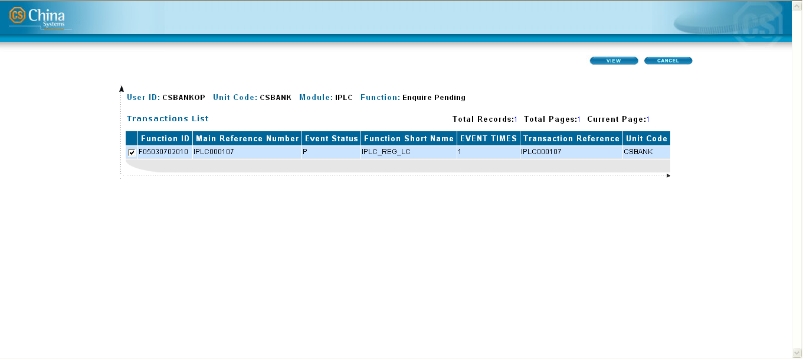{width="4.847916666666666in” height="2.168 |
| 0555555555556in”} |
| ——————————————————————- |
| ——————- |
| |
| [360 Degree Catalog]{.underline} |
| |
| This type of catalog is created for functions which are also used for |
| viewing the history of a transaction. However, unlike the |
| sub-catalog, this type of catalog lists the of history event |
| information from other modules' ledger tables, which are associated |
| with the master transaction. |
| |
| ——————————————————————- |
| —————— |
| {width="4.840277777777778in” height="2.079 |
| 861111111111in”} |
| ——————————————————————- |
| —————— |
| |
| [NOTE:]{.underline} |
| |
| Refer to the EE Utility Reference: Transaction Functions manual for |
| more information on the type of catalogs. |
+———————————————————————–+
{width="4.847916666666666in” height="2.327 |
| 777777777778in”} |
| ——————————————————————- |
| —————— |
| |
| [Sub-catalog]{.underline} |
| |
| This type of catalog is created for functions used for viewing the |
| history of a transaction. A sub-catalog cannot be created if the main |
| catalog – used for displaying the records that are to be processed |
| by the function – is not yet created. |
| |
| Using the sub-catalog, data from the Ledger Table may be accessed and |
| viewed. Unlike the main catalog, which allows access to all the |
| current details of a transaction, the sub-catalog may only allow |
| access to particular and select transaction details. |
| |
| The process of defining a sub-catalog follows the same procedure as |
| the configuration for a main catalog. |
| |
| [NOTE:]{.underline} |
| |
| A sub-catalog cannot be deleted unless the main catalog, from which |
| is associated, is deleted. |
| |
| ——————————————————————- |
| ——————- |
| 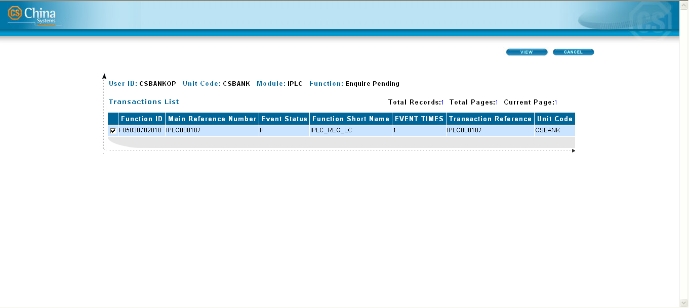{width="4.847916666666666in” height="2.168 |
| 0555555555556in”} |
| ——————————————————————- |
| ——————- |
| |
| [360 Degree Catalog]{.underline} |
| |
| This type of catalog is created for functions which are also used for |
| viewing the history of a transaction. However, unlike the |
| sub-catalog, this type of catalog lists the of history event |
| information from other modules' ledger tables, which are associated |
| with the master transaction. |
| |
| ——————————————————————- |
| —————— |
| {width="4.840277777777778in” height="2.079 |
| 861111111111in”} |
| ——————————————————————- |
| —————— |
| |
| [NOTE:]{.underline} |
| |
| Refer to the EE Utility Reference: Transaction Functions manual for |
| more information on the type of catalogs. |
+———————————————————————–+
{#section-18 .CS-head2}
Defining Catalog Rules
The Catalog rule is created through the Catalog function.
Retrieving Records from a Single Table
The Catalog rule for retrieving records from a single table is defined in the Catalog configuration window.
Configuration
Catalog Information
Specify the following Catalog details.
Figure 7. Catalog Information (Single Table)
Field Field Description
+———————–+———————–+———————–+ | Single | | This indicates the | | | | type of data | | Multi | | retrieval for the | | | | catalog records. | | | | | | | | Mark the Single | | | | option to retrieve | | | | records from a single | | | | table. | +———————–+———————–+———————–+ | | | | +———————–+———————–+———————–+ | 360 Degree Query | | This option is only | | | | enabled when creating | | | | a 360 Degree Query | | | | catalog.. | | | | | | | | This flag is | | | | disabled. | | | | | | | | **[NOTE:]{.underline} | | | | ** | | | | | | | | Refer to the EE | | | | Utility Reference: | | | | Transaction | | | | Functions manual for | | | | more information on | | | | the 360 Degree Query | | | | catalog type. | +———————–+———————–+———————–+ | | | | +———————–+———————–+———————–+ | Page by Page | | Enable this flag if | | | | the query results are | | | | to be displayed in | | | | several browser | | | | pages. Otherwise, all | | | | the query returns are | | | | displayed in a single | | | | page. | +———————–+———————–+———————–+ | | | | +———————–+———————–+———————–+ | Non-Self | | Enable this flag if a | | | | transaction record | | | | may not be released | | | | by the same user that | | | | created the | | | | transaction. | | | | | | | | **[NOTE:]{.underline} | | | | ** | | | | | | | | The system only | | | | checks the value of | | | | this parameter if the | | | | value of the | | | | RELEASE_NOT_BYSELF | | | | system parameter is | | | | FALSE. The | | | | RELEASE_NOT_BYSELF | | | | system parameter | | | | determines, on a | | | | system-level, whether | | | | or not the releaser | | | | of the transaction is | | | | the same as the | | | | creator. If the value | | | | of the | | | | RELEASE_NOT_BYSELF | | | | is FALSE, and the | | | | Non-self flag is | | | | marked, a user may | | | | not release his own | | | | transaction. Only | | | | when both the | | | | RELEASE_NOT_BYSELF | | | | system parameter and | | | | Non-self flag are set | | | | to FALSE (i.e., | | | | Non-self flag is | | | | unmarked) can a user | | | | release his own | | | | transaction. | +———————–+———————–+———————–+ | | | | +———————–+———————–+———————–+ | Order By Module | | This flag is only | | | | used when configuring | | | | a 360 Degree Query | | | | catalog type. | | | | | | | | **[NOTE:]{.underline} | | | | ** | | | | | | | | Refer to the EE | | | | Utility Reference: | | | | Transaction | | | | Functions manual for | | | | more information on | | | | the 360 Degree Query | | | | catalog type. | +———————–+———————–+———————–+ | | | | +———————–+———————–+———————–+
+———————–+———————–+———————–+ | Order By Record | | This flag is only | | | | used when configuring | | | | a 360 Degree Query | | | | catalog type. | | | | | | | | **[NOTE:]{.underline} | | | | ** | | | | | | | | Refer to the EE | | | | Utility Reference: | | | | Transaction | | | | Functions manual for | | | | more information on | | | | the 360 Degree Query | | | | catalog type. | +———————–+———————–+———————–+ | | | | +———————–+———————–+———————–+ | Catalog | | Provide a description | | Description | | for the catalog. | +———————–+———————–+———————–+ | | | | +———————–+———————–+———————–+ | JSP Name | | Indicate the name of | | | | the catalog screen. | | | | The JSP file of the | | | | screen may be | | | | specified using the | | | | browse button that | | | | accompanies this | | | | field. | | | | | | | | The JSP files for | | | | catalogs are saved | | | | and stored on this | | | | path: | | | | EximbillWeb.war\scre | | | | en\CATA. | +———————–+———————–+———————–+
Selection Criteria
Specify the following source details for the catalog criteria.
Figure 7. Selection Criteria (Single Table): Table Option
Figure 7. Selection Criteria (Single Table): View Option
Field Field Description
+———————–+———————–+———————–+ | By Unit Code | | Mark this flag if the | | | | records are to be | | | | made available for | | | | queries by business | | | | units: the records | | | | that are displayed | | | | are those that belong | | | | to the current | | | | business unit. | | | | | | | | This flag is enabled | | | | if the By Global flag | | | | is not selected. | | | | | | | | **[NOTE:]{.underline} | | | | ** | | | | | | | | The system adds | | | | certain selection | | | | criteria into the SQL | | | | script for the | | | | transaction catalog | | | | automatically, | | | | according to the user | | | | type of the current | | | | operator and whether | | | | the master table used | | | | in the multi-catalog | | | | is under EXIMSYS | | | | schema. For a Process | | | | Center operator, if | | | | the master table used | | | | in the multi-catalog | | | | is under EXIMSYS | | | | schema, the system | | | | retrieves all | | | | C_UNIT_CODE | | | | settings that belong | | | | to the current | | | | Processing Center | | | | from the table | | | | EXIMUSER. The system | | | | initially selects the | | | | related records from | | | | SEC_BUSINESS_UNIT, | | | | and then continues to | | | | select from the | | | | corresponding EXIMSYS | | | | tables. If the master | | | | table used in the | | | | multi-catalog is not | | | | under EXIMSYS schema, | | | | the system adds | | | | C_CP_UNIT_CODE and | | | | C_UNIT_CODE as the | | | | selection criteria | | | | into the SQL script; | | | | For a Branch | | | | operator, whether the | | | | option By Unit Code | | | | is selected or not, | | | | the system only adds | | | | C_UNIT_CODE as the | | | | selection criteria | | | | into the SQL script. | +———————–+———————–+———————–+ | | | | +———————–+———————–+———————–+ | By Global | | Mark this flag if the | | | | records are to be | | | | made available for | | | | queries across | | | | business units. If | | | | this flag is enabled, | | | | the value of By | | | | Global in the | | | | generated XML file is | | | | True. The SQL script | | | | for the catalog does | | | | not include the | | | | selection criteria | | | | C_CP_UNIT_CODE and | | | | C_UNIT_CODE. | | | | | | | | If this flag is not | | | | selected, the default | | | | value of the criteria | | | | is By Unit Code. | | | | | | | | This flag becomes | | | | enabled when the By | | | | Unit Code flag is not | | | | selected. | +———————–+———————–+———————–+ | | | | +———————–+———————–+———————–+ | Table | | Mark this option if | | | | the fields that are | | | | to be used for | | | | defining the criteria | | | | are to be retrieved | | | | from a physical | | | | table. | +———————–+———————–+———————–+ | | | | +———————–+———————–+———————–+ | View | | Mark this option if | | | | the fields that are | | | | to be used for | | | | defining the criteria | | | | are fields from a | | | | View setting defined | | | | in the DB Dictionary. | | | | Once this option is | | | | selected, the By Unit | | | | Code option is | | | | disabled. | +———————–+———————–+———————–+ | | | | +———————–+———————–+———————–+ | List | | This section lists | | | | the available schemas | | | | and their respective | | | | tables. Click on a | | | | table to display its | | | | fields. | | | | | | | | Double-click on a | | | | field to use it in | | | | the criteria setting; | | | | alternatively, select | | | | the field and click | | | | on the forward | | | | button. To select all | | | | the fields of a | | | | table, select the | | | | table name and click | | | | on the double-forward | | | | button. | | | | | | | | All the selected | | | | fields are shown on | | | | the list at the | | | | right. | | | | | | | | **[NOTE:]{.underline} | | | | ** | | | | | | | | i. All key fields | | | | of the selected | | | | table must be | | | | included. To do | | | | this, select the | | | | table name and | | | | click on the | | | | forward button. | | | | | | | | ii. Records for | | | | amendment functions | | | | are usually | | | | retrieved from the | | | | Master and Event | | | | Master tables. | | | | | | | | iii. Records for | | | | Release functions | | | | are retrieved from | | | | the Ledger table. | | | | | | | | iv. All byte-type | | | | fields cannot be | | | | selected from this | | | | list (e.g., Notes). | +———————–+———————–+———————–+ | | | | +———————–+———————–+———————–+ | (Selected | | This section contains | | Fields) | | all the fields | | | | selected from the | | | | List section. The | | | | field information is | | | | displayed in the | | | | following columns: | | | | | | | | - Field: This | | | | indicates the | | | | field Id. | | | | | | | | | | | | | | | | - Description: This | | | | pertains to the | | | | field label | | | | displayed as a | | | | column name in | | | | the catalog | | | | screen. Change | | | | the field | | | | description as | | | | required. | | | | | | | | - Hidden: By | | | | default, all the | | | | fields listed in | | | | this section are | | | | shown as columns | | | | in the resulting | | | | catalog screen. | | | | To hide a field | | | | from the catalog | | | | screen, mark the | | | | corresponding | | | | Hidden flag. A | | | | hidden field , | | | | however, may | | | | still be defined | | | | as an export | | | | field through the | | | | resulting | | | | catalog. | | | | | | | | - Edit: This flag | | | | is used for | | | | semi-automatic | | | | batch process | | | | functions. It | | | | controls whether | | | | or not the | | | | transaction value | | | | of the field can | | | | be modified in | | | | the catalog | | | | screen. If it is | | | | marked, the | | | | transaction value | | | | can be changed in | | | | the catalog | | | | screen for one or | | | | more transaction | | | | records. | | | | Otherwise, the | | | | transaction value | | | | cannot be changed | | | | and the fields | | | | under the | | | | corresponding | | | | column is | | | | protected. | | | | | | | | - Config: Mark the | | | | corresponding | | | | flag in this | | | | column to define | | | | the field as a | | | | default export | | | | field in the | | | | resulting | | | | catalog. The | | | | Config flag is | | | | selected by | | | | default for | | | | fields with an | | | | unmarked Hidden | | | | flag. | | | | | | | | **[NOTE:]{.underline} | | | | ** | | | | | | | | i. To remove fields | | | | from this list, | | | | click on the Clear | | | | and Clear All | | | | buttons | | | | accordingly. | | | | | | | | ii. The order of | | | | the fields listed | | | | here becomes the | | | | order of the fields | | | | as they are | | | | displayed in | | | | columns on the | | | | catalog screen. Use | | | | the Up and Down | | | | buttons to | | | | re-arrange the | | | | order of the | | | | fields. | | | | | | | | iii. When a field’s | | | | Edit flag is | | | | marked, | | | | configuration of | | | | other parameter | | | | settings may be | | | | necessary (e.g., | | | | field conversion | | | | settings for | | | | currency fields). | | | | Additionally, the | | | | same field must not | | | | be defined in the | | | | corresponding | | | | transaction | | | | function screen so | | | | as not to overwrite | | | | the changes made in | | | | the catalog screen | | | | upon confirming the | | | | transaction. | | | | | | | | iv. For more | | | | information on the | | | | creation of | | | | semi-automatic | | | | batch process | | | | functions, refer to | | | | the EE Utility | | | | Reference: | | | | Transaction | | | | Functions manual. | | | | | | | | v. Export fields | | | | pertain to catalog | | | | fields that the | | | | end-user has | | | | specifically | | | | defined (selected) | | | | for inclusion in | | | | the display, | | | | printout, or | | | | exported file of a | | | | catalog. This | | | | setting is | | | | configured through | | | | the Catalog Config | | | | button on the | | | | catalog page . | | | | Refer to the Export | | | | Setting function | | | | discussion in the | | | | EE Utility | | | | Reference: | | | | Transaction | | | | Functions manual. | +———————–+———————–+———————–+
Catalog Edit
Define the catalog criteria or conditions.
Figure 7. Catalog Edit (Single Table)
Section Description
+———————–+———————–+———————–+ | Field | | This section lists | | | | all the fields | | | | previously selected | | | | as source fields in | | | | the Selection | | | | Criteria window. | | | | | | | | Double-click on a | | | | field to use this in | | | | defining the catalog | | | | criteria. | | | | | | | | **[NOTE:]{.underline} | | | | ** | | | | | | | | The actual catalog | | | | screen displays the | | | | description defined | | | | for this field (in | | | | the Selection | | | | Criteria window). To | | | | change the | | | | description, | | | | right-click on the | | | | field and specify the | | | | new description in | | | | the Set Field | | | | Description window. | | | | If the field is used | | | | multiple times in the | | | | catalog, multiple | | | | descriptions may then | | | | be assigned to this | | | | same field. If no | | | | description is | | | | defined in the Set | | | | Field Description | | | | window, the system | | | | automatically used | | | | the description from | | | | the Selection | | | | Criteria window. | +———————–+———————–+———————–+ | | | | +———————–+———————–+———————–+ | Operand | | This section lists | | | | all the available SQL | | | | operands that may be | | | | used for value | | | | comparison. These | | | | are: | | | | | | | | - > | | | | | | | | - < | | | | | | | | - = | | | | | | | | - >= | | | | | | | | - <= | | | | | | | | - LIKE | | | | | | | | - OPERAND | | | | | | | | Double-click on an | | | | operand to use this | | | | in defining the | | | | catalog criteria. | | | | | | | | **[NOTE:]{.underline} | | | | ** | | | | | | | | i. Use OPERAND if | | | | the actual operand | | | | to be used in | | | | defining the | | | | condition is to be | | | | specified by the | | | | user during | | | | transaction | | | | processing. | | | | | | | | ii. Use the Like | | | | operand if there is | | | | no exact value | | | | (e.g., if the value | | | | ‘test’ is | | | | specified, the | | | | records test1, | | | | test2, and test3 - | | | | which includes the | | | | value ‘test’ - may | | | | be selected in the | | | | catalog). | +———————–+———————–+———————–+ | | | | +———————–+———————–+———————–+ | Relation | | This section lists | | | | all the available | | | | relational operators | | | | that are used to pair | | | | or combine different | | | | conditions. These | | | | are: | | | | | | | | - AND | | | | | | | | | | | | | | | | - OR | | | | | | | | - ORDER BY | | | | | | | | - RELATION | | | | | | | | Double-click on a | | | | relational operator | | | | to use this in | | | | defining the catalog | | | | criteria. | | | | | | | | **[NOTE:]{.underline} | | | | ** | | | | | | | | i. Use ORDER BY to | | | | determine how | | | | records are to be | | | | sorted and | | | | displayed in the | | | | catalog screen. | | | | | | | | ii. Use RELATION if | | | | the actual | | | | relational operator | | | | to be used in | | | | defining the | | | | condition is to be | | | | specified by the | | | | user during | | | | transaction | | | | processing (e.g. | | | | AND, OR). | +———————–+———————–+———————–+ | | | | +———————–+———————–+———————–+
+———————–+———————–+———————–+ | Value | | This section lists | | | | all available system | | | | variables as well as | | | | the following | | | | operators: | | | | | | | | - '’ | | | | | | | | - VALUE | | | | | | | | Double-click on an | | | | item to use this in | | | | defining the catalog | | | | criteria. | | | | | | | | **[NOTE:]{.underline} | | | | ** | | | | | | | | i. The single | | | | quotes are used to | | | | enclose a selected | | | | item. A field | | | | enclosed in these | | | | single quotes | | | | denotes that the | | | | actual field value | | | | is to be specified | | | | by the user during | | | | transaction | | | | processing. | | | | | | | | ii. Use VALUE | | | | enclosed in single | | | | quotes if the | | | | actual value to be | | | | used in defining | | | | the condition is to | | | | be specified by the | | | | user during | | | | transaction | | | | processing. Using | | | | VALUE without | | | | enclosing it in | | | | single quotes | | | | causes system | | | | errors. | | | | | | | | iii. The system | | | | variables listed in | | | | Value are system | | | | fields. The system | | | | variables listed in | | | | the Field Value, | | | | however, are | | | | system-defined and | | | | which are | | | | automatically | | | | updated at runtime. | +———————–+———————–+———————–+ | | | | +———————–+———————–+———————–+ | Field Value | | This section lists | | | | all available system | | | | variables. | | | | | | | | Double-click on a | | | | system variable to | | | | use this in defining | | | | the catalog criteria. | | | | | | | | **[NOTE:]{.underline} | | | | ** | | | | | | | | The system variables | | | | listed in Value are | | | | system fields; The | | | | system variables | | | | listed in the Field | | | | Value, however, are | | | | system-defined and | | | | which are | | | | automatically updated | | | | at runtime. | +———————–+———————–+———————–+ | | | | +———————–+———————–+———————–+ | (Condition) | | This section is used | | | | for defining the | | | | catalog criteria. | +———————–+———————–+———————–+
 {width="0.41597222222222224in”
height="0.41597222222222224in”}WARNING! The system variables are
generated by the system at runtime. In the SQL statements that use
system variables, the system assigns the actual values of these variable
names before the query is executed on the database.
{width="0.41597222222222224in”
height="0.41597222222222224in”}WARNING! The system variables are
generated by the system at runtime. In the SQL statements that use
system variables, the system assigns the actual values of these variable
names before the query is executed on the database.
For example:
OPERAND must be changed to >=
SYS_BUSI_DATE must be changed to an actual date such as 2013/03/30.
Procedure
To create a main catalog rule using a single table:
Do the following . . .
+———————–+———————–+———————–+ | 1. Run the Catalog | | {width="3.5in” | | Transaction | | height="1.95763888888 | | Function group. | | 8889in”} | +———————–+———————–+———————–+ | | | | +———————–+———————–+———————–+ | 2. The Catalog | | {width="3.5in” | | displayed. | | height="1.95694444444 | | | | 44444in”} | | Select the module for | | | | which the Catalog | | | | rule is being | | | | created. | | | | | | | | If the Catalog rule | | | | is to be made | | | | available across | | | | modules, select | | | | System instead. | | | +———————–+———————–+———————–+ | | | | +———————–+———————–+———————–+ | 3. Right-click on | | {width="3.5in” | | section. Select the | | height="1.95763888888 | | Add option from the | | 8889in”} | | popup menu. | | | +———————–+———————–+———————–+ | | | | +———————–+———————–+———————–+ | 4. The Rule Name | | {width="3.5in” | | displayed. | | height="3.65555555555 | | | | 55554in”} | | Specify the name for | | | | the Catalog rule and | | | | click on the Save | | | | button. | | | +———————–+———————–+———————–+ | | | | +———————–+———————–+———————–+ | 5. The Catalog rule | | {width="3.5in” | | displayed in the | | height="1.95694444444 | | index of catalog | | 44444in”} | | rules on the Screen | | | | window. | | | | | | | | Click on the newly | | | | defined Catalog rule | | | | name then on the | | | | Domain to enable the | | | | Detail tab. | | | +———————–+———————–+———————–+ | | | | +———————–+———————–+———————–+ | 6. The Detail tab | | {width="3.5in” | | sub-tabs: Main | | height="1.95694444444 | | Catalog, Sub | | 44444in”} | | Catalog, and 360 | | | | Degree Query. | | | | | | | | In the Main Catalog | | | | sub-tab, right-click | | | | on the top section. | | | | Select the Add option | | | | from the popup menu. | | | +———————–+———————–+———————–+ | | | | +———————–+———————–+———————–+ | 7. The Catalog | | {width="3.5in” | | window is | | height="1.53958333333 | | displayed. The | | 33333in”} | | Catalog Id is | | | | reflected on this | | | | window. | | | | | | | | Specify the required | | | | information. Make | | | | sure that the Single | | | | option is selected. | | | | | | | | Click on the forward | | | | button. | | | +———————–+———————–+———————–+ | | | | +———————–+———————–+———————–+ | 8. The Selection | | {width="3.5in” | | displayed. | | height="2.39305555555 | | | | 55557in”} | | Define the required | | | | source information, | | | | and click on the | | | | forward button. | | | | | | | | **[NOTE:]{.underline} | | | | ** | | | | | | | | Highlight the | | | | relevant table and | | | | click on the | | | | selection button to | | | | retrieve all the key | | | | fields for that table | | | | that are to be | | | | included in the | | | | catalog criteria. | | | +———————–+———————–+———————–+ | | | | +———————–+———————–+———————–+ | 9. The Catalog Edit | | {width="3.5in” | | displayed. | | height="2.39305555555 | | | | 55557in”} | | Define the catalog | | | | criteria. | | | | | | | | Click on the Save | | | | button to store the | | | | new Catalog rule | | | | settings. | | | +———————–+———————–+———————–+ | | | | +———————–+———————–+———————–+ | 10. The details of | | {width="3.5in” | | rule are displayed | | height="1.95694444444 | | in the Main Catalog | | 44444in”} | | tab of the Catalog | | | | function window. | | | | | | | | **[NOTE:]{.underline} | | | | ** | | | | | | | | To edit the Catalog | | | | rule, double-click on | | | | the Catalog Id or use | | | | the Edit button on | | | | the toolbar. | | | +———————–+———————–+———————–+ | | | | +———————–+———————–+———————–+ | [XML | | {width="3.5in” | | ne} | | height="1.96041666666 | | | | 66667in”} | | Run the XML Generator | | | | function and generate | | | | the XML files for the | | | | Catalog parameter. | | | | | | | | Make sure to select | | | | the Catalog rule from | | | | the XML Generator – | | | | Catalog window. | | | +———————–+———————–+———————–+ | | | | +———————–+———————–+———————–+ | The | | {width="3.5in” | | ml | | height="1.80902777777 | | file is generated on | | 77777in”} | | this path: | | | | | | | | [Parameter | | | | Drive\[Bank | | | | Group]\[Country]\ | | | | \WEB\CATA | | | | | | | | This file contains | | | | the defined | | | | parameters and SQL | | | | statements of the | | | | catalog. | | | +———————–+———————–+———————–+
Retrieving Records from Multiple Tables
The Catalog rule for retrieving records from multiple tables is defined in the Catalog configuration window.
Configuration
Catalog Information
Specify the following Catalog details.

Figure 7. Catalog Window (Multi Table): Catalog Information
Field Field Description
+———————–+———————–+———————–+ | Single | | This indicates the | | | | type of data | | Multi | | retrieval for the | | | | catalog records. | | | | | | | | Mark the Multi option | | | | to retrieve records | | | | from multiple tables. | +———————–+———————–+———————–+ | | | | +———————–+———————–+———————–+ | 360 Degree Query | | This option is only | | | | enabled when creating | | | | a 360 Degree Query | | | | catalog. | | | | | | | | **[NOTE:]{.underline} | | | | ** | | | | | | | | Refer to the EE | | | | Utility Reference: | | | | Transaction | | | | Functions manual for | | | | more information on | | | | the 360 Degree Query | | | | catalog type. | +———————–+———————–+———————–+ | | | | +———————–+———————–+———————–+ | Page by Page | | Enable this flag if | | | | the query results are | | | | to be displayed in | | | | several browser | | | | pages. Otherwise, all | | | | the query returns are | | | | displayed in a single | | | | page. | +———————–+———————–+———————–+ | | | | +———————–+———————–+———————–+ | Non-Self | | Enable this flag if a | | | | transaction record | | | | may not be released | | | | by the same user that | | | | created the | | | | transaction. | +———————–+———————–+———————–+ | | | | +———————–+———————–+———————–+ | Order By Module | | This flag is only | | | | used when configuring | | | | a 360 Degree Query | | | | catalog type. | | | | | | | | **[NOTE:]{.underline} | | | | ** | | | | | | | | Refer to the EE | | | | Utility Reference: | | | | Transaction | | | | Functions manual for | | | | more information on | | | | the 360 Degree Query | | | | catalog type. | +———————–+———————–+———————–+ | | | | +———————–+———————–+———————–+ | Order By Record | | This flag is only | | | | used when configuring | | | | a 360 Degree Query | | | | catalog type. | | | | | | | | **[NOTE:]{.underline} | | | | ** | | | | | | | | Refer to the EE | | | | Utility Reference: | | | | Transaction | | | | Functions manual for | | | | more information on | | | | the 360 Degree Query | | | | catalog type. | +———————–+———————–+———————–+ | | | | +———————–+———————–+———————–+ | By Unit Code | | This field is | | | | displayed if the | | | | Multi option is | | | | selected. | | | | | | | | Mark this flag if the | | | | records are to be | | | | made available for | | | | queries by business | | | | units: the records | | | | that are displayed | | | | are those that belong | | | | to the current | | | | business unit. | | | | | | | | **[NOTE:]{.underline} | | | | ** | | | | | | | | The system adds | | | | certain selection | | | | criteria into the SQL | | | | script for the | | | | transaction catalog | | | | automatically, | | | | according to the user | | | | type of the current | | | | operator and whether | | | | the master table used | | | | in the multi-catalog | | | | is under EXIMSYS | | | | schema. For a Process | | | | Center operator, if | | | | the master table used | | | | in the multi-catalog | | | | is under EXIMSYS | | | | schema, the system | | | | retrieves all | | | | C_UNIT_CODE | | | | settings that belong | | | | to the current | | | | Processing Center | | | | from the table | | | | EXIMUSER. The system | | | | initially selects the | | | | related records from | | | | SEC_BUSINESS_UNIT, | | | | and then continues to | | | | select from the | | | | corresponding EXIMSYS | | | | tables. If the master | | | | table used in the | | | | multi-catalog is not | | | | under EXIMSYS schema, | | | | the system adds | | | | C_CP_UNIT_CODE and | | | | C_UNIT_CODE as the | | | | selection criteria | | | | into the SQL script; | | | | For a Branch | | | | operator, whether the | | | | option By Unit Code | | | | is selected or not, | | | | the system only adds | | | | C_UNIT_CODE as the | | | | selection criteria | | | | into the SQL script. | +———————–+———————–+———————–+ | | | | +———————–+———————–+———————–+
+———————–+———————–+———————–+ | By Global | | This field is | | | | displayed if the | | | | Multi option is | | | | selected. | | | | | | | | Mark this flag if the | | | | records are to be | | | | made available for | | | | queries across | | | | business units. If | | | | this flag is enabled, | | | | the value of By | | | | Global in the | | | | generated XML file is | | | | True. The SQL script | | | | for the catalog does | | | | not include the | | | | selection criteria | | | | C_CP_UNIT_CODE and | | | | C_UNIT_CODE. | | | | | | | | If this flag is not | | | | selected, the default | | | | value of the criteria | | | | is By Unit Code. | +———————–+———————–+———————–+ | | | | +———————–+———————–+———————–+ | Catalog | | Provide a description | | Description | | for the catalog. | +———————–+———————–+———————–+ | | | | +———————–+———————–+———————–+ | JSP Name | | Indicate the name of | | | | the catalog screen. | | | | The JSP file of the | | | | screen may be | | | | specified using the | | | | browse button that | | | | accompanies this | | | | field. | | | | | | | | The JSP files for | | | | catalogs are saved | | | | and stored in this | | | | path: | | | | EximbillWeb.war\scre | | | | en\CATA. | +———————–+———————–+———————–+
{width="0.33611111111111114in”
height="0.33611111111111114in”}NOTE: Multi catalog supports change in
Business unit for all branches.
Catalog Criteria
Define the catalog criteria or conditions. This involves these types of settings: FROM, SELECT, and WHERE. These combined settings make up the SQL condition to be executed by the system to create the catalog criteria.
FROM Setting:
This pertains to the schemas and tables from which the fields to be used for the catalog criteria are selected.
Figure 7. Catalog Window (Multi Table): From Setting
Section Description
+———————–+———————–+———————–+ | Select SQL | | This pertains to the | | | | type of information | | | | to be defined. Select | | | | the FROM option. | +———————–+———————–+———————–+ | | | | +———————–+———————–+———————–+ | Master Table | | This field lists all | | | | the selected tables | | | | in this format: | | | | [Schema | | | | Name].[Table | | | | Name]. | +———————–+———————–+———————–+ | | | | +———————–+———————–+———————–+ | (Table and Schema | | This section lists | | List) | | the available schemas | | | | and their respective | | | | tables. | | | | | | | | Double-click on a | | | | table to use it for | | | | the catalog criteria; | | | | alternatively, select | | | | it and click on the | | | | forward button. To | | | | use all the tables of | | | | the schema, select | | | | the schema name and | | | | click on the | | | | double-forward | | | | button. | | | | | | | | All the selected | | | | tables are shown on | | | | the list at the right | | | | as well as listed in | | | | the Master Table | | | | field. | +———————–+———————–+———————–+ | | | | +———————–+———————–+———————–+
+———————–+———————–+———————–+ | (Selected | | This section contains | | Tables) | | all the tables | | | | selected for the | | | | catalog criteria. | | | | | | | | To change the type of | | | | the schema, select | | | | the relevant option | | | | from the | | | | corresponding cell in | | | | the Type column: | | | | | | | | - Use the own | | | | schema - Select | | | | this option if | | | | the values of the | | | | fields from the | | | | selected table | | | | are to be | | | | retrieved from | | | | the schema of the | | | | current domain | | | | only | | | | | | | | - Use the selected | | | | schema – Select | | | | this option if | | | | the values of the | | | | fields from the | | | | selected table | | | | are to be | | | | retrieved from | | | | the selected | | | | schema. | | | | | | | | This section also | | | | displays the table | | | | nicknames. | +———————–+———————–+———————–+ | | | | +———————–+———————–+———————–+ | SQL | | This section displays | | | | the resulting SQL | | | | statement from the | | | | defined setting. As | | | | only the FROM setting | | | | has been defined, | | | | this SQL statement is | | | | still incomplete. | +———————–+———————–+———————–+
SELECT Setting:
This pertains to the fields that are to be used for the catalog criteria.
[ ]{.underline}
Figure 7. Catalog Edit Window for Multi Table: Select Setting
Section Description
+———————–+———————–+———————–+ | Select SQL | | This pertains to the | | | | type of information | | | | to be defined. Select | | | | the SELECT option. | +———————–+———————–+———————–+ | | | | +———————–+———————–+———————–+ | (Table and Field | | This section lists | | List) | | all the tables | | | | previously selected | | | | as source tables. | | | | Double-click on a | | | | table to display its | | | | fields. | | | | | | | | Double-click on a | | | | table to use it for | | | | the catalog criteria; | | | | alternatively, select | | | | it and click on the | | | | forward button to | | | | automatically include | | | | the key fields of the | | | | table for the catalog | | | | criteria. To use all | | | | the tables of the | | | | schema, select the | | | | schema name and click | | | | on the double-forward | | | | button. All the | | | | selected fields are | | | | shown on the list at | | | | the right. | | | | | | | | **[NOTE:]{.underline} | | | | ** | | | | | | | | All key fields of the | | | | selected table must | | | | be included. To do | | | | this, select the | | | | table name and click | | | | on the forward | | | | button. | +———————–+———————–+———————–+ | | | | +———————–+———————–+———————–+ | (Selected | | This section contains | | Fields) | | all the fields | | | | selected from the | | | | table and field list | | | | section. | | | | | | | | By default, all the | | | | fields listed here | | | | are shown as columns | | | | in the resulting | | | | catalog screen. To | | | | hide a field from the | | | | catalog screen, mark | | | | the corresponding | | | | Hidden flag. To edit | | | | the field label that | | | | is to be displayed as | | | | a column name in the | | | | catalog screen, | | | | double-click on the | | | | corresponding cell in | | | | the Field Description | | | | column and rename the | | | | field label. | | | | | | | | The Edit flag is used | | | | for semi-automatic | | | | batch process | | | | functions. It | | | | controls whether or | | | | not the transaction | | | | value of the field | | | | can be modified in | | | | the catalog screen. | | | | If it is marked, the | | | | transaction value can | | | | be changed in the | | | | catalog screen for | | | | one or more | | | | transaction records. | | | | Otherwise, the | | | | transaction value | | | | cannot be changed and | | | | the fields under the | | | | corresponding column | | | | is protected. For | | | | more information on | | | | the creation of | | | | semi-automatic batch | | | | process functions, | | | | refer to the Batch | | | | Manage function | | | | discussion in the EE | | | | Utility Reference: | | | | Transaction | | | | Functions | | | | documentation. | | | | | | | | **[NOTE:]{.underline} | | | | ** | | | | | | | | i. To remove fields | | | | from this list, | | | | click on the Clear | | | | and Clear All | | | | buttons | | | | accordingly. | | | | | | | | ii. The order of | | | | the fields listed | | | | here becomes the | | | | order of the fields | | | | as they are | | | | displayed in | | | | columns on the | | | | catalog screen. Use | | | | the Up and Down | | | | buttons to | | | | re-arrange the | | | | order of the | | | | fields. | | | | | | | | iii. The Field | | | | Nickname column | | | | displays the Table | | | | Name and the Field | | | | Name. | | | | | | | | iv. When a field’s | | | | Edit flag is | | | | marked, | | | | configuration of | | | | other parameter | | | | settings may be | | | | necessary (e.g., | | | | field conversion | | | | settings for | | | | currency fields). | | | | Additionally, the | | | | same field must not | | | | be defined in the | | | | corresponding | | | | transaction | | | | function screen so | | | | as not to overwrite | | | | the changes made in | | | | the catalog screen | | | | upon confirming the | | | | transaction. | +———————–+———————–+———————–+ | | | | +———————–+———————–+———————–+ | Distinct | | Enable this flag to | | | | prevent the system | | | | from displaying | | | | duplicate records | | | | that result from the | | | | catalog criteria and | | | | for the system to | | | | retrieve unique | | | | values of a field | | | | from the database. | | | | | | | | **[NOTE:]{.underline} | | | | ** | | | | | | | | It is recommended to | | | | mark this option | | | | especially when there | | | | is only one display | | | | field in the select | | | | statement. | +———————–+———————–+———————–+ | | | | +———————–+———————–+———————–+ | SQL | | This section displays | | | | the resulting SQL | | | | statement from the | | | | defined setting. As | | | | only the FROM and | | | | SELECT settings have | | | | been defined, this | | | | SQL statement is | | | | still incomplete. | +———————–+———————–+———————–+
{width="0.33611111111111114in”
height="0.33611111111111114in”}NOTE: In order to optimize the data
retrieval in multi-table catalog settings, two types of indexes may be
created. One is for the fields to be displayed in the catalog, and the
other for the fields to be used in the query condition. If the condition
fields are also the primary key fields, the system automatically creates
the index fields and it is not required to manually create the index. In
this case, the condition fields also serve as the primary keys.
WHERE Setting:
This pertains to the conditions to be used for the Catalog rule.
[ ]{.underline}
Figure 7. Catalog Window (Multi Table): Where Setting
Section Description
+———————–+———————–+———————–+ | Select SQL | | This pertains to the | | | | type of information | | | | to be defined. Select | | | | the WHERE option. | +———————–+———————–+———————–+ | | | | +———————–+———————–+———————–+ | Field | | This section lists | | | | all the fields – and | | | | their corresponding | | | | tables – previously | | | | selected as source | | | | fields. | | | | | | | | Double-click on a | | | | field to use this in | | | | defining the catalog | | | | criteria. | | | | | | | | **[NOTE:]{.underline} | | | | ** | | | | | | | | The actual catalog | | | | screen displays the | | | | description defined | | | | for this field (in | | | | the Selection | | | | Criteria window). To | | | | change the | | | | description, | | | | right-click on the | | | | field and specify the | | | | new description in | | | | the Set Field | | | | Description window. | | | | If the field is used | | | | multiple times in the | | | | catalog, multiple | | | | descriptions may then | | | | be assigned to this | | | | same field. If no | | | | description is | | | | defined in the Set | | | | Field Description | | | | window, the system | | | | automatically used | | | | the description from | | | | the Selection | | | | Criteria window. | +———————–+———————–+———————–+ | | | | +———————–+———————–+———————–+ | Operand | | This section lists | | | | all the available SQL | | | | operands that may be | | | | used for value | | | | comparison. These | | | | are: | | | | | | | | - > | | | | | | | | - < | | | | | | | | - = | | | | | | | | - >= | | | | | | | | - <= | | | | | | | | - LIKE | | | | | | | | - OPERAND | | | | | | | | Double-click on an | | | | operand to use this | | | | in defining the | | | | catalog criteria. | | | | | | | | **[NOTE:]{.underline} | | | | ** | | | | | | | | i. Use OPERAND if | | | | the actual operand | | | | to be used in | | | | defining the | | | | condition is to be | | | | specified by the | | | | user during | | | | transaction | | | | processing. | | | | | | | | ii. Use the Like | | | | operand if there is | | | | no exact value | | | | (e.g., if the value | | | | ‘test’ is | | | | specified, the | | | | records test1, | | | | test2, and test3 - | | | | which include the | | | | value ‘test’ - may | | | | be selected in the | | | | catalog). | +———————–+———————–+———————–+ | | | | +———————–+———————–+———————–+ | Relation | | This section lists | | | | all the available | | | | relational operators | | | | that are used to pair | | | | or combine different | | | | conditions. These | | | | are: | | | | | | | | - AND | | | | | | | | - OR | | | | | | | | - ORDER BY | | | | | | | | - RELATION | | | | | | | | Double-click on a | | | | relational operator | | | | to use this in | | | | defining the catalog | | | | criteria. | | | | | | | | **[NOTE:]{.underline} | | | | ** | | | | | | | | i. Use ORDER BY to | | | | determine how | | | | records are to be | | | | sorted and | | | | displayed in the | | | | catalog screen. | | | | | | | | ii. Use RELATION if | | | | the actual | | | | relational operator | | | | to be used in | | | | defining the | | | | condition is to be | | | | specified by the | | | | user during | | | | transaction | | | | processing (e.g. | | | | AND,OR). | +———————–+———————–+———————–+ | | | | +———————–+———————–+———————–+
+———————–+———————–+———————–+ | Value | | This section lists | | | | all available system | | | | variables as well as | | | | the following | | | | operators: | | | | | | | | - '’ | | | | | | | | - VALUE | | | | | | | | Double-click on an | | | | item to use this in | | | | defining the catalog | | | | criteria. | | | | | | | | **[NOTE:]{.underline} | | | | ** | | | | | | | | i. The single | | | | quotes are used to | | | | enclose a selected | | | | item. A field | | | | enclosed in these | | | | single quotes | | | | denotes that the | | | | actual field value | | | | is to be specified | | | | by the user during | | | | transaction | | | | processing. | | | | | | | | ii. Use VALUE | | | | enclosed in single | | | | quotes if the | | | | actual value to be | | | | used in defining | | | | the condition is to | | | | be specified by the | | | | user during | | | | transaction | | | | processing. Using | | | | VALUE without | | | | enclosing it in | | | | single quotes would | | | | cause system error. | | | | | | | | iii. The system | | | | variables listed in | | | | Value are system | | | | fields; The system | | | | variables listed in | | | | the Field Value, | | | | however, are | | | | system-defined and | | | | which are | | | | automatically | | | | updated at runtime. | +———————–+———————–+———————–+ | | | | +———————–+———————–+———————–+ | Field Value | | This section lists | | | | all available system | | | | variables. | | | | | | | | Double-click on a | | | | system variable to | | | | use this in defining | | | | the catalog criteria. | | | | | | | | **[NOTE:]{.underline} | | | | ** | | | | | | | | The system variables | | | | listed in Value are | | | | system fields; The | | | | system variables | | | | listed in the Field | | | | Value, however, are | | | | system-defined and | | | | which are | | | | automatically updated | | | | at runtime. | +———————–+———————–+———————–+ | | | | +———————–+———————–+———————–+ | (Condition) | | This section is used | | | | for defining the | | | | catalog criteria. | +———————–+———————–+———————–+ | | | | +———————–+———————–+———————–+ | SQL | | This section displays | | | | the resulting SQL | | | | statement from the | | | | defined setting. As | | | | the FROM, SELECT, and | | | | WHERE settings have | | | | been defined, this | | | | SQL statement is now | | | | complete. | +———————–+———————–+———————–+
{width="0.33611111111111114in”
height="0.33611111111111114in”}NOTE: To display the proper amount format
for multi catalog, the Amount Format settings must be configured and the
catalog or sub-catalog must have both CCY and AMT fields that belong to
the same table.
{width="0.41597222222222224in”
height="0.41597222222222224in”}WARNING!
The system variables are generated by the system at runtime. In the SQL statements that use system variables, the system assigns the actual values of these variable names before the query is executed on the database.
For example:
OPERAND must be changed to >=
SYS_BUSI_DATE must be changed to an actual date such as 2013/03/30.
Procedure
To create a main catalog rule using multiple tables:
Do the following . . .
+———————–+———————–+———————–+ | 1. Run the Catalog | | {width="3.5in” | | Transaction | | height="1.80902777777 | | Function group. | | 77777in”} | +———————–+———————–+———————–+ | | | | +———————–+———————–+———————–+ | 2. The Catalog | | {width="3.5in” | | displayed. | | height="1.80902777777 | | | | 77777in”} | | Select the module for | | | | which the Catalog | | | | rule is being | | | | created. | | | | | | | | If the Catalog rule | | | | is to be made | | | | available across | | | | modules, select | | | | System instead. | | | +———————–+———————–+———————–+ | | | | +———————–+———————–+———————–+ | 3. Right-click on | | {width="3.5in” | | section. Select the | | height="1.80902777777 | | Add option from the | | 77777in”} | | popup menu. | | | +———————–+———————–+———————–+ | | | | +———————–+———————–+———————–+ | 4. The Rule Name | | {width="3.2336417 | | displayed. | | 322834645in” | | | | height="3.37735892388 | | Specify the name for | | 45143in”} | | the Catalog rule and | | | | click on the Save | | | | button. | | | +———————–+———————–+———————–+ | | | | +———————–+———————–+———————–+ | 5. The Catalog rule | | {width="3.5in” | | displayed in the | | height="2.06111111111 | | index of catalog | | 1111in”} | | rules on the Screen | | | | window. | | | | | | | | Click on the newly | | | | created Catalog rule | | | | then on the relevant | | | | Domain to enable the | | | | Detail tab. | | | +———————–+———————–+———————–+ | | | | +———————–+———————–+———————–+ | 6. The Detail tab | | {width="3.5in” | | sub-tabs: Main | | height="1.81041666666 | | Catalog, Sub | | 66666in”} | | Catalog, and 360 | | | | Degree Query. | | | | | | | | In the Main Catalog | | | | sub-tab, right-click | | | | on the top section. | | | | Select the Add option | | | | from the popup menu. | | | +———————–+———————–+———————–+ | | | | +———————–+———————–+———————–+ | 7. The Catalog | | {width="3.5in” | | window is | | height="1.53958333333 | | displayed. The | | 33333in”} | | Catalog Id is | | | | reflected on this | | | | window. | | | | | | | | Specify the required | | | | information. Make | | | | sure that the Multi | | | | option is selected. | | | | | | | | Click on the forward | | | | button. | | | +———————–+———————–+———————–+ | | | | +———————–+———————–+———————–+ | 8. Define the FROM | | {width="3.5in” | | Catalog rule. | | height="2.39305555555 | | | | 55557in”} | +———————–+———————–+———————–+ | | | | +———————–+———————–+———————–+ | 9. Define the | | {width="3.5in” | | the Catalog rule. | | height="2.39305555555 | | | | 55557in”} | +———————–+———————–+———————–+ | | | | +———————–+———————–+———————–+ | 10. Define the | | {width="3.5in” | | the catalog rule. | | height="2.39305555555 | | | | 55557in”} | +———————–+———————–+———————–+ | | | | +———————–+———————–+———————–+ | 11. Click Save on | | {width="3.5in” | | configuration | | height="0.27638888888 | | window to save the | | 88889in”} | | new Catalog rule. | | | +———————–+———————–+———————–+ | | | | +———————–+———————–+———————–+ | 12. The details of | | {width="3.5in” | | rule are displayed | | height="1.80902777777 | | on the Main Catalog | | 77777in”} | | tab of the Catalog | | | | function window. | | | | | | | | **[NOTE:]{.underline} | | | | ** | | | | | | | | To edit the Catalog | | | | rule, double-click on | | | | the Catalog Id or | | | | click on the Edit | | | | button on the | | | | toolbar. | | | +———————–+———————–+———————–+ | | | | +———————–+———————–+———————–+ | [XML | | {width="3.5in” | | ne} | | height="1.80902777777 | | | | 77777in”} | | Run the XML Generator | | | | function and generate | | | | the XML files for the | | | | Catalog parameter. | | | | | | | | Make sure to select | | | | the Catalog rule from | | | | the XML Generator – | | | | Catalog window. | | | +———————–+———————–+———————–+ | | | | +———————–+———————–+———————–+ | The | | {width="3.5in” | | ml | | height="1.80902777777 | | file is generated in | | 77777in”} | | this path: | | | | | | | | [Parameter | | | | Drive\[Bank | | | | Group]\[Country]\ | | | | \WEB\CATA | | | | | | | | This file contains | | | | the defined | | | | parameters and SQL | | | | statements of the | | | | catalog. | | | +———————–+———————–+———————–+
{#section-20 .CS-head2}
Attaching Catalog Rules to the Transaction Function
Once the Catalog rule is created, it must then be attached to the relevant transaction function.
Do the following . . .
+———————–+———————–+———————–+ | 1. Run Transaction | | {width="3.5in” | | Transaction | | height="1.80902777777 | | Function group. | | 77777in”} | +———————–+———————–+———————–+ | | | | +———————–+———————–+———————–+ | 2. The Transaction | | {width="3.5in” | | displayed. | | height="1.80902777777 | | | | 77777in”} | | Click on the relevant | | | | module to display the | | | | events. | | | +———————–+———————–+———————–+ | | | | +———————–+———————–+———————–+ | 3. Click on the | | {width="3.5in” | | transaction | | height="1.80902777777 | | function is | | 77777in”} | | located. | | | +———————–+———————–+———————–+ | | | | +———————–+———————–+———————–+ | 4. Double-click on | | {width="3.5in” | | transaction | | height="1.80902777777 | | function to display | | 77777in”} | | the Config | | | | Transaction | | | | Function window. | | | +———————–+———————–+———————–+ | | | | +———————–+———————–+———————–+ | 5. In the | | {width="3.5in” | | the Config | | height="1.80902777777 | | Transaction | | 77777in”} | | Function window, | | | | click on the browse | | | | button that | | | | corresponds to the | | | | Catalog setting. | | | +———————–+———————–+———————–+ | | | | +———————–+———————–+———————–+ | 6. The Select Rule | | {width="3.5in” | | displayed. | | height="1.80902777777 | | | | 77777in”} | | To select a Catalog | | | | rule that is | | | | specifically created | | | | for the related | | | | module, click on the | | | | module name and | | | | select the Catalog | | | | rule. | | | | | | | | To select a Catalog | | | | rule that is created | | | | for all modules, | | | | click on System and | | | | select the Catalog | | | | rule. | | | | | | | | Click on the Save | | | | button. | | | +———————–+———————–+———————–+ | | | | +———————–+———————–+———————–+ | **[NOTE:]{.underline} | | {width="3.5in” | | | | height="1.80902777777 | | The settings for the | | 77777in”} | | selected Catalog rule | | | | may be viewed in the | | | | Detail tab of the | | | | Select Rule Name | | | | window. Click on the | | | | Domain to enable the | | | | Detail tab. | | | +———————–+———————–+———————–+ | | | | +———————–+———————–+———————–+ | 7. A confirmation | | {width="3.5in” | | displayed. Click on | | height="1.02152777777 | | the Yes button to | | 77778in”} | | confirm the | | | | selection. | | | +———————–+———————–+———————–+ | | | | +———————–+———————–+———————–+ | 8. In the Config | | {width="3.5in” | | Function window, | | height="1.80902777777 | | click on the Save | | 77777in”} | | button to save the | | | | setting. | | | | | | | | **[NOTE:]{.underline} | | | | ** | | | | | | | | To remove the current | | | | Catalog rule of the | | | | transaction function | | | | and select another, | | | | click on the C | | | | button. | | | +———————–+———————–+———————–+ | | | | +———————–+———————–+———————–+ | [XML GENERATION: | | {width="3.5in” | | | | height="1.80902777777 | | Generate the XML | | 77777in”} | | files for Function. | | | | | | | | In the Function tab | | | | of the XML Generator | | | | – Function window, | | | | mark the relevant | | | | module and the | | | | Function_root.xml | | | | flag. This adds the | | | | details of the new | | | | function to the | | | | function_root.xml | | | | file that contains a | | | | list of all available | | | | functions. | | | +———————–+———————–+———————–+ | | | | +———————–+———————–+———————–+
+———————–+———————–+———————–+ | The updated | | {width="3.5in” | | file is generated in | | height="1.95416666666 | | the following paths: | | 66666in”} | | | | | | - [Parameter | | | | Drive]\[Bank | | | | Group]\[Countr | | | | y]\AP\FUNC | | | | | | | | - [Parameter | | | | Drive]\[Bank | | | | Group]\[Countr | | | | y]\WEB\FUNC | | | | | | | | This XML file | | | | contains the program | | | | type, Id, name, and | | | | module information of | | | | each transaction | | | | function. | | | | | | | | The updated XML files | | | | for the transaction | | | | function are | | | | generated in the | | | | following paths: | | | | | | | | - [Parameter | | | | Drive]\[Bank | | | | Group]\[Countr | | | | y]\AP\FUNC | | | | | | | | - [Parameter | | | | Drive]\[Bank | | | | Group]\[Countr | | | | y]\WEB\FUNC | | | | | | | | The filename format | | | | is func_[Function | | | | Id].xml. | | | | | | | | This file contains | | | | the details of the | | | | properties and | | | | attachments of the | | | | function. The Catalog | | | | Rule Id, which | | | | determines the | | | | Catalog settings | | | | defined, is included. | | | +———————–+———————–+———————–+
+———————————————————————–+
| Date and Time Filter Settings |
| |
| In filtering Time and Date settings for catalogs, the related fields |
| must be set with the following EE types: |
| |
| - Time |
| |
| - Date |
| |
| - Datetime |
| |
| The following procedures must be performed: |
| |
| 1. Add the required fields, which has the correct EE type settings |
| (i.e., Date, Time, Datetime), into the ledger and master tables |
| of the related module. Perform the reformat process and generate |
| the XML file for table structure. |
| |
| ——————————————————————- |
| ——————- |
| 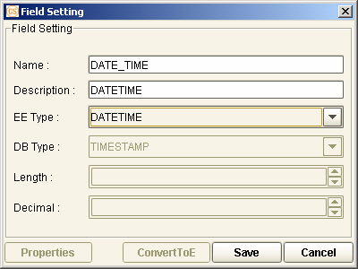{width="4.168055555555555in” height="3.127 |
| 7777777777778in”} |
| ——————————————————————- |
| ——————- |
| |
| 2. The fields must be included in the JSP file of the transaction |
| screen. Generate the XML file for the screen parameter. |
| |
| ——————————————————————- |
| ——————- |
| {width="4.840277777777778in” height="2.415 |
| 9722222222224in”} |
| ——————————————————————- |
| ——————- |
| |
| 3. Configure the catalog settings. Generate the XML file for the |
| catalog parameter. |
| |
| ——————————————————————- |
| —————— |
|  {width="4.847916666666666in” height="2.247 |
| 916666666667in”} |
| ——————————————————————- |
| —————— |
| |
| 4. Run the transaction and specify the values for the Date and Time |
| fields. |
| |
| {width="4.840277777777778in” |
| height="1.9597222222222221in”} |
| |
| 5. The created catalog filters the specified Date and Time. |
| |
| – |
| – |
| |
| [NOTE:]{.underline} |
| |
| i. In a typical working environment, only the Date field is often |
| used in the catalog criteria. The Datetime and Time field settings |
| differ based on the used database types. |
| |
| ii. The time format must be HH:MM:SS. |
| |
| iii. The date format must be DD-MM-YYYY. |
| |
| iv. For the Datetime date format, the date and time are separated |
| by a space. |
| |
| v. Filtering the time field is only supported in transaction |
| catalogs. Security catalogs are not supported. When a time field is |
| added in a catalog, the value of the Data Type for this field in |
| the XML file for thee catalog parameter must be 92. |
| |
| vi. When a Date field is specified in the catalog once the date is |
| selected from the displayed calendar in the Catalog Criteria screen |
| of the EE browser, the format of the date value that is shown is |
| based on the date format that is set in the Change User Profile |
| button. When the Next button is clicked, the format is converted |
| into the standard date format (i.e., YYYY-MM-DD) in order to filter |
| the record in the SQL statement. |
| |
| {width="4.678261154855643in” |
| height="2.005181539807524in”} |
+———————————————————————–+
{width="4.847916666666666in” height="2.247 |
| 916666666667in”} |
| ——————————————————————- |
| —————— |
| |
| 4. Run the transaction and specify the values for the Date and Time |
| fields. |
| |
| {width="4.840277777777778in” |
| height="1.9597222222222221in”} |
| |
| 5. The created catalog filters the specified Date and Time. |
| |
| – |
| – |
| |
| [NOTE:]{.underline} |
| |
| i. In a typical working environment, only the Date field is often |
| used in the catalog criteria. The Datetime and Time field settings |
| differ based on the used database types. |
| |
| ii. The time format must be HH:MM:SS. |
| |
| iii. The date format must be DD-MM-YYYY. |
| |
| iv. For the Datetime date format, the date and time are separated |
| by a space. |
| |
| v. Filtering the time field is only supported in transaction |
| catalogs. Security catalogs are not supported. When a time field is |
| added in a catalog, the value of the Data Type for this field in |
| the XML file for thee catalog parameter must be 92. |
| |
| vi. When a Date field is specified in the catalog once the date is |
| selected from the displayed calendar in the Catalog Criteria screen |
| of the EE browser, the format of the date value that is shown is |
| based on the date format that is set in the Change User Profile |
| button. When the Next button is clicked, the format is converted |
| into the standard date format (i.e., YYYY-MM-DD) in order to filter |
| the record in the SQL statement. |
| |
| {width="4.678261154855643in” |
| height="2.005181539807524in”} |
+———————————————————————–+
{#section-21 .CS-head1}
Attribute
An Attribute rule pertains to a set of attribute settings.
Attributes are business components that regulate the behavior of functions in processing transactions. Unlike the main program (or control component) that provides the purpose of the function, attributes define the actual action to be performed by the function. Each transaction function may have several attributes as a function may perform several actions or steps. A single transaction function, for example, may inquire data, generate a voucher, and post data to the pending table.
{width="0.33611111111111114in”
height="0.33611111111111114in”}NOTE: The settings for the Attribute rule
may come before or after the configuration of the transaction function
settings.
Defining Attribute Rules
The Attribute rule is created in the Attribute function.
An attribute pertains to a business component with specific settings. Business components are packaged Java classes deployed into the Shared Library folder of the EE system. These are called upon at transaction processing.
{width="0.33611111111111114in”
height="0.33611111111111114in”}NOTE:
Rule names may be specified using the following characters:\
- A-Z\
- a-z\
- 0-9\
- Chinese characters\
- Dash (-)\
- Underscore ( _ )
#######
Types of Business Components
The most commonly used business components for creating Attribute rules are as follows.
Business Component Description
Trx Event Add Rec This is used to add event records or rows in the event or event master table.
Trx Event Edit Rec This is used to edit event records in the event or event master table.
Trx Master Add Rec This is used to manage the transaction function that directly stores records into the master table. This is associated with functions with master table transactions.
Trx Master Edit Rec This is used to edit existing records in the Master table. This is associated with functions that edit the record in the Master table.
Attribute Rule Configuration Windows
The settings of an Attribute rule are configured in two windows: Setting Attribute and Set Attribute.
[]{#_Toc18063070 .anchor}Setting Attribute Window
The general details of the Attribute rule, including the selection of each business component, are configured in the Setting Attribute window.
Figure 7. Setting Attribute Window
Field Field Description
+———————–+———————–+———————–+ | Attribute Name | | This indicates the | | | | name of the Attribute | | | | rule. | +———————–+———————–+———————–+ | | | | +———————–+———————–+———————–+ | Description | | Provide a description | | | | for the Attribute | | | | rule. | +———————–+———————–+———————–+ | | | | +———————–+———————–+———————–+ | Screen Name | | Specify the JSP file | | | | for which the | | | | Attribute rule is to | | | | apply. The browse | | | | button that | | | | accompanies this | | | | field may be used to | | | | specify the path to | | | | the JSP file. The | | | | available Screen | | | | rules are those | | | | defined for the | | | | related module and | | | | those specifically | | | | defined for all | | | | modules. | | | | | | | | This setting pertains | | | | to the transaction | | | | function screen. | +———————–+———————–+———————–+ | | | | +———————–+———————–+———————–+ | (Component | | This section lists | | List) | | the available | | | | business components, | | | | for which specific | | | | attribute settings | | | | are defined. | | | | | | | | Double-click on a | | | | business component to | | | | configure its | | | | specific attribute | | | | settings (through the | | | | Set Attribute window | | | | that is then | | | | displayed). | +———————–+———————–+———————–+ | | | | +———————–+———————–+———————–+ | (Attribute | | This section lists | | List) | | all the business | | | | components which | | | | attribute settings | | | | have been defined. | | | | | | | | These attributes are | | | | executed by the | | | | system during | | | | transaction | | | | processing according | | | | to their defined | | | | order. To change the | | | | sequence of these | | | | attributes, select | | | | the relevant | | | | attribute and use the | | | | Up and Down buttons | | | | accordingly. | | | | | | | | **[NOTE:]{.underline} | | | | ** | | | | | | | | To modify an | | | | attribute setting, | | | | select it from the | | | | list and click on the | | | | Edit button on the | | | | toolbar. | +———————–+———————–+———————–+ | | | | +———————–+———————–+———————–+ | Do Check | | Mark this flag to | | | | check the sequence of | | | | the defined | | | | attributes. When this | | | | flag is selected, the | | | | listed attributes | | | | must follow the order | | | | defined in the | | | | AttributeOrder.xml | | | | file, which is found | | | | in the \[EE | | | | Utility]\parameters | | | | directory. | | | | | | | | **[NOTE:]{.underline} | | | | ** | | | | | | | | Use the Up and Down | | | | buttons to manually | | | | arrange the sequence | | | | of the attributes. | +———————–+———————–+———————–+
[]{#_Toc18063071 .anchor}
Set Attribute Window
The attribute settings (e.g., transaction information) that apply to the selected business component are defined in the Set Attribute window.
Figure 7. Set Attribute Window
Field Field Description
+———————–+———————–+———————–+ | Component List | | This indicates the | | | | business component | | | | selected from the | | | | Setting Attribute | | | | window. | +———————–+———————–+———————–+ | | | | +———————–+———————–+———————–+ | Module Name | | This indicates the | | | | module for which the | | | | Attribute rule is | | | | being defined. | +———————–+———————–+———————–+ | | | | +———————–+———————–+———————–+ | Event Name | | This lists all the | | | | events defined for | | | | the module as well as | | | | this option: MASTER. | | | | Select the event in | | | | this module for which | | | | the Attribute rule is | | | | to be used. | | | | | | | | *[NOTE]{.underline} | | | | * | | | | | | | | i. An actual event | | | | name is selected in | | | | this field if the | | | | indicated component | | | | posts information | | | | to or enquires from | | | | an event table or | | | | an event master | | | | table (e.g., Trx | | | | Event Add Rec, Trx | | | | Event Edit Rec). | | | | | | | | ii. The MASTER | | | | event is selected | | | | if the indicated | | | | component posts | | | | information to or | | | | enquires from the | | | | master table (e.g., | | | | Trx Master Add Rec, | | | | Trx Master Edit | | | | Rec). | +———————–+———————–+———————–+ | | | | +———————–+———————–+———————–+ | Schema | | Select from the | | | | dropdown list the | | | | module schema to | | | | which the Attribute | | | | rule is to apply. | | | | | | | | **[NOTE:]{.underline} | | | | ** | | | | | | | | Some components use a | | | | fixed schema (e.g. | | | | Transfer To, GAPI). | +———————–+———————–+———————–+ | | | | +———————–+———————–+———————–+ | Table Name | | Select from the | | | | dropdown list the | | | | table of the selected | | | | schema that is | | | | relevant to this | | | | configuration. | | | | | | | | For an Inquire type | | | | of Attribute rule, | | | | this dropdown list | | | | also includes View | | | | settings (defined in | | | | the DB Dictionary). | | | | | | | | This field is | | | | disabled for such | | | | items that do not | | | | require table | | | | settings (e.g., | | | | Transfer To, GAPI). | | | | It may also be caused | | | | by one of the | | | | following: | | | | | | | | - The Component | | | | Class Name exists | | | | in the | | | | componentlist.xml | | | | file | | | | | | | | | | | | | | | | - When the Schema | | | | is defined as | | | | SECU or SYST | | | | | | | | - When the Module | | | | selected is the | | | | System module | | | | | | | | - When no Schema is | | | | selected | | | | | | | | **[NOTE:]{.underline} | | | | ** | | | | | | | | Any selected View | | | | setting is cleared | | | | when the method | | | | setting is changed | | | | from Inquire to Post. | +———————–+———————–+———————–+ | | | | +———————–+———————–+———————–+ | Trx Reference NO. | | Indicate the field | | | | that pertains to the | | | | transaction reference | | | | number. The dropdown | | | | list contains all the | | | | fields of the | | | | selected JSP file. | | | | | | | | The field usually | | | | selected is | | | | C_MAIN_REF. | +———————–+———————–+———————–+ | | | | +———————–+———————–+———————–+ | Main Reference | | Specify the primary | | NO. | | key of the selected | | | | table. This defaults | | | | to C_MAIN_REF as | | | | the field value. | +———————–+———————–+———————–+ | | | | +———————–+———————–+———————–+ | Use Country’s Own | | Mark this flag to use | | Schema | | a Country’s own | | | | schema for posting or | | | | inquiring values, | | | | regardless of schema | | | | specifications in the | | | | Schema field. | +———————–+———————–+———————–+ | | | | +———————–+———————–+———————–+ | On Once | | This is reserved for | | Transaction | | future use. | +———————–+———————–+———————–+ | | | | +———————–+———————–+———————–+ | Immediately | | Enable this flag to | | Update | | instruct the system | | | | to update the | | | | transaction records | | | | immediately when | | | | either Trx Event Edit | | | | Rec or Trx Master | | | | Edit Rec operation is | | | | carried out. Unless | | | | this flag is marked, | | | | records are only | | | | updated after the | | | | Release process. | +———————–+———————–+———————–+ | | | | +———————–+———————–+———————–+ | Inquire | | Mark this method | | | | option if the | | | | component is to | | | | retrieve records from | | | | the database and | | | | display its details | | | | on the browser. | +———————–+———————–+———————–+ | | | | +———————–+———————–+———————–+ | Post | | Mark this method | | | | option if the | | | | component is to add | | | | or update records in | | | | the database. | +———————–+———————–+———————–+ | | | | +———————–+———————–+———————–+ | Prerequisite | | Mark this flag to run | | | | this component before | | | | the Start of Day | | | | operation. | +———————–+———————–+———————–+ | | | | +———————–+———————–+———————–+ | Allow Print | | Mark this flag to | | | | enable the Print | | | | button when the | | | | generated document is | | | | viewed. | | | | | | | | Marking this flag, | | | | however, is only one | | | | of the required | | | | conditions to be able | | | | to show the Print | | | | button when the | | | | document is viewed. | | | | The other factors are | | | | the settings of the | | | | DISABLE_PRINTBUTTON\ | | | | INQUIRE | | | | and | | | | PENDING_IS_PRINT | | | | security parameters, | | | | and the type of | | | | transaction function | | | | that is being run to | | | | view the document. | | | | | | | | **[NOTE:]{.underline} | | | | ** | | | | | | | | Refer also to the | | | | following [Conditions | | | | for Viewing and | | | | Printing the | | | | Generated | | | | Document](#attribute | | | | cond_forviewingandpri | | | | nting) | | | | section. | +———————–+———————–+———————–+ | | | | +———————–+———————–+———————–+ | Parallel Function | | This flag controls | | | | whether or not the | | | | transaction records | | | | can be accessed by | | | | more than one user in | | | | the relevant | | | | transaction function. | | | | | | | | It becomes available | | | | only when both of the | | | | following conditions | | | | are met: | | | | | | | | - The selected | | | | component in the | | | | Component List | | | | field is Trx | | | | Event Edit Rec, | | | | Trx Event Add | | | | Rec, Trx Master | | | | Edit Rec, or Trx | | | | Master Add Rec; | | | | and | | | | | | | | - The Post option | | | | is selected. | | | | | | | | If this flag is | | | | marked and the | | | | attribute is attached | | | | to a function, the | | | | transaction records | | | | can be accessed by | | | | more than one user | | | | through the relevant | | | | function. The | | | | corresponding table | | | | is not recorded in | | | | the Lock Info XML | | | | file. | | | | | | | | If this flag is not | | | | marked and the | | | | attribute is attached | | | | to a function, the | | | | transaction record is | | | | locked to a user once | | | | it is accessed | | | | through the relevant | | | | function. The | | | | corresponding table | | | | is reflected in the | | | | Lock Info XML file | | | | (i.e., | | | | lock_[Function | | | | Id].xml file in | | | | [Parameter | | | | Drive]:/[Bank | | | | Group]/[Country]/A | | | | P/LOCKINF). | | | | | | | | Refer to the | | | | [Attaching Attribute | | | | Rules to the | | | | Transaction | | | | Function](#attaching- | | | | attribute-rules-to-th | | | | e-transaction-functio | | | | n) | | | | discussion for more | | | | information on | | | | attaching the | | | | attribute to a | | | | function. | +———————–+———————–+———————–+ | | | | +———————–+———————–+———————–+ | Async SWIFT | | This flag controls | | | | whether or not the | | | | system performs | | | | Asynchronous mode of | | | | SWIFT transmission.It | | | | becomes available | | | | only when the | | | | selected component in | | | | the Component List is | | | | Trx Generate Swift. | | | | | | | | If this flag is | | | | marked, the system | | | | performs the | | | | Asynchronous SWIFT | | | | transmission | | | | mode—the system | | | | holds the transaction | | | | data in the Awaiting | | | | status after release. | | | | If the SWIFT | | | | transmission is | | | | successful, the | | | | system must first | | | | receive ACK then | | | | releases the | | | | transaction record in | | | | Master status. | | | | | | | | If this flag is | | | | unmarked, the status | | | | of the transaction is | | | | updated into Master | | | | upon release, when | | | | SWIFT starts to | | | | transmit online or | | | | offline. | +———————–+———————–+———————–+ | | | | +———————–+———————–+———————–+ | Lock Trx Ref | | This flag controls | | | | whether or not a | | | | transaction is locked | | | | based on the | | | | C_TRX_REF field. | | | | This flag can only be | | | | used when all of the | | | | following conditions | | | | are met: | | | | | | | | - The selected | | | | component in the | | | | Component List | | | | field is Trx | | | | Event Edit Rec or | | | | Trx Event Add | | | | Rec; | | | | | | | | - The Post option | | | | is selected; and | | | | | | | | - The Parallel | | | | Function flag is | | | | not marked. | | | | | | | | If this flag is | | | | marked and the | | | | attribute is attached | | | | to a function, the | | | | table type of the | | | | corresponding table | | | | is set to P in the | | | | lock info XML file | | | | (i.e., | | | | lock_[Function | | | | Id].xml file in | | | | [Parameter | | | | Drive]:/[Bank | | | | Group]/[Country]/A | | | | P/LOCKINF). | | | | This means the | | | | transaction records | | | | under the function | | | | are locked to a | | | | single user based on | | | | the C_TRX_REF | | | | field. | | | | | | | | If this flag is not | | | | marked and the | | | | attribute is attached | | | | to a function, the | | | | table type of the | | | | corresponding table | | | | is set to E in the | | | | lock info XML file. | | | | This means the | | | | transaction records | | | | under the function | | | | are locked to a | | | | single user based on | | | | the C_MAIN_REF | | | | field. | | | | | | | | Refer to the | | | | [Attaching Attribute | | | | Rules to the | | | | Transaction | | | | Function](#attaching- | | | | attribute-rules-to-th | | | | e-transaction-functio | | | | n) | | | | discussion for more | | | | information on | | | | attaching the | | | | attribute to a | | | | function. | | | | | | | | [EXAMPLE:]{.underli | | | | ne} | | | | | | | | i. The Lock Trx Ref | | | | flag is marked:\ | | | | An Import Letter of | | | | Credit (LC) record | | | | has a C_MAIN_REF | | | | value of IPLC0001. | | | | This LC record is | | | | amended twice. The | | | | amendment records | | | | have C_TRX_REF | | | | values of | | | | IPLC0001/01 and | | | | IPLC0001/02. If a | | | | user accesses | | | | IPLC0001/01, only | | | | that specific | | | | amendment record is | | | | locked to him. | | | | Other users can | | | | still access | | | | IPLC0001/02. | | | | | | | | ii. The Lock Trx | | | | flag is not | | | | marked:\ | | | | An Import Letter of | | | | Credit (LC) record | | | | has a C_MAIN_REF | | | | value of IPLC0001. | | | | This LC record is | | | | amended twice. The | | | | amendment records | | | | have C_TRX_REF | | | | values of | | | | IPLC0001/01 and | | | | IPLC0001/02. If a | | | | user accesses | | | | IPLC0001/01, both | | | | amendment records | | | | are locked to him. | | | | Other users cannot | | | | access either of | | | | the amendment | | | | records. | +———————–+———————–+———————–+ | []{#attribute_cond_fo | | | | rviewingandprinting | | | | .anchor}Conditions | | | | for Viewing and | | | | Printing the | | | | Generated Document | | | | | | | | The availability of | | | | the Print button when | | | | viewing a generated | | | | document at runtime | | | | depends on the | | | | following factors: | | | | | | | | - The setting of | | | | the Allow Print | | | | flag in the | | | | Attribute | | | | function | | | | | | | | - The setting of | | | | the following | | | | security | | | | parameters: | | | | | | | | - DISABLE_PRIN | | | | TBUTTON_INQUIRE | | | | | | | | - PENDING_IS_ | | | | PRINT | | | | | | | | - The type of | | | | transaction | | | | function that is | | | | being run to view | | | | the document. | | | | | | | | The following tables | | | | summarize the results | | | | of different | | | | scenarios. | | | | | | | | Case 1: | | | | | | | | ——————- | | | | ——————— | | | | ——————— | | | | ——————— | | | | ——————— | | | | ——————— | | | | ——————— | | | | ———— | | | | Parameter Value A | | | | P Function (Add to Pe | | | | nding) AM Functi | | | | on\ | | | | | | | | | | | | | | | | | | | | | | | | (Add to M | | | | aster) | | | | | | | | | | | | | | | | —————– - | | | | ——————— | | | | ———– ——— | | | | ———– ——— | | | | —————– – | | | | ——————— | | | | ——- ——– —- | | | | ———— | | | | Allow Print D | | | | ISABLE_PRINT_BUTTON | | | | _INQUIRE PENDING_ | | | | IS_PRINT Pending | | | | Inquire Pending In | | | | quire Master After Re | | | | lease Master Inqu | | | | ire Master | | | | | | | | Y Y | | | | | | | | Y | | | | Y | | | | N N | | | | | | | | Y N | | | | ——————- | | | | ——————— | | | | ——————— | | | | ——————— | | | | ——————— | | | | ——————— | | | | ——————— | | | | ———— | | | | | | | | Case 2: | | | | | | | | ——————- | | | | ——————— | | | | ——————— | | | | ——————— | | | | ——————— | | | | ——————— | | | | ——————— | | | | ———— | | | | Parameter Value A | | | | P Function (Add to Pe | | | | nding) AM Functi | | | | on\ | | | | | | | | | | | | | | | | | | | | | | | | (Add to M | | | | aster) | | | | | | | | | | | | | | | | —————– - | | | | ——————— | | | | ———– ——— | | | | ———– ——— | | | | —————– – | | | | ——————— | | | | ——- ——– —- | | | | ———— | | | | Allow Print D | | | | ISABLE_PRINT_BUTTON | | | | _INQUIRE PENDING_ | | | | IS_PRINT Pending | | | | Inquire Pending In | | | | quire Master After Re | | | | lease Master Inqu | | | | ire Master | | | | | | | | Y Y | | | | | | | | N | | | | Y | | | | Y Y | | | | | | | | Y Y | | | | ——————- | | | | ——————— | | | | ——————— | | | | ——————— | | | | ——————— | | | | ——————— | | | | ——————— | | | | ———— | | | | | | | | Case 3: | | | | | | | | ——————- | | | | ——————— | | | | ——————— | | | | ——————— | | | | ——————— | | | | ——————— | | | | ——————— | | | | ———— | | | | Parameter Value A | | | | P Function (Add to Pe | | | | nding) AM Functi | | | | on\ | | | | | | | | | | | | | | | | | | | | | | | | (Add to M | | | | aster) | | | | | | | | | | | | | | | | —————– - | | | | ——————— | | | | ———– ——— | | | | ———– ——— | | | | —————– – | | | | ——————— | | | | ——- ——– —- | | | | ———— | | | | Allow Print D | | | | ISABLE_PRINT_BUTTON | | | | _INQUIRE PENDING_ | | | | IS_PRINT Pending | | | | Inquire Pending In | | | | quire Master After Re | | | | lease Master Inqu | | | | ire Master | | | | | | | | Y N | | | | | | | | Y | | | | N | | | | N N | | | | | | | | Y N | | | | ——————- | | | | ——————— | | | | ——————— | | | | ——————— | | | | ——————— | | | | ——————— | | | | ——————— | | | | ———— | | | | | | | | Case 4: | | | | | | | | ——————- | | | | ——————— | | | | ——————— | | | | ——————— | | | | ——————— | | | | ——————— | | | | ——————— | | | | ———— | | | | Parameter Value A | | | | P Function (Add to Pe | | | | nding) AM Functi | | | | on\ | | | | | | | | | | | | | | | | | | | | | | | | (Add to M | | | | aster) | | | | | | | | | | | | | | | | —————– - | | | | ——————— | | | | ———– ——— | | | | ———– ——— | | | | —————– – | | | | ——————— | | | | ——- ——– —- | | | | ———— | | | | Allow Print D | | | | ISABLE_PRINT_BUTTON | | | | _INQUIRE PENDING_ | | | | IS_PRINT Pending | | | | Inquire Pending In | | | | quire Master After Re | | | | lease Master Inqu | | | | ire Master | | | | | | | | Y N | | | | | | | | N | | | | N | | | | N Y | | | | | | | | Y Y | | | | ——————- | | | | ——————— | | | | ——————— | | | | ——————— | | | | ——————— | | | | ——————— | | | | ——————— | | | | ———— | | | | | | | | Case 5: | | | | | | | | ——————- | | | | ——————— | | | | ——————— | | | | ——————— | | | | ——————— | | | | ——————— | | | | ——————— | | | | ———— | | | | Parameter Value A | | | | P Function (Add to Pe | | | | nding) AM Functi | | | | on\ | | | | | | | | | | | | | | | | | | | | | | | | (Add to M | | | | aster) | | | | | | | | | | | | | | | | —————– - | | | | ——————— | | | | ———– ——— | | | | ———– ——— | | | | —————– – | | | | ——————— | | | | ——- ——– —- | | | | ———— | | | | Allow Print D | | | | ISABLE_PRINT_BUTTON | | | | _INQUIRE PENDING_ | | | | IS_PRINT Pending | | | | Inquire Pending In | | | | quire Master After Re | | | | lease Master Inqu | | | | ire Master | | | | | | | | N Y | | | | | | | | Y | | | | N | | | | N N | | | | | | | | N N | | | | ——————- | | | | ——————— | | | | ——————— | | | | ——————— | | | | ——————— | | | | ——————— | | | | ——————— | | | | ———— | | | | | | | | Case 6: | | | | | | | | ——————- | | | | ——————— | | | | ——————— | | | | ——————— | | | | ——————— | | | | ——————— | | | | ——————— | | | | ———— | | | | Parameter Value A | | | | P Function (Add to Pe | | | | nding) AM Functi | | | | on\ | | | | | | | | | | | | | | | | | | | | | | | | (Add to M | | | | aster) | | | | | | | | | | | | | | | | —————– - | | | | ——————— | | | | ———– ——— | | | | ———– ——— | | | | —————– – | | | | ——————— | | | | ——- ——– —- | | | | ———— | | | | Allow Print D | | | | ISABLE_PRINT_BUTTON | | | | _INQUIRE PENDING_ | | | | IS_PRINT Pending | | | | Inquire Pending In | | | | quire Master After Re | | | | lease Master Inqu | | | | ire Master | | | | | | | | N Y | | | | | | | | N | | | | N | | | | N N | | | | | | | | N N | | | | ——————- | | | | ——————— | | | | ——————— | | | | ——————— | | | | ——————— | | | | ——————— | | | | ——————— | | | | ———— | | | | | | | | Case 7: | | | | | | | | ——————- | | | | ——————— | | | | ——————— | | | | ——————— | | | | ——————— | | | | ——————— | | | | ——————— | | | | ———— | | | | Parameter Value A | | | | P Function (Add to Pe | | | | nding) AM Functi | | | | on\ | | | | | | | | | | | | | | | | | | | | | | | | (Add to M | | | | aster) | | | | | | | | | | | | | | | | —————– - | | | | ——————— | | | | ———– ——— | | | | ———– ——— | | | | —————– – | | | | ——————— | | | | ——- ——– —- | | | | ———— | | | | Allow Print D | | | | ISABLE_PRINT_BUTTON | | | | _INQUIRE PENDING_ | | | | IS_PRINT Pending | | | | Inquire Pending In | | | | quire Master After Re | | | | lease Master Inqu | | | | ire Master | | | | | | | | N N | | | | | | | | Y | | | | N | | | | N N | | | | | | | | N N | | | | ——————- | | | | ——————— | | | | ——————— | | | | ——————— | | | | ——————— | | | | ——————— | | | | ——————— | | | | ———— | | | | | | | | Case 8: | | | | | | | | ——————- | | | | ——————— | | | | ——————— | | | | ——————— | | | | ——————— | | | | ——————— | | | | ——————— | | | | ———— | | | | Parameter Value A | | | | P Function (Add to Pe | | | | nding) AM Functi | | | | on\ | | | | | | | | | | | | | | | | | | | | | | | | (Add to M | | | | aster) | | | | | | | | | | | | | | | | —————– - | | | | ——————— | | | | ———– ——— | | | | ———– ——— | | | | —————– – | | | | ——————— | | | | ——- ——– —- | | | | ———— | | | | Allow Print D | | | | ISABLE_PRINT_BUTTON | | | | _INQUIRE PENDING_ | | | | IS_PRINT Pending | | | | Inquire Pending In | | | | quire Master After Re | | | | lease Master Inqu | | | | ire Master | | | | | | | | N N | | | | | | | | N | | | | N | | | | N N | | | | | | | | N N | | | | ——————- | | | | ——————— | | | | ——————— | | | | ——————— | | | | ——————— | | | | ——————— | | | | ——————— | | | | ———— | | | +———————–+———————–+———————–+
#######
Attribute Rule Configuration Procedure
To create an Attribute rule:
Do the following . . .
+———————–+———————–+———————–+ | 1. Run the | | {width="3.5in” | | from the | | height="2.11458333333 | | Transaction | | 33335in”} | | Function group. | | | +———————–+———————–+———————–+ | | | | +———————–+———————–+———————–+ | 2. The Attribute | | {width="3.5in” | | displayed. | | height="2.11458333333 | | | | 33335in”} | | Select the module for | | | | which the Attribute | | | | rule is being | | | | created. | | | | | | | | If the Attribute rule | | | | is to be made | | | | available across | | | | modules, select | | | | System instead. | | | +———————–+———————–+———————–+ | | | | +———————–+———————–+———————–+ | 3. Right-click on | | {width="3.5in” | | section. Select the | | height="2.11458333333 | | Add option from the | | 33335in”} | | popup menu. | | | +———————–+———————–+———————–+ | | | | +———————–+———————–+———————–+ | 4. The Rule Name | | {width="3.5in” | | displayed. | | height="2.11458333333 | | | | 33335in”} | | Specify the name for | | | | the Attribute rule | | | | and click on the Save | | | | button. | | | +———————–+———————–+———————–+ | | | | +———————–+———————–+———————–+ | 5. The Attribute | | {width="3.5in” | | is displayed in the | | height="2.11458333333 | | index of catalog | | 33335in”} | | rules on the Screen | | | | window. | | | | | | | | Click on the newly | | | | defined Attribute | | | | rule name to enable | | | | the Detail tab. | | | +———————–+———————–+———————–+ | | | | +———————–+———————–+———————–+ | 6. In the Detail | | {width="3.5in” | | the top section. | | height="2.11458333333 | | Select the Add | | 33335in”} | | option from the | | | | popup menu. | | | +———————–+———————–+———————–+ | | | | +———————–+———————–+———————–+ | 7. The Setting | | {width="3.5in” | | displayed. | | height="2.11458333333 | | | | 33335in”} | | Specify the required | | | | information. | | | +———————–+———————–+———————–+ | | | | +———————–+———————–+———————–+ | 8. Double-click on | | {width="3.5in” | | component to | | height="2.11458333333 | | display the Set | | 33335in”} | | Attribute window. | | | +———————–+———————–+———————–+ | | | | +———————–+———————–+———————–+ | 9. In the Set | | {width="3.5in” | | define the | | height="2.11458333333 | | attribute settings | | 33335in”} | | for the indicated | | | | business component. | | | | Save the setting. | | | +———————–+———————–+———————–+ | | | | +———————–+———————–+———————–+ | 10. The details of | | {width="3.5in” | | setting for the | | height="2.11458333333 | | indicated business | | 33335in”} | | component are shown | | | | in the lower | | | | section of the | | | | Setting Attribute | | | | window. | | | +———————–+———————–+———————–+ | | | | +———————–+———————–+———————–+ | 11. Follow the | | {width="3.5in” | | add more attribute | | height="2.11458333333 | | settings for this | | 33335in”} | | Attribute rule. | | | | | | | | Click on the Save | | | | button when done. | | | +———————–+———————–+———————–+ | | | | +———————–+———————–+———————–+ | [XML | | {width="3.5in” | | ne} | | height="2.11458333333 | | | | 33335in”} | | Run the XML Generator | | | | function and generate | | | | the XML files for the | | | | Attribute parameter. | | | | | | | | Make sure to select | | | | the Attribute rule in | | | | the XML Generator – | | | | Attribute window. | | | +———————–+———————–+———————–+ | | | | +———————–+———————–+———————–+ | The XML files are | | {width="3.5in” | | following path: | | height="2.11458333333 | | | | 33335in”} | | [Parameter | | | | Drive]\[Bank | | | | Group]\[Country]\ | | | | \AP\FUNCATTR | | | | | | | | Separate XML files | | | | are generated for | | | | Post and Inquire | | | | attributes: | | | | | | | | - fattr_[Attribut | | | | e | | | | Rule Id]I.xml, | | | | for Inquire | | | | attributes | | | | | | | | - fattr_[Attribut | | | | e | | | | Rule Id]P.xml, | | | | for Post | | | | attributes | | | | | | | | These files include | | | | the attribute | | | | parameters set for | | | | the function. | | | +———————–+———————–+———————–+
Attaching Attribute Rules to the Transaction Function
For the system to be able to regulate the use of the functions and control the processing of data, an Attribute rule must be configured and attached to the function.
Do the following . . .
+———————–+———————–+———————–+ | 1. Run Transaction | | {width="3.5in” | | Transaction | | height="2.11458333333 | | Function group. | | 33335in”} | +———————–+———————–+———————–+ | | | | +———————–+———————–+———————–+ | 2. The Transaction | | {width="3.5in” | | displayed. | | height="2.11458333333 | | | | 33335in”} | | Click on the relevant | | | | module to display the | | | | events. | | | +———————–+———————–+———————–+ | | | | +———————–+———————–+———————–+ | 3. Click on the | | {width="3.5in” | | transaction | | height="2.11458333333 | | function belongs. | | 33335in”} | +———————–+———————–+———————–+ | | | | +———————–+———————–+———————–+ | 4. Double-click on | |  | | transaction | | | | function to display | | | | the Config | | | | Transaction | | | | Function window. | | | +———————–+———————–+———————–+ | | | | +———————–+———————–+———————–+ | 5. In the | | {width="3.5in” | | the Config | | height="2.11458333333 | | Transaction | | 33335in”} | | Function window, | | | | click on the browse | | | | button that | | | | corresponds to the | | | | Attribute setting. | | | +———————–+———————–+———————–+ | | | | +———————–+———————–+———————–+ | 6. The Select Rule | | {width="3.5in” | | displayed. | | height="2.11458333333 | | | | 33335in”} | | To select an | | | | Attribute rule that | | | | is specifically | | | | created for the | | | | related module, click | | | | on the module name | | | | and select the | | | | Catalog rule. | | | | | | | | To select an | | | | Attribute rule that | | | | is created for all | | | | modules, click on | | | | System and select the | | | | Attribute rule. | | | | | | | | Click on the Save | | | | button. | | | +———————–+———————–+———————–+ | | | | +———————–+———————–+———————–+ | **[NOTE:]{.underline} | | {width="3.5in” | | | | height="2.11458333333 | | The settings for the | | 33335in”} | | selected Attribute | | | | rule may be viewed in | | | | the Detail tab of the | | | | Select Rule Name | | | | window. | | | +———————–+———————–+———————–+ | | | | +———————–+———————–+———————–+ | 7. A confirmation | | {width="3.5in” | | displayed. Click on | | height="1.02083333333 | | the Yes button to | | 33333in”} | | confirm the | | | | selection. | | | +———————–+———————–+———————–+ | | | | +———————–+———————–+———————–+ | 8. In the Config | | {width="3.5in” | | Function window, | | height="2.11458333333 | | click on the Save | | 33335in”} | | button to save the | | | | setting. | | | | | | | | **[NOTE:]{.underline} | | | | ** | | | | | | | | To remove the current | | | | Attribute rule of the | | | | transaction function | | | | and select another, | | | | click on the C | | | | button. | | | +———————–+———————–+———————–+ | | | | +———————–+———————–+———————–+ | [XML GENERATION: | | {width="3.5in” | | | | height="2.11458333333 | | Generate the XML | | 33335in”} | | files for Function. | | | | | | | | In the Function tab | | | | of the XML Generator | | | | – Function window, | | | | mark the relevant | | | | module and the | | | | Function_root.xml | | | | flag. This adds the | | | | details of the new | | | | function to the | | | | function_root.xml | | | | file, which contains | | | | a list of all | | | | available functions. | | | +———————–+———————–+———————–+ | | | | +———————–+———————–+———————–+
+———————–+———————–+———————–+ | The updated | | {width="3.5in” | | file is generated in | | height="2.11458333333 | | the following paths: | | 33335in”} | | | | | | - [Parameter | | | | Drive]\[Bank | | | | Group]\[Countr | | | | y]\AP\FUNC | | | | | | | | - [Parameter | | | | Drive]\[Bank | | | | Group]\[Countr | | | | y]\WEB\FUNC | | | | | | | | This XML file | | | | contains the program | | | | type, Id, name, and | | | | module information of | | | | each transaction | | | | function. | | | | | | | | The updated XML files | | | | for the transaction | | | | function are | | | | generated in the | | | | following paths: | | | | | | | | - [Parameter | | | | Drive]\[Bank | | | | Group]\[Countr | | | | y]\AP\FUNC | | | | | | | | - [Parameter | | | | Drive]\[Bank | | | | Group]\[Countr | | | | y]\WEB\FUNC | | | | | | | | The filename format | | | | is func_[Function | | | | Id].xml. This file | | | | contains the details | | | | of the properties and | | | | attachments of the | | | | function. The | | | | Attribute Rule Id, | | | | which determines the | | | | Attribute Settings | | | | defined, is included. | | | +———————–+———————–+———————–+
Function Group Settings
Function Group Settings
The function group is used to organize different functions into groups such that when an end-user accesses the system on the browser, the functions are organized into groups (or folders) according to purpose.
The Function Group function is used for creating a function group, which organizes the different transaction functions such that they are displayed in the browser-side of the EE system according to their purpose and the type of processing user.
{width="0.33611111111111114in”
height="0.33611111111111114in”}NOTE:
i. An EE end-user is given access rights to function groups, and not individual functions.
ii. Example: All functions pertaining to payments of export LC transactions are placed in the EPLC Settlement function group. Within this one folder, the functions in the Import LC module are placed.
Figure 8. Example of a Function Group
There are two types of function groups in the EE system:
- Global Function Group - These are functions used on multi-entity transactions and are made available for users across the different Bank-Country groups that utilize the EE system. This type of function group contains functions that may only be accessed by the global type of users: Global Operators.
- Local Function Group - These are functions that are made available for the local users of a business unit. This type of function group pertains to functions that are for the use and access of Process Center users and Branch users.
Figure 8. Function Group Function Window
The function group sections for both the global and the local function groups provide an index that displays the following function group information:
-
Function Group Id
-
Function Group Name
-
Description
-
Function Type
-
Order
The Order column displays the chronology in which these function groups are displayed. The Up and Down buttons are used to organize the order of the function groups.
{#section-25 .CS-head2}
Configuration
Defining a function group involves two types of settings: the function group information and the functions that are included in the function group. The function group information is defined in the Function Group tab of the Function Group function window. On the other hand, the function included in the function group are specified in the Detail tab.
Creating a Function Group
When a global or local function group is being defined, the following information must be provided in the Function Group configuration window.
Figure 8. Add Function Group Window
Field Field Description
+———————–+———————–+———————–+ | Function Group | | Specify the name of | | Name | | the function group. | | | | This name must not | | | | include spaces. | +———————–+———————–+———————–+ | | | | +———————–+———————–+———————–+ | Description | | Provide a description | | | | for the function | | | | group. This is the | | | | name that is accessed | | | | in the EE browser. | +———————–+———————–+———————–+ | | | | +———————–+———————–+———————–+ | Function Type | | Indicate the function | | | | type of the function | | | | group by selecting | | | | the relevant function | | | | type from the | | | | dropdown list. The | | | | available options | | | | are: | | | | | | | | - Inquire, which | | | | pertains to the | | | | functions that | | | | are used for | | | | inquiring | | | | transactions | | | | (e.g., Inquire | | | | Master, Inquire | | | | Pending, and | | | | Inquire Archived | | | | Data). | | | | | | | | - Optional, which | | | | pertains to | | | | functions that | | | | are optional | | | | (e.g., functions | | | | that belong to a | | | | subsystem or an | | | | interface). | | | | | | | | - Security, which | | | | pertains to | | | | functions that | | | | are used to | | | | maintain user or | | | | security data | | | | (e.g., Add New | | | | User, Edit | | | | Business Unit, | | | | and Release | | | | Transaction). | | | | | | | | - Transaction, | | | | which pertains to | | | | functions that | | | | are used to | | | | process business | | | | transactions | | | | (e.g., Issue LC, | | | | Register LC, | | | | Register | | | | Amendments). | +———————–+———————–+———————–+ | | | | +———————–+———————–+———————–+ | Function Order | | Specify the order of | | | | the function group to | | | | be added. If the | | | | order number defined | | | | already exists, the | | | | system automatically | | | | adjusts the order of | | | | the existing function | | | | groups accordingly | | | | and assigns the | | | | defined position to | | | | the new function | | | | group. | +———————–+———————–+———————–+
Adding Functions to the Function Group
The functions that are to belong to a function group of a selected function type are defined in the Function Group Info window.
Figure 8. Function Group Info Window
Field Field Description
***Function Group Information***
Function Group Name This displays the defined name of the function group.
Description This displays the defined description of the function group.
Function Type This displays the selected function type for the function group.
+———————–+———————–+———————–+ | | | Module | +———————–+———————–+———————–+ | | | | +———————–+———————–+———————–+ | Module | | Choose from the | | | | dropdown list the | | | | module from which the | | | | functions of the | | | | function group are to | | | | be selected. | +———————–+———————–+———————–+ | | | | +———————–+———————–+———————–+ | Description | | This displays the | | | | description of the | | | | selected module. | +———————–+———————–+———————–+ | | | | +———————–+———————–+———————–+ | | | Functions | +———————–+———————–+———————–+ | | | | +———————–+———————–+———————–+ | (Function List) | | This section lists | | | | all the functions | | | | from the selected | | | | module that have not | | | | been assigned to any | | | | function group yet – | | | | whether global or | | | | local. | | | | | | | | Select the function | | | | that is to be added | | | | to the function | | | | group. More than one | | | | function may be | | | | selected at a time by | | | | holding down the CTRL | | | | key. | | | | | | | | **[NOTE:]{.underline} | | | | ** | | | | | | | | i. A function may | | | | belong to only one | | | | function group. | | | | | | | | ii. A function | | | | group must contain | | | | functions that | | | | belong to the same | | | | module only. | +———————–+———————–+———————–+
{#section-26 .CS-head2}
{#section-27 .CS-head2}
Procedure
Setting up a function group involves:
- Creation of a function group
- Adding functions to a function group
Creating a Function Group
To create a function group:
Do the following . . .
+———————–+———————–+———————–+ | 1. Run the Function | | {width="3.5in” | | the System Function | | height="1.79166666666 | | Group. | | 66667in”} | +———————–+———————–+———————–+ | | | | +———————–+———————–+———————–+ | 2. The Function | | {width="3.5in” | | window provides two | | height="1.79166666666 | | tabs: Function | | 66667in”} | | Group and the | | | | Detail. | | | | | | | | In the Function Group | | | | tab, select the type | | | | of the function group | | | | to be created: Global | | | | or Local. | | | +———————–+———————–+———————–+ | | | | +———————–+———————–+———————–+ | 3. Right-click on | | {width="3.5in” | | section and select | | height="1.79166666666 | | the Add option from | | 66667in”} | | the popup menu. | | | +———————–+———————–+———————–+ | | | | +———————–+———————–+———————–+ | 4. The Function | | {width="3.5in” | | window is | | height="1.79166666666 | | displayed. | | 66667in”} | | | | | | Specify the required | | | | information and save | | | | the setting. | | | +———————–+———————–+———————–+ | | | | +———————–+———————–+———————–+ | 5. The newly | | {width="3.5in” | | group is listed in | | height="1.79166666666 | | the index of | | 66667in”} | | function groups. | | | | | | | | **[NOTE:]{.underline} | | | | ** | | | | | | | | Functions must be | | | | added to the created | | | | function group to be | | | | able to generate the | | | | XML files for the | | | | Function group | | | | parameter. For | | | | information on adding | | | | functions to a | | | | function group, refer | | | | to the following | | | | procedure. | | | +———————–+———————–+———————–+ | | | | +———————–+———————–+———————–+ | **[NOTE:]{.underline} | | {width="3.5in” | | | | height="1.79166666666 | | If the Function Order | | 66667in”} | | is modified and the | | | | new order number | | {width="3.5in” | | assigned to an | | height="1.79166666666 | | existing Function | | 66667in”} | | Group, the system | | | | automatically updates | | | | the order of | | | | functions and | | | | reassigns the | | | | function order | | | | numbers. | | | +———————–+———————–+———————–+ | | | | +———————–+———————–+———————–+ | The Function order | | {width="3.5in” | | within this range: 1 | | height="1.79166666666 | | – maximum number of | | 66667in”} | | records. If the | | | | function order number | | | | specified is 0 or | | | | exceeds the maximum | | | | number of records, | | | | the system prompts an | | | | error. | | | +———————–+———————–+———————–+ | | | | +———————–+———————–+———————–+ | **[NOTE:]{.underline} | | {width="3.5in” | | | | height="2.11111111111 | | The Up and Down | | 1111in”} | | buttons can be used | | | | to sort the order of | | | | the function groups | | | | on the browser based | | | | on function group | | | | name. | | | | | | | | The order is stored | | | | in this file: | | | | | | | | [Paramter | | | | Drive]\EE_SYS\FUN | | | | CGRP\grp_root.xml. | | | +———————–+———————–+———————–+ | | | | +———————–+———————–+———————–+ | **[NOTE:]{.underline} | | {width="3.5in” | | | | height="1.78055555555 | | The order of function | | 55554in”} | | groups on the browser | | | | can be sorted based | | | | on function group | | | | description. | | | | | | | | To sort function | | | | groups by function | | | | description, set the | | | | value of the | | | | MODULESORT web system | | | | parameter to TRUE. | | | +———————–+———————–+———————–+
#######
Adding Functions to the Function Group
The time to add functions to a function group is not restricted to the time of the actual creation of the function group. It may be done at any point during parameterization.
To add functions to a function group:
Do the following . . .
+———————–+———————–+———————–+ | 1. Run the Function | | {width="3.5in” | | the System Function | | height="2.11458333333 | | Group. | | 33335in”} | +———————–+———————–+———————–+ | | | | +———————–+———————–+———————–+ | 2. The Function | | {width="3.5in” | | window provides two | | height="2.11458333333 | | tabs: Function | | 33335in”} | | Group and the | | | | Detail. | | | | | | | | In the Function Group | | | | tab, select the type | | | | of the function group | | | | to which a function | | | | is to be added. | | | +———————–+———————–+———————–+ | | | | +———————–+———————–+———————–+ | 3. Select the | | {width="3.5in” | | the list. | | height="2.11458333333 | | | | 33335in”} | | The Detail tab is | | | | then enabled. | | | +———————–+———————–+———————–+ | | | | +———————–+———————–+———————–+ | 4. Access the | | {width="3.5in” | | tab lists all the | | height="2.11458333333 | | functions that are | | 33335in”} | | already added to | | | | the function group. | | | | | | | | Right-click and | | | | select the Add button | | | | from the popup menu. | | | +———————–+———————–+———————–+ | | | | +———————–+———————–+———————–+ | 5. The Function | | {width="3.5in” | | displayed. | | height="2.11458333333 | | | | 33335in”} | | Select the module | | | | from which the | | | | function to be added | | | | is included. Click on | | | | the relevant function | | | | to be added, and then | | | | click on the Add | | | | button. | | | +———————–+———————–+———————–+ | | | | +———————–+———————–+———————–+ | 6. The functions | | {width="3.5in” | | function group are | | height="2.11458333333 | | listed in the | | 33335in”} | | Detail tab. | | | | | | | | **[NOTE:]{.underline} | | | | ** | | | | | | | | To delete a function | | | | from a function | | | | group, select it from | | | | the grid and click on | | | | the Delete button on | | | | the toolbar. The | | | | deleted function then | | | | becomes available for | | | | other function | | | | groups. | | | +———————–+———————–+———————–+ | | | | +———————–+———————–+———————–+ | [XML | | {width="3.5in” | | ne} | | height="2.11458333333 | | | | 33335in”} | | Run the XML Generator | | | | function to generate | | | | the XML files for the | | | | Function Group | | | | parameter. | | | | | | | | The XML Generator | | | | window for Function | | | | Group provides two | | | | tabs: Global and | | | | Local. Access the | | | | type of function | | | | group and select the | | | | function group from | | | | the list. | | | | | | | | Make sure that the | | | | grp_root.xml option | | | | is selected. This | | | | adds the details of | | | | the new function | | | | group to the | | | | grp_root.xml file, | | | | which contains a list | | | | of all available | | | | function groups. | | | +———————–+———————–+———————–+ | | | | +———————–+———————–+———————–+
+———————–+———————–+———————–+ | The grp_[Function | | {width="3.5in” | | is generated in the | | height="2.11458333333 | | following path: | | 33335in”} | | | | | | [Parameter | | | | Drive]\EE_SYS\FUN | | | | CGRP | | | | | | | | The updated | | | | grp_root.xml file is | | | | generated in the | | | | following paths: | | | | | | | | [Parameter | | | | Drive]\EE_SYS\FUN | | | | CGRP | | | | | | | | This XML file | | | | contains the Id, | | | | name, and description | | | | of each function | | | | group. | | | | | | | | The module_root.xml | | | | file is generated in | | | | the following path: | | | | | | | | [Parameter | | | | Drive]\EE_SYS\FUN | | | | CGRP | | | | | | | | This file lists the | | | | existing modules in | | | | the EE system. | | | +———————–+———————–+———————–+
Calculation Rules
-
Defining Calculation Rules
-
Required Calculation Rules
Defining Calculation Rules
Calculation rules are rules pertaining to the behavior of a field; for example, how a certain value in a field is to be calculated using values from other fields or constants. This term may also be used to include validation rules, which are criteria that inform the system whether an entry into a field is valid or not for the transaction.
Calculation rules are sometimes referred to as methods that are executed on the client and server side during transaction processing.
{width="0.33611111111111114in”
height="0.33611111111111114in”}NOTE: For detailed information on the
Calculation function and other types of calculation rules, refer to the
EE Utility Reference: Parameter Manager Functions document.
+———————————————————————–+ | Smart Search | | | | In the Calculation function of the EE Utility, the Text Find dialog | | box may be accessed by pressing on the CTRL+F buttons, in order to | | search for or replace a particular text. The Search functionality may | | be performed on calculation scripts or methods. | | | | [Script Search]{.underline} | | | | 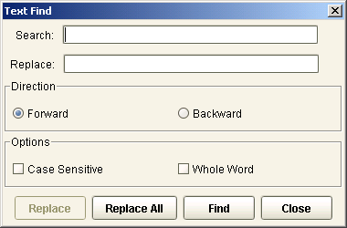{width="3.4159722222222224in” | | height="2.25625in”} | | | | To search for a particular text in a script, the following details | | must be specified in the Text Search dialog box: | | | | +——————————–+——————————–+ | | | Field / Flag | Description | | | +================================+================================+ | | | Search | This field is used to specify | | | | | the text that is to be | | | | | searched. | | | +——————————–+——————————–+ | | | Replace | If a text is specified in this | | | | | field, this value replaces the | | | | | text that is defined in the | | | | | Search field upon clicking the | | | | | Find button. | | | | | | | | | | [NOTE:]{.underline} | | | | | | | | | | i. If a text is specified in | | | | | this field, click on the | | | | | Find button to locate the | | | | | text specified in the Search | | | | | field, and then click on the | | | | | Replace button in order to | | | | | replace the relevant text | | | | | with the text specified in | | | | | the Replace field. | | | | | | | | | | ii. The Replace All button | | | | | is used to Replace all the | | | | | text in the script – which | | | | | matches the text specified | | | | | in the Search field – with | | | | | the text specified in the | | | | | Replace field. | | | +——————————–+——————————–+ | | | Forward/Backward | Mark the relevant flag to | | | | | specify the checking sequence | | | | | of the search. | | | +——————————–+——————————–+ | | | Case Sensitive | Mark this flag if the search | | | | | must consider the letter case | | | | | (i.e., uppercase or | | | | | lowercase), in which the word | | | | | that is specified in the | | | | | Search field is defined. | | | +——————————–+——————————–+ | | | Whole Word | Mark this flag if the search | | | | | must consider the whole word | | | | | specified in the Search field, | | | | | as a search criteria. | | | | | | | | | | [NOTE:]{.underline} | | | | | | | | | | If this flag is not marked, | | | | | the text specified in the | | | | | Search field may be searched | | | | | as a part of a whole word | | | | | (e.g., prefix,suffix). | | | +——————————–+——————————–+ | | | | [EXAMPLES:]{.underline} | | | | 1. Specify new_lc_amt in the Search field and then click on the | | Find button. The relevant text in the script is then highlighted. | | Click on the Find button again to continue searching for the text | | throughout the script, based on the selected checking sequence | | (e.g., forward or backward). | | | | ——————————————————————- | | —- | | {width="4.847916666666666in” height="2.2in | | “} | | ——————————————————————- | | —- | | | | 2. Mark the Case Sensitive flag. Specify Temp_pos in the Search | | field and then click on the Find button. The text – which | | matches the word in the Search field, as well as its lettercase | | – is highlighted. | | | | ——————————————————————- | | —- | | {width="4.847916666666666in” height="2.2in | | “} | | ——————————————————————- | | —- | | | | 3. Mark the Whole Word flag. Specify a word in the Search field and | | then click on the Find button. The whole word specified in the | | Search field is highlighted. | | | | > **[NOTE:\ | | > ]{.underline}**If the word that is specified in the Search field is | | > only a part of the word that is to be searched, this option must no | | > be marked. | | | | ——————————————————————- | | —- | | {width="4.847916666666666in” height="2.2in | | “} | | ——————————————————————- | | —- | | | | 4. Unmark the Whole Word flag. Specify the text in the Search field | | and then click on the Search button. The text, which is a prefix | | of the whole word in the script, is highlighted. | | | | ——————————————————————- | | —- | | {width="4.847916666666666in” height="2.2in | | “} | | ——————————————————————- | | —- | | | | 5. Specify a text in the Search field. In the Replace field, specify | | the text that is to replace the text in the Search field. Click | | on the Find button. The text specified in the Search field is | | highlighted in the script – | | | | {width="4.847916666666666in” height="2.2in”} | | | | > – Click on the Replace button. The text specified in the Replace | | > field replaces the highlighted text in the script. | | | | ——————————————————————- | | —- | | {width="4.847916666666666in” height="2.2in | | “} | | ——————————————————————- | | —- | | | | [NOTE:]{.underline} | | | | Shorcut keys CTRL+Z may be used to undo or redo an operation. | | | | [Method Search]{.underline} | | | | The search functionality may also be used to search for a particular | | calculation method based on the method name or method description. | | The following details must be specified in the Method Search dialog | | box. | | | | ——————————————————————- | | ——————- | | {width="4.847916666666666in” height="2.304 | | 1666666666667in”} | | ——————————————————————- | | ——————- | | | | +——————————–+——————————–+ | | | Field/Flag | Description | | | +================================+================================+ | | | Column Name | This field is used to specify | | | | | if the search is to be | | | | | performed in the Method Name | | | | | column or Method Description | | | | | column. The relevant column | | | | | name or text may be selected | | | | | from the dropdown list, or | | | | | manually specified. | | | +——————————–+——————————–+ | | | Column Value | This field lists all the | | | | | available method names or | | | | | method descriptions in the | | | | | selected module or function, | | | | | based on the selection column | | | | | specified in the Column Name | | | | | field. The relevant column | | | | | value or text may be selected | | | | | from the dropdown list, or | | | | | manually specified. | | | | | | | | | | [NOTE:]{.underline} | | | | | | | | | | System-level is also | | | | | supported. | | | +——————————–+——————————–+ | | | Forward/Backward | Mark the relevant flag to | | | | | specify the checking sequence | | | | | of the search. | | | +——————————–+——————————–+ | | | Wrap_search | Mark this flag if the search | | | | | is to be performed to all | | | | | available column values (i.e., | | | | | loop search). | | | +——————————–+——————————–+ | | | Case Sensitive | Mark this flag if the search | | | | | must consider the letter case | | | | | (i.e., uppercase or | | | | | lowercase), in which the word | | | | | that is specified in the | | | | | search fields, are defined. | | | +——————————–+——————————–+ | | | Whole Word | Mark this flag if the search | | | | | must consider the whole word | | | | | specified in the search | | | | | fields, as a search criteria. | | | | | | | | | | [NOTE:]{.underline} | | | | | | | | | | If this flag is not marked, | | | | | the text specified in the | | | | | search fields may be searched | | | | | as a part of a whole word | | | | | (e.g., prefix,suffix). | | | +——————————–+——————————–+ | | | | [EXAMPLE:]{.underline} | | | | System-level methods: | | | | ——————————————————————- | | ——————- | | 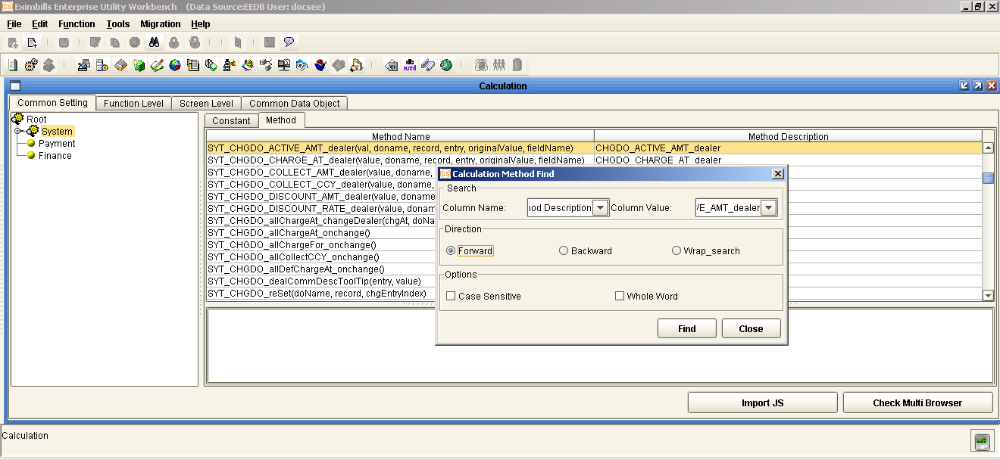{width="4.840277777777778in” height="2.231 | | 9444444444443in”} | | ——————————————————————- | | ——————- | | | | Module-level methods: | | | | ——————————————————————- | | ——————- | | {width="4.840277777777778in” height="2.231 | | 9444444444443in”} | | ——————————————————————- | | ——————- | | | | Function-level Methods: | | | | ——————————————————————- | | ——————- | | {width="4.840277777777778in” height="2.231 | | 9444444444443in”} | | ——————————————————————- | | ——————- | +———————————————————————–+
{#section-29 .CS-head2}
Calculation Rule JS Files
Calculations and validations in EE can be created in two ways:
-
By using the Calculation function of the EE Utility; and
-
By using an external JavaScript (JS) file.
When using the Calculation function of the EE Utility, the corresponding JS files for the defined rules can be generated through the XML Generator function.
For consistency and better maintenance, using the Calculation function of the EE Utility is recommended. This eliminates the deletion of the contents of a JS file, which occurs when Calculation JS files are accidentally generated for certain modules that use external calculation JS files.
{width="0.33611111111111114in”
height="0.33611111111111114in”}NOTE: For purposes of this discussion,
this section only covers creating calculations using the Calculation
function of the EE Utility.
+———————————————————————–+ | Document Object Model | | | | The Document Object Model (DOM) is a model that JavaScript uses to | | describe web pages, and is the basis of all JavaScript programming. | | It is a simple hierarchical naming system that makes all of the | | objects in the page – such as images, forms, and links – accessible | | to scripting languages like JavaScript. | | | | In a JavaScript, the code for the field must conform to the DOM | | format: document.mainform.object.property format. When running the | | Calculation function to define the rules for a field: | | | | - If the field is retrieved through the Field button of the | | Calculation function, the field is displayed in field.value | | format; nonetheless, the corresponding JS file runs the actual | | DOM script. | | | | - If the field is not retrieved through the Field button of the | | Calculation function, the field must be indicated in the | | document.mainform format (e.g., document.mainform.C_MAIN_REF). | | | | If the Field button is not used, the script may also be specified | | manually in document.mainform format. | | | | ——————————————————————- | | ——– | | {width="4.840277777777778in” height="2.343 | | 75in”} | | ——————————————————————- | | ——– | +———————————————————————–+
Levels of Calculation Rules
The Calculation function of the EE Utility provides the following tabs: Common Setting, Function Level, Screen Level, Common Data Object, Check JS By JSLint, and Password Check. Each of these corresponds to a level of calculation rule (method) that is associated with a specific type of transaction processing.
The JS files for these calculation rules are generated in the [EximBillWeb.war drive]\JS\[Bank group]\[Country] path.
Figure 9. Calculation Function Window
[Common Setting]{.underline}
This pertains to system-level and module-level calculation rules that are used across functions and modules. These calculation methods and functions are prefixed with SYT when defined on the system level, and with SYM when defined on the module level.
Files and format of the generated JS files:
-
TrxSys.js, which contains all system-level methods and constants that have been used in the calculation
-
Const_TrxSys.js, which contains all system-level constants
-
SYM_[Module short name].js, which contains the methods and constants for a module
-
Const_[Module short name].js, which contains all constants defined for a module
[Function Level]{.underline}
This pertains to methods that are applicable to a specific transaction function, its fields, and its associated data objects, if any. It is a function-exclusive calculation that may be used only by the function for which it is created. These calculation methods and functions are prefixed with SYF.
In a multi-entity environment, calculation methods in the function level may be defined for a specific domain through the Function sub-tab, or for all domains through the Common Function’s Method sub-tab. Calculation methods defined in the Common Function’s Method sub-tab are prefixed with ECM.
These methods are created for transaction functions and may call upon:
-
system-level methods (SYT) and constants; and
-
module-level methods (SYM) and constants that are defined for the module to which the transaction function belongs. Although the process of creating a function-level method is similar to the method of creating system - and module-level methods, a function method may be associated with different transaction function fields.
Filename format of the generated JS files:
-
SYF_[Module short name]_[Transaction function name].js, which contains the methods for a transaction function
-
SYF_[Module short name]_[Transaction function name]_DO.js, which contains the methods for the data objects in association with the related transaction function.
[Screen Level]{.underline}
This pertains to methods defined for child screens such as data object JSP files and library (LBI) files.
Filename format of the generated JS files: [Module]_SRC_[Name of the child JSP file].js
[Common Data Object]{.underline}
This pertains to methods defined for data objects that are used across modules.
Filename format of the generated JS files: DO_[Data Object name].js
[Check JS By JSLint]{.underline}
JSLint is a JavaScript code analysis tool that is integrated with the EE system to check JavaScript codes for its compliance with standard coding rules, to enable timely detection and correction of errors and ensure code quality. The Check JS By JSLint tab in the Calculation function is used to check the validity of individual or multiple JS files.
Filename format of the generated XLS file: CheckJavascript.xls
{width="0.33611111111111114in”
height="0.33611111111111114in”}NOTE: In the EE Utility, if the Start
button is clicked in the Check JS By JSLint tab for the first time, the
PredefinedGlobalMethods.xml file − which contains all the methods that
are considered valid by the JSLint Tool in the Calculation function − is
generated.
[Password Check]{.underline}
This pertains to methods that are used for checking the password specified for users created in the Security module.
Filename format of the generated JS files: SYT_PD.js
{width="0.33611111111111114in”
height="0.33611111111111114in”}NOTE: Once the SYT_PD.js file is
generated, the specified methods used for checking the passwords are
automatically applied to all types of users created through the Security
Manager.
Required Calculation Rules
When a new module is created, the corresponding module-level calculation rules must be defined. Similarly, function-level calculation rules must be defined when a new transaction function is created.
If no calculation rule is required for the module or transaction function, the corresponding JS file must still be generated through the XML Generator function. The JS files are still required by the system in order to view the function on the browser.
{width="0.33611111111111114in”
height="0.33611111111111114in”}NOTE:
Rule names may be specified using the following characters:\
- A-Z\
- a-z\
- 0-9\
- Chinese characters\
- Dash ( - )\
- Underscore ( _ )
Module-Level Calculations
This pertains to the methods defined for a specific module: module-level (SYM) methods.
Configuration
The calculation rules or methods for a module are defined in the Config Calculation Content window, which provides these tabs: Parameter, Edit, and Example.
Parameter Tab
This tab is used for defining the basic information for the method.
Figure 9. Config Calculation Window: Parameter Tab
Field Field Description
+———————–+———————–+———————–+ | Prefix | | This field displays | | | | the prefix for the | | | | complete method name. | | | | Module calculation | | | | methods use the | | | | prefix SYM. | +———————–+———————–+———————–+ | | | | +———————–+———————–+———————–+ | Name | | Specify a name for | | | | the method. The | | | | method name must not | | | | have any space. This | | | | is usually the name | | | | of the field. | | | | | | | | This name is appended | | | | to the prefix to form | | | | the complete method | | | | name. | +———————–+———————–+———————–+ | | | | +———————–+———————–+———————–+ | Description | | Provide a description | | | | for the method. This | | | | field may be used to | | | | specify the | | | | parameters in the | | | | method – if the | | | | method uses | | | | parameters – that | | | | are mandatory and | | | | what the values of | | | | these parameters must | | | | be. | +———————–+———————–+———————–+ | | | | +———————–+———————–+———————–+
+———————–+———————–+———————–+ | Develop Mode | | Specify the | | | | development mode to | | | | be used for defining | | | | the JavaScript | | | | method. | | | | | | | | Select Common Method | | | | option to define JS | | | | methods using the | | | | common method (i.e., | | | | using parameters). | | | | | | | | Select the Formula | | | | Method option to | | | | define JS methods | | | | using array fields | | | | and their | | | | corresponding | | | | attribute sets. | | | | | | | | **[NOTE:]{.underline} | | | | ** | | | | | | | | The Common Method is | | | | used in this | | | | discussion. For | | | | information on how to | | | | define module-level | | | | calculations using | | | | the Formula Method, | | | | refer to the EE | | | | Utility Reference: | | | | Parameter Manager | | | | Functions document. | +———————–+———————–+———————–+ | | | | +———————–+———————–+———————–+ | (Parameter | | This section lists | | list) | | all the parameters | | | | that the method | | | | receives, uses, and | | | | passes on to other | | | | methods. This list of | | | | parameters may be | | | | added to, modified, | | | | or deleted using the | | | | Add, Edit, or Delete | | | | button. | | | | | | | | Refer to the | | | | following [Adding | | | | Parameters to a | | | | Module | | | | Method](#adding_para_ | | | | to_a_module) | | | | section. | +———————–+———————–+———————–+
+———————————————————————–+ | []{#adding_para_to_a_module .anchor}Adding Parameters to a Module | | Method | | | | A parameter may be added for a particular method by clicking on the | | Add button in the Parameter tab of the Config Calculation Content | | window. The following details are required in the Parameter window: | | | | - Name: Specify a name for the parameter. | | | | - Type: Select the type of the parameter from the dropdown list. | | The options are as follows: | | | | - Date | | | | - Field Name | | | | > [NOTE:]{.underline} If this is the selected option, this field | | > name must already exist in the DB Dictionary. | | | | - Field Value | | | | - Variable | | | | | | | | - Description: Provide a description for the parameter. | | | | ——————————————————————- | | ——————- | | {width="4.310416666666667in” height="2.206 | | 9444444444444in”} | | ——————————————————————- | | ——————- | +———————————————————————–+
Edit Tab
This tab is used for defining the method. A set of buttons is provided for this setting.
Figure 9. Module Level Calculation: Edit Tab
Button Description
+———————–+———————–+———————–+ | {width="0.2263888 | | button displays all | | 888888889in” | | the available | | height="0.26388888888 | | JavaScript processes, | | 88889in”} | | operations, and | | JSM (JavaScript | | objects. | | Methods) | | | | | | Double-click on an | | {width="1.2298611 | | the calculation rule. | | 11111111in” | | | | height="1.63958333333 | | **[NOTE:]{.underline} | | 33334in”} | | ** | | | | | | | | This button includes | | | | the Cycle Sample node | | | | to which two sample | | | | cycle scripts are | | | | provided: Multiple | | | | Cycle and Single | | | | Cycle. These samples | | | | may be used when | | | | defining calculation | | | | rules in Formula | | | | Mode. | +———————–+———————–+———————–+ | | | | +———————–+———————–+———————–+ | {width="0.2166666 | | button displays all | | 6666666667in” | | the predefined system | | height="0.25486111111 | | methods of the EE | | 11111in”} | | system. Mouse-over on | | SM (EE Methods) | | a method name to | | | | display its | | {width="1.2298611 | | | | 11111111in” | | Double-click on an | | height="2.78333333333 | | item to use this in | | 3333in”} | | the calculation rule. | | | | | | | | [NOTE: | | | | ]{.underline} | | | | | | | | Refer to the | | | | Appendix B of the | | | | EE Utility | | | | Reference: Parameter | | | | Manager Functions | | | | document for a | | | | complete list as well | | | | as descriptions of | | | | the available system | | | | methods. | +———————–+———————–+———————–+ | | | | +———————–+———————–+———————–+
+———————–+———————–+———————–+ | {width="0.2076388 | | button displays all | | 888888889in” | | predefined system | | height="0.26388888888 | | variables. The values | | 88889in”} | | of these variables | | SV (EE Variables) | | are updated during | | | | transaction | | {width="1.2298611 | | | | 11111111in” | | Double-click on an | | height="2.85138888888 | | item to use this in | | 88888in”} | | the calculation rule. | +———————–+———————–+———————–+ | | | | +———————–+———————–+———————–+ | {width="0.2076388 | | button displays all | | 888888889in” | | user-defined methods | | height="0.25486111111 | | that may be used by | | 11111in”} | | the method that is | | EE (Formula | | being configured. | | Methods) | | Only methods that are | | | | of the same level, or | | {width="1.2298611 | | hierarchy of methods, | | 11111111in” | | are displayed. For | | height="2.875in”} | | system-level methods, | | | | only other existing | | | | system-level methods | | | | are provided. In case | | | | of module-level | | | | methods, only | | | | system-level methods | | | | and other methods | | | | defined for the | | | | selected module are | | | | listed. | | | | | | | | Double-click on an | | | | item to use this in | | | | the calculation rule. | | | | | | | | **[NOTE:]{.underline} | | | | ** | | | | | | | | The View Source | | | | button may be used to | | | | display the content | | | | of the selected | | | | method. | +———————–+———————–+———————–+ | | | | +———————–+———————–+———————–+ | {width="0.2076388 | | button displays all | | 888888889in” | | the calculation | | height="0.26388888888 | | constants that are | | 88889in”} | | available for the | | CT (Constant) | | method. Only | | | | constants that are of | | {width="1.2298611 | | are higher in the | | 11111111in” | | hierarchy of | | height="1.57222222222 | | constants, are | | 22222in”} | | displayed. | | | | | | | | Double-click on an | | | | item to use this in | | | | the calculation rule. | +———————–+———————–+———————–+ | | | | +———————–+———————–+———————–+ | {width="0.1979166 | | button displays the | | 6666666666in” | | transaction fields | | height="0.27361111111 | | that may be used for | | 111114in”} | | the method that is | | FLD (Field) | | being configured. | | | | | | {width="1.2298611 | | (SYM) methods are | | 11111111in” | | being configured, the | | height="2.88055555555 | | transaction fields | | 55555in”} | | from the tables | | | | created for the | | | | module are displayed. | | | | | | | | Double-click on an | | | | item to use this in | | | | the calculation rule. | +———————–+———————–+———————–+ | | | | +———————–+———————–+———————–+
+———————–+———————–+———————–+ | {width="0.2076388 | | button displays all | | 888888889in” | | the server side | | height="0.27361111111 | | scripts that are | | 111114in”} | | defined for the | | SS (Server Side | | module or defined | | JS) | | specifically for use | | | | across modules. These | | {width="1.2298611 | | may be used at | | 11111111in” | | function | | height="1.56180555555 | | initialization, | | 55554in”} | | function | | | | confirmation, and | | | | transaction | | | | processing. | | | | | | | | Double-click on an | | | | item to use this in | | | | the calculation rule. | | | | | | | | **[NOTE:]{.underline} | | | | ** | | | | | | | | These server side | | | | scripts are created | | | | using the Server Side | | | | JS function of the | | | | Transaction Function | | | | group. | +———————–+———————–+———————–+ | | | | +———————–+———————–+———————–+ | {width="0.2166666 | | button displays all | | 6666666667in” | | the Get CUBK rules | | height="0.28333333333 | | that are defined for | | 33333in”} | | the module or defined | | CB (CUBK Field) | | specifically for use | | | | across modules. | | {width="1.2298611 | | Double-click on an | | 11111111in” | | item to use this in | | height="2.89930555555 | | the calculation rule. | | 55554in”} | | | | | | **[NOTE:]{.underline} | | | | ** | | | | | | | | These Get CUBK rules | | | | are created using the | | | | Get CUBK function of | | | | the Transaction | | | | Function group. | +———————–+———————–+———————–+
Example Tab
This tab may be used to create examples for how the method must be called upon by other methods.

Figure 9. Module-Level Calculation: Example Tab
#######
Procedure
To create a module- level calculation rule:
Do the following . . .
+———————–+———————–+———————–+ | 1. Run the | |  | | function from the | | | | Parameter Manage | | | | function group. | | | +———————–+———————–+———————–+ | | | | +———————–+———————–+———————–+ | 2. The Calculation | |  | | displayed. Access | | | | the Common Setting | | | | tab. | | | +———————–+———————–+———————–+ | | | | +———————–+———————–+———————–+ | 3. In the Common | |  | | double-click on the | | | | System node. | | | +———————–+———————–+———————–+ | | | | +———————–+———————–+———————–+ | 4. Select the | |  | | the method is being | | | | defined. | | | | | | | | The configuration | | | | section displayed | | | | three sub-tabs: | | | | Constant, Method, and | | | | Formula Field’s | | | | Method. | | | | | | | | **[NOTE:]{.underline} | | | | ** | | | | | | | | i. The Constant | | | | sub-tab is used for | | | | defining | | | | module-level | | | | constants. | | | | | | | | ii. The Formula | | | | Field’s Method | | | | sub-tab is used to | | | | define calculation | | | | rules for array | | | | fields added in | | | | Formula Mode | | | | development mode. | | | +———————–+———————–+———————–+ | | | | +———————–+———————–+———————–+ | 5. Right-click on | |  | | select the Add | | | | option from the | | | | popup menu. | | | +———————–+———————–+———————–+ | | | | +———————–+———————–+———————–+ | 6. The Config | |  | | window is | | | | displayed. | | | | | | | | In the Parameter tab, | | | | select the Common | | | | Method development | | | | mode. | | | | | | | | Specify the Name and | | | | Description of the | | | | method and add | | | | Parameters, if | | | | required. | | | | | | | | [NOTE: | | | | ]{.underline} | | | | | | | | The Common Method | | | | development mode is | | | | selected by default. | | | +———————–+———————–+———————–+ | | | | +———————–+———————–+———————–+ | 7. In the Edit tab, | |  | | calculation script. | | | | | | | | Click on the Save | | | | button when done. | | | | | | | | **[NOTE:]{.underline} | | | | ** | | | | | | | | In the Example tab, | | | | examples may be | | | | specified for how the | | | | method must be called | | | | upon by other | | | | methods. | | | +———————–+———————–+———————–+ | | | | +———————–+———————–+———————–+ | 8. The complete | |  | | description are | | | | shown in the top | | | | section of the | | | | Method sub-tab. | | | | Select this to | | | | display the details | | | | in the lower | | | | section. | | | | | | | | The complete name of | | | | a module-level method | | | | follows this format: | | | | | | | | SYM_[Name] | | | +———————–+———————–+———————–+ | | | | +———————–+———————–+———————–+ | [XML | |  | | ne} | | | | | | | | Run the XML Generator | | | | function and generate | | | | the JS files for the | | | | Calculation | | | | parameter. | | | | | | | | For a system-level | | | | method, make sure to | | | | select the System | | | | option under the | | | | Module tab of the XML | | | | Generator - | | | | Calculation window. | | | | | | | | For a module-level | | | | method, select | | | | instead the module | | | | name. | | | +———————–+———————–+———————–+ | | | | +———————–+———————–+———————–+ | The JS files are | |  | | sub-folders of all | | | | available | | | | bank-country groups | | | | in this path: | | | | | | | | [EximBillWeb.war | | | | drive]\JS\[Bank | | | | group]\[Country] | | | | | | | | For system-level | | | | methods, the | | | | TrxSys.js file is | | | | generated or updated. | | | | | | | | The Const_TrxSys.js | | | | file, which consist | | | | of all available | | | | constants, is | | | | generated or updated | | | | as well. | | | | | | | | For module-level | | | | methods, the name of | | | | the generated file | | | | follows this format: | | | | | | | | SYM_[Module | | | | name].js | | | +———————–+———————–+———————–+
{#section-31 .CS-head2}
Function-Level Calculations
This pertains to the methods defined for a specific transaction function: function-level (SYF) methods. These methods may be associated with different transaction function fields.
{width="0.33611111111111114in”
height="0.33611111111111114in”}NOTE: The configuration discussed in this
section is the basic configuration of calculation methods in the
function level. For configuration in a multi-entity environment, refer
to the EE Utility Reference: Parameter Manager Functions manual.
[]{#predefined_func_methods .anchor}Predefined Function Methods
Apart from user-defined methods, the following default JavaScript functions may be used for creating function-level methods. These are as follows.
JS Function Description
+———————–+———————–+———————–+ | *PreconditionOnInit | | This is used to call | | * | | methods and | | | | parameters upon | | | | loading the | | | | transaction page. | | | | | | | | [EXAMPLE:]{.underli | | | | ne} | | | | | | | | The | | | | SYS_GetRefNo(‘RefNam | | | | e’, | | | | ‘PassFunc’)method is | | | | used for generating | | | | the reference number | | | | upon loading of the | | | | transaction. As such, | | | | it must be called | | | | from the | | | | PreconditionOnInit | | | | JavaScript function. | +———————–+———————–+———————–+ | | | | +———————–+———————–+———————–+ | **PostconditionOnInit | | This is used to call | | ** | | methods and | | | | parameters after the | | | | initialization of the | | | | transaction page | | | | through the | | | | PreconditionOnInit | | | | method — often used | | | | when the related | | | | transaction function | | | | requires the | | | | recalculation of data | | | | and manipulation of | | | | field properties | | | | (e.g., Continue Saved | | | | and Fix Pending | | | | functions). | | | | | | | | [EXAMPLE:]{.underli | | | | ne} | | | | | | | | In the Register | | | | Amendment function, a | | | | value is specified | | | | for the Increase | | | | Amount field. This | | | | action changes the | | | | property of the | | | | Decrease Amount field | | | | from Optional to | | | | Protected. The | | | | transaction is then | | | | saved. | | | | | | | | When the processing | | | | of the saved | | | | transaction is | | | | continued through the | | | | Continue Saved | | | | function, the | | | | property of the | | | | Decrease Amount field | | | | must be Protected. | | | | This is done through | | | | the | | | | PostconditionOnInit | | | | method. | +———————–+———————–+———————–+ | | | | +———————–+———————–+———————–+ | InitValues | | This is used to | | | | define the default | | | | field values upon | | | | loading the | | | | transaction page. | | | | | | | | [EXAMPLE]{.underlin | | | | e}: | | | | | | | | The Issue Date value | | | | is assigned with the | | | | SYS_BUSI_DATE | | | | method to load the | | | | date as system date | | | | by default. | +———————–+———————–+———————–+ | | | | +———————–+———————–+———————–+ | **ConfirmBusinessCall | | This is used to call | | ** | | methods and | | | | parameters upon | | | | confirmation of the | | | | transaction. | | | | | | | | [EXAMPLE]{.underlin | | | | e}: | | | | | | | | The CHG_VOUCHER | | | | system-level | | | | calculation rule is | | | | called upon | | | | confirmation of the | | | | transaction to | | | | generate vouchers for | | | | debit and credit | | | | entries. | +———————–+———————–+———————–+ | | | | +———————–+———————–+———————–+ | ConfirmBusinessCall | | This is used to call | | Save | | methods and | | | | parameters upon | | | | saving the | | | | transaction. | | | | | | | | [NOTE: | | | | ]{.underline} | | | | | | | | This is done through | | | | the Save button on | | | | the transaction | | | | toolbar. | | | | | | | | [EXAMPLE:]{.underli | | | | ne} | | | | | | | | function | | | | ConfirmBusinessCallSa | | | | ve(){ | | | | | | | | try { | | | | | | | | SYM_EPLC_CONFIRM_C | | | | ALL(); | | | | | | | | } catch (e) { | | | | | | | | DisExcpt("SYF_EPLC\ | | | | _EPLC_AdviseLC.js", | | | | e); | | | | | | | | } | | | | | | | | } | +———————–+———————–+———————–+ | | | | +———————–+———————–+———————–+ | ConfirmBusinessChec | | This is used to call | | k | | methods and | | | | parameters after the | | | | ConfirmBusinessCall | | | | method is performed | | | | upon transaction | | | | confirmation. This | | | | method is usually for | | | | validating | | | | transaction input. | | | | | | | | [EXAMPLE]{.underlin | | | | e}: | | | | | | | | i. The | | | | Check_payment | | | | calculation is | | | | called from the | | | | ConfirmBusinessCheck | | | | JavaScript function | | | | to validate payment | | | | information: | | | | | | | | var _Crdo = | | | | SYS_GetObjByDoName(\ | | | | “PaymentCredit"); | | | | | | | | var _Drdo = | | | | SYS_GetObjByDoName(\ | | | | “PaymentDebit"); | | | | | | | | if(_Crdo.length<1 | | | | || | | | | _Crdo.length<1){ | | | | | | | | alert("No payment | | | | information.") | | | | | | | | return false; | | | | | | | | }else{ | | | | | | | | return true; | | | | | | | | } | | | | | | | | ii. Generating the | | | | “return true” | | | | statement, which is | | | | part of the | | | | ConfirmBusinessCheck | | | | code in the JS | | | | file, may be | | | | controlled by | | | | modifying the value | | | | of the | | | | IS_GENERATE_RETURN\ | | | | _STATEMENTS | | | | system parameter. | | | | This statement is | | | | only generated in | | | | any of the | | | | following cases: | | | | | | | | - The | | | | IS_GENERATE_RET | | | | URN_STATEMENTS | | | | system parameter | | | | is set to TRUE, | | | | and: | | | | | | | | - the | | | | ConfirmBusine | | | | ssCheck | | | | method is not | | | | defined | | | | | | | | - the | | | | ConfirmBusine | | | | ssCheck | | | | method is | | | | created but | | | | no code is | | | | defined for | | | | the method | | | | | | | | - The | | | | IS_GENERATE_RET | | | | URN_STATEMENTS | | | | system parameter | | | | is set to FALSE | | | | or null, and the | | | | ConfirmBusinessCh | | | | eck | | | | method is not | | | | defined | | | | | | | | > On the other hand, | | | | > the “return true” | | | | > statement is not | | | | > generated when: | | | | | | | | - The | | | | IS_GENERATE_RET | | | | URN_STATEMENTS | | | | system parameter | | | | is set to TRUE, | | | | and the | | | | ConfirmBusinessCh | | | | eck | | | | method is created | | | | and codes are | | | | defined for the | | | | method | | | | | | | | - The | | | | IS_GENERATE_RET | | | | URN_STATEMENTS | | | | system parameter | | | | is set to FALSE | | | | or null, and the | | | | ConfirmBusinessCh | | | | eck | | | | method is | | | | created, whether | | | | or not codes are | | | | defined for the | | | | method | +———————–+———————–+———————–+ | | | | +———————–+———————–+———————–+ | ConfirmBusinessChec | | This is used to call | | kSave | | methods and | | | | parameters upon | | | | saving and confirming | | | | the transaction, for | | | | the purpose of | | | | validation. This | | | | method is called | | | | after the | | | | ConfirmBusinessCall | | | | or | | | | ConfirmBusinessCallSa | | | | ve | | | | methods are | | | | performed. | | | | | | | | [NOTE: | | | | ]{.underline} | | | | | | | | This is done through | | | | the Save button on | | | | the transaction | | | | toolbar. | | | | | | | | [EXAMPLE:]{.underli | | | | ne} | | | | | | | | function | | | | ConfirmBusinessCheckS | | | | ave(){ | | | | | | | | try { | | | | | | | | return true | | | | | | | | } catch (e) { | | | | | | | | DisExcpt("SYF_EPLC\ | | | | _EPLC_RegisterPreAdv | | | | ise.js | | | | ", e); | | | | | | | | } | | | | | | | | } | +———————–+———————–+———————–+ | | | | +———————–+———————–+———————–+ | Cancel Check | | This is used to | | | | specify parameters | | | | and insert message | | | | prompts to be able to | | | | cancel a transaction. | | | | The following script | | | | may be used: | | | | | | | | [EXAMPLE:]{.underli | | | | ne} | | | | | | | | function | | | | CancelCheck(){ | | | | | | | | try { | | | | | | | | > var cancelMs = “Are | | | | > you sure you want | | | | > to cancel this | | | | > transaction?\n” + | | | | > “Click ok to | | | | > proceed or cancel | | | | > to abort” | | | | > | | | | > If(!confirm(cancelM | | | | s))return; | | | | > | | | | > return true; | | | | | | | | }catch (e) { | | | | | | | | DissExcpt(“SYF_IPLC\ | | | | _IPLC_IssueLC.js”,e) | | | | ; | | | | | | | | } | | | | | | | | } | +———————–+———————–+———————–+ | | | | +———————–+———————–+———————–+ | PreconditionOnUnloa | | This is used to call | | d | | methods and | | | | parameters at the | | | | closing of the | | | | transaction page. | | | | | | | | [EXAMPLE:]{.underli | | | | ne} | | | | | | | | function | | | | PreconditionOnUnload( | | | | ){ | | | | | | | | try { | | | | | | | | SYM_EPLC_CONFIRM_C | | | | ALL(); | | | | | | | | } catch (e) { | | | | | | | | DisExcpt("SYF_EPLC\ | | | | _EPLC_AdviseLC.js", | | | | e); | | | | | | | | } | | | | | | | | } | +———————–+———————–+———————–+ | | | | +———————–+———————–+———————–+ | PostconditionOnUnlo | | This is used to call | | ad | | methods and | | | | parameters after the | | | | transaction page is | | | | unloaded through the | | | | PreconditionOnUnload( | | | | ) | | | | method. The following | | | | script may be used: | | | | | | | | [EXAMPLE:]{.underli | | | | ne} | | | | | | | | function | | | | PostconditionOnUnload | | | | (){ | | | | | | | | try { | | | | | | | | SYS_GetRefNo('RefNa | | | | me', | | | | 'PassFunc'); | | | | | | | | } catch (e) { | | | | | | | | DisExcpt("SYF_IPLC\ | | | | _IPLC_IssueLC.js", | | | | e); | | | | | | | | } | | | | | | | | } | +———————–+———————–+———————–+ | | | | +———————–+———————–+———————–+ | LoadDODataOnInit | | This is used for | | | | loading the | | | | associated data | | | | objects upon | | | | transaction | | | | initialization. These | | | | data objects must | | | | already contain | | | | records. | | | | | | | | [EXAMPLE:]{.underli | | | | ne} | | | | | | | | The | | | | SYS_GetDataForDO_S( | | | | "SwFMTAddress","N\ | | | | “) | | | | method is used for | | | | the Edit Customer | | | | function. The | | | | LoadDODataOnInit is | | | | used to load the | | | | SwFMTAddress data | | | | object template for | | | | modifying the | | | | relevant customer | | | | details. | | | | | | | | **[NOTE:]{.underline} | | | | ** | | | | | | | | i. The functions | | | | SYS_DisableDo(XPath) | | | | or | | | | SYS_EnableDo(XPath), | | | | which are used to | | | | enable or disable | | | | data objects, may | | | | be invoked in the | | | | LoadDODataOnInit | | | | function method. | | | | | | | | ii. The | | | | LoadDODataComplete | | | | is a JavaScript | | | | function that is | | | | not included in the | | | | predefined | | | | JavaScript | | | | Functions in EE. | | | | This is used after | | | | the initialization | | | | of the data object | | | | through the | | | | LoadDODataOnInit | | | | method. | +———————–+———————–+———————–+ | | | | +———————–+———————–+———————–+ | PreInitValues | | This is used to call | | | | upon transaction page | | | | loading, the methods | | | | and parameters which | | | | values are not | | | | retrieved from the | | | | database. | | | | | | | | [EXAMPLE:]{.underli | | | | ne} | | | | | | | | function | | | | PreInitValues(){ | | | | | | | | try { | | | | | | | | SYM_EPLC_CONFIRM_C | | | | ALL(); | | | | | | | | } catch (e) { | | | | | | | | DisExcpt("SYF_EPLC\ | | | | _EPLC_AdviseLC.js", | | | | e); | | | | | | | | } | | | | | | | | } | +———————–+———————–+———————–+ | | | | +———————–+———————–+———————–+ | ReleaseConfirmBusin | | Similar to the | | essCheck | | ConfirmBusinessCheck | | | | method, this is used | | | | to call methods and | | | | parameters upon the | | | | release of a | | | | transaction. | +———————–+———————–+———————–+ | | | | +———————–+———————–+———————–+ | addRecordCheck | | This is used for | | | | functions requiring | | | | validations to be | | | | able to add a record | | | | on a data object. The | | | | following script may | | | | be used: | | | | | | | | [EXAMPLE]{.underlin | | | | e}: | | | | | | | | function | | | | addRecordCheck(){ | | | | | | | | try { | | | | | | | | //multiple add is | | | | allowed | | | | | | | | return true; | | | | | | | | } catch (e) { | | | | | | | | DisExcpt("SYF_ECAG\ | | | | _ProcessCDCorrectionI | | | | nstruction.js", | | | | e); | | | | | | | | } | | | | | | | | } | +———————–+———————–+———————–+ | | | | +———————–+———————–+———————–+ | deleteRecordCheck | | This is used for | | | | functions requiring | | | | validations to be | | | | able to delete a | | | | record on a data | | | | object. The following | | | | script may be used: | | | | | | | | [EXAMPLE]{.underlin | | | | e}: | | | | | | | | function | | | | deleteRecordCheck(vSt | | | | atus, | | | | doname){ | | | | | | | | try { | | | | | | | | var | | | | targetDo=SYS_getDoBy | | | | Xpath("CREDIT_ECAG\ | | | | “); | | | | | | | | var | | | | record=targetDo.getCu | | | | rrentRecord(); | | | | | | | | var | | | | RELEASED_FLAG=record | | | | ["RELEASED_FLAG"\ | | | | ]; | | | | | | | | if(RELEASED_FLAG==' | | | | T'){ | | | | | | | | alert("Edit and | | | | Deletion of | | | | previously entered | | | | Credits is | | | | prohibited"); | | | | | | | | return false; | | | | | | | | } | | | | | | | | return true; | | | | | | | | return true; | | | | | | | | } catch (e) { | | | | | | | | DisExcpt("SYF_ECAG\ | | | | _ProcessCDCorrectionI | | | | nstruction.js", | | | | e); | | | | | | | | } | | | | | | | | } | +———————–+———————–+———————–+ | | | | +———————–+———————–+———————–+ | editRecordCheck | | This is used for | | | | functions requiring | | | | validations to be | | | | able to edit a record | | | | on a data object. The | | | | following script may | | | | be used: | | | | | | | | [EXAMPLE]{.underlin | | | | e}: | | | | | | | | function | | | | editRecordCheck(vStat | | | | us){ | | | | | | | | try { | | | | | | | | currentDo=SYS_getDoB | | | | yXpath('CREDIT_ECAG | | | | '); | | | | | | | | record= | | | | currentDo.getCurrentR | | | | ecord(); | | | | | | | | CPYT_CR_REF=record\ | | | | ['CPYT_CR_REF']; | | | | | | | | CONV_FC_FLAG | | | | =record['CONV_FC_ | | | | FLAG']; | | | | | | | | var sSQLWhere = | | | | "CPYT_CR_REF = | | | | '" + CPYT_CR_REF+ | | | | "'"; | | | | | | | | var sTableName = | | | | "eximtrx.CREDIT_ECA | | | | G"; | | | | | | | | var sFieldList = | | | | "REVERSAL_FLAG"; | | | | | | | | var sMappingList = | | | | "REVERSAL_FLAG"; | | | | | | | | SYS_GetTableData_S( | | | | sTableName,sSQLWhere, | | | | sFieldList,sMappingLi | | | | st); | +———————–+———————–+———————–+
{width="0.33611111111111114in”
height="0.33611111111111114in”}NOTE: The LoadDODataComplete is a
JavaScript Function that is not included in the predefined JavaScript
Functions in EE. This is used after the initialization of the data
object through the LoadDODataOnInit method.
Configuration
The calculation rules or methods for a function are defined in the Config Calculation Content window, which provides these tabs: Parameter, Edit, and Example.
Parameter Tab
This tab is used for defining the basic information for the method.
Figure 9. Config Calculation Content Window: Parameter Tab
Field Field Description
+———————–+———————–+———————–+ | Prefix | | This field displays | | | | the prefix for the | | | | complete method name. | | | | Function-level | | | | calculation methods | | | | use this prefix | | | | format: SYF_[Module | | | | short name]. | +———————–+———————–+———————–+ | | | | +———————–+———————–+———————–+ | Name | | Specify a name for | | | | the method. The | | | | method name must not | | | | have any space. This | | | | is usually the name | | | | of the field. | | | | | | | | Alternatively, a | | | | predefined function | | | | method may be | | | | selected from the | | | | dropdown list. These | | | | are: | | | | | | | | - PreconditionOnIni | | | | t | | | | | | | | - PostconditionOnIn | | | | it | | | | | | | | - InitValues | | | | | | | | - ConfirmBusinessCa | | | | ll | | | | | | | | - ConfirmBusinessCa | | | | llSave | | | | | | | | - ConfirmBusinessCh | | | | eck | | | | | | | | - ConfirmBusinessCh | | | | eckSave | | | | | | | | - CancelCheck | | | | | | | | - PreconditionOnUnl | | | | oad | | | | | | | | - PostconditionOnUn | | | | load | | | | | | | | - LoadDODataOnInit | | | | | | | | - PreInitValues | | | | | | | | - ReleaseConfirmBus | | | | inessCheck | | | | | | | | - addRecordCheck | | | | | | | | - deleteRecordCheck | | | | | | | | - editRecordCheck | | | | | | | | This name is appended | | | | to the prefix to form | | | | the complete method | | | | name. | | | | | | | | Refer also to the | | | | preceding [Predefined | | | | Function | | | | Methods](#predefined_ | | | | func_methods) | | | | section. | +———————–+———————–+———————–+ | | | | +———————–+———————–+———————–+ | **Description** | | Provide a description | | | | for the method. This | | | | field may be used to | | | | specify the | | | | parameters in the | | | | method – if the | | | | method uses | | | | parameters – that | | | | are mandatory and | | | | what the values of | | | | these parameters must | | | | be. | +———————–+———————–+———————–+ | | | | +———————–+———————–+———————–+ | ***(Parameter | | This section lists | | list)*** | | all the parameters | | | | that the method | | | | receives, uses, and | | | | passes on to other | | | | methods. This list of | | | | parameters may be | | | | added to, modified, | | | | or deleted using the | | | | Add, Edit, or Delete | | | | button. | | | | | | | | Refer to the | | | | following [Adding | | | | Parameters to a | | | | Function | | | | Method](#adding_para_ | | | | to_a_func_method) | | | | section. | +———————–+———————–+———————–+
+———————————————————————–+ | []{#adding_para_to_a_func_method .anchor}Adding Parameters to a | | Function Method | | | | A parameter may be added for a particular method by clicking on the | | Add button in the Parameter tab of the Config Calculation Content | | window. The following details are required in the Parameter window: | | | | - Name: Specify a name for the parameter. | | | | - Type: Select the type of the parameter from the dropdown list. | | The options are as follows: | | | | - Date | | | | - Field Name | | | | > [NOTE]{.underline}: If this option is selected, the specified | | > parameter is displayed on the MP (method parameter) button in the | | > Edit tab and may be included in the coding of the calculation. | | | | - Field Value | | | | - Variable | | | | | | | | - Description: Provide a description for the parameter. | | | | ——————————————————————- | | —————– | | {width="4.19867782152231in” height="2.1513 | | 88888888889in”} | | ——————————————————————- | | —————– | +———————————————————————–+
Edit Tab
This tab is used for defining the method. A set of buttons is provided for this setting and line numbers are provided for better organization of scripts.
Figure 9. Config Calculation Content Window: Edit Tab
Button Description
+———————–+———————–+———————–+ | {width="0.2263888 | | button displays all | | 888888889in” | | the available | | height="0.27361111111 | | JavaScript processes, | | 111114in”} | | operations, and | | JSM (JavaScript | | objects. | | Methods) | | | | | | Double-click on an | | {width="1.2298611 | | the calculation rule. | | 11111111in” | | | | height="1.51597222222 | | | | 22223in”} | | | +———————–+———————–+———————–+ | | | | +———————–+———————–+———————–+ | {width="0.2361111 | | button displays all | | 111111111in” | | the predefined system | | height="0.26388888888 | | methods of the EE | | 88889in”} | | system. Mouse-over on | | SM (EE Methods) | | a method name to | | | | display its | | {width="1.2298611 | | | | 11111111in” | | Double-click on an | | height="3.49930555555 | | item to use this in | | 55554in”} | | the calculation rule. | | | | | | | | [NOTE: | | | | ]{.underline} | | | | | | | | Refer to the | | | | Appendix B: | | | | Calculation Methods | | | | of the EE Utility | | | | Reference: Parameter | | | | Manager Functions | | | | document for a | | | | complete list as well | | | | as descriptions of | | | | the available system | | | | methods. | +———————–+———————–+———————–+ | | | | +———————–+———————–+———————–+
+———————–+———————–+———————–+ | {width="0.2076388 | | button displays all | | 888888889in” | | predefined system | | height="0.27361111111 | | variables. The values | | 111114in”} | | of these variables | | SV (EE Variables) | | are updated during | | | | transaction | | {width="1.2298611 | | | | 11111111in” | | Double-click on an | | height="3.47847222222 | | item to use this in | | 22224in”} | | the calculation rule. | +———————–+———————–+———————–+ | | | | +———————–+———————–+———————–+ | {width="0.2166666 | | button displays all | | 6666666667in” | | user-defined methods | | height="0.27361111111 | | that may be used by | | 111114in”} | | the method that is | | EE (Formula | | being configured. | | Methods) | | Only methods that are | | | | of the same level, or | | {width="1.2298611 | | hierarchy of methods, | | 11111111in” | | are displayed. In | | height="3.49861111111 | | case of | | 1111in”} | | function-level | | | | methods, only the | | | | following types are | | | | listed: system-level | | | | methods, methods | | | | defined for the | | | | selected module, and | | | | other methods defined | | | | for the selected | | | | transaction function. | | | | | | | | Double-click on an | | | | item to use this in | | | | the calculation rule. | | | | | | | | **[NOTE:]{.underline} | | | | ** | | | | | | | | The View Source | | | | button may be used to | | | | display the content | | | | of the selected | | | | method. | +———————–+———————–+———————–+ | | | | +———————–+———————–+———————–+ | {width="0.2076388 | | button displays all | | 888888889in” | | the calculation | | height="0.26388888888 | | constants that are | | 88889in”} | | available for the | | CT (Constant) | | method. Only | | | | constants that are of | | {width="1.2298611 | | are higher in the | | 11111111in” | | hierarchy of | | height="1.17638888888 | | constants, are | | 8889in”} | | displayed. | | | | | | | | Double-click on an | | | | item to use this in | | | | the calculation rule. | +———————–+———————–+———————–+ | | | | +———————–+———————–+———————–+
+———————–+———————–+———————–+ | {width="0.2076388 | | button displays the | | 888888889in” | | transaction fields | | height="0.27361111111 | | that may be used for | | 111114in”} | | the method that is | | FLD (Field) | | being configured. | | | | | | {width="1.2298611 | | both transaction | | 11111111in” | | fields and extension | | height="3.52013888888 | | fields. When | | 8889in”} | | function-level (SYF) | | | | methods are being | | | | configured, the | | | | transaction fields | | | | from the JSP file of | | | | the transaction | | | | function are | | | | displayed. These | | | | fields must also be | | | | included as extension | | | | fields in the Db | | | | Dictionary. | | | | | | | | Double-click on an | | | | item to use this in | | | | the calculation rule. | | | | | | | | **[NOTE:]{.underline} | | | | ** | | | | | | | | i. When | | | | system-level (SYT) | | | | methods are being | | | | configured, the | | | | transaction fields | | | | in the database are | | | | displayed. | | | | | | | | ii. When | | | | module-level (SYM) | | | | methods are being | | | | configured, the | | | | transaction fields | | | | from the module | | | | tables are | | | | displayed. | | | | | | | | iii. When | | | | function-level | | | | (SYF) or Field | | | | level methods are | | | | being configured, | | | | the transaction | | | | fields from the JSP | | | | file of the | | | | transaction | | | | function are | | | | displayed. | +———————–+———————–+———————–+ | | | | +———————–+———————–+———————–+ | {width="0.2166666 | | button displays all | | 6666666667in” | | the server side | | height="0.26388888888 | | scripts that are | | 88889in”} | | defined for the | | SS (Server Side | | module or defined | | JS) | | specifically for use | | | | across modules. These | | {width="1.2298611 | | may be used at | | 11111111in” | | function | | height="1.45555555555 | | initialization, | | 55555in”} | | function | | | | confirmation, and | | | | transaction | | | | processing. | | | | | | | | Double-click on an | | | | item to use this in | | | | the calculation rule. | | | | | | | | **[NOTE:]{.underline} | | | | ** | | | | | | | | These server side | | | | scripts are created | | | | through the Server | | | | Side JS function of | | | | the Transaction | | | | Function group. | +———————–+———————–+———————–+ | | | | +———————–+———————–+———————–+
+———————–+———————–+———————–+ | {width="0.2166666 | | button displays all | | 6666666667in” | | the Get CUBK rules | | height="0.28333333333 | | that are defined for | | 33333in”} | | the module or defined | | CB (CUBK Field) | | specifically for use | | | | across modules. | | {width="1.2298611 | | Double-click on an | | 11111111in” | | item to use this in | | height="3.51388888888 | | the calculation rule. | | 8889in”} | | | | | | **[NOTE:]{.underline} | | | | ** | | | | | | | | These Get CUBK rules | | | | are created using the | | | | Get CUBK function of | | | | the Transaction | | | | Function group. | +———————–+———————–+———————–+ | | | | +———————–+———————–+———————–+ | {width="0.2166666 | | method lists all the | | 6666666667in” | | variables that have | | height="0.26388888888 | | been defined for the | | 88889in”} | | current transaction | | FV (Function | | function. | | Variable) | | | | | | Double-click on an | | {width="1.2298611 | | the calculation rule. | | 11111111in” | | | | height="1.88888888888 | | **[NOTE:]{.underline} | | 88888in”} | | ** | | | | | | | | These variables are | | | | those defined in the | | | | Variable sub-tab of | | | | the main Function tab | | | | in the calculation | | | | window for the | | | | relevant transaction | | | | function. | +———————–+———————–+———————–+ | | | | +———————–+———————–+———————–+
+———————–+———————–+———————–+ | {width="0.2166666 | | button lists all the | | 6666666667in” | | method parameters | | height="0.25486111111 | | defined for the | | 11111in”} | | current function | | MP (Method | | method. | | Parameter) | | | | | | Double-click on an | | {width="1.2298611 | | the calculation rule. | | 11111111in” | | | | height="1.95in”} | | **[NOTE:]{.underline} | | | | ** | | | | | | | | The parameter methods | | | | are displayed in the | | | | parameter list | | | | section in the | | | | Parameter tab of the | | | | Config Calculation | | | | Content window. | +———————–+———————–+———————–+ | | | | +———————–+———————–+———————–+ | {width="0.2166666 | | button displays all | | 6666666667in” | | interpreter fields | | height="0.26388888888 | | with defined Field | | 88889in”} | | Conversion settings | | FC (Field | | (i.e., option | | Conversion) | | values). Only those | | | | that are defined for | | {width="1.2298611 | | specifically for use | | 11111111in” | | across modules are | | height="1.45833333333 | | made available. | | 33333in”} | | | | | | Double-click on an | | | | item to use this in | | | | the calculation rule. | | | | This is often used | | | | when the method | | | | involves comparison | | | | among the values of | | | | the interpreter | | | | field. | | | | | | | | **[NOTE:]{.underline} | | | | ** | | | | | | | | Field conversion | | | | settings for a module | | | | are created through | | | | the Field Conversion | | | | function of the | | | | Maintenance function | | | | group. | | | | | | | | [EXAMPLE:]{.underli | | | | ne} | | | | | | | | Option values for the | | | | CLS_FLAG field of | | | | the IPLC module: | | | | | | | | - No (No) | | | | | | | | - Yes (Yes) | | | | | | | | Once an option is | | | | used in calculation, | | | | the following script | | | | is displayed: | | | | | | | | document.MAINFORM.CLS | | | | _FLG.value | | | | = 'No' | | | | | | | | document.MAINFORM.CLS | | | | _FLG.value | | | | = 'Yes' | +———————–+———————–+———————–+ | | | | +———————–+———————–+———————–+
+———————–+———————–+———————–+ | {width="0.2076388 | | button lists all the | | 888888889in” | | clause templates that | | height="0.26388888888 | | have been defined for | | 88889in”} | | the module. | | CL (Clause | | | | Template) | | Double-click on an | | | | item to use this in | | {width="1.2298611 | | | | 11111111in” | | **[NOTE:]{.underline} | | height="2.21944444444 | | ** | | 44446in”} | | | | | | These clause | | | | templates are created | | | | through the Clause | | | | function of the | | | | Transaction Function | | | | group. | +———————–+———————–+———————–+ | | | | +———————–+———————–+———————–+ | {width="0.2166666 | | button lists the data | | 6666666667in” | | objects of the | | height="0.26388888888 | | function (associated | | 88889in”} | | through the | | DO (Data Objects) | | transaction function | | | | JSP), with the DO | | {width="1.2298611 | | tree structure. | | 11111111in” | | | | height="3.55069444444 | | Double-click on an | | 44444in”} | | item to use this in | | | | the calculation rule. | | | | | | | | **[NOTE:]{.underline} | | | | ** | | | | | | | | Data objects are | | | | created through the | | | | DB Dictionary | | | | function of the | | | | Maintenance function | | | | group. | +———————–+———————–+———————–+ | | | | +———————–+———————–+———————–+
+———————–+———————–+———————–+ | {width="0.2263888 | | button lists all the | | 888888889in” | | LBI files that are | | height="0.26388888888 | | declared in the | | 88889in”} | | transaction function | | LBI (LBI JS) | | JSP of the current | | | | function, and the | | {width="1.2298611 | | calculations that are | | 11111111in” | | associated with the | | height="2.42361111111 | | LBI file. | | 1111in”} | | | | | | Double-click on an | | | | item to use this in | | | | the calculation rule. | | | | | | | | **[NOTE:]{.underline} | | | | ** | | | | | | | | The associated LBI | | | | calculations are | | | | configured through | | | | the System module in | | | | the Screen Level tab | | | | of the Calculation | | | | function. Refer also | | | | to the Defining | | | | Screen Level | | | | Calculation Rules | | | | section of the EE | | | | Utility Reference: | | | | Parameter Manager | | | | Functions document | | | | for more information. | +———————–+———————–+———————–+
+———————————————————————–+ | **Check Field Button ** | | | | The Check Field button is used to identify the fields which are | | removed from the attached JSP file, but is still included in the | | calculation script. Once the field is deleted from the JSP file, this | | field is removed from the fields’ list in the Calculation function. | | | | [EXAMPLE:]{.underline} | | | | 1. In the Calculation function, the ISSUE_DT field is used in the | | calculation script. | | | | ——————————————————————- | | ——————- | | {width="4.840277777777778in” height="2.215 | | 9722222222222in”} | | ——————————————————————- | | ——————- | | | | 2. Remove the ISSUE_DT field in the relevant JSP file that is | | attached to the function. | | | | ——————————————————————- | | ——– | | {width="4.847916666666666in” height="2.256 | | 25in”} | | ——————————————————————- | | ——– | | | | 3. The field is removed from the fields’ list in the Calculation | | function, but it is still included in the calculation script. | | Click on the Check Field button. | | | | ——————————————————————- | | ——————- | | {width="4.840277777777778in” height="2.215 | | 9722222222222in”} | | ——————————————————————- | | ——————- | | | | 4. The field that has been removed in the JSP file, but is still | | included in the calculation script, is displayed. | | | | ——————————————————————- | | ——————- | | {width="4.840277777777778in” height="2.215 | | 9722222222222in”} | | ——————————————————————- | | ——————- | | | | 5. To identify the location of the field in the calculation script, | | select the field and click on the Position button. The field is | | highlighted in the calculation script. | | | | ——————————————————————- | | ——————- | | {width="4.840277777777778in” height="2.215 | | 9722222222222in”} | | ——————————————————————- | | ——————- | +———————————————————————–+
+———————————————————————–+ | JavaScript Converter | | | | When defining JavaScript through the Calculation and Server Side JS | | functions in the EE Utility, a customized format is used. This format | | follows a customized structure which records the component’s | | information, including some attributes (e.g., Id or name). Through | | this standard format, when a component is modified in other | | functions, the object automatically changes as well. | | | | Manually written JavaScript, as well as JavaScript copied from other | | document editing software (e.g., UltraEdit) must be converted into | | the customized format that is used within the EE system. Therefore, | | the Change Handwrite JS button is made available in the Calculation | | and Server Side JS functions of the EE Utility. This button may be | | used to convert a single system method or JS code. | | | | [NOTE:]{.underline} | | | | Refer to the EE Utility Reference: Parameter Manager Functions | | documentation for more information on the JavaScript Converter and | | the procedures on batch conversion by importing JS files. | +———————————————————————–+
Example Tab
This tab may be used to create examples for how the method must be called upon by other methods.
Figure 9. Config Calculation Content Window: Example Tab
Procedure
To create a function-level calculation rule:
Do the following . . .
+———————–+———————–+———————–+ | 1. Access the | | {width="3 | | of the Calculation | | .495833333333333in” | | function window. | | height="2.68819444444 | | | | 44446in”} | +———————–+———————–+———————–+ | | | | +———————–+———————–+———————–+ | 2. Double-click on | | {width="3 | | the relevant | | .4902777777777776in” | | transaction | | height="2.68888888888 | | function belongs. | | 8889in”} | +———————–+———————–+———————–+ | | | | +———————–+———————–+———————–+ | 3. The transaction | | {width=” | | module are listed. | | 3.495833333333333in” | | | | height="2.68819444444 | | Select the function | | 44446in”} | | for which the method | | | | is being defined. | | | +———————–+———————–+———————–+ | | | | +———————–+———————–+———————–+ | 4. Two main tabs | | {width=” | | Function and DO | | 3.495833333333333in” | | Relation. | | height="2.68819444444 | | | | 44446in”} | | In the Function tab, | | | | four sub-tabs are | | | | provided: Function’s | | | | Methods, Field’s | | | | Method, Variable, and | | | | Preview. All these | | | | may be used for | | | | defining the function | | | | method. | | | | | | | | Right-click on the | | | | Function’s Method | | | | sub-tab section and | | | | select the Add option | | | | from the popup menu. | | | +———————–+———————–+———————–+ | | | | +———————–+———————–+———————–+ | **[NOTE:]{.underline} | | {width=” | | | | 3.495833333333333in” | | The Preview tab | | height="2.68819444444 | | displays a preview of | | 44446in”} | | the JavaScript codes | | | | that are to be | | | | generated for the | | | | calculation rules | | | | defined for the | | | | function. The | | | | calculations for the | | | | related data objects | | | | may also be included. | | | +———————–+———————–+———————–+ | | | | +———————–+———————–+———————–+ | 5. The Config | | {width=” | | window is | | 3.495833333333333in” | | displayed. | | height="2.64791666666 | | | | 66667in”} | | Specify the Method | | | | Name and Description, | | | | and add parameters if | | | | required. | | | +———————–+———————–+———————–+ | | | | +———————–+———————–+———————–+ | 6. In the Edit tab, | | {width=” | | calculation. | | 3.5in” | | | | height="2.65069444444 | | Click on the Save | | 44445in”} | | button when done. | | | | | | | | **[NOTE:]{.underline} | | | | ** | | | | | | | | Specify in the | | | | Example tab, examples | | | | on how the method | | | | must be called upon | | | | by other methods. | | | +———————–+———————–+———————–+ | | | | +———————–+———————–+———————–+ | 7. The complete | | {width=” | | description are | | 3.4902777777777776in” | | shown in the top | | height="2.68888888888 | | section of the | | 8889in”} | | Method tab. Select | | | | this to display the | | | | details in the | | | | lower section. | | | | | | | | The complete name of | | | | a function-level | | | | method follows this | | | | format: | | | | | | | | SYF_[Module | | | | name]_ | | | | [Transaction | | | | function name] | | | +———————–+———————–+———————–+ | | | | +———————–+———————–+———————–+ | [XML | | {width=” | | ne} | | 3.495833333333333in” | | | | height="2.68819444444 | | Run the XML Generator | | 44446in”} | | function and generate | | | | the JS files for the | | | | Calculation | | | | parameter. | | | | | | | | Select the relevant | | | | module in the | | | | Function tab of the | | | | XML Generator - | | | | Calculation window. | | | +———————–+———————–+———————–+ | | | | +———————–+———————–+———————–+ | The JS file generated | | {width=” | | found on this path: | | 3.495833333333333in” | | | | height="2.68819444444 | | [EximBillWeb.war | | 44446in”} | | drive]\JS\[Bank | | | | group]\[Country] | | | | | | | | The format of the JS | | | | filename is | | | | SYF_[Module | | | | name]_[Function | | | | name].js. | | | +———————–+———————–+———————–+
+———————————————————————–+ | **Basic Calculations ** | | | | When a new module is created, the following are examples of the basic | | calculation methods that must be configured. | | | | [Function Level Calculation]{.underline} | | | | 1. Generating the Transaction Reference | | | | - Use the PreconditionOnInit function for generating a reference | | number\ | | \ | | Sys_GetRefNo(‘Reference Rule’ , ‘func to pass reference | | value()') | | | | - Create another function that would hold the generated reference | | number and then assign it to the field C_MAIN_REF. | | | | > Refer to the Reference Numbers discussion | | > in Chapter Ten. | | | | 2. Creating the EE methods (JavaScript Functions) to populate | | fields. | | | | ——– – ————- | | Method Description | | ——– – ————- | | | | +———————+———————+———————+ | | | InitValues | | The field values | | | | | | that are to be | | | | | | called upon the | | | | | | loading of the | | | | | | transaction page | | | | | | must be assigned to | | | | | | this function | | | | | | method. | | | | | | | | | | | | [EXAMPLE:]{.under | | | | | | line} | | | | | | | | | | | | ISSUE_DT = | | | | | | SYS_BUSI_DATE; | | | | | | | | | | | | LC_CCY = ‘USD’; | | | | | | | | | | | | EXPIRY_PLC="Benefi | | | | | | ciary | | | | | | Country”; | | | +———————+———————+———————+ | | | | | | | | +———————+———————+———————+ | | | Cal_LC_BAL | | This must be equal | | | | | | to the LC_AMT plus | | | | | | Positive Tolerance, | | | | | | and is triggered | | | | | | upon onchange of | | | | | | the LC_AMT field. | | | | | | | | | | | | [NOTE: | | | | | | ]{.underline} | | | | | | | | | | | | The SYS_BeFloat() | | | | | | EE method is used | | | | | | when declaring | | | | | | numeric variables. | | | +———————+———————+———————+ | | | | | | | | +———————+———————+———————+ | | | *Cal_EXPIRY_PLC | | If the EXPIRY_PLC | | | | * | | is equal to | | | | | | ‘Other’, | | | | | | EXPIRY_PLC_NARR | | | | | | is displayed, | | | | | | otherwise hidden. | | | +———————+———————+———————+ | | | | 3. Creating the field validations. | | | | —————— – ————- | | JS Function Name Description | | —————— – ————- | | | | +———————+———————+———————+ | | | Chk_EXPIRY_DT | | The EXPIRY_DT must | | | | | | be later than the | | | | | | ISSUE_DT, | | | | | | otherwise, an alert | | | | | | message is | | | | | | displayed stating | | | | | | that the Expiry | | | | | | Date must be later | | | | | | than the Issue | | | | | | Date. | | | | | | | | | | | | The | | | | | | SYS_GetSubDays() | | | | | | method is used to | | | | | | get the difference | | | | | | of the number of | | | | | | days between the | | | | | | expiry date and | | | | | | issue date. (i.e., | | | | | | SYS_GetSubDays(‘Da | | | | | | y | | | | | | 1 field’,‘Day 2 | | | | | | field’) | | | | | | | | | | | | The | | | | | | SYS_GetSubDays() | | | | | | method is used to | | | | | | get the difference | | | | | | of the number of | | | | | | days between the | | | | | | expiry date and | | | | | | issue date. (i.e., | | | | | | SYS_GetSubDays(‘Da | | | | | | y | | | | | | 1 field’,‘Day 2 | | | | | | field’) | | | +———————+———————+———————+ | | | | | | | | +———————+———————+———————+ | +———————————————————————–+
Transaction Input Settings
-
REFERENCE NUMBERS
-
DROPDOWN LIST VALUES
-
LOOKUP BUTTONS AND WINDOWS
-
CLAUSES
-
AMOUNT / RATE FORMAT settings
-
DATA OBJECTS
Reference Numbers
A transaction reference number pertains to the unique sequential number that identifies a specific record.
Figure 10. Example of a Reference Number in the Transaction Screen
Transaction screens require fields that indicate the reference number for the transaction. These fields, like all those included in the transaction screens, are declared in the JSP file.
Figure 10. Example of a Reference Number Field in the JSP file
The reference number is automatically generated by the system according to the defined parameters.
There are two main procedures involved in generating the transaction reference number settings for a transaction function:
-
Reference number settings in the Standing Module
-
Calculation rules for reference numbers
Reference Number Settings in the Standing Module
The reference number rule is defined in the Add Reference Number function of the EE Standing Module. This reference number rule pertains to the format of the reference number.
The settings to be defined in the Add Reference Number function are as follows.
Figure 10. Add Reference Number Function
Field Field Description
Reference Name Specify the name of the reference number rule.
Reference Description Provide a brief description of the reference number rule.
Reference Type Indicate whether the reference number is to be used by a unit code (By Unit Code), a country group (By Country), or across business units and country groups (Global). Select the relevant option from the dropdown list.
+———————–+———————–+———————–+ | Country / Unit | | If the selected | | Code | | Reference Type | | | | setting is By Unit | | | | Code, this field | | | | lists all the | | | | business units under | | | | the current | | | | bank-country group. | | | | | | | | If the selected | | | | Reference Type | | | | setting is By | | | | Country, this field | | | | lists all the | | | | available country | | | | codes. | | | | | | | | If the selected | | | | Reference Type | | | | setting is Global, | | | | this defaults to | | | | Global and becomes | | | | protected. | | | | | | | | Select the relevant | | | | option from the | | | | dropdown list. | +———————–+———————–+———————–+ | | | | +———————–+———————–+———————–+ | Reference Prefix | | An optional prefix to | | | | the reference number | | | | can be specified in | | | | this field. | +———————–+———————–+———————–+ | | | | +———————–+———————–+———————–+ | Reference Suffix | | An optional suffix to | | | | the reference number | | | | can be specified in | | | | this field. | +———————–+———————–+———————–+ | | | | +———————–+———————–+———————–+ | Reference | | Specify the starting | | Sequence | | reference sequence | | | | number as they are to | | | | be used in the | | | | transactions. The | | | | value defaults to 0. | +———————–+———————–+———————–+ | | | | +———————–+———————–+———————–+ | Second Sequence | | This field is used | | | | for transactions that | | | | involve several | | | | procedures. It | | | | indicates the | | | | starting sequence | | | | number for the | | | | procedures to be made | | | | within the | | | | transaction. | | | | | | | | [EXAMPLE:]{.underli | | | | ne} | | | | | | | | The Second Sequence | | | | number is similar to | | | | the drawing reference | | | | number which is | | | | usually appended to | | | | the main reference | | | | number. | | | | | | | | EPLC000123001 | +———————–+———————–+———————–+ | | | | +———————–+———————–+———————–+ | Sequence Length | | This field indicates | | | | the length of the | | | | reference sequence. | | | | | | | | **[NOTE:]{.underline} | | | | ** | | | | | | | | This length does not | | | | include the prefix | | | | and suffix. | +———————–+———————–+———————–+ | | | | +———————–+———————–+———————–+ | Jump Flag | | This flag is used to | | | | control whether the | | | | reference number must | | | | skip the sequence of | | | | references if in case | | | | a transaction is | | | | cancelled. | +———————–+———————–+———————–+ | | | | +———————–+———————–+———————–+ | Initial Flag | | If the sequence | | | | number must | | | | re-initialize to zero | | | | automatically after a | | | | specific period, | | | | select the relevant | | | | option from the | | | | dropdown list: By | | | | Day, By Month, or By | | | | Year. | | | | | | | | If the sequence | | | | number must only be | | | | re-initialized to | | | | zero when it reaches | | | | the sequence limit, | | | | select the No Initial | | | | option. | +———————–+———————–+———————–+
To Define a Reference Number Rule
+———————–+———————–+———————–+ | 1. Run the | | {width="3.5in” | | Standing Module > | | height="2.04652777777 | | Reference Number | | 7778in”} | | Maintenance > Add | | | | Reference Number. | | | +———————–+———————–+———————–+ | | | | +———————–+———————–+———————–+ | 2. The Add | | {width="3.5in” | | screen is | | height="1.94236111111 | | displayed. | | 11112in”} | | | | | | Specify the values of | | | | the fields as | | | | required. | | | | | | | | Click on the Confirm | | | | button to add the | | | | reference number | | | | rule. | | | +———————–+———————–+———————–+ | | | | +———————–+———————–+———————–+ | 3. Run the Release | | {width="3.5in” | | function of the | | height="2.04652777777 | | Standing Module. | | 7778in”} | +———————–+———————–+———————–+ | | | | +———————–+———————–+———————–+ | 4. The Catalog | | {width="3.5in” | | screen for the | | height="0.88679243219 | | Release Reference | | 59755in”} | | Number function is | | | | displayed. | | | | | | | | Click on the Next | | | | button. | | | +———————–+———————–+———————–+ | | | | +———————–+———————–+———————–+ | 5. From the | | {width="3.5in” | | select the newly | | height="1.00943460192 | | defined Reference | | 47593in”} | | Number rule. | | | | | | | | Click on the Next | | | | button. | | | | | | | | **[NOTE:]{.underline} | | | | ** | | | | | | | | The Add Flag column | | | | indicates whether the | | | | record is already in | | | | Master status or not. | | | | The value F indicates | | | | that the record still | | | | requires release, and | | | | T indicates that the | | | | record is already in | | | | Master status. | | | +———————–+———————–+———————–+ | | | | +———————–+———————–+———————–+ | 6. The Release | | {width="3.5in” | | displayed. | | height="1.94236111111 | | | | 11112in”} | | Select the Release | | | | option and click on | | | | the Confirm button to | | | | release the new | | | | reference number | | | | rule. | | | +———————–+———————–+———————–+ | | | | +———————–+———————–+———————–+ | 7. Run the Inquire | | {width="3.5in” | | function of the | | height="2.04652777777 | | Standing Module. | | 7778in”} | +———————–+———————–+———————–+ | | | | +———————–+———————–+———————–+ | 8. The Catalog | | {width="3.5in” | | screen for the | | height="1.75in”} | | Inquire Reference | | | | Number function is | | | | displayed. | | | | | | | | Click on the Next | | | | button. | | | +———————–+———————–+———————–+ | | | | +———————–+———————–+———————–+ | 9. From the | | {width="3.5in” | | select the newly | | height="1.72916666666 | | released Reference | | 66667in”} | | Number rule. | | | | | | | | Click on the Master | | | | button. | | | +———————–+———————–+———————–+ | | | | +———————–+———————–+———————–+ | 10. The details of | | {width="3.5in” | | number rule are | | height="0.79027777777 | | displayed on a new | | 77777in”} | | screen. | | | | | | | | [NOTE: | | | | ]{.underline} | | | | | | | | This is for viewing | | | | purposes only. The | | | | details cannot be | | | | edited. | | | +———————–+———————–+———————–+
Calculation Rules for Reference Numbers
Calculation rules (JS functions) are used for the automatic generation of reference numbers during transaction processing. These reference numbers follow the format of the related reference number rule.
The EE method for generating the reference number is:
SYS_GetRefNo (‘RefName’,‘sFuncName’)
Where:
-
Ref Name pertains to the name of the reference rule defined in the Standing Module.
-
sFuncName pertains to the receiving function where the generated reference number is to be passed.
To Create the Calculation Rules in the EE Utility for Reference Numbers
+———————–+———————–+———————–+ | 1. Run the | | {width="3.5in” | | function from the | | height="2.11458333333 | | Parameter Manage | | 33335in”} | | Function Group. | | | +———————–+———————–+———————–+ | | | | +———————–+———————–+———————–+ | 2. The Calculation | | {width="3.5in” | | displayed. | | height="2.11458333333 | | | | 33335in”} | | Access the Function | | | | Level tab. | | | +———————–+———————–+———————–+ | | | | +———————–+———————–+———————–+ | 3. In the Function | | {width="3.5in” | | the module and the | | height="2.17291666666 | | function for which | | 66666in”} | | the new reference | | | | number method is to | | | | be used. | | | +———————–+———————–+———————–+ | | | | +———————–+———————–+———————–+ | 4. In the | | {width="3.5in” | | sub-tab of the | | height="2.17291666666 | | Function tab, | | 66666in”} | | right-click on the | | | | Method section. | | | | Select the Add | | | | option from the | | | | popup menu. | | | +———————–+———————–+———————–+ | | | | +———————–+———————–+———————–+ | 5. The Config | | {width="3.5in” | | window is | | height="1.86597222222 | | displayed. | | 22221in”} | | | | | | In the Parameter tab, | | | | define the first | | | | function method for | | | | generating the | | | | reference number. | | | +———————–+———————–+———————–+ | | | | +———————–+———————–+———————–+ | 6. In the parameter | | {width="3.5in” | | window, click on | | height="1.86597222222 | | the Add button to | | 22221in”} | | create a new | | | | variable. | | | | | | | | This variable is to | | | | be used for passing | | | | parameters in the | | | | newly defined method | | | | (e.g., setRefNo). | | | | | | | | Save the setting. | | | +———————–+———————–+———————–+ | | | | +———————–+———————–+———————–+ | 7. In the Edit tab | | {width="3.5in” | | Calculation Content | | height="1.86597222222 | | window, assign the | | 22221in”} | | variable to its | | | | corresponding JSP | | | | field: the field in | | | | the browser that is | | | | to show the | | | | reference number | | | | (e.g., | | | | C_MAIN_REF). | | | | | | | | Save the setting. | | | | | | | | [EXAMPLE:]{.underli | | | | ne} | | | | | | | | C_MAIN_REF.value = | | | | ref; | | | | | | | | **[NOTE:]{.underline} | | | | ** | | | | | | | | The receiving JSP | | | | field may be selected | | | | from the list that is | | | | displayed upon | | | | clicking on the EE | | | | Field button. | | | +———————–+———————–+———————–+ | | | | +———————–+———————–+———————–+ | 8. Use the previous | | {width="3.5in” | | second function | | height="2.06111111111 | | method for | | 1111in”} | | generating the | | | | reference number. | | | | Make sure to select | | | | the same module and | | | | function. | | | +———————–+———————–+———————–+ | | | | +———————–+———————–+———————–+ | 9. Indicate the | | {width="3.5in” | | information in the | | height="1.86597222222 | | Parameter tab of | | 22221in”} | | the Config | | | | Calculation Content | | | | window: | | | | | | | | - Name: Select the | | | | PreconditionOnIni | | | | t | | | | option from | | | | dropdown list. | | | | | | | | - Description: | | | | PreconditionOnIni | | | | t | | | +———————–+———————–+———————–+ | | | | +———————–+———————–+———————–+ | 10. In the Edit tab | | {width="3.5in” | | Calculation Content | | height="1.86597222222 | | window, click on | | 22221in”} | | the EE Methods | | | | button. Select the | | | | SYS_GetRefNo() | | | | function method | | | | from the list. | | | | | | | | The syntax for this | | | | method is –\ | | | | \ | | | | SYS_GetRefNo(strRefN | | | | ame, | | | | strFuncName)\ | | | | \ | | | | – Where: | | | | | | | | - strRefName | | | | pertains to the | | | | name of the | | | | reference rule | | | | defined in the | | | | Standing Module | | | | (e.g., | | | | DOCS_REF). | | | | | | | | - strFuncName | | | | pertains to the | | | | receiving | | | | function where | | | | the generated | | | | reference number | | | | is to be passed | | | | (e.g., setRefNo). | | | | | | | | Save the setting. | | | | | | | | [NOTE: | | | | ]{.underline} | | | | | | | | This method | | | | generates a reference | | | | number in floating | | | | value. Thus, a | | | | container is required | | | | to hold the value of | | | | the transaction | | | | reference number. For | | | | example, the variable | | | | ref as defined in | | | | this function. | | | +———————–+———————–+———————–+ | | | | +———————–+———————–+———————–+ | [XML | | {width="3.5in” | | ne} | | height="2.06111111111 | | | | 1111in”} | | Run the XML Generator | | | | function and generate | | | | the JS files for the | | | | Calculation | | | | parameter. | | | | | | | | Make sure to select | | | | the transaction | | | | function under the | | | | Function tab of the | | | | XML Generator - | | | | Calculation window. | | | +———————–+———————–+———————–+ | | | | +———————–+———————–+———————–+ | The JS files are | | {width="3.5in” | | sub-folders of all | | height="2.06111111111 | | available | | 1111in”} | | bank-country groups | | | | in this path: | | | | | | | | [EximBillWeb.war | | | | drive]\JS\[Bank | | | | group]\[Country] | | | | | | | | The format of the JS | | | | filename is | | | | SYF_[Module short | | | | name]_[Function | | | | name].js. | | | +———————–+———————–+———————–+
Dropdown List Values
The option values of an Interpreter field (dropdown list) are either defined directly in the JSP file or retrieved from the EE Utility.
The second method is recommended. If there are changes in the values, the modification is made only once; the changes are automatically reflected in all the JSP files that require this dropdown field.
Defining these option values and applying these in the transaction JSP file require settings in both:
-
Field Conversion function in the EE Utility; and
-
Transaction JSP file.
Figure 10. Example of Dropdown List Values
{#section-34 .CS-head2}
Field Conversion Settings in the EE Utility
The Field Conversion function in the EE Utility is used for defining the values of Interpreter fields, which are fields that contain a set of values (e.g., dropdown list).
There are two ways by which these values may be set from this function:
-
By Value, through which constant values may be defined for an interpreter field (e.g., True or False).
-
By Table, through which data are retrieved from the database and are used as values for the Interpreter field through user-defined conditions. This method is recommended particularly when the expected values of a field are dynamic and may change based on user-defined values that are stored into the database (e.g., Branch Code values).
When defining a Field Conversion setting for either type, the following details are required in the configuration window.
Figure 10. Field Conversion Window
Field Field Description
+———————–+———————–+———————–+ | Field | | Select the field | | | | which values are to | | | | be defined from the | | | | dropdown list. | | | | | | | | The fields listed are | | | | all the fields of the | | | | related module. | +———————–+———————–+———————–+ | | | | +———————–+———————–+———————–+ | Separator | | Specify the character | | | | that is to serve as | | | | the separator between | | | | the field name and | | | | its values (e.g., | | | | semi-colon, colon). | +———————–+———————–+———————–+ | | | | +———————–+———————–+———————–+ | Full Display | | Enable this flag if | | | | the Interpreter field | | | | is to display both | | | | the field name and | | | | the values in the | | | | browser following | | | | this format: [Field | | | | description][separa | | | | tor][Content | | | | or Display Field] | | | | | | | | [EXAMPLE: | | | | ]{.underline} | | | | | | | | Given that:\ | | | | Interpreter field | | | | name: SYS_IMG_TYPE\ | | | | Interpreter field | | | | description: Image | | | | Type\ | | | | Option values | | | | (Content or Display | | | | Field): Invoice, | | | | Advice, Document\ | | | | Separator: colon | | | | | | | | If the Full Display | | | | setting is enabled, | | | | the options shown in | | | | the browser for this | | | | field are: | | | | | | | | - Image | | | | Type:Invoice | | | | | | | | - Image Type:Advice | | | | | | | | - Image | | | | Type:Document | | | | | | | | If the Full Display | | | | setting is not | | | | enabled, the options | | | | shown in the browser | | | | for this field are: | | | | | | | | - Invoice | | | | | | | | - Advice | | | | | | | | - Document | +———————–+———————–+———————–+ | | | | +———————–+———————–+———————–+ | Multiple | | Mark this flag to | | | | allow the user to | | | | select more than one | | | | option from the | | | | dropdown list. | | | | | | | | **[NOTE:]{.underline} | | | | ** | | | | | | | | i. In the | | | | transaction screen, | | | | select multiple | | | | values from a | | | | dropdown list by | | | | holding down the | | | | CTRL key. | | | | | | | | ii. This flag is | | | | also used when | | | | defining the | | | | settings for | | | | checkboxes and | | | | radio buttons in | | | | the transaction | | | | screen. Refer to | | | | the [Configurations | | | | for Checkboxes and | | | | Radio | | | | Buttons](#config_for_ | | | | radioandcheck) | | | | discussion. | +———————–+———————–+———————–+ | | | | +———————–+———————–+———————–+
+———————–+———————–+———————–+ | Blank Value | | Specify whether or | | | | not the Interpreter | | | | Field is to display a | | | | blank value in the | | | | browser. | | | | | | | | **[NOTE:]{.underline} | | | | ** | | | | | | | | The system parameter | | | | INTP_BLANK_VAL is | | | | used to define | | | | whether a blank | | | | option is | | | | automatically added | | | | for every | | | | interpreter-type | | | | field in the | | | | transaction screen | | | | during runtime. This | | | | system parameter may | | | | have a value of True | | | | or False. | | | | | | | | If the values of the | | | | INTP_BLANK_VAL | | | | system parameter and | | | | of the Blank Value | | | | field in the Field | | | | Conversion window are | | | | different, the system | | | | applies the setting | | | | of the Blank Value | | | | field. | +———————–+———————–+———————–+ | | | | +———————–+———————–+———————–+ | By Table | | Mark this option | | | | button to assign | | | | values to the field | | | | through retrieval | | | | from the database. | | | | | | | | Refer to the | | | | following [Assignment | | | | by | | | | Table](#assignment-by | | | | -table) | | | | discussion. | +———————–+———————–+———————–+ | | | | +———————–+———————–+———————–+ | By Value | | Mark this option to | | | | assign constant | | | | values as choices for | | | | the field. | | | | | | | | Refer to the | | | | following [Assignment | | | | by | | | | Value](#assignment-by | | | | -value) | | | | discussion. | +———————–+———————–+———————–+ | | | | +———————–+———————–+———————–+ | Multi Language | | Mark this option to | | | | support | | | | multi-language for | | | | the field conversion | | | | setting. | | | | | | | | Refer to the EE | | | | Multi-Language | | | | document for more | | | | information. | +———————–+———————–+———————–+
+———————————————————————–+ | []{#config_for_radioandcheck .anchor}Configurations for Checkboxes | | and Radio Buttons | | | | Checkboxes and radio buttons may be used in the transaction screen. | | Aside from defining the fields in the screen and in the DB Dictionary | | function, special configurations have to be set in the Field | | Conversion function as well. | | | | {width="5.2in” | | height="2.343173665791776in”} | | | | To create checkboxes and radio buttons, do the following: | | | | 1. Define the relevant set of fields in the transaction screen JSP | | file. For checkboxes, each field type must be set to checkbox. On | | the other hand, each radio button field type must be set to | | radio. To indicate that fields belong in the same set, all fields | | must have the same field name.\ | | \ | | For more information regarding creating transaction screens, | | refer to the Screen discussion in this manual. | | | | {width="5.2in” | | height="3.027674978127734in”} | | | | 2. In the DB Dictionary function, create the relevant fields using | | the same field names defined in the transaction screen. Create | | only one field for each set of checkboxes or radio buttons in the | | transaction screen. Refer to the EE Utility Reference: | | Maintenance Functions documentation for information on using the | | DB Dictionary function. | | | | {width="5.2in” | | height="2.628752187226597in”} | | | | 3. Add the fields to the relevant transaction table. Refer to the | | Adding Fields to the Transaction | | Table discussion in this manual. | | | | {width="5.2in” | | height="2.628752187226597in”} | | | | 4. Reformat the module tables and generate the Table Structure XML | | files. | | | | 5. In the Field Conversion function, create the field conversion | | rule for the relevant fields. Select the Multiple flag.\ | | \ | | **[NOTE:\ | | ]{.underline}**Do not define the field conversion values. | | | | {width="5.2in” | | height="2.6257370953630796in”} | | | | 6. Regenerate the relevant Screen XML file. In the generated XML | | file, check that the value of the FLDC_TYPE parameter for the | | relevant field is M. | | | | {width="5.8in” height="2.418957786526684in”} | | ——————————————————————- | | ——————————————————————- | +———————————————————————–+
#######
Assignment by Value
The following details are required when defining a Field Conversion setting by value.
Figure 10. Field Conversion By Value Configuration Window
Field Field Description
Field This displays the selected field.
Value Specify the actual value that is to be stored in the database when a field value option is selected by the user at runtime. This is usually a numeric value (e.g., 5).
Content Specify the content that is to be the equivalent of the indicated Value on the browser screen (e.g., TRUE).
Is Default Enable this flag if the defined value is the default value of the field in the browser.
To Create a Field Conversion Setting by Value
+———————–+———————–+———————–+ | 1. Run the Field | | {width="3 | | from the | | .495833333333333in” | | Maintenance | | height="1.86388888888 | | function group. | | 8889in”} | +———————–+———————–+———————–+ | | | | +———————–+———————–+———————–+ | 2. The Field | | {width=” | | window is | | 3.495833333333333in” | | displayed. | | height="1.86388888888 | | | | 8889in”} | | Select the module for | | | | which the Field | | | | Conversion setting is | | | | to be defined. | | | +———————–+———————–+———————–+ | | | | +———————–+———————–+———————–+ | 3. Right-click on | | {width="3.4958333 | | the Add option from | | 33333333in” | | the popup menu. | | height="1.86388888888 | | | | 8889in”} | +———————–+———————–+———————–+ | | | | +———————–+———————–+———————–+ | 4. The Field | | {width=” | | configuration | | 3.5in” | | window is | | height="1.82291666666 | | displayed. | | 66667in”} | | | | | | Define the required | | | | information. Make | | | | sure that the By | | | | Value option is | | | | selected. | | | | | | | | Save the setting. | | | +———————–+———————–+———————–+ | | | | +———————–+———————–+———————–+ | 5. A confirmation | | {width="3.5041666 | | the OK button. | | 66666667in” | | | | height="1.82430555555 | | | | 55556in”} | +———————–+———————–+———————–+ | | | | +———————–+———————–+———————–+ | 6. The defined | | {width="3.4958333 | | in the | | 33333333in” | | configuration | | height="1.86388888888 | | section. | | 8889in”} | | | | | | Select this setting | | | | to enable the Detail | | | | tab. | | | +———————–+———————–+———————–+ | | | | +———————–+———————–+———————–+ | 7. In the Detail | | {width=” | | the configuration | | 3.495833333333333in” | | section and select | | height="1.86388888888 | | the Add option from | | 8889in”} | | the popup menu. | | | +———————–+———————–+———————–+ | | | | +———————–+———————–+———————–+ | 8. The Field | | {width=” | | configuration | | 3.504166666666667in” | | window is | | height="2.33611111111 | | displayed. | | 11112in”} | | | | | | Define the required | | | | information for the | | | | option value and save | | | | the setting. | | | +———————–+———————–+———————–+ | | | | +———————–+———————–+———————–+ | 9. The defined | | {width=” | | listed in the | | 3.495833333333333in” | | Detail tab. | | height="1.86388888888 | | | | 8889in”} | +———————–+———————–+———————–+ | | | | +———————–+———————–+———————–+ | 10. Add more option | | {width=” | | selected | | 3.495833333333333in” | | Interpreter field | | height="1.86388888888 | | as required. | | 8889in”} | +———————–+———————–+———————–+ | | | | +———————–+———————–+———————–+ | [XML | | {width=” | | ne} | | 3.495833333333333in” | | | | height="1.86388888888 | | Run the XML Generator | | 8889in”} | | function and generate | | | | the XML files for the | | | | Field Conversion | | | | parameter. | | | +———————–+———————–+———————–+ | | | | +———————–+———————–+———————–+ | The | | {width=” | | .xml | | 3.495833333333333in” | | file is generated in | | height="1.86388888888 | | the following paths: | | 8889in”} | | | | | | - [Parameter | | | | Drive]\[Bank | | | | group]\[Countr | | | | y]\AP\FLDC | | | | | | | | - [Parameter | | | | Drive]\[Bank | | | | group]\[Countr | | | | y]\WEB\FLDC | | | | | | | | This file contains | | | | information on the | | | | defined Field | | | | Conversion setting. | | | +———————–+———————–+———————–+
Assignment by Table
The following details are required when defining a Field Conversion setting by table.
Figure 10. Field Conversion by Table Configuration Window
Field Field Description
Schema Name Select from the dropdown list the schema to which the relevant table belongs.
Table Name Select the table that is to be used for the retrieval of values. The tables listed are the tables from the selected schema.
Use Country’s Own Schema Mark this option if the values are to be retrieved from the schema of the current domain only.
Value Field Select the target field from the dropdown list. This is the field displayed on the browser and contains the values retrieved from the database.
Display Field Select the source field from the dropdown list. This is the table field which values are to be retrieved from the database and populated into the indicated Value Field.
Key Tab This tab displays all the fields of the selected table.
Value Tab This tab displays the transaction and system fields that are used by the selected module.
(Condition Section) Use this section to compose the condition code using the fields in the Key and Value tabs.
To Create a Field Conversion Setting by Table
+———————–+———————–+———————–+ | 1. Run the Field | | {width=” | | from the | | 3.495833333333333in” | | Maintenance | | height="1.86388888888 | | function group. | | 8889in”} | +———————–+———————–+———————–+ | | | | +———————–+———————–+———————–+ | 2. The Field | | {width=” | | window is | | 3.495833333333333in” | | displayed. | | height="1.86388888888 | | | | 8889in”} | | Select the module for | | | | which the Field | | | | Conversion setting is | | | | to be defined. | | | +———————–+———————–+———————–+ | | | | +———————–+———————–+———————–+ | 3. Right-click on | | {width=” | | section, and select | | 3.495833333333333in” | | the Add option from | | height="1.86388888888 | | the popup menu. | | 8889in”} | +———————–+———————–+———————–+ | | | | +———————–+———————–+———————–+ | 4. The Field | | {width=” | | configuration | | 3.504166666666667in” | | window is | | height="1.82430555555 | | displayed. | | 55556in”} | | | | | | Define the required | | | | information. Make | | | | sure that the By | | | | Table option is | | | | selected. | | | | | | | | Save the setting. | | | +———————–+———————–+———————–+ | | | | +———————–+———————–+———————–+ | **[NOTE:]{.underline} | | {width="3.4958333 | | | | 33333333in” | | The available values | | height="1.60833333333 | | in the Field dropdown | | 33334in”} | | list are the | | | | interpreter-type | | | | fields of the | | | | selected module. The | | | | same field must also | | | | be included in the | | | | relevant function JSP | | | | file and included in | | | | the Field Conversion | | | | EXIMTAG. | | | | | | | | Refer to the | | | | [Required Settings in | | | | the Transaction JSP | | | | File](#req_settings_i | | | | ntrxJSP) | | | | discussion for more | | | | information on the | | | | required JSP | | | | settings. | | | +———————–+———————–+———————–+ | | | | +———————–+———————–+———————–+ | 5. The defined | | {width=” | | setting is listed | | 3.495833333333333in” | | in the | | height="1.86388888888 | | configuration | | 8889in”} | | section. | | | | | | | | Select this setting | | | | to enable the Detail | | | | tab. | | | +———————–+———————–+———————–+ | | | | +———————–+———————–+———————–+ | 6. In the Detail | | {width=” | | the configuration | | 3.495833333333333in” | | section and select | | height="1.86388888888 | | the Add option from | | 8889in”} | | the popup menu. | | | +———————–+———————–+———————–+ | | | | +———————–+———————–+———————–+ | 7. The Field | | {width="3.4958333 | | window is | | 33333333in” | | displayed. | | height="2.71180555555 | | | | 55554in”} | | Define the required | | | | information for the | | | | option value and save | | | | the setting. | | | +———————–+———————–+———————–+ | | | | +———————–+———————–+———————–+ | 8. The defined | | {width="3.4958333 | | Detail tab. | | 33333333in” | | | | height="1.86388888888 | | | | 8889in”} | +———————–+———————–+———————–+ | | | | +———————–+———————–+———————–+ | [XML | | {width=” | | ne} | | 3.495833333333333in” | | | | height="1.86388888888 | | Run the XML Generator | | 8889in”} | | function and generate | | | | the XML files for the | | | | Field Conversion | | | | parameter. | | | +———————–+———————–+———————–+ | | | | +———————–+———————–+———————–+ | The | | ![Image110 | | [Module]_[Field] | | 6](./media/image523.j | | .xml | | peg){width="3.4958333 | | file is generated in | | 33333333in” | | the following paths: | | height="1.86388888888 | | | | 8889in”} | | - [Parameter | | | | Drive]\[Bank | | | | group]\[Countr | | | | y]\AP\FLDC | | | | | | | | - [Parameter | | | | Drive]\[Bank | | | | group]\[Countr | | | | y]\WEB\FLDC | | | | | | | | This file contains | | | | information on the | | | | defined Field | | | | Conversion setting. | | | +———————–+———————–+———————–+
Required Settings in the Transaction JSP File
Once the option values are defined in the Field Conversion function of the EE Utility, these must then be associated with the corresponding field in the transaction JSP file. This is done through the FldConv EXIMTAG.
An Interpreter field that is used in a JSP file becomes a Select-type field to which the FldConv EXIMTAG attribute can be added. When the transaction function is run, the system retrieves the options defined for the field through the XML file of the corresponding Field Conversion setting and displays them on the transaction page.
The declaration of the FldConv EXIMTAG in the transaction JSP is as follows:
<EXIMTAGS: FldConv fldName = “[Interpreter field]” smType = “false”/>
The parameter fldName pertains to the name of the Interpreter field with the defined option values. smType code is used to determine if the Field Conversion values setting is in the System level or Module level. If the Field Conversion rule is defined on the system level, the smType is set to True. Otherwise, the smType is set to False if the Field Conversion rule is defined on the Module level.
Figure 10. Field Conversion: JSP Settings
Lookup Buttons and Windows
A lookup button enables certain information from the database to be retrieved into specific fields in the transaction screen.
This functionality involves the following settings:
-
Get CUBK settings in the EE Utility
-
Get CUBK settings in the transaction screen
+———————————————————————–+ | EXAMPLE | | | | 1. Click on the lookup button that corresponds to the relevant | | > transaction field. The lookup button typically corresponds to | | > an Id field. | | | | {width="4.739577865266842in” | | height="3.3645833333333335in”} | | | | 2. lookup window is displayed listing all the records which type | | > corresponds to the field.\ | | > \ | | > **[EXAMPLE:\ | | > ]{.underline}**If the lookup button corresponds to the | | > Applicant Id field, the records displayed in the lookup window | | > are Party records.\ | | > \ | | > If the lookup button corresponds to the Customer Liability | | > Account field, the records displayed in the lookup window are | | > Account Number records. | | | | {width="4.827066929133858in” | | height="2.9166666666666665in”} | | | | 3. The details of the selected record are then automatically | | > populated into specific associated fields. | | | | {width="4.7067880577427825in” | | height="3.34375in”} | | | | [NOTE:]{.underline} | | | | In the EE Baseline system, customer and bank details are stored on | | different tables. | | | | For bank data, the details that are defined in the Bank Maintenance | | function group are stored on the following tables: | | | | - BANK_MASTER, which includes bank details; | | | | - SWF_ADD_DO, which includes the SWIFT address of the bank; and | | | | - POST_ADD_DO, which includes the postal address. | | | | For customer data, the details that are defined in the Customer | | Maintenance function group are stored on the following tables: | | | | - STAT_MASTER, which includes the customer details; | | | | - SWF_ADD_DO, which includes the SWIFT address of the bank; and | | | | - POST_ADD_DO, which includes the postal address. | +———————————————————————–+
{#section-36 .CS-head2}
Get CUBK Settings in the EE Utility
The Get CUBK function in the EE Utility is used for defining Get CUBK rules (or Get CUBK mapping rules), which are settings that allow values to be automatically populated onto fields from a transaction JSP or table. These are defined for specific modules.
Data may be searched for in and retrieved from another table/s of the same and/or different modules. These tables can be any of the following types: Customer tables, Bank tables, or Utility tables.
The criteria for data retrieval can be defined through key fields or SQL conditions or both.
{width="0.33611111111111114in”
height="0.33611111111111114in”}NOTE:
i. If the Get CUBK rule is to be used for populating data in the transaction JSP, as is discussed in this topic, the rule must later be associated with the relevant transaction JSP fields.
ii. Rule names may be specified using the following characters:\
- A-Z\
- a-z\
- 0-9\
- Chinese characters\
- Dash ( - )\
- Underscore ( _ )
iii. For more details on the Get CUBK function of the EE Utility, refer to the EE Utility Reference: Transaction Functions manual.
Configuration
Get CUBK rules are configured in the GetData Mapping window.
Get Data Mapping – Step 1 Window
In the Get Data Mapping – Step 1 window, define the source tables for the Get CUBK rule.
Figure 10. Get Data Mapping – Step 1 Window
Item Description
+———————–+———————–+———————–+ | (Schema List) | | This section lists | | | | all available schemas | | | | and their respective | | | | tables. To choose a | | | | source table, select | | | | it and click on the | | | | forward button. It is | | | | then displayed in the | | | | Selected Tables | | | | section. | | | | | | | | Select as many source | | | | tables as required. | +———————–+———————–+———————–+ | | | | +———————–+———————–+———————–+ | Schema | | This column lists the | | | | schemas of the | | | | selected source | | | | tables. | +———————–+———————–+———————–+ | | | | +———————–+———————–+———————–+ | Table | | This column lists the | | | | selected source | | | | tables. | +———————–+———————–+———————–+ | | | | +———————–+———————–+———————–+ | Type | | Specify the source | | | | table selection type | | | | by selecting the | | | | relevant option from | | | | the field dropdown | | | | list. The options | | | | are: | | | | | | | | - Country’s Own | | | | Schema, wherein | | | | all the tables of | | | | the different | | | | schemas that the | | | | Get CUBK rule is | | | | shared, are | | | | displayed. | | | | | | | | | | | | | | | | - Selected Schema, | | | | wherein all the | | | | available tables | | | | from all the | | | | database schemas | | | | are displayed. | +———————–+———————–+———————–+
Get Data Mapping – Step 2 Window
In the Get Data Mapping – Step 2 window, define the destination of the retrieved values
Figure 10. Get Data Mapping – Step 2 Window
Field Field Description
+———————–+———————–+———————–+ | Screen | | Mark this option if | | | | the retrieved values | | | | are to be received by | | | | a transaction screen | | | | (JSP). | +———————–+———————–+———————–+ | | | | +———————–+———————–+———————–+ | Table | | Mark this option if | | | | the retrieved values | | | | are to be received by | | | | a table. | +———————–+———————–+———————–+ | | | | +———————–+———————–+———————–+ | is Distinct | | Mark this flag to | | | | prevent the system | | | | from displaying | | | | duplicate values in | | | | the lookup window | | | | that is to be used | | | | for retrieving values | | | | into the destination | | | | table or JSP file. | | | | | | | | If this flag is | | | | selected: | | | | | | | | - The Join key | | | | value selection | | | | type must not be | | | | used. | | | | | | | | - A CLOB-type field | | | | must not be | | | | included in the | | | | mapping rule. | +———————–+———————–+———————–+ | | | | +———————–+———————–+———————–+ | Screen | | This field is enabled | | | | only if the selected | | | | destination option is | | | | Screen. Use the | | | | browse button to | | | | select the relevant | | | | JSP file. | | | | | | | | Only the screen rules | | | | defined for the | | | | related module or | | | | those defined for use | | | | across modules may be | | | | selected. | +———————–+———————–+———————–+ | | | | +———————–+———————–+———————–+ | (Table list) | | This section is | | | | enabled only if the | | | | selected destination | | | | option is Table. It | | | | lists all available | | | | schemas and their | | | | respective tables. | | | | Select the relevant | | | | source table. | +———————–+———————–+———————–+
Get Data Mapping – Step 3 Window
The fields that are to be used to retrieve data and those that are to receive the retrieved data must be mapped on the Get Data Mapping – Step 3 window.
As many field mapping settings may be defined as required.
Figure 10. Get Data Mapping – Step 3 Window
{width="0.3333333333333333in”
height="0.3333333333333333in”}NOTE: To add a field mapping setting,
click on the Add button provided. To edit or delete a field mapping
setting, select it and click on the Edit or Delete button. To rearrange
the order of the settings, use the Up and Down buttons accordingly.
When adding a field mapping setting, the following information must be defined in the Set Catalog window, which is displayed upon clicking on the Add button on the Get Data Mapping – Step 3 window.
Figure 10. Get Data Mapping – Step 3 Window: Set Catalog Window
Field Field Description
+———————–+———————–+———————–+ | Schema (S) | | Select the source | | | | schema to which the | | | | source table belongs. | | | | | | | | The schemas listed in | | | | the dropdown list are | | | | the source schemas | | | | earlier selected. | +———————–+———————–+———————–+ | | | | +———————–+———————–+———————–+ | Table (S) | | Select the source | | | | table from the | | | | dropdown list. The | | | | source tables listed | | | | are those earlier | | | | selected for the | | | | corresponding source | | | | schema. | +———————–+———————–+———————–+ | | | | +———————–+———————–+———————–+ | Key Name (S) | | Select the source | | | | field from among the | | | | existing fields in | | | | the selected table. | | | | These are the fields | | | | from the selected | | | | source table. | +———————–+———————–+———————–+ | | | | +———————–+———————–+———————–+ | Field Desc | | This displays the | | | | description of the | | | | selected source key | | | | field (i.e., the name | | | | that is to be | | | | displayed for the | | | | corresponding column | | | | in the lookup | | | | window). This may be | | | | modified. | +———————–+———————–+———————–+ | | | | +———————–+———————–+———————–+ | Type | | Select the type of | | | | mapping between the | | | | source field and | | | | target field or | | | | variable. The options | | | | in the dropdown list | | | | are: | | | | | | | | - Field: Select | | | | this option if | | | | the indicated | | | | source field is | | | | to be mapped to a | | | | field. The key | | | | field value may | | | | be selected from | | | | the destination | | | | and system | | | | fields. | | | | | | | | | | | | | | | | - Variable: Select | | | | this option if | | | | the indicated | | | | source field is | | | | to be mapped to a | | | | variable that | | | | stores the actual | | | | field value that | | | | is retrieved from | | | | the source table. | +———————–+———————–+———————–+ | | | | +———————–+———————–+———————–+ | Field (T) | | This pertains to the | | | | mapping field or | | | | variable to which the | | | | indicated source | | | | field is to be | | | | mapped. | | | | | | | | If the selected Type | | | | is Field, select the | | | | field from the | | | | dropdown list. The | | | | available fields are | | | | the fields from the | | | | indicated source JSP | | | | file or source table. | | | | | | | | If the selected Type | | | | is Variable, specify | | | | the variable. This | | | | variable must already | | | | exist in the selected | | | | table. | +———————–+———————–+———————–+ | | | | +———————–+———————–+———————–+ | Method | | Indicate the method | | | | for the mapping | | | | process. The | | | | available options in | | | | the dropdown list | | | | are: | | | | | | | | - Sum: This | | | | indicates that | | | | the value of the | | | | source field is | | | | added to the | | | | current value of | | | | the target field | | | | or variable. | | | | | | | | - Count: This is | | | | the records | | | | number. | | | | | | | | - Distinct: This is | | | | the standard SQL | | | | script option, | | | | which is used to | | | | remove the | | | | duplicated | | | | result. | +———————–+———————–+———————–+ | | | | +———————–+———————–+———————–+ | Hidden | | Enable this flag if | | | | the field is a hidden | | | | field. When this flag | | | | is marked, the | | | | selected field is not | | | | displayed in the | | | | lookup window that | | | | appears when the | | | | lookup button is | | | | clicked during | | | | transaction | | | | processing. | +———————–+———————–+———————–+
Get Data Mapping – Step 4 Window
The criteria for retrieving data can be defined by mapping key fields or by creating SQL conditions or both. This is determined by selecting the relevant option/s in the Get Data Mapping – Step 4 window:
-
By Key Fields
-
By Query Condition
Figure 10. Get Data Mapping – Step 4 Window
{width="0.3333333333333333in”
height="0.3333333333333333in”}NOTE:
i. When multiple source tables are selected in the Get Data Mapping – Step 1 window, the By Key Fields option is selected by default and becomes protected. SQL conditions can be added through the By Query Condition option.
ii. For Get CUBK rules with both key field mapping and SQL conditions, either the By Key Field setting or the SQL Condition setting is actually used during transaction processing. This is determined by the settings of the Inquire CUBK and Get CUBK methods in the transaction screen. Refer to the Get CUBK Settings in the Transaction Screen section of this topic.
By Key Fields
When the By Key Fields option is selected, the Key Fields tab becomes enabled. In this tab, the details of the defined target key field and the source key field are validated to match and then mapped to the target fields.
Several key field mapping settings may be defined as required.
Figure 10. Get Data Mapping – Step 4 Window: Key Fields Tab
The Key Field tab provides the following options:
-
By All: Select this option if the field mapping is use across
business units.
[EXAMPLE:
]{.underline}
select * from (select A.*,rownum rn from(SELECT DISTINCT T1.C_MAIN_REF T1_C_MAIN_REF , T0.SWF_FMT_NM T0_SWF_FMT_NM , T0.SWIFT_FMT_ADD2 T0_SWIFT_FMT_ADD2 , T0.SWIFT_FMT_ADD3 T0_SWIFT_FMT_ADD3 , T1.LANG_CD T1_LANG_CD , T1.CUST_CORR_MED T1_CUST_CORR_MED , T1.EMAIL_ADD T1_EMAIL_ADD , T1.FAX_NO T1_FAX_NO , T1.TEL_NO T1_TEL_NO , T1.ARM_ID T1_ARM_ID , T1.CNTY_CODE T1_CNTY_CODE , T2.POSTAL_FMT_ADD T2_POSTAL_FMT_ADD , T0.SWIFT_FMT_ADD1 T0_SWIFT_FMT_ADD1 FROM EETRX.SWF_ADD_DO T0 , EETRX.STAT_MASTER T1 , EETRX.POST_ADD_DO T2 where T0.ORDER_NO= 1 AND T1.C_MAIN_REF= T0.C_MAIN_REF AND T2.ORDER_NO= 1 AND T1.C_MAIN_REF= T2.C_MAIN_REF AND T1.C_TRX_STATUS='M' ORDER BY T1.C_MAIN_REF)A where rownum<= 10) where rn> 0 ;
There are four CUBK records defined for the Business Unit CSBANK, and two CUBK records defined for Business Unit CSBANK1. If the By All option is marked, all the six records are retrieved. -
By Business Unit: Select this option if the field mapping is used by
a particular business unit.
**[EXAMPLE:
]{.underline}**select * from (select A.*,rownum rn from(SELECT DISTINCT T0.C_MAIN_REF T0_C_MAIN_REF , T1.SWF_FMT_NM T1_SWF_FMT_NM , T1.SWIFT_FMT_ADD2 T1_SWIFT_FMT_ADD2 , T1.SWIFT_FMT_ADD3 T1_SWIFT_FMT_ADD3 , T0.LANG_CD T0_LANG_CD , T0.CUST_CORR_MED T0_CUST_CORR_MED , T0.EMAIL_ADD T0_EMAIL_ADD , T0.FAX_NO T0_FAX_NO , T0.TEL_NO T0_TEL_NO , T0.ARM_ID T0_ARM_ID , T0.CNTY_CODE T0_CNTY_CODE , T2.POSTAL_FMT_ADD T2_POSTAL_FMT_ADD , T1.SWIFT_FMT_ADD1 T1_SWIFT_FMT_ADD1 FROM EETRX.STAT_MASTER T0 , EETRX.SWF_ADD_DO T1 , EETRX.POST_ADD_DO T2 where T1.ORDER_NO= 1 AND T0.C_MAIN_REF= T1.C_MAIN_REF AND T2.ORDER_NO= 1 AND T0.C_MAIN_REF= T2.C_MAIN_REF AND T0.C_TRX_STATUS='M' AND T0.C_UNIT_CODE='CSBANK' AND T1.C_UNIT_CODE='CSBANK' AND T2.C_UNIT_CODE='CSBANK' ORDER BY T0.C_MAIN_REF)A where rownum<= 10) where rn> 0 ;
There are four CUBK records defined for the Business Unit CSBANK, and two CUBK records defined for Business Unit CSBANK1. If the By Business Unit option is marked, the four records are retrieved for the Business Unit CSBANK, and two records are retrieved for Business Unit CSBANK1.
To add a key field mapping setting, click on the Add button provided. To edit or delete a setting, select it from the list and click on the Edit or Delete button. To rearrange the order of the settings, use the Up and Down buttons accordingly.
Figure 10. Key Fields Tab: Set Catalog Window
To define a key field mapping settings, specify the following information in the Set Catalog window:
Field Field Description
+———————–+———————–+———————–+ | Schema (S) | | Select the source | | | | schema to which the | | | | source table belongs. | | | | | | | | The schemas listed in | | | | the dropdown list are | | | | the source schemas | | | | earlier selected. | +———————–+———————–+———————–+ | | | | +———————–+———————–+———————–+ | Table (S) | | Select the source | | | | table from the | | | | dropdown list. The | | | | source tables listed | | | | are those earlier | | | | selected for the | | | | corresponding source | | | | schema. | +———————–+———————–+———————–+ | | | | +———————–+———————–+———————–+ | Key Name (S) | | Select the key field | | | | name from among the | | | | existing fields in | | | | the selected table. | | | | These are the fields | | | | from the selected | | | | source table. | +———————–+———————–+———————–+ | | | | +———————–+———————–+———————–+ | Field Desc | | This displays the | | | | description of the | | | | selected source key | | | | field. This may be | | | | modified. | | | | | | | | This pertains to the | | | | name that is to be | | | | displayed for the | | | | corresponding column | | | | in the lookup window. | +———————–+———————–+———————–+ | | | | +———————–+———————–+———————–+ | Type | | Select the type of | | | | mapping between the | | | | source key field and | | | | target key field or | | | | variable. The options | | | | in the dropdown list | | | | are: | | | | | | | | - Field: Select | | | | this option if | | | | the indicated | | | | source key name | | | | is to be mapped | | | | to a field. The | | | | key field value | | | | may be selected | | | | from the | | | | destination and | | | | system fields. | | | | | | | | - Variable: Select | | | | this option if | | | | the indicated | | | | source key name | | | | is to be mapped | | | | to a variable | | | | that stores the | | | | actual field | | | | value that is | | | | retrieved from | | | | the source table. | | | | | | | | - System Variable: | | | | Select this | | | | option if the | | | | indicated source | | | | key name is to be | | | | mapped to a | | | | system variable. | | | | | | | | - Join: This is | | | | where the target | | | | schema and the | | | | target table are | | | | defined to | | | | determine the | | | | list of fields | | | | that are | | | | displayed as Key | | | | Value choices. | | | | This option | | | | becomes available | | | | when two or more | | | | tables are | | | | selected in the | | | | Get Data Mapping | | | | – Step 1 window. | +———————–+———————–+———————–+ | | | | +———————–+———————–+———————–+ | Schema (T) | | This pertains to the | | | | target schema that | | | | must be specified if | | | | the selected Type is | | | | Join. The available | | | | schemas are the same | | | | source schemas. | +———————–+———————–+———————–+ | | | | +———————–+———————–+———————–+ | Table (T) | | This pertains to the | | | | target table that | | | | must be specified if | | | | the selected Type is | | | | Join. The available | | | | tables are the same | | | | source tables. | +———————–+———————–+———————–+ | | | | +———————–+———————–+———————–+
+———————–+———————–+———————–+ | Key Name (T) | | This pertains to the | | | | mapping field or | | | | variable to which the | | | | indicated source key | | | | field is to be | | | | mapped. | | | | | | | | If the selected Type | | | | is Field, select the | | | | field from the | | | | dropdown list. The | | | | available fields are | | | | the fields from the | | | | indicated source | | | | table. | | | | | | | | If the selected Type | | | | is Variable, specify | | | | the variable. This | | | | variable must already | | | | exist in the selected | | | | table. | | | | | | | | If the selected Type | | | | is System Variable, | | | | specify the system | | | | variable. | | | | | | | | If the selected Type | | | | is Join, select the | | | | field from the | | | | dropdown list. The | | | | available fields are | | | | the fields from the | | | | indicated target | | | | table. | +———————–+———————–+———————–+ | | | | +———————–+———————–+———————–+ | Mandatory | | This is currently | | | | not used. | +———————–+———————–+———————–+
By Query Condition
When the By Query Condition option is selected, the Query Condition tab becomes enabled. In this tab, SQL conditions may be set for defining the criteria for the rule.
Define as many conditions as required.
Figure 10. Get Data Mapping – Step 4 Window: Query Condition Tab
Item Description
+———————–+———————–+———————–+ | | | Methods | +———————–+———————–+———————–+ | | | | +———————–+———————–+———————–+ | Condition | | This lists the | | | | defined SQL | | | | condition. | | | | | | | | The condition number | | | | is used in the | | | | methods added to the | | | | transaction screen to | | | | indicate which | | | | condition is to be | | | | called when more than | | | | one are defined. | | | | Refer to the [Get | | | | CUBK Settings in the | | | | Transaction | | | | Screen](#get-cubk-set | | | | tings-in-the-transact | | | | ion-screen) | | | | section for more | | | | information. | +———————–+———————–+———————–+ | | | | +———————–+———————–+———————–+ | | | CUBK Edit | +———————–+———————–+———————–+ | | | | +———————–+———————–+———————–+ | Field | | This contains the | | | | source tables and | | | | their fields. | | | | | | | | Double-click on a | | | | field to use it in | | | | defining the SQL | | | | condition. | +———————–+———————–+———————–+ | | | | +———————–+———————–+———————–+ | Operand | | This section lists | | | | all the available SQL | | | | operands that may be | | | | used for value | | | | comparison. These | | | | are: | | | | | | | | - > | | | | | | | | - < | | | | | | | | - = | | | | | | | | - >= | | | | | | | | - <= | | | | | | | | - LIKE | | | | | | | | Double-click on an | | | | operand to use this | | | | in defining the SQL | | | | condition. | +———————–+———————–+———————–+ | | | | +———————–+———————–+———————–+ | Relation | | This section lists | | | | all the available | | | | relational operators | | | | that are used to pair | | | | or combine different | | | | conditions. These | | | | are: | | | | | | | | - AND | | | | | | | | - OR | | | | | | | | - ORDER BY | | | | | | | | Double-click on a | | | | relational operator | | | | to use this in | | | | defining the SQL | | | | condition. | +———————–+———————–+———————–+ | | | | +———————–+———————–+———————–+ | Value | | This section lists | | | | all available system | | | | variables as well as | | | | the following | | | | operator: | | | | | | | | - '’ | | | | | | | | Double-click on an | | | | item to use this in | | | | defining the SQL | | | | condition. | | | | | | | | **[NOTE:]{.underline} | | | | ** | | | | | | | | i. The single | | | | quotes are used to | | | | enclose a selected | | | | item. A field | | | | enclosed in these | | | | single quotes | | | | denotes that the | | | | actual field value | | | | is to be specified | | | | by the user during | | | | transaction | | | | processing. | | | | | | | | ii. Aside from | | | | fields selected in | | | | the field list, | | | | only fixed values − | | | | enclosed in single | | | | quotes − may be | | | | defined when | | | | configuring the SQL | | | | condition. | +———————–+———————–+———————–+ | | | | +———————–+———————–+———————–+ | Page Field | | This section lists | | | | the fields in the | | | | attached screen. | | | | | | | | Double-click on a | | | | field to use this in | | | | defining the SQL | | | | condition. | +———————–+———————–+———————–+ | | | | +———————–+———————–+———————–+ | Variables | | This section lists | | | | all available | | | | predefined global | | | | variables. | | | | | | | | Double-click on an | | | | item to use this in | | | | defining the SQL | | | | condition. | +———————–+———————–+———————–+ | | | | +———————–+———————–+———————–+ | (SQL Condition | | Use this section to | | Text Area) | | define the SQL | | | | condition. | +———————–+———————–+———————–+
Get Data Mapping – Step 5 Window
This window displays the mapping name or the Get CUBK rule name.
Figure 10. Get Data Mapping – Step 5 Window
#######
Procedure
To define a Get CUBK rule:
Do the following . . .
+———————–+———————–+———————–+ | 1. Run the Get CUBK | | {width="3.5in” | | Transaction | | height="2.11458333333 | | Function group. | | 33335in”} | +———————–+———————–+———————–+ | | | | +———————–+———————–+———————–+ | 2. The Get CUBK | | {width="3.5in” | | displayed. Two tabs | | height="2.11458333333 | | are provided: Table | | 33335in”} | | Info and Get Data. | | | +———————–+———————–+———————–+ | | | | +———————–+———————–+———————–+ | 3. To create a Get | | {width="3.5in” | | the Get Data tab of | | height="2.11458333333 | | the Get CUBK | | 33335in”} | | function window. | | | | Two sub-tabs are | | | | provided: Mapping | | | | Info and Detail. | | | +———————–+———————–+———————–+ | | | | +———————–+———————–+———————–+ | 4. In the Mapping | | {width="3.5in” | | select the module | | height="2.11458333333 | | for which the | | 33335in”} | | mapping rule is | | | | being defined and | | | | right-click on the | | | | rule name | | | | configuration | | | | section of the | | | | sub-tab window. | | | | | | | | Select the Add option | | | | from the popup menu. | | | +———————–+———————–+———————–+ | | | | +———————–+———————–+———————–+ | 5. Specify the name | | {width="3.5in” | | rule in the window. | | height="2.11458333333 | | | | 33335in”} | | Click on the Save | | | | button. | | | +———————–+———————–+———————–+ | | | | +———————–+———————–+———————–+ | 6. The created rule | | {width="3.5in” | | the Mapping Info | | height="2.11458333333 | | sub-tab. | | 33335in”} | | | | | | Select the newly | | | | defined Get CUBK rule | | | | to enable the Detail | | | | sub-tab. | | | +———————–+———————–+———————–+ | | | | +———————–+———————–+———————–+ | 7. In the Detail | | {width="3.5in” | | right-click on the | | height="2.11458333333 | | configuration | | 33335in”} | | section and select | | | | the Add option from | | | | the popup menu. | | | +———————–+———————–+———————–+ | | | | +———————–+———————–+———————–+ | 8. In the GetData | | {width="3.5in” | | window, define the | | height="2.11458333333 | | required source | | 33335in”} | | information. | | | | | | | | Click on the forward | | | | button when done. | | | +———————–+———————–+———————–+ | | | | +———————–+———————–+———————–+ | 9. In the GetData | | {width="3.5in” | | window, define the | | height="2.11458333333 | | required | | 33335in”} | | destination | | | | information. | | | | | | | | Click on the forward | | | | button when done. | | | +———————–+———————–+———————–+ | | | | +———————–+———————–+———————–+ | 10. In the GetData | | {width="3.5in” | | window, define the | | height="2.11458333333 | | required fields to | | 33335in”} | | be mapped and then | | | | click on the Apply | | | | button. | | | | | | | | Click on the forward | | | | button when done. | | | | | | | | **[NOTE:]{.underline} | | | | ** | | | | | | | | The fields that are | | | | defined in the Step 3 | | | | window are the fields | | | | to be mapped upon | | | | onChange of the key | | | | field that is | | | | specified in the Step | | | | 4 window. | | | +———————–+———————–+———————–+ | | | | +———————–+———————–+———————–+ | 11. In the GetData | | {width="3.5in” | | window, define the | | height="2.11458333333 | | key fields mapping, | | 33335in”} | | by query | | | | conditions, or | | | | both. | | | | | | | | Click on the forward | | | | button once done. | | | +———————–+———————–+———————–+ | | | | +———————–+———————–+———————–+ | 12. In the GetData | | {width="3.5in” | | window, the name of | | height="2.11458333333 | | the Get CUBK rule | | 33335in”} | | is displayed. | | | | | | | | Click on the Save | | | | button to store the | | | | mapping rule details. | | | +———————–+———————–+———————–+ | | | | +———————–+———————–+———————–+ | 13. The details of | | {width="3.5in” | | are shown in the | | height="2.11458333333 | | Detail sub-tab. | | 33335in”} | +———————–+———————–+———————–+ | | | | +———————–+———————–+———————–+ | [XML | | {width="3.5in” | | ne} | | height="2.11458333333 | | | | 33335in”} | | Run the XML Generator | | | | function and generate | | | | the XML files for the | | | | Get CUBK parameter. | | | | | | | | Make sure to select | | | | the Get CUBK rule | | | | name from the XML | | | | Generator – Get CUBK | | | | window. | | | +———————–+———————–+———————–+ | | | | +———————–+———————–+———————–+ | The | | {width="3.5in” | | etCUBK | | height="2.11458333333 | | rule].xml file is | | 33335in”} | | generated in the | | | | following paths: | | | | | | | | - [Parameter | | | | Drive]\[Bank | | | | group\[Country\ | | | | ]\AP\GETCUBK | | | | | | | | - [Parameter | | | | Drive]\[Bank | | | | group\[Country\ | | | | ]\WEB\GETCUBK | | | +———————–+———————–+———————–+
{width="0.3333333333333333in”
height="0.3333333333333333in”}NOTE: After the GetCUBK rule
configuration, the GetCUBK button must be setup in the transaction
screen, and the required calculations must be defined, in order for the
changes to take effect in the EE browser. Refer to the following
sections for more details.
Get CUBK Settings in the Transaction Screen
Once the Get CUBK rule is configured in the EE Utility, the transaction screen (JSP or LBI) must then be modified to set up the lookup button and population of data to the transaction fields.
There are two types of methods that can be used:
-
Inquire CUBK methods: These are methods used for inquiring on tables through a Get CUBK rule.
-
Get CUBK methods: These methods are used to retrieve, from the database, field values that are mapped according to the Get CUBK rule that is passed
The Inquire CUBK method and Get CUBK method can call on the same or different Get CUBK rules.
{width="0.33611111111111114in”
height="0.33611111111111114in”}NOTE: These settings may also be defined
through the Calculation function of the EE Utility. Refer also to
Chapter Nine: Calculation Rules.
Inquire CUBK Methods
A lookup button corresponds to a field that is defined as the key field in the Get CUBK rule created in the EE Utility. Upon clicking on the lookup button, a lookup window is displayed showing the source records based on the key field and defined Get CUBK rule. An Inquire CUVK method is used for enabling the lookup button to retrieve and display the Get CUBK source records.
In the JSP file, the lookup button must be created beside the key field; this key field serves as the reference value for retrieving the information from the database (e.g., Applicant Id).
The following Inquire CUBK methods can be used:
{width="0.3333333333333333in”
height="0.3333333333333333in”}NOTE:
i. The following method is currently not used: SYS_InqCUBK_Sql(sCUBKMappingName, sWhereSql, sNotNeedBU,sfKeyFldName).
ii. The following method is reserved for special projects only: SYS_InqCUBK_ServerSql(sCUBKMappingName,fieldValues,sNotNeedBU,sfKeyFldName).
SYS_InqCUBK(sCUBKMappingName,sfKeyFldName,sCUBKType,sCUBKRule)
Parameters:
-
sCUBKMappingName: This is the Get CUBK mapping rule name.
**[NOTE:
]{.underline}**Only Get CUBK rules with By Key Field settings only or with both By Key Field and By Query Condition settings can be used in this method.
If the Get CUBK rule has both By Key Field and By Query Condition settings, the key field mapping is used for inquiring data. -
sfKeyFldName: This is the key field name of the Get CUBK rule.
-
sCUBKType: This is the GetCUBK type (e.g., “GAPI”, “LMTS”).
-
sCUBKRule: This is the field name.
SYS_InqCUBK_byCondition(sCUBKMappingName, conditionName)
Parameters:
- sCUBKMappingName: CUBK rule name with By Query Condition type as the
screenshot.
**[NOTE:
]{.underline}**Only Get CUBK rules with By Query Condition settings only or with both By Key Field and By Query Condition settings can be used in this method.
If the Get CUBK rule has both By Key Field and By Query Condition settings, the SQL condition setting is used for inquiring data.
- conditionName: If there are more than one conditions defined for one rule, this indicates the sequence of the conditions to be used for the search. Specially, if there is only one condition defined for one rule, or if only the first condition is to be used for the search, this parameter may not be defined.
{width="0.3333333333333333in”
height="0.3333333333333333in”}NOTE:
i. If the table type is set to Customer or Bank in the Table Info tab of the Get CUBK function window, the condition C_TRX_STATUS = ‘M’ is automatically added in the method.
{width="5.358490813648294in” height="3.23742125984252in”}
ii. If the Business Unit option is marked in the Get Data Mapping – Step 4 window, the condition C_UNIT_CODE = SYS_BUSI_UNIT is automatically added in the method.
{width="3.254051837270341in” height="2.1944444444444446in”}
+———————————————————————–+ | Using the Calculation Function for the Lookup Button | | | | An alternative way of setting up the function for the lookup button | | is through the Calculation function of the EE Utility. | | | | 1. Run the Calculation function from the Parameter Manage group. | | | | ——————————————————————- | | ——————- | | 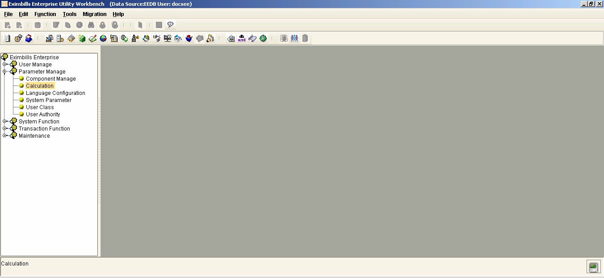{width="4.840277777777778in” height="2.231 | | 9444444444443in”} | | ——————————————————————- | | ——————- | | | | 2. Access the Function Level tab and select the relevant module and | | transaction function. | | | | ——————————————————————- | | ——————- | | {width="4.840277777777778in” height="2.231 | | 9444444444443in”} | | ——————————————————————- | | ——————- | | | | 3. In the Field’s Method sub-tab, select the relevant field of the | | lookup button. | | | | ——————————————————————- | | ——————- | | {width="4.840277777777778in” height="2.231 | | 9444444444443in”} | | ——————————————————————- | | ——————- | | | | 4. Click on the Add button in the toolbar to create a field-level | | calculation rule for the onClick event of the target field | | APPL_ID_BTN and save the settings. | | | | ——————————————————————- | | ——————- | | {width="4.847916666666666in” height="2.231 | | 9444444444443in”} | | ——————————————————————- | | ——————- | | | | [NOTE:]{.underline} | | | | For more information on the Calculation function, refer to Chapter | | Nine: Calculation Rules. | +———————————————————————–+
Get CUBK Methods
Once a source record is selected from the lookup window, its details are automatically populated into the fields in the transaction screen. This Screen field must be the same as the Target key field defined in the Get CUBK rule. The mapping of data from the source record to the destination fields in the transaction screen is based on the Get CUBK rule defined in the EE Utility and set up through the Get CUBK method.
The following Get CUBK methods can be used:
DV.SYS_getCUBK(String,String)
Parameters:
- String 1: This is the Get CUBK mapping rule name.
**[NOTE:
]{.underline}**Only Get CUBK rules with By Key Field settings only or with both By Key Field and By Query Condition settings can be used in this method.
If the Get CUBK rule has both By Key Field and By Query Condition settings, the key field mapping is used for data retrieval.
- String 2: This is the key field name of the Get CUBK rule.
DV.SYS_getCUBK(String mappingName, String keyFieldName)
Parameters:
-
String mappingName: This is the Get CUBK mapping rule name.
**[NOTE:
]{.underline}**Only Get CUBK rules with By Key Field settings only or with both By Key Field and By Query Condition settings can be used in this method.
If the Get CUBK rule has both By Key Field and By Query Condition settings, the key field mapping is used for data retrieval. -
String keyFieldName: This is the key field name of the Get CUBK rule.
SYS_GetCUBK_S(sCUBKMappingName, sfKeyFldName, notshowError)
Parameters:
-
sCUBKMappingName: This is the Get CUBK mapping rule name. This parameter is mandatory.
**[NOTE:
]{.underline}**Only Get CUBK rules with By Key Field settings only or with both By Key Field and By Query Condition settings can be used in this method.
If the Get CUBK rule has both By Key Field and By Query Condition settings, the key field mapping is used for data retrieval. -
sfKeyFldName: This is the key field name of the Get CUBK rule. This parameter is mandatory.
-
notshowError: This indicates whether or not an error message is to be shown if the operation fails. This may have a true or false value. If the value is false, the system displays an error message. Otherwise, no error is prompted.
SYS_GetCUBK(sCUBKMappingName, sfKeyFldName, sSucJsFuncName, sFailJsFuncName, notshowError)
Parameters:
- sCUBKMappingName: This is the Get CUBK mapping rule name. This
parameter is mandatory.
**[NOTE:
]{.underline}**Only Get CUBK rules with By Key Field settings only or with both By Key Field and By Query Condition settings can be used in this method.
If the Get CUBK rule has both By Key Field and By Query Condition settings, the key field mapping is used for data retrieval.
-
sfKeyFldName: This is the key field name of the Get CUBK rule. This parameter is mandatory.
-
sSucJsFuncName: This is the JS function to be called if the retrieval is successful. This parameter is optional.
-
sFailJsFuncName: This is the JS function to be called if the retrieval fails. This parameter is optional.
-
notshowError: This indicates whether or not an error message is to be shown if the operation fails. This may have a true or false value. If the value is false, the system displays an error message. Otherwise, no error is prompted.
-
fromEle: This is used to identify which field the system retrieves or returns the CUBK setting, if one field is used two or more times in a transaction screen. For example, two ASSG1_ID_CUST fields are displayed in the transaction screen. The value in the fromEle parameter must be specified if the CUBK details for the first and second ASSG1_ID_CUST fields are retrieved from different tables.
SYS_GetTableDataByRule (ruleName, conditionSeq, sSucJsFuncName, sFailJsFuncName, notshowError, isMulti)
Parameters:
- ruleName: This indicates the name of the Get CUBK rule with SQL
condition. This parameter is mandatory.
**[NOTE:
]{.underline}**Only Get CUBK rules with By Query Condition settings only or with both By Key Field and By Query Condition settings can be used in this method.
If the Get CUBK rule has both By Key Field and By Query Condition settings, the SQL condition setting is used for data retrieval.
-
conditionSeq: This indicates the condition number - configured in the Get CUBK rule wit SQL condition - of the SQL condition to be applied. This parameter is optional and its value must be an integer. If the value of this parameter is not set, the first condition is used.
-
sSucJsFuncName: This is the JS function to be called if the retrieval is successful. This parameter is optional.
-
sFailJsFuncName: This is the JS function to be called if the retrieval fails. This parameter is optional.
-
notShowError: This indicates whether or not an error message is to be shown if the operation fails. This may have a Y or N value. If the value is N or empty, the system displays an error message. Otherwise, no error is prompted. This parameter is optional.
-
IsMulti: This is used when searching for multiple records. This parameter may have one of the following values:
-
true, yes, y, YES, Y, in which all searched values are stored as an array in the SYS_MULTI_DATA (system-defined variable) for further use.
-
False, in which the first record is always used in the search information. This is the default value.
-
SYS_ GetTableDataByRule_S(ruleName, conditionSeq, notshowError, isMulti)
Parameters:
- ruleName: This indicates the name of the Get CUBK rule with SQL
condition. This parameter is mandatory.
**[NOTE:
]{.underline}**Only Get CUBK rules with By Query Condition settings only or with both By Key Field and By Query Condition settings can be used in this method.
If the Get CUBK rule has both By Key Field and By Query Condition settings, the SQL condition setting is used for data retrieval.
-
conditionSeq: This indicates the condition number - configured in the Get CUBK rule wit SQL condition - of the SQL condition to be applied. This parameter is optional and its value must be an integer. If the value of this parameter is not set, the first condition is used.
-
notShowError: This indicates whether or not an error message is to be shown if the operation fails. This may have a Y or N value. If the value is N or empty, the system displays an error message. Otherwise, no error is prompted. This parameter is optional.
-
IsMulti: This is used when searching for multiple records. This parameter may have one of the following values:
-
true, yes, y, YES, Y, in which all searched values are stored as an array in the SYS_MULTI_DATA (system-defined variable) for further use.
-
False, in which the first record is always used in the search information. This is the default value.
-
+———————————————————————–+ | Using the Calculation Function for the Target Fields | | | | An alternative and more commonly used way of populating the fields in | | the transaction screen with the values in the source record (as | | defined through the Get CUBK rule) is through the Calculation | | function of the EE Utility. | | | | The Get CUBK method must be defined for the relevant function-level | | calculation rule. This must then be associated with the onChange | | event of the key field. | | | | 1. Run the Calculation function from the Parameter Manage group. | | | | ——————————————————————- | | ——————- | | {width="4.847916666666666in” height="2.231 | | 9444444444443in”} | | ——————————————————————- | | ——————- | | | | 2. Access the Function Level tab and select the relevant module. | | | | {width="4.847916666666666in” | | height="2.2319444444444443in”} | | | | 3. Select the relevant transaction function and create a | | function-level calculation rule. | | | | ——————————————————————- | | ——————- | | {width="4.847916666666666in” height="2.231 | | 9444444444443in”} | | ——————————————————————- | | ——————- | | | | ——————————————————————- | | ——– | | {width="4.65625in” height="2.1201388888888 | | 89in”} | | ——————————————————————- | | ——– | | | | 4. Within the same function-level run, create a field-level | | calculation rule for the onChange event of the target field | | APPL_ID. | | | | ——————————————————————- | | ——————- | | {width="4.847916666666666in” height="2.231 | | 9444444444443in”} | | ——————————————————————- | | ——————- | | | | [NOTE:]{.underline} | | | | For more information on the Calculation function, refer to Chapter | | Nine: Calculation Rules. | +———————————————————————–+
+———————————————————————–+ | Selecting DO Tables in GET CUBK | | | | To select DO Tables in GET CUBK, perform the following procedures: | | | | 1. The relevant DO tables are displayed in the Data Dictionary tab | | of the DB Dictionary window. In this example, the | | AdviceForBankCust, which is a TDO with a table name of | | ADV_BANK_CUST, is used. | | | | ——————————————————————- | | —————— | | {width="4.879861111111111in” height="2.327 | | 777777777778in”} | | ——————————————————————- | | —————— | | | | 2. Run the GETCUBK function. In the Table Info tab, right-click and | | select the Add option from the popup menu. Select the DO table in | | the Config Table Info window and click on the Save button to | | store the settings. | | | | ——————————————————————- | | ——————- | | {width="4.840277777777778in” height="2.311 | | 8055555555554in”} | | ——————————————————————- | | ——————- | | | | 3. Select the relevant record under the Mapping Info sub-tab of the | | Get Data tab to enable the Detail sub-tab. | | | | ——————————————————————- | | ——————- | | {width="4.840277777777778in” height="2.311 | | 8055555555554in”} | | ——————————————————————- | | ——————- | | | | 4. In the Detail sub-tab, modify the relevant record. The DO table | | is displayed in the EXIMTRX schema node and is then available for | | mapping. | | | | ——————————————————————- | | —- | | {width="4.591666666666667in” height="3.4in | | “} | | ——————————————————————- | | —- | +———————————————————————–+
Clauses
Clauses pertain to descriptions, details, narratives, or message contents that are commonly or frequently used in the transactions. These clauses may be predefined in the system to avoid the manual input of long phrases at runtime processing. Most of the large text fields are provided with a Clause button that allows the user to select the relevant predefined clauses instead of manually entering the data.
This functionality is configured through the settings of the following:
-
Clause templates: These store the clauses that may be retrieved at runtime.
-
Transaction screen: The relevant code must be added for the transaction or extension field that receives the clause and the Clause button that, when clicked, displays the Insert Clause window from which the relevant clauses can be selected.
EXAMPLE
+———————–+———————–+———————–+ | 1. Click on the | | {width="3.5in” | | corresponds to the | | height="0.87708333333 | | relevant field in | | 33333in”} | | the transaction | | | | screen. | | | | | | | | **[NOTE:]{.underline} | | | | ** | | | | | | | | The clause button is | | | | enabled for use only | | | | if the corresponding | | | | field is not | | | | protected. | | | +———————–+———————–+———————–+ | | | | +———————–+———————–+———————–+ | 2. The Insert | | {width="3.5in” | | displayed. | | height="1.77726487314 | | | | 08573in”} | | Use the fields, | | | | lists, and buttons | | | | provided to choose | | | | the clause or clauses | | | | relevant to the | | | | transaction field or | | | | extension field. | | | +———————–+———————–+———————–+ | | | | +———————–+———————–+———————–+ | 3. The selected | | {width="3.5in” | | automatically | | height="0.88055555555 | | entered in the | | 55555in”} | | transaction or | | | | extension field. | | | | Additional | | | | information can be | | | | manually inserted | | | | into the field. | | | +———————–+———————–+———————–+
{#section-40 .CS-head2}
Clause Settings in the EE Utility
A clause template pertains to specific clause content. A transaction field may retrieve or use one or several clause templates.
There are two ways by which a clause template can be defined:
-
Through the Clause function of the EE Utility: The clause templates and their corresponding content are directly defined in this function.
-
Through the EE Standing Data module: A transaction field is first set as a clause field in the Clause function of the EE Utility. The clause templates for this clause field are then defined through the Standing Data module.
In both cases, the clause templates are retrieved from the Insert Clause window.
{width="0.33611111111111114in”
height="0.33611111111111114in”}NOTE: A transaction field may contain
both types of clause templates.
System Clause Templates
The content of a system clause template is defined through the Clause function of the EE Utility.
{width="0.33611111111111114in”
height="0.33611111111111114in”}NOTE:
i. When both module level and system level settings are configured for the same system clause field using different clause names, both these settings must be displayed on the EE browser.
ii. When both module level and system level settings are configured for the same system clause field using the same clause name, only the module level system clause name must be displayed on the EE browser.
[]{#_Toc295484415 .anchor}
Configuration
The following details are required in the Clause Template window when defining a system clause template.
Figure 10. Clause Template Window
Field Field Description
+———————–+———————–+———————–+ | Clause Name | | Specify a name for | | | | the clause template. | +———————–+———————–+———————–+ | | | | +———————–+———————–+———————–+ | Clause | | Provide a description | | Description | | for the clause | | | | template. | | | | | | | | This is the actual | | | | clause setting that | | | | is listed in the | | | | Insert Clause window | | | | during transaction | | | | processing. | +———————–+———————–+———————–+ | | | | +———————–+———————–+———————–+
+———————–+———————–+———————–+ | (Field List) | | This displays all the | | | | transaction and | | | | extension fields of | | | | the related module. | | | | | | | | Double-click on a | | | | field to use it in | | | | composing the content | | | | of the clause | | | | template. At runtime | | | | processing, the value | | | | of this field is | | | | mapped to the content | | | | of the clause | | | | template. | +———————–+———————–+———————–+ | | | | +———————–+———————–+———————–+ | (Editing | | Use this section to | | Section) | | compose the content | | | | of the clause | | | | template. | +———————–+———————–+———————–+
[]{#_Toc18063113 .anchor}Procedure
Configuring a system clause template setting involves the following steps:
-
Creating the system clause template: This includes defining the name
and composing the content of the system clause template.
-
Assigning the system clause template to the transaction or extension
field: This pertains to designating the transaction or extension fields that may retrieve or use the system clause template.
To Create the System Clause Template
+———————–+———————–+———————–+ | 1. Run the Clause | | {width="3.5in” | | Transaction | | height="2.06111111111 | | Function group. | | 1111in”} | +———————–+———————–+———————–+ | | | | +———————–+———————–+———————–+ | 2. The Clause | | {width="3.5in” | | displayed. The | | height="2.06111111111 | | Clause Template, | | 1111in”} | | System Clause | | | | Field, and Standing | | | | Clause Field tabs, | | | | as well as a list | | | | of all available | | | | modules, are | | | | provided. | | | | | | | | Select the module for | | | | which the system | | | | clause template is to | | | | be defined. | | | +———————–+———————–+———————–+ | | | | +———————–+———————–+———————–+ | 3. Right-click on | | {width="3.5in” | | section of the | | height="2.06111111111 | | Clause Template | | 1111in”} | | tab. Select the Add | | | | option from the | | | | popup menu. | | | +———————–+———————–+———————–+ | | | | +———————–+———————–+———————–+ | 4. The Clause | | {width="3.5in” | | displayed. | | height="2.06111111111 | | | | 1111in”} | | Define the required | | | | information and then | | | | save the setting. | | | +———————–+———————–+———————–+ | | | | +———————–+———————–+———————–+ | 5. A confirmation | | {width="3.5in” | | displayed. Click on | | height="2.06111111111 | | the OK button. | | 1111in”} | +———————–+———————–+———————–+ | | | | +———————–+———————–+———————–+ | 6. The newly | | {width="3.5in” | | clause template is | | height="2.06111111111 | | listed in the | | 1111in”} | | Clause Template | | | | tab. | | | | | | | | Select it to display | | | | its content in the | | | | Clause section. | | | | | | | | [NOTE: | | | | ]{.underline} | | | | | | | | Use the arrow buttons | | | | to show or hide the | | | | content of the | | | | selected system | | | | clause template. | | | +———————–+———————–+———————–+ | | | | +———————–+———————–+———————–+ | [XML | | {width="3.5in” | | ne} | | height="2.06111111111 | | | | 1111in”} | | Run the XML Generator | | | | function and generate | | | | the XML files for the | | | | Clause parameter. | | | | | | | | Make sure to select | | | | the name of the | | | | system clause | | | | template in the | | | | Clause Template tab | | | | of the XML Generator | | | | – Clause window. | | | +———————–+———————–+———————–+ | | | | +———————–+———————–+———————–+ | The clause_[Clause | | {width="3.5in” | | generated in the | | height="2.06111111111 | | following paths: | | 1111in”} | | | | | | - [Parameter | | | | Drive]\[Bank | | | | group]\[Countr | | | | y]\AP\CLAUSE | | | | | | | | - [Parameter | | | | Drive]\[Bank | | | | group]\[Countr | | | | y]\AP\CLAUSE | | | | | | | | The file includes the | | | | Module details and | | | | the Clause Id, name | | | | and description. | | | +———————–+———————–+———————–+
To Assign a System Clause Template to the Transaction or Extension Field
+———————–+———————–+———————–+ | 1. In the Clause | | {width="3.5in” | | access the relevant | | height="2.06111111111 | | module and the | | 1111in”} | | System Clause Field | | | | tab. | | | +———————–+———————–+———————–+ | | | | +———————–+———————–+———————–+ | 2. Right-click on | | {width="3.5in” | | Field tab and click | | height="2.06111111111 | | on the Add option | | 1111in”} | | in the popup menu. | | | +———————–+———————–+———————–+ | | | | +———————–+———————–+———————–+ | 3. The Clause Field | | {width="3.5in” | | displayed. | | height="2.06111111111 | | | | 1111in”} | | The leftmost section | | | | lists all the | | | | transaction fields | | | | from the related | | | | module. Select the | | | | field that may use | | | | the system clause | | | | template during | | | | transaction | | | | processing. Hold the | | | | CTRL key to select | | | | more than one field. | | | +———————–+———————–+———————–+ | | | | +———————–+———————–+———————–+ | 4. The middle | | {width="3.5in” | | Clause Field window | | height="2.06111111111 | | lists all the | | 1111in”} | | system clause | | | | templates that are | | | | defined for the | | | | related module. | | | | Select a system | | | | clause template to | | | | assign to the | | | | selected fields by | | | | clicking on the | | | | forward button. | | | | Hold the CTRL key | | | | to select multiple | | | | clause templates. | | | | | | | | Use the buttons | | | | provided to select | | | | and deselect system | | | | clause templates. | | | | Save the setting. | | | | | | | | **[NOTE:]{.underline} | | | | ** | | | | | | | | The Down and Up | | | | buttons can be used | | | | to arrange the order | | | | of selected system | | | | clause templates in | | | | the list. | | | +———————–+———————–+———————–+ | | | | +———————–+———————–+———————–+ | 5. A confirmation | | {width="3.5in” | | displayed. Click on | | height="2.06111111111 | | the OK button. | | 1111in”} | +———————–+———————–+———————–+ | | | | +———————–+———————–+———————–+ | 5. The newly | | {width="3.5in” | | clause template | | height="2.06111111111 | | assignment is shown | | 1111in”} | | in the System | | | | Clause Field tab. | | | | | | | | Select the field name | | | | to display its | | | | assigned system | | | | clause templates. | | | | | | | | [NOTE: | | | | ]{.underline} | | | | | | | | Use the arrow buttons | | | | to show or hide the | | | | system clause | | | | template name. | | | +———————–+———————–+———————–+ | | | | +———————–+———————–+———————–+ | [XML | | {width="3.5in” | | ne} | | height="2.06111111111 | | | | 1111in”} | | Run the XML Generator | | | | function and generate | | | | the XML files for the | | | | Clause parameter. | | | | | | | | Make sure to select | | | | the name of the field | | | | in the System Clause | | | | Field tab of the XML | | | | Generator – Clause | | | | window. | | | +———————–+———————–+———————–+ | | | | +———————–+———————–+———————–+ | The | | {width="3.5in” | | Field].xml file is | | height="2.06111111111 | | generated in the | | 1111in”} | | following paths: | | | | | | | | - [Parameter | | | | Drive]\[Bank | | | | group]\[Countr | | | | y]\AP\CLAUSE | | | | | | | | - [Parameter | | | | Drive]\[Bank | | | | group]\[Countr | | | | y]\AP\CLAUSE | | | | | | | | This file includes | | | | information on the | | | | Module details and | | | | the Clause Id, name | | | | and description. | | | +———————–+———————–+———————–+
{width="0.3333333333333333in”
height="0.3333333333333333in”}NOTE: When there is an existing system
clause template assignment for a field, the preceding procedure cannot
be used to assign more clause templates to the same field. Doing so
prompts an error message.
{width="4.291674321959755in” height="2.5277777777777777in”}
To add more clause templates to a field with an existing clause template assignment, select it on the System Clause Field tab and click on the Edit button on the toolbar. Make the necessary changes on the Clause Field window and save the settings.
#######
Standing Clause Fields
Defining the content of a standing clause field involves the following procedures:
-
Setting a transaction field or extension field as a clause field
-
Creating the clause templates for the clause field in the EE Standing Data module
[]{#_Toc18063115 .anchor}EE Utility Settings
When a transaction field is set as a clause field, its (clause template) contents are configured through the Clause Maintenance functions of the Standing Data module.
To set a transaction field as a clause field:
Do the following . . .
+———————–+———————–+———————–+ | 1. Run the Clause | | {width="3.5in” | | Transaction | | height="2.06111111111 | | Function group. | | 1111in”} | +———————–+———————–+———————–+ | | | | +———————–+———————–+———————–+ | 2. The Clause | | {width="3.5in” | | displayed. The | | height="2.06111111111 | | Clause Template, | | 1111in”} | | System Clause | | | | Field, and Standing | | | | Clause Field tabs, | | | | as well as a list | | | | of all available | | | | modules, are | | | | provided. | | | | | | | | Select the module for | | | | which the clause | | | | field is to be | | | | defined and access | | | | the Standing Clause | | | | Field tab. | | | +———————–+———————–+———————–+ | | | | +———————–+———————–+———————–+ | 3. Right-click on | | {width="3.5in” | | section and select | | height="2.06111111111 | | the Edit option | | 1111in”} | | from the popup | | | | menu. | | | +———————–+———————–+———————–+ | | | | +———————–+———————–+———————–+ | 4. The Clause | | {width="3.5in” | | is displayed. | | height="2.06111111111 | | | | 1111in”} | | The left section | | | | lists all the | | | | transaction or | | | | extension fields from | | | | the related module. | | | | Use the list and | | | | selection buttons to | | | | choose the fields | | | | that are to be | | | | defined as clause | | | | fields. | | | | | | | | [NOTE: | | | | ]{.underline} | | | | | | | | Two options are | | | | provided to filter | | | | the list of fields | | | | displayed on the left | | | | section. | | | | | | | | Selecting the | | | | Transaction Field | | | | option lists all | | | | transaction fields | | | | only. | | | | | | | | Selecting the | | | | Extension Field | | | | options lists all | | | | extension fields | | | | only. | | | | | | | | Click on the Save | | | | button when done. | | | +———————–+———————–+———————–+ | | | | +———————–+———————–+———————–+ | 5. A confirmation | | {width="3.5in” | | displayed. Click on | | height="2.06111111111 | | the OK button. | | 1111in”} | +———————–+———————–+———————–+ | | | | +———————–+———————–+———————–+ | 6. The newly set | | {width="3.5in” | | listed in the | | height="2.06111111111 | | Standing Clause | | 1111in”} | | Field tab. | | | +———————–+———————–+———————–+ | | | | +———————–+———————–+———————–+ | [XML | | {width="3.5in” | | ne} | | height="2.06111111111 | | | | 1111in”} | | Run the XML Generator | | | | function and generate | | | | the XML files for the | | | | Clause parameter. | | | | | | | | Make sure to select | | | | the name of the | | | | related module in the | | | | Standing Clause Field | | | | tab of the XML | | | | Generator – Clause | | | | window. | | | +———————–+———————–+———————–+ | | | | +———————–+———————–+———————–+ | The | | {width="3.5in” | | le].xml | | height="2.06111111111 | | file is generated in | | 1111in”} | | the following paths: | | | | | | | | - [Parameter | | | | Drive]\[Bank | | | | group]\[Countr | | | | y]\AP\CLAUSE | | | | | | | | - [Parameter | | | | Drive]\[Bank | | | | group]\[Countr | | | | y]\AP\CLAUSE | | | | | | | | This file includes | | | | information on the | | | | field description and | | | | size. | | | +———————–+———————–+———————–+
#########
[]{#_Toc18063116 .anchor}Standing Data Module Settings
The clause templates for a clause field are defined through the Clause Maintenance functions of the EE Standing Data module.
The following details are required when defining the settings of a clause template for a clause field in the Standing Data module.
Figure 10. Standing Data Module: Add Clause Function
Field Field Description
+———————–+———————–+———————–+ | Bank Group ID | | This indicates the | | | | bank group of the | | | | logged user. | +———————–+———————–+———————–+ | | | | +———————–+———————–+———————–+ | Country Code | | This indicates the | | | | country code of the | | | | logged user. | +———————–+———————–+———————–+ | | | | +———————–+———————–+———————–+ | Process Center Unit | | This indicates the | | Code | | business unit code. | +———————–+———————–+———————–+ | | | | +———————–+———————–+———————–+ | Branch Unit Code | | This indicates the | | | | branch unit code to | | | | which the clause is | | | | to be made available. | +———————–+———————–+———————–+ | | | | +———————–+———————–+———————–+ | Branch Country | | This indicates the | | Code | | branch country code | | | | to which the clause | | | | is to be made | | | | available. | +———————–+———————–+———————–+ | | | | +———————–+———————–+———————–+ | Module | | Select the module for | | | | which the standing | | | | clause template is to | | | | be defined. | +———————–+———————–+———————–+ | | | | +———————–+———————–+———————–+ | Clause Name | | Specify a name for | | | | the clause template. | +———————–+———————–+———————–+ | | | | +———————–+———————–+———————–+ | Clause Field | | Select the clause | | | | field for which the | | | | clause template is to | | | | be defined. | | | | | | | | The available clause | | | | fields in the | | | | dropdown list are the | | | | clause fields defined | | | | for the selected | | | | module. | +———————–+———————–+———————–+ | | | | +———————–+———————–+———————–+ | Clause | | Provide a description | | Description | | for the clause | | | | template. | | | | | | | | This is the actual | | | | clause setting that | | | | is listed in the | | | | Insert Clause window | | | | during transaction | | | | processing. | +———————–+———————–+———————–+ | | | | +———————–+———————–+———————–+ | Created By | | This indicates the | | | | currently logged | | | | user. | +———————–+———————–+———————–+ | | | | +———————–+———————–+———————–+ | Clause Content | | Compose the content | | | | of the clause | | | | template. | +———————–+———————–+———————–+
To add a standing clause template:
Do the following . . .
+———————–+———————–+———————–+ | 1. Run the | | {width="3.5in” | | Standing Data > | | height="1.94236111111 | | Clause Maintenance | | 11112in”} | | > Add Clause | | | | | | | | [NOTE: | | | | ]{.underline} | | | | | | | | To modify an existing | | | | Clause setting, run | | | | the Edit Clause | | | | function instead. | | | +———————–+———————–+———————–+ | | | | +———————–+———————–+———————–+ | 2. The Add Clause | | {width="3.5in” | | displayed. | | height="1.94236111111 | | | | 11112in”} | | Define the required | | | | information, and | | | | confirm the setting. | | | +———————–+———————–+———————–+ | | | | +———————–+———————–+———————–+ | **[NOTE:]{.underline} | | {width="3.5in” | | | | height="1.94236111111 | | Release this Clause | | 11112in”} | | setting through the | | | | Release Clause | | | | function. | | | +———————–+———————–+———————–+
{#section-43 .CS-head2}
Clause Settings in the Transaction Screen
A Clause button must be created for the transaction or extension field that is to receive the content of one or more clause templates. When clicked, this button displays the Insert Clause window from which the clause templates can be selected and their values populated on to the corresponding transaction field.
The SYS_InsertClause method is used for enabling this Clause button functionality. Add the following code to the Clause button in the transaction screen (JSP or LBI):
(Start of Code) <input type="button” name="ClauseBtn” value="Clause” onClick="javascript:SYS_InsertClause(‘Field Name’)"> (End of Code)
In this code, Field Name pertains to either:
- System clause template, for clause templates which contents are defined in the Clause function of the EE Utility
- Clause field, which is set in the Clause function of the EE Utility but which clause templates are created through the Clause Maintenance functions of the EE Standing Data module.
Figure 10. JSP Codes to Add a Clause Button
+———————————————————————–+ | Using the Calculation Function for the Clause Button | | | | An alternative and more commonly used way of populating the field in | | the transaction screen with the content of a clause template is | | through the Calculation function of the EE Utility. | | | | The following codes for the SYS_InsertClause method must be | | associated with the onClick event of the Clause button: | | SYS_InsertClause(‘Field Name’) | | | | [Procedure]{.underline} | | | | 1. Run the Calculation function from the Parameter Manage group. | | | | ——————————————————————- | | —- | | {width="4.840277777777778in” height="2.2in | | “} | | ——————————————————————- | | —- | | | | 2. Access the Function Level tab and select the relevant module and | | function. | | | | ——————————————————————- | | —- | | {width="4.840277777777778in” height="2.2in | | “} | | ——————————————————————- | | —- | | | | 3. Create a field-level calculation rule for the onClick event of | | > the clause button (e.g., DOC_REQ_BUTTON). When using the | | > SYS_InsertClause method, the field name must be manually | | > specified. | | | | > [EXAMPLE:]{.underline} | | > | | > SYS_InsertClause(‘DOCREQ’); | | | | ——————————————————————- | | ——————- | | {width="4.768055555555556in” height="2.168 | | 0555555555556in”} | | {width="4.847916666666666in” height="2.656 | | 25in”} | | ——————————————————————- | | ——————- | | | | [NOTE:]{.underline} | | | | These settings may also be defined through the Calculation function | | of the EE Utility. Refer also to Chapter Nine: Calculation | | Rules. | +———————————————————————–+
Amount/Rate Format
The Amount/Rate Format function is used to define the relationship of amount fields and rate fields with currency fields. Through this function the amount and rate fields are mapped with the relevant currency fields. Consequently, the currency properties are applied to the associated amount and rate fields.
Through the amount-currency and rate-currency association (mapping), the format settings that correspond to a currency’s default settings – such as decimal separators and integer separators – are applied to the value of the mapped amount fields and rate fields in a transaction.
This function processes Amount-, Rate-, and CCY- type fields only. All Amount and Rate fields must be associated to a Currency field.
Formatting amount and rate fields can be performed on the system-, module-, or function-level. Additionally, the actual association between an amount or rate field and a currency field can be done either by module or by table.
{width="0.33611111111111114in”
height="0.33611111111111114in”} NOTE:
i. Currencies may be arranged according to priority (e.g., EUR – USD - JPY – and then the rest in alphabetical order). This is configured by adding the I_ORDER_PRIORITY system field into the STD_CURRENCY and STT_CURRENCY tables. The added field is displayed in the Currency Maintenance function where the order of priority of each currency is to be set.
ii. If format settings are defined in more than one levels, the function-level settings are prioritized and applied. Module-level settings come second. System-level settings are applied if neither function- nor module-level format settings are defined.
System-Level Format Settings
In this type of Amount/Rate format setting, the currency field association is carried out for the amount fields and rate fields of all modules and functions across the system.
Do the following . . .
+———————–+———————–+———————–+ | 1. Run the | | {width=” | | Function from the | | 3.4902777777777776in” | | Transaction | | height="2.68888888888 | | Function Group. | | 8889in”} | +———————–+———————–+———————–+ | | | | +———————–+———————–+———————–+ | 2. In the | | {width=” | | function window, | | 3.4902777777777776in” | | select System. | | height="2.68888888888 | | | | 8889in”} | +———————–+———————–+———————–+ | | | | +———————–+———————–+———————–+ | 3. Right-click on | | {width=” | | section, and select | | 3.4902777777777776in” | | the Edit option | | height="2.68888888888 | | from the popup | | 8889in”} | | menu. | | | +———————–+———————–+———————–+ | | | | +———————–+———————–+———————–+ | 4. The Amount | | {width=” | | Step 1 window is | | 3.5in” | | displayed. | | height="2.91527777777 | | | | 7778in”} | | Click on the forward | | | | button to continue to | | | | the next step of the | | | | configuration. | | | +———————–+———————–+———————–+ | | | | +———————–+———————–+———————–+ | 5. The Amount | | {width=” | | Step 2 window is | | 3.5in” | | displayed. | | height="2.91527777777 | | | | 7778in”} | | The Amount Field | | | | column displays all | | | | the amount fields in | | | | the system. | | | | | | | | Select an amount | | | | field, and click on | | | | the Set button. | | | +———————–+———————–+———————–+ | | | | +———————–+———————–+———————–+ | 6. The Currency | | {width=” | | displayed. Choose | | 3.5in” | | the relevant | | height="2.91527777777 | | currency field from | | 7778in”} | | the dropdown list, | | | | and click on the | | | | Apply button. | | | | | | | | [NOTE: | | | | ]{.underline} | | | | | | | | The dropdown list | | | | contains all the | | | | currency fields in | | | | the system, the local | | | | currency, as well as | | | | the following system | | | | variables: | | | | | | | | - SYS_LCY | | | | | | | | - SYS_LCY_2ND | | | | | | | | - SYS_LOCAL_CCY | | | | | | | | All these fields are | | | | EE fields which are | | | | defined in the Data | | | | Dictionary function. | | | +———————–+———————–+———————–+ | | | | +———————–+———————–+———————–+ | 7. The selected | | {width=” | | becomes the | | 3.5in” | | associated currency | | height="2.91527777777 | | field of the | | 7778in”} | | selected amount | | | | field. | | | | | | | | Specify the currency | | | | fields for the other | | | | amount fields, then | | | | click on the forward | | | | button to continue to | | | | the next step of the | | | | configuration. | | | +———————–+———————–+———————–+ | | | | +———————–+———————–+———————–+ | 8. The Amount | | {width=” | | Step 3 window is | | 3.5in” | | displayed. | | height="2.91527777777 | | | | 7778in”} | | The Rate Field column | | | | displays all the rate | | | | fields of the related | | | | module. | | | | | | | | Select a Rate field | | | | and then click on the | | | | Set button. | | | +———————–+———————–+———————–+ | | | | +———————–+———————–+———————–+ | 9. The Currency | | {width=” | | displayed. Select | | 3.5in” | | the associated | | height="2.91527777777 | | currency field from | | 7778in”} | | the dropdown list | | | | and then click on | | | | the Apply button. | | | | | | | | After specifying the | | | | associated currency | | | | fields, click on the | | | | Save button to store | | | | the configuration. | | | +———————–+———————–+———————–+ | | | | +———————–+———————–+———————–+ | 10. The defined | | {width=” | | for the Amount and | | 3.4902777777777776in” | | Rate fields of the | | height="2.68888888888 | | system are | | 8889in”} | | displayed in the | | | | index of fields on | | | | the Amount/Rate | | | | Format function | | | | window. | | | +———————–+———————–+———————–+ | | | | +———————–+———————–+———————–+ | [XML | | {width=” | | ne} | | 3.4902777777777776in” | | | | height="2.68888888888 | | Run the XML Generator | | 8889in”} | | function and generate | | | | the XML files for the | | | | Amount Rate Format | | | | parameter. | | | | | | | | Make sure to select | | | | SYSTEM in the AmtFmat | | | | Module tab of the XML | | | | Generator – Amount | | | | Format window. | | | +———————–+———————–+———————–+ | | | | +———————–+———————–+———————–+ | The AF_SSSS.xml file | | {width=” | | following paths: | | 3.4902777777777776in” | | | | height="2.68888888888 | | - [Parameter | | 8889in”} | | Drive]\[Bank | | | | group]\[Countr | | | | y]\AP\AMTFMT | | | | | | | | - [Parameter | | | | Drive]\[Bank | | | | group]\[Countr | | | | y]\AP\AMTFMT | | | +———————–+———————–+———————–+
Module-Level Format Settings
On the module-level, amount and rate format settings can be defined either by module or by table.
By Module
In this type of Amount/Rate format setting, the currency field association is carried out for the amount fields and rate fields that are specific to the selected module.
Do the following . . .
+———————–+———————–+———————–+ | 1. Run the | | {width=” | | Function from the | | 3.4902777777777776in” | | Transaction | | height="2.68888888888 | | Function Group. | | 8889in”} | +———————–+———————–+———————–+ | | | | +———————–+———————–+———————–+ | 2. In the | | {width=” | | function window, | | 3.4902777777777776in” | | select the module | | height="2.68888888888 | | for which the | | 8889in”} | | Amount/Rate Format | | | | mappings are to be | | | | defined. | | | +———————–+———————–+———————–+ | | | | +———————–+———————–+———————–+ | 3. Right-click on | | {width=” | | section, and select | | 3.4902777777777776in” | | the Edit option | | height="2.68888888888 | | from the popup | | 8889in”} | | menu. | | | +———————–+———————–+———————–+ | | | | +———————–+———————–+———————–+ | 4. The Amount | | {width=” | | Step 1 window is | | 3.5in” | | displayed. | | height="2.91527777777 | | | | 7778in”} | | Mark the By Module | | | | option and select the | | | | relevant table. | | | | | | | | Click on the forward | | | | button to continue to | | | | the next step of the | | | | configuration. | | | +———————–+———————–+———————–+ | | | | +———————–+———————–+———————–+ | 5. The Amount | | {width=” | | Step 2 window is | | 3.5in” | | displayed. | | height="2.91527777777 | | | | 7778in”} | | The Amount Field | | | | column displays all | | | | the amount fields of | | | | the related module. | | | | | | | | Select an amount | | | | field, and click on | | | | the Set button. | | | +———————–+———————–+———————–+ | | | | +———————–+———————–+———————–+ | 6. The Currency | | {width=” | | displayed. Choose | | 3.5in” | | the relevant | | height="2.91527777777 | | currency field from | | 7778in”} | | the dropdown list, | | | | and click on the | | | | Apply button. | | | | | | | | [NOTE: | | | | ]{.underline} | | | | | | | | The dropdown list | | | | contains all the | | | | currency fields from | | | | the selected module, | | | | the local currency, | | | | as well as the | | | | following system | | | | variables: | | | | | | | | - SYS_LCY | | | | | | | | - SYS_LCY_2ND | | | | | | | | - SYS_LOCAL_CCY | | | | | | | | All these fields are | | | | EE fields which are | | | | defined in the Data | | | | Dictionary function. | | | | In module-level | | | | settings, the system | | | | displays all module | | | | fields with CCY EE | | | | types. | | | +———————–+———————–+———————–+ | | | | +———————–+———————–+———————–+ | 7. The selected | | {width=” | | becomes the | | 3.5in” | | associated currency | | height="2.91527777777 | | field of the | | 7778in”} | | selected amount | | | | field. | | | | | | | | Specify the currency | | | | fields for the other | | | | amount fields, then | | | | click on the forward | | | | button to continue to | | | | the next step of the | | | | configuration. | | | +———————–+———————–+———————–+ | | | | +———————–+———————–+———————–+ | 8. The Amount | | {width=” | | Step 3 window is | | 3.5in” | | displayed. | | height="2.91527777777 | | | | 7778in”} | | The Rate Field column | | | | displays all the rate | | | | fields of the related | | | | module. | | | | | | | | Select a Rate field | | | | and then click on the | | | | Set button. | | | +———————–+———————–+———————–+ | | | | +———————–+———————–+———————–+ | 9. The Currency | | {width=” | | displayed. Select | | 3.5in” | | the associated | | height="2.91527777777 | | currency field from | | 7778in”} | | the dropdown list | | | | and then click on | | | | the Apply button. | | | | | | | | After specifying the | | | | associated currency | | | | fields, click on the | | | | Save button to store | | | | the configuration. | | | +———————–+———————–+———————–+ | | | | +———————–+———————–+———————–+ | 10. The defined | | {width=” | | for the Amount and | | 3.4902777777777776in” | | Rate fields of the | | height="2.68888888888 | | module are | | 8889in”} | | displayed in the | | | | index of fields on | | | | the Amount/Rate | | | | Format window. | | | +———————–+———————–+———————–+ | | | | +———————–+———————–+———————–+ | [XML | | {width=” | | ne} | | 3.4902777777777776in” | | | | height="2.68888888888 | | Run the XML Generator | | 8889in”} | | function and generate | | | | the XML files for the | | | | Amount Rate Format | | | | parameter. | | | | | | | | Make sure to select | | | | the name of the | | | | related module in the | | | | AmtFmat Module tab of | | | | the XML Generator – | | | | Amount Format window. | | | +———————–+———————–+———————–+ | | | | +———————–+———————–+———————–+ | The AF_[Module | | {width=” | | generated in the | | 3.4902777777777776in” | | following paths: | | height="2.68888888888 | | | | 8889in”} | | - [Parameter | | | | Drive]\[Bank | | | | group]\[Countr | | | | y]\AP\AMTFMT | | | | | | | | - [Parameter | | | | Drive]\[Bank | | | | group]\[Countr | | | | y]\AP\ | | | | AMTFMT | | | +———————–+———————–+———————–+
#######
By Table
In this type of Amount/Rate format setting, the currency field association is carried out for the amount fields and rate fields that are specific to a selected table of a module. The amount and rate fields in the selected table are mapped to the available currency fields of the same table.
Do the following . . .
+———————–+———————–+———————–+ | 1. Run the | | {width=” | | function from the | | 3.5097222222222224in” | | Transaction | | height="2.69791666666 | | Function group. | | 66665in”} | +———————–+———————–+———————–+ | | | | +———————–+———————–+———————–+ | 2. In the | | {width=” | | function window, | | 3.5097222222222224in” | | select the module | | height="2.69791666666 | | for which the | | 66665in”} | | Amount/Rate Format | | | | mappings are to be | | | | defined. | | | +———————–+———————–+———————–+ | | | | +———————–+———————–+———————–+ | 3. Right-click on | | {width=” | | section, and select | | 3.5097222222222224in” | | the Edit option | | height="2.69791666666 | | from the popup | | 66665in”} | | menu. | | | +———————–+———————–+———————–+ | | | | +———————–+———————–+———————–+ | 4. The Amount | | {width=” | | Step 1 window is | | 3.5in” | | displayed. | | height="2.89652777777 | | | | 77776in”} | | Mark the By Table | | | | option. | | | | | | | | A list of all the | | | | existing tables in | | | | the database for the | | | | selected module is | | | | displayed. Select the | | | | table for which the | | | | Amount/Rate Format | | | | mappings are to be | | | | defined. | | | | | | | | Click on the forward | | | | button to continue to | | | | the next step of the | | | | configuration. | | | +———————–+———————–+———————–+ | | | | +———————–+———————–+———————–+ | 5. The Amount | | {width=” | | Step 2 window is | | 3.5in” | | displayed. | | height="2.89652777777 | | | | 77776in”} | | The Amount Field | | | | column displays all | | | | the amount fields of | | | | the related module. | | | | | | | | Select an amount | | | | field, and click on | | | | the Set button. | | | +———————–+———————–+———————–+ | | | | +———————–+———————–+———————–+ | 6. The Currency | | {width=” | | displayed. The | | 3.5in” | | dropdown list | | height="2.89652777777 | | contains all the | | 77776in”} | | currency fields | | | | from the selected | | | | module. | | | | | | | | Choose the relevant | | | | currency field from | | | | the dropdown list, | | | | and click on the | | | | Apply button. | | | | | | | | [NOTE: | | | | ]{.underline} | | | | | | | | The dropdown list | | | | contains all the | | | | currency fields from | | | | the selected module, | | | | the local currency, | | | | as well as the | | | | following system | | | | variables: | | | | | | | | - SYS_LCY | | | | | | | | - SYS_LCY_2ND | | | | | | | | - SYS_LOCAL_CCY | | | | | | | | All these fields are | | | | EE fields which are | | | | defined in the Data | | | | Dictionary function. | | | | In module-level | | | | settings, the system | | | | displays all module | | | | fields in the | | | | selected table with | | | | CCY EE types. | | | +———————–+———————–+———————–+ | | | | +———————–+———————–+———————–+ | 7. The selected | | {width=” | | becomes the | | 3.5in” | | associated currency | | height="2.89652777777 | | field of the | | 77776in”} | | selected amount | | | | field. | | | | | | | | Specify the currency | | | | fields for the other | | | | amount fields, and | | | | then click on the | | | | forward button to | | | | continue to the next | | | | step of the | | | | configuration. | | | +———————–+———————–+———————–+ | | | | +———————–+———————–+———————–+ | 8. The Amount | | {width=” | | Step 3 window is | | 3.5in” | | displayed. | | height="2.89652777777 | | | | 77776in”} | | The Rate Field column | | | | displays all the rate | | | | fields of the related | | | | module. | | | | | | | | Select a Rate field | | | | and then click on the | | | | Set button. | | | +———————–+———————–+———————–+ | | | | +———————–+———————–+———————–+ | 9. The Currency | | {width=” | | displayed. Select | | 3.5in” | | the associated | | height="2.89652777777 | | currency field from | | 77776in”} | | the dropdown list | | | | and then click on | | | | the Apply button. | | | | | | | | After specifying the | | | | associated currency | | | | fields, click on the | | | | Save button to store | | | | the configuration. | | | +———————–+———————–+———————–+ | | | | +———————–+———————–+———————–+ | 10. The defined | | {width=” | | for the Amount and | | 3.5097222222222224in” | | Rate fields of the | | height="2.69791666666 | | module are | | 66665in”} | | displayed in the | | | | index of fields on | | | | the Amount/Rate | | | | Format window. | | | +———————–+———————–+———————–+ | | | | +———————–+———————–+———————–+ | [XML | | {width=” | | ne} | | 3.5097222222222224in” | | | | height="2.69791666666 | | Run the XML Generator | | 66665in”} | | function and generate | | | | the XML files for the | | | | Amount Rate Format | | | | parameter. | | | | | | | | Make sure to select | | | | the name of the | | | | related module in the | | | | AmtFmat Module tab of | | | | the XML Generator – | | | | Amount Format window. | | | +———————–+———————–+———————–+ | | | | +———————–+———————–+———————–+ | The AF_[Module | | {width=” | | generated in the | | 3.5097222222222224in” | | following paths: | | height="2.69791666666 | | | | 66665in”} | | - [Parameter | | | | Drive]\[Bank | | | | group]\[Countr | | | | y]\AP\AMTFMT | | | | | | | | - [Parameter | | | | Drive]\[Bank | | | | group]\[Countr | | | | y]\AP\ | | | | AMTFMT | | | +———————–+———————–+———————–+
{#section-45 .CS-head2}
Function-Level Format Settings
In this type of Amount/Rate format setting, the currency field association is carried out for the amount fields and rate fields that are specific to a selected function.
This type of mapping is processed for the selected function of a module. The amount and rate fields in the JSP file that is associated to the selected function are mapped to the available currency fields of the same function.
{width="0.33611111111111114in”
height="0.33611111111111114in”}NOTE: If the amount fields of the JSP
file are not displayed in the Step 2 window, the following SQL statement
may be run to filter the fields whose EE type ids are found in the
ecd_field_info_r table, but are not found in the ecd_ee_type_r
table. The EE type for these fields must then be specified through the
Db Dictionary function.
select * from eximmeta.ecd_field_info_r t1 where
t1.c_ee_type_id not in (select t2.c_ee_type_id from
eximmeta.ecd_ee_type_r t2) and t1.c_ee_type_id > '10000000';
Do the following . . .
+———————–+———————–+———————–+ | 1. Run the | | {width=” | | Function from the | | 3.5097222222222224in” | | Transaction | | height="2.69791666666 | | Function Group. | | 66665in”} | +———————–+———————–+———————–+ | | | | +———————–+———————–+———————–+ | 2. In the | | {width=” | | function window, | | 3.5097222222222224in” | | double-click on the | | height="2.69791666666 | | relevant module and | | 66665in”} | | select the function | | | | for which the | | | | Amount/Rate Format | | | | mappings are to be | | | | defined. | | | +———————–+———————–+———————–+ | | | | +———————–+———————–+———————–+ | 3. Right-click on | | {width=” | | section, and select | | 3.5097222222222224in” | | the Edit option | | height="2.69791666666 | | from the popup | | 66665in”} | | menu. | | | +———————–+———————–+———————–+ | | | | +———————–+———————–+———————–+ | 4. The Amount | | {width=” | | Step 1 window is | | 3.5in” | | displayed. | | height="2.89652777777 | | | | 77776in”} | | The fields in the JSP | | | | file associated to | | | | the selected function | | | | are automatically | | | | populated. | | | | | | | | Click on the forward | | | | button to continue to | | | | the next step of the | | | | configuration. | | | +———————–+———————–+———————–+ | | | | +———————–+———————–+———————–+ | 5. The Amount | | {width=” | | Step 2 window is | | 3.5in” | | displayed. | | height="2.89652777777 | | | | 77776in”} | | The Amount Field | | | | column displays all | | | | the amount fields of | | | | the related module. | | | | | | | | Select an amount | | | | field, and click on | | | | the Set button. | | | +———————–+———————–+———————–+ | | | | +———————–+———————–+———————–+ | 6. The Currency | | {width=” | | displayed. The | | 3.5in” | | dropdown list | | height="2.89652777777 | | contains all the | | 77776in”} | | currency fields | | | | from the selected | | | | module. | | | | | | | | Choose the relevant | | | | currency field from | | | | the dropdown list, | | | | and click on the | | | | Apply button. | | | | | | | | [NOTE: | | | | ]{.underline} | | | | | | | | The dropdown list | | | | contains all the | | | | currency fields from | | | | the selected module, | | | | the local currency, | | | | as well as the | | | | following system | | | | variables: | | | | | | | | - SYS_LCY | | | | | | | | - SYS_LCY_2^ND^ | | | | | | | | - SYS_LOCAL_CCY | | | | | | | | All these fields are | | | | EE fields which are | | | | defined in the Data | | | | Dictionary function. | | | | In function-level | | | | settings, the system | | | | displays the function | | | | or the DO’s JSP | | | | fields with CCY EE | | | | types. | | | +———————–+———————–+———————–+ | | | | +———————–+———————–+———————–+ | 7. The selected | | {width=” | | becomes the | | 3.5in” | | associated currency | | height="2.89652777777 | | field of the | | 77776in”} | | selected amount | | | | field. | | | | | | | | Specify the currency | | | | fields for the other | | | | amount fields, and | | | | then click on the | | | | forward button to | | | | continue to the next | | | | step of the | | | | configuration. | | | +———————–+———————–+———————–+ | | | | +———————–+———————–+———————–+ | 8. The Amount | | {width=” | | Step 3 window is | | 3.5in” | | displayed. | | height="2.89652777777 | | | | 77776in”} | | The Rate Field column | | | | displays all the rate | | | | fields of the related | | | | module. | | | | | | | | Select a Rate field | | | | and then click on the | | | | Set button. | | | +———————–+———————–+———————–+ | | | | +———————–+———————–+———————–+ | 9. The Currency | | {width=” | | displayed. Select | | 3.5in” | | the associated | | height="2.89652777777 | | currency field from | | 77776in”} | | the dropdown list | | | | and then click on | | | | the Apply button. | | | | | | | | After specifying the | | | | associated currency | | | | fields, click on the | | | | Save button to store | | | | the configuration. | | | +———————–+———————–+———————–+ | | | | +———————–+———————–+———————–+ | 10. The defined | | {width=” | | for the Amount and | | 3.5097222222222224in” | | Rate fields of the | | height="2.69791666666 | | module are | | 66665in”} | | displayed in the | | | | index of fields on | | | | the Amount/Rate | | | | Format window. | | | +———————–+———————–+———————–+ | | | | +———————–+———————–+———————–+ | [XML | | {width=” | | ne} | | 3.5097222222222224in” | | | | height="2.69791666666 | | Run the XML Generator | | 66665in”} | | function and generate | | | | the XML files for the | | | | Amount Rate Format | | | | parameter. | | | | | | | | Make sure to select | | | | the name of the | | | | related function in | | | | the AmtFmat Function | | | | tab of the XML | | | | Generator – Amount | | | | Format window. | | | +———————–+———————–+———————–+ | | | | +———————–+———————–+———————–+ | The AF_[Function | | {width=” | | generated in the | | 3.5097222222222224in” | | following paths: | | height="2.69791666666 | | | | 66665in”} | | - [Parameter | | | | Drive]\[Bank | | | | group]\[Countr | | | | y]\AP\AMTFMT | | | | | | | | - [Parameter | | | | Drive]\[Bank | | | | group]\[Countr | | | | y]\AP\ | | | | AMTFMT | | | +———————–+———————–+———————–+
+———————————————————————–+ | Amount Format for Data Objects | | | | To set the Amount Format for data objects, perform the following | | procedures: | | | | 1. Run the Amount/Rate Format function of the EE Utility and select | | the DO template under the System node. Right-click on the | | configuration section and select the Edit option from the popup | | menu. | | | | ——————————————————————- | | ————————— | | {width="4.802083333333333in” heig | | ht="2.571428258967629in”} | | ——————————————————————- | | ————————— | | | | 2. The Amount Format Mapping window is displayed. Select the | | relevant child DO template. Click on the Forward button. | | | | ——————————————————————- | | —————————– | | {width="3.8490562117235347in” hei | | ght="3.2061548556430446in”} | | ——————————————————————- | | —————————– | | | | 3. Set the amount format setting and click on the Forward button. | | | | ——————————————————————- | | ————————— | | {width="3.820754593175853in” heig | | ht="3.182580927384077in”} | | ——————————————————————- | | ————————— | | | | 4. Set the rate format settings and click on the Save button. | | | | ——————————————————————- | | ————– | | {width="4.0in” height="3.33188648 | | 29396326in”} | | ——————————————————————- | | ————– | | | | 5. Run the XML Generator function and generate the XML files for the | | Amount Rate Format parameter. Make sure to select the DO name in | | the AmtFmat Function tab. | | | | ——————————————————————- | | —————————- | | {width="4.802083333333333in” heig | | ht="2.6395352143482063in”} | | ——————————————————————- | | —————————- | | | | 6. The AF_[Data Object Id].xml file is generated. | | | | {width="4.802083333333333in” | | height="3.6979166666666665in”} | +———————————————————————–+
{#section-46 .CS-head1}
Data Objects
Certain transaction function screens provide data objects. A data object is generally a set of records pertaining to a specific type of information, which is only one of the different types of information defined for a transaction.
EXAMPLE
+———————–+———————–+———————–+ | 1. Run the function | | {width="3.4881944 | | data objects. | | 444444444in” | | | | height="1.26388888888 | | | | 88888in”} | +———————–+———————–+———————–+ | | | | +———————–+———————–+———————–+ | 2. Access the tab | | {width="3.4881944 | | data object record | | 444444444in” | | can be defined. | | height="1.26388888888 | | | | 88888in”} | +———————–+———————–+———————–+ | | | | +———————–+———————–+———————–+ | 3. A set of buttons | | {width="3.4958333 | | performing data | | 33333333in” | | object maintenance | | height="0.15208333333 | | operations. | | 333332in”} | | | | | | To add a record, | | | | click on the Add | | | | button. | | | +———————–+———————–+———————–+ | | | | +———————–+———————–+———————–+
+———————–+———————–+———————–+ | 4. The data object | | {width="3.4881944 | | displayed. Specify | | 444444444in” | | the required | | height="1.26388888888 | | information. | | 88888in”} | | | | | | To save the record, | | | | click on the Save | | | | button. | | | | | | | | **[NOTE:]{.underline} | | | | ** | | | | | | | | In some cases, the | | | | Save and Next button | | | | is displayed. This | | | | allows the user to | | | | save the current | | | | record and proceed | | | | with creating a new | | | | record. | | | +———————–+———————–+———————–+ | | | | +———————–+———————–+———————–+ | 5. Certain details | | {width="3.4881944 | | data object record | | 444444444in” | | are shown in the | | height="1.26388888888 | | grid (columns) on | | 88888in”} | | the function tab | | | | containing the data | | | | object. | | | +———————–+———————–+———————–+ | | | | +———————–+———————–+———————–+ | 6. Use the data | | {width="3.4881944 | | provided to perform | | 444444444in” | | maintenance | | height="0.29583333333 | | operations on the | | 333334in”} | | data object. | | | +———————–+———————–+———————–+
{width="0.33611111111111114in”
height="0.33611111111111114in”}NOTE: To disable or enable data objects,
the system methods SYS_DisableDo and SYS_EnableDo are used. For more
detailed information on the functionality and configuration of data
objects, refer to the EE Data Objects documentation.
+———————————————————————–+ | Multiple Selection of Data Object Records | | | | Using the calculation function, the constant SYS_SINGLE_SELECT may | | be added and which value is set as false to be able to select | | multiple DO records to Edit/Delete/View; Otherwise, when value is set | | as true, DO records can only be selected individually. | | | | To do this, perform the following procedures: | | | | 1. In the Calculation function, define the System Constant | | SYS_SINGLE_SELECT which value is set as false. Generate the JS | | file for the calculation parameter. | | | | ——————————————————————- | | ——————- | | {width="4.847916666666666in” height="2.375 | | 6944444444446in”} | | ——————————————————————- | | ——————- | | | | 2. The user can then select multiple records to edit, view, or | | delete. | | | | ——————————————————————- | | ——————- | | {width="4.847916666666666in” height="1.752 | | 0833333333334in”} | | ——————————————————————- | | ——————- | +———————————————————————–+
Transaction Output Settings
-
Forms or Documents
-
Accounting Vouchers
Forms or Documents
One of the types of output that can be generated by a transaction function is the form or document. This can be in HTML, PDF, WORD, or Excel format.
The Form function is used to designate bank forms or BIRT report templates to a module and specify its print settings. Mapping table fields to an existing JSP or HTML file of a form screen, or to an existing report template, creates the forms that are used and generated by the EE system at runtime transaction processing. Additionally, the EE system supports two types of report engines to which EE sends a report generation request:
- EE Default: With this type, the system generates the documents in the original mode. The documents created are in HTML format.
-
BIRT: With this type, the system generates the documents through integration with BIRT. The documents created can be in PDF, HTML, WORD, or EXCEL format.
-
CRYSTAL: With this type, the system generates the documents through integration with Crystal Report. The documents created can be PDG, WORD, or EXCEL format.
A Form rule, which is created through this Form function, pertains to all the settings required for producing a form or document output. This rule is attached to a specific transaction function to be used at runtime.
The Form function in the EE Utility is composed of three tabs: Naming Rule, Form, and Detail. The Form and Detail tabs are used to create Form rules and specify its details. The Naming Rule tab, on the other hand, is used to specify the format to be applied to the name of the generated forms.
{width="0.33611111111111114in”
height="0.33611111111111114in”} NOTE:
i. This topic only discusses forms generated in HTML format. For more information on documents generated in other file formats, refer to the EE BIRT Report Engine and Utility Reference: Transactions Functions manuals.
ii. Refer to the EE Utility Reference: Transaction Functions manual for more information on the Naming Rule tab.
iii. For forms that include barcodes, modifications in the DB Dictionary function may be required. To make sure the forms that support barcodes are generated in a transaction, the size of the C_DOC_INDEX field from the TRX_DOCS_BARCODE table must be changed to VARCHAR2(120) using the following code:
ALTER TABLE EXIMSYS.TRX_DOCS_BARCODE MODIFY C_DOC_INDEX VARCHAR2(120);
For a detailed discussion on creating and generating forms with barcodes, refer to the EE BIRT Report Engine and Utility Reference: Transactions Functions manuals.
Figure 11. Form Function Window
+———————————————————————–+ | Document Generation | | | | To generate a document, the settings of the ee.input.dir and the | | ee.output.dir must be specified. To do this, perform the following | | procedures. | | | | 1. Run the WebSphere Administrative console and specify the | | ee.input.dir and ee.output.dir settings. Restart WebSphere for | | the changes to take effect. | | | | ——————————————————————- | | ——————- | | {width="4.840277777777778in” height="1.768 | | 0555555555555in”} | | ——————————————————————- | | ——————- | | | | > [NOTE:]{.underline} | | > | | > The ee.input.dir, ee.output.dir and user.dir are JVM variables to | | > be used by the application. The ee.input.dir variable is set to the | | > path of the EE parameters, while the ee.output.dir variable is set | | > to the path of the EE outputs such as logs, SWIFT, vouchers, and | | > documents. The user.dir variable, on the other hand, is set to the | | > path of both the EE parameters and outputs. Thus, if the | | > ee.input.dir and ee.output.dir variables are defined, the user.dir | | > variable must not be specified. | | > | | > Refer to the EE installation guides for more information. | | | | 2. Run the relevant function. | | | | ——————————————————————- | | ——————- | | {width="4.847916666666666in” height="1.927 | | 7777777777778in”} | | ——————————————————————- | | ——————- | | | | 3. Confirm the transaction and click on the Document button. | | | | ——————————————————————- | | ——————- | | {width="4.840277777777778in” height="1.752 | | 0833333333334in”} | | ——————————————————————- | | ——————- | | | | > [NOTE:]{.underline} | | > | | > Document generation may be controlled by the | | > PENDING_AUTO_GEN_DOCUMENT security parameter. If this parameter | | > is set to True, the document is automatically generated upon | | > confirming the transaction in EE. If it is set to False, the | | > document is generated only when the Document button is clicked | | > after transaction confirmation. | | | | 4. Click on View to display the generated document. | | | | ——————————————————————- | | ——————- | | {width="4.840277777777778in” height="2.184 | | 0277777777777in”} | | ——————————————————————- | | ——————- | | | | 5. The generated form is then displayed. | | | | ——————————————————————- | | —————— | | {width="4.840277777777778in” height="2.247 | | 916666666667in”} | | ——————————————————————- | | —————— | +———————————————————————–+
{#section-47 .CS-head2}
Creating Form Rules
Form rules are created and are later attached to a transaction function.
The EE Default and BIRT report engine types both support HTML forms. However, the EE Default option is usually used for creating HTML forms.
Figure 11. Example of an HTMLL Form Design
{width="0.3333333333333333in”
height="0.3333333333333333in”}NOTE: HTML forms also support one-to-many
and multi-layer data objects.
Configuration
When defining a rule for an HTML form, basic information such as description, report engine, and printer settings are required to be set up.
These settings are configured in the Form Set sub-tab of the Detail tab in the Form function window.
{width="0.33611111111111114in”
height="0.33611111111111114in”}NOTE:
i. Rule names may be specified using the following characters:
- A-Z
- a-z
- 0-9
- Chinese characters
- Dash (-)
- Underscore ( _ )
ii. The mapping of table data to the fields in the form may be directly added into the form template that is to be attached to the form.
iii. The Document Field and Circle Field tabs are currently not used.
To configure the basic information of the form, the following details must be specified in the Config Form Set window.
Figure 11. Config Form Set Window for HTML Forms
Field Field Description
+———————–+———————–+———————–+ | Form Set Desc | | Provide a description | | | | for the Form rule. | | | | | | | | **[NOTE:]{.underline} | | | | ** | | | | | | | | This field accepts a | | | | maximum of 125 | | | | characters. | +———————–+———————–+———————–+ | | | | +———————–+———————–+———————–+ | Report Engine | | This pertains to the | | | | report engine or | | | | report factory to | | | | which EE sends a | | | | report generation | | | | request. The ability | | | | of building reports | | | | differs from one | | | | report engine to | | | | another. | | | | | | | | The available options | | | | in the field dropdown | | | | list are as follows: | | | | | | | | - EE Default: The | | | | system generates | | | | the documents in | | | | the original | | | | mode. The | | | | documents created | | | | are in HTML | | | | format. | | | | | | | | - BIRT: The system | | | | generates the | | | | documents through | | | | integration with | | | | BIRT. The | | | | documents created | | | | can be in PDF, | | | | HTML, WORD, or | | | | EXCEL format. | | | | | | | | - Crystal: The | | | | system generates | | | | the documents | | | | through | | | | integration with | | | | Crystal Report. | | | | The documents | | | | created can be in | | | | PDF, WORD, or | | | | EXCEL format. | | | | | | | | As this discussion is | | | | for creating HTML | | | | forms, select the EE | | | | Default option. | | | | | | | | [NOTE: | | | | ]{.underline} | | | | | | | | i. Documents in | | | | both HTML and PDF | | | | format may be | | | | attached to emails. | | | | To set this form or | | | | document as an | | | | email attachment, | | | | select the BIRT | | | | option. | | | | | | | | ii. Though BIRT | | | | intrinsically | | | | supports the HTML | | | | format, EE makes | | | | use of the EE | | | | Default report | | | | engine type for | | | | producing documents | | | | in HTML format. For | | | | the other report | | | | formats –PDF, | | | | WORD, or EXCEL – | | | | the BIRT or Crystal | | | | report engine type | | | | can be selected. | | | | | | | | iii. The supported | | | | Crystal Report | | | | versions are | | | | Crystal Report | | | | Server VI and | | | | Crystal Report | | | | Developer. | +———————–+———————–+———————–+ | | | | +———————–+———————–+———————–+ | Html File | | This field becomes | | | | available when the | | | | Report Engine is set | | | | to EE Default. | | | | | | | | Indicate the path to | | | | the HTML or JSP file | | | | of the form screen | | | | using the | | | | corresponding browse | | | | button. | | | | | | | | The Edit button may | | | | be used to open the | | | | HTML file in | | | | Dreamweaver for | | | | viewing or editing. | +———————–+———————–+———————–+ | | | | +———————–+———————–+———————–+ | Html Header | | This field becomes | | | | available when the | | | | Report Engine is set | | | | to EE Default. | | | | | | | | Indicate the path to | | | | the HTML file of the | | | | form screen header | | | | using the | | | | corresponding browse | | | | button. This file may | | | | be different from the | | | | one for the main | | | | content of the form. | +———————–+———————–+———————–+ | | | | +———————–+———————–+———————–+
+———————–+———————–+———————–+ | Html Foot | | This field becomes | | | | available when the | | | | Report Engine is set | | | | to EE Default. | | | | | | | | Indicate the path to | | | | the HTML file of the | | | | form screen footer | | | | using the | | | | corresponding browse | | | | button. This file may | | | | be different from the | | | | one for the main | | | | content of the form. | +———————–+———————–+———————–+ | | | | +———————–+———————–+———————–+ | Format Class | | Indicate the format | | | | type of the form if | | | | this is to be a | | | | specific and | | | | different format. | | | | This information is | | | | project- or | | | | implementation-specif | | | | ic. | +———————–+———————–+———————–+ | | | | +———————–+———————–+———————–+ | Inquire Print | | This indicates | | | | whether or not the | | | | output form can be | | | | printed when it is | | | | viewed through an | | | | inquire function | | | | (e.g., Inquire | | | | Pending). Select the | | | | relevant option from | | | | the dropdown list: | | | | | | | | - enable: The Print | | | | button is | | | | enabled. | | | | | | | | - disable: The | | | | Print button is | | | | disabled. | | | | | | | | - [Blank] | | | | | | | | **[NOTE:]{.underline} | | | | ** | | | | | | | | For information on | | | | enabling and | | | | disabling the print | | | | button depending on | | | | the transaction | | | | status of the record | | | | being viewed, refer | | | | to the [Enabling and | | | | Disabling Printing | | | | Depending on the | | | | Transaction | | | | Status](#enabling_dis | | | | abling_printing) | | | | discussion. | +———————–+———————–+———————–+ | | | | +———————–+———————–+———————–+ | | | Printer Setting | +———————–+———————–+———————–+ | | | | +———————–+———————–+———————–+ | **Printer Setting | | Use this flag to | | Flag ** | | indicate the stage at | | | | which the form may be | | | | printed. Select the | | | | relevant option from | | | | the dropdown list: | | | | | | | | - Release Printer: | | | | The form is | | | | printed at | | | | transaction | | | | release. | | | | | | | | - Pending Printer: | | | | The form is | | | | printed at | | | | confirmation of a | | | | pending | | | | transaction. | | | | | | | | - All: The form is | | | | printed twice: at | | | | confirmation of a | | | | pending | | | | transaction and | | | | at release of the | | | | transaction. | | | | | | | | - None: No form is | | | | printed. | | | | | | | | Use the accompanying | | | | Print to BU button to | | | | direct a printing job | | | | to a business unit. | | | | Refer to the | | | | [Directing a Printing | | | | Job to a Business | | | | Unit](#form_directing | | | | printingjob) | | | | section. | +———————–+———————–+———————–+ | | | | +———————–+———————–+———————–+ | Printing Rows per | | Specify the number of | | Page | | rows of data that are | | | | to be printed on each | | | | page of the form. | +———————–+———————–+———————–+ | | | | +———————–+———————–+———————–+
+———————–+———————–+———————–+ | | | Release Printer | +———————–+———————–+———————–+ | | | | +———————–+———————–+———————–+ | (Flag) | | Use this flag to | | | | indicate that the | | | | selected printer is | | | | to be used. Use this | | | | setting only if the | | | | forms of released | | | | transactions are to | | | | be printed. | +———————–+———————–+———————–+ | | | | +———————–+———————–+———————–+ | Printer | | This column displays | | | | the existing defined | | | | printers. Select the | | | | printer that is to be | | | | used for printing the | | | | forms of released | | | | transactions. | | | | | | | | These are the same | | | | printers that are | | | | defined in the Output | | | | Device function. | +———————–+———————–+———————–+ | | | | +———————–+———————–+———————–+ | Number | | This column displays | | | | the number of copies | | | | that are to be | | | | printed for each | | | | form. Use this | | | | setting only if the | | | | Forms of released | | | | transactions are to | | | | be printed. | +———————–+———————–+———————–+ | | | | +———————–+———————–+———————–+ | | | Pending Printer | +———————–+———————–+———————–+ | | | | +———————–+———————–+———————–+ | (Flag) | | Use this flag to | | | | indicate that the | | | | selected printer is | | | | to be used. Use this | | | | setting only if the | | | | forms of pending | | | | transactions are to | | | | be printed. | +———————–+———————–+———————–+ | | | | +———————–+———————–+———————–+ | Printer | | This column displays | | | | the existing defined | | | | printers. Select the | | | | printer that is to be | | | | used for printing the | | | | forms of pending | | | | transactions. | | | | | | | | These are the same | | | | printers that are | | | | defined in the Output | | | | Device function of | | | | the System Functions | | | | group. | +———————–+———————–+———————–+ | | | | +———————–+———————–+———————–+ | Number | | This column displays | | | | the number of copies | | | | that are to be | | | | printed for each | | | | form. Use this | | | | setting only if the | | | | forms of pending | | | | transactions are to | | | | be printed. | +———————–+———————–+———————–+ | | | | +———————–+———————–+———————–+ | | | Mail Setting | +———————–+———————–+———————–+ | | | | +———————–+———————–+———————–+ | Mail Name | | If the form is to be | | | | sent out as an e-mail | | | | attachment at | | | | transaction | | | | confirmation, use | | | | this field to specify | | | | the name of the Mail | | | | rule that is to be | | | | used. | | | | | | | | *[NOTE]{.underline} | | | | * | | | | | | | | i. Mail rules are | | | | configured through | | | | the Output Device | | | | function. | | | | | | | | ii. The Reset | | | | button is used to | | | | remove the selected | | | | Mail Name. | +———————–+———————–+———————–+ | | | | +———————–+———————–+———————–+
+———————–+———————–+———————–+ | | | Rule Setting | +———————–+———————–+———————–+ | | | | +———————–+———————–+———————–+ | Naming Rule | | If a user-defined | | | | naming rule is to be | | | | attached to the form | | | | rule, select the form | | | | naming rule to be | | | | used from the | | | | corresponding | | | | dropdown list. | | | | | | | | The dropdown list | | | | contains all the | | | | available form naming | | | | rules configured in | | | | the Naming Rule tab | | | | of the Form function. | | | | | | | | Refer to the EE | | | | Utility Reference: | | | | Transaction | | | | Functions manual for | | | | more information on | | | | form naming rules. | | | | | | | | **[NOTE:]{.underline} | | | | ** | | | | | | | | The Custom Rule | | | | button is used to | | | | display the Form | | | | Naming Rule window, | | | | in which a new | | | | customized form | | | | naming rule may be | | | | configured. Refer to | | | | the EE Utility | | | | Reference: | | | | Transaction | | | | Functions manual for | | | | more information. | +———————–+———————–+———————–+
+———————————————————————–+ | []{#form_directingprintingjob .anchor}Directing a Printing Job to a | | Business Unit | | | | Printing tasks may be directed specifically to a branch or a | | processing center when the Print to BU button that accompanies the | | Printer Flag field is clicked and the Printable Data window is | | accessed. | | | | ——————————————————————- | | ——————– | | {width="3.4027777777777777in” height="1.70 | | 13888888888888in”} | | ——————————————————————- | | ——————– | | | | ——- – ——————- | | Field Field Description | | ——- – ——————- | | | | ———— – ————————————————— | | ——————————————————————— | | ——————————————————————— | | ——————————————————————— | | ——————- | | Branch Mark this flag if data printing is to be directed t | | o a branch. Select the branch identifier from the dropdown list. The | | value of the selected field is the branch identifier for the printing | | task. The identifier may also be specified manually. | | | | PC Mark this flag if data printing is to be directed t | | o a processing center. Select the processing center identifier from t | | he dropdown list. The value of the selected field is the processing c | | enter identifier for the printing task. The identifier may also be sp | | ecified manually. | | ———— – ————————————————— | | ——————————————————————— | | ——————————————————————— | | ——————————————————————— | | ——————- | +———————————————————————–+
+———————————————————————–+ | []{#enabling_disabling_printing .anchor}Enabling and Disabling | | Printing Depending on the Transaction Status | | | | To enable or disable the Print button depending on the status of the | | transaction record (i.e., Master or Pending), the following | | parameters in the EE Utility are involved: | | | | - Inquire Print setting (Config Form Set window of the Form | | function) | | | | - Allow Print setting (Set Attribute window of the Attribute | | function) | | | | - DISABLE_PRINT_BUTTON_INQUIRE (Security Parameters function) | | | | - PENDING_IS_PRINT (Security Parameters function) | | | | If the above parameters are configured as follows: | | | | To enable printing of documents for Master records and to disable | | printing for Pending records, the above parameters must be configured | | as follows: | | | | ——————————————————————- | | ——————- | | Inquire Print Allow Print DISABLE_PRINT_BUTTON_\ | | PENDING_IS_\ | | INQUIRE | | PRINT | | ——————- —————– —————————– | | —————— | | Enable Selected N | | N | | | | ——————————————————————- | | ——————- | | | | With this configuration, the Print button is disabled and printing is | | not allowed when the document is viewed in the following cases during | | transaction processing: | | | | - Document preview before the transaction is confirmed (Doc-view | | button in function toolbar); | | | | - Document view after the transaction is confirmed (Document button | | in Transaction Completed screen); | | | | - Document view when releasing a pending transaction (Document | | button in the Supervisor Release function screen); | | | | - Document view in transaction history for events with Pending | | status (Transaction button in the Supervisor Release function | | screen); and | | | | - Document view when inquiring a pending transaction record | | (Document button in the Inquire Pending function screen). | | | | The Print button is enabled and printing is allowed when the document | | is viewed in the following cases during transaction processing: | | | | - Document view in transaction history for events with Master | | status (Transaction button in the Supervisor Release functions | | screen); and | | | | - Document view when inquiring a master transaction record | | (Document button in the Inquire Master function screen). | +———————————————————————–+
Procedure
To define a Form rule for an HTML document:
Do the following . . .
+———————–+———————–+———————–+ | 1. Run the Form | | {width="3.5in” | | Transaction | | height="2.06111111111 | | Function group. | | 1111in”} | +———————–+———————–+———————–+ | | | | +———————–+———————–+———————–+ | 2. The Form | | {width="3.5in” | | displayed. | | height="2.06111111111 | | | | 1111in”} | | In the Form tab, | | | | select the module for | | | | which the Form rule | | | | is being configured. | | | | | | | | If the Form rule is | | | | to be made available | | | | across modules, | | | | select System | | | | instead. | | | +———————–+———————–+———————–+ | | | | +———————–+———————–+———————–+ | 3. Right-click on | | {width="3.5in” | | section and select | | height="2.06111111111 | | the Add option from | | 1111in”} | | the popup menu. | | | +———————–+———————–+———————–+ | | | | +———————–+———————–+———————–+ | 4. Provide a name | | {width="3.5in” | | click on the Save | | height="2.06111111111 | | button once done. | | 1111in”} | +———————–+———————–+———————–+ | | | | +———————–+———————–+———————–+ | 5. The created rule | | {width="3.5in” | | Form Rule window | | height="2.06111111111 | | tab. Select the | | 1111in”} | | rule to enable the | | | | Detail tab. | | | +———————–+———————–+———————–+ | | | | +———————–+———————–+———————–+ | 6. In the Form Set | | {width="3.5in” | | Detail tab, create | | height="2.06111111111 | | the basic settings | | 1111in”} | | of the Form rule. | | | | | | | | Right-click to select | | | | the Add option from | | | | the popup menu. | | | +———————–+———————–+———————–+ | | | | +———————–+———————–+———————–+ | 7. The Config Form | | {width="3.4275929 | | displayed. | | 571303587in” | | | | height="4.03593394575 | | Make sure that the | | 678in”} | | Report Engine field | | | | is set to EE Default. | | | | | | | | Specify the required | | | | information for the | | | | Form rule and save | | | | the setting. | | | +———————–+———————–+———————–+ | | | | +———————–+———————–+———————–+ | 8. The created Form | | {width="3.5in” | | in the index of | | height="2.06111111111 | | rules on the Form | | 1111in”} | | Set sub-tab. | | | | | | | | **[NOTE:]{.underline} | | | | ** | | | | | | | | The mapping of fields | | | | for the Form may be | | | | added to the template | | | | that is to be | | | | attached in the HTML | | | | form. | | | +———————–+———————–+———————–+ | | | | +———————–+———————–+———————–+ | [XML | | {width="3.5in” | | ne} | | height="2.06111111111 | | | | 1111in”} | | Run the XML Generator | | | | function and generate | | | | the parameter files | | | | for the FormSet | | | | parameter. | | | | | | | | Make sure to select | | | | the name of the Form | | | | rule in the XML | | | | Generator – FormSet | | | | window. | | | | | | | | **[NOTE:]{.underline} | | | | ** | | | | | | | | The Watermark flag is | | | | only used on forms | | | | with attached | | | | watermark images that | | | | are configured using | | | | the BIRT report | | | | engine. Refer to the | | | | BIRT Report Engine | | | | manual for more | | | | information. | | | +———————–+———————–+———————–+ | | | | +———————–+———————–+———————–+
+———————–+———————–+———————–+ | The parameter files | | {width="3.5in” | | updated in this path: | | height="2.06111111111 | | [Parameter | | 1111in”} | | drive]\[Bank | | | | group]\[Country | | | | code]\AP\FORM | | | | | | | | The XML file for an | | | | HTML form is: | | | | | | | | form_[Module]_[F | | | | orm | | | | rule].xml | | | | | | | | Specific files are | | | | also generated for | | | | the HTML File setting | | | | of the Form rule | | | | (whether the file is | | | | an HTML file or a JSP | | | | file): | | | | | | | | The actual HTML or | | | | JSP file: | | | | | | | | formjsp_[HTML or | | | | JSP file].xml | | | | | | | | Whether or not an | | | | outward system | | | | setting has been | | | | defined for the Form | | | | rule, the | | | | form_to_othersystem | | | | .xml | | | | is updated. | | | | | | | | Refer to the EE | | | | Utility Reference: | | | | Transaction | | | | Functions manual for | | | | more information on | | | | this XML file. | | | +———————–+———————–+———————–+
{width="0.33611111111111114in”
height="0.33611111111111114in”}NOTE: In forms generated by batch, the
system adds the fields existing in the form template into the dom data.
Thereby, during runtime, when no value is defined for a field that is
included in the form template, the generated form displays a blank
space, instead of a null value.
{#section-50 .CS-head2}
Attaching Form Rules to the Transaction Function
To enable a transaction function to generate forms as output, the following are required:
- The Form rule must be attached to the transaction function.
- The Form attribute, Trx Generate Document, must be attached to the transaction function.
Form Function Component Settings
During transaction processing, one or several forms may be required to be generated as transaction output. The rules or conditions on which forms are to be generated may be defined in the Form Set function component in the Function Setting tab of Transaction Function. The DV.appendField() method is used to attach the Form rule to the function.
[]{#_Toc18063132 .anchor}Configuration
A configuration window is used for defining the conditions for attaching Form rules to a transaction function.
Figure 11. Configuration Window for Form Set
This window provides the following items.
Item Description
+———————–+———————–+———————–+ | {width="0.2319444 | | list all the fields | | 4444444445in” | | in the JSP file of | | height="0.23194444444 | | this function. | | 444445in”} | | Double-click on a | | Field | | field to use this in | | | | defining the Form | | {width="1.2298611 | | | | 11111111in” | | | | height="1.38819444444 | | | | 44445in”} | | | +———————–+———————–+———————–+ | | | | +———————–+———————–+———————–+ | {width="0.2159722 | | list all the | | 2222222223in” | | available methods | | height="0.27222222222 | | that may be used for | | 22222in”} | | defining a Form rule | | JavaScript | | condition. | | Methods | | Double-click on a | | | | method to use this in | | {width="1.2298611 | | condition for the | | 11111111in” | | Form rule. | | height="1.41041666666 | | | | 66667in”} | | **[NOTE:]{.underline} | | | | ** | | | | | | | | Refer to the EE | | | | System Reference | | | | manual for more | | | | information on the | | | | available JavaScript | | | | methods. | +———————–+———————–+———————–+ | | | | +———————–+———————–+———————–+ | {width="0.2159722 | | list all module-level | | 2222222223in” | | and system-level Form | | height="0.27222222222 | | rules. Double-click | | 22222in”} | | on a Form rule to use | | Form Set | | this in defining the | | | | condition. | | {width="1.2298611 | | | | 11111111in” | | | | height="1.44791666666 | | | | 66667in”} | | | +———————–+———————–+———————–+ | | | | +———————–+———————–+———————–+ | (Condition Text | | Use this text area to | | Area) | | define the conditions | | | | for the Form rule. | +———————–+———————–+———————–+ | | | | +———————–+———————–+———————–+ | View/Edit | | Click on this button | | | | to view and/or edit | | | | the settings of a | | | | system-level or | | | | module-level Form | | | | rule. | +———————–+———————–+———————–+ | | | | +———————–+———————–+———————–+ | Save | | Click on this button | | | | to save the defined | | | | Form conditions. | +———————–+———————–+———————–+ | | | | +———————–+———————–+———————–+ | Cancel | | Click on this button | | | | to close the | | | | configuration window | | | | without saving the | | | | Form conditions. | +———————–+———————–+———————–+
[]{#_Toc18063133 .anchor}Procedure
To attach a Form rule to a transaction function:
Do the following . . .
+———————–+———————–+———————–+ | 1. Run the | | {width="3.5in” | | Function of the | | height="2.06111111111 | | Transaction | | 1111in”} | | Function group. | | | +———————–+———————–+———————–+ | | | | +———————–+———————–+———————–+ | 2. The Transaction | | {width="3.5in” | | displayed. | | height="2.06111111111 | | | | 1111in”} | | In the Function tab, | | | | select the relevant | | | | module, event, and | | | | function for which | | | | the Form rule is to | | | | be designated. | | | +———————–+———————–+———————–+ | | | | +———————–+———————–+———————–+ | 3. Access the | | {width="3.5in” | | tab. | | height="2.06111111111 | | | | 1111in”} | | To define the | | | | settings for the Form | | | | Set function | | | | component, select | | | | Form Set from the | | | | list. | | | +———————–+———————–+———————–+ | | | | +———————–+———————–+———————–+ | 4. Right-click on | | {width="3.5in” | | and select the Edit | | height="2.06111111111 | | option from the | | 1111in”} | | popup menu. | | | +———————–+———————–+———————–+ | | | | +———————–+———————–+———————–+ | 5. Define the | | {width="3.5in” | | Form Set function | | height="2.06111111111 | | component in the | | 1111in”} | | configuration | | | | window. Save the | | | | setting. | | | | | | | | [EXAMPLE:]{.underli | | | | ne} | | | | | | | | Where Issue_Form | | | | refers to the Form | | | | rule, the following | | | | code may be used: | | | | | | | | DV.appendField | | | | (“Issue_Form”); | | | | | | | | **[NOTE:]{.underline} | | | | ** | | | | | | | | The form rule must be | | | | selected by using the | | | | Formset button. | | | +———————–+———————–+———————–+ | | | | +———————–+———————–+———————–+ | [XML | | {width="3.5in” | | ne} | | height="2.06111111111 | | | | 1111in”} | | Run the XML Generator | | | | function and generate | | | | the XML files for the | | | | Form transaction | | | | function component. | | | | | | | | In the Function | | | | window, select the | | | | function name from | | | | the Function tab. | | | | | | | | Selecting the | | | | function name from | | | | this tab adds the | | | | details of the | | | | transaction component | | | | to the XML files of | | | | the transaction | | | | function. This | | | | ensures that the | | | | right component | | | | settings are | | | | performed when the | | | | transaction is run. | | | | | | | | Make sure that the | | | | Function_root.xml | | | | option is selected. | | | | This adds the details | | | | of the new function | | | | to the | | | | function_root.xml | | | | file, which contains | | | | a list of all | | | | available functions. | | | +———————–+———————–+———————–+ | | | | +———————–+———————–+———————–+ | In the Setting tab of | | {width="3.5in” | | mark and select the | | height="2.06111111111 | | function from the | | 1111in”} | | list. | | | | | | | | The function | | | | components are | | | | displayed. Select the | | | | Form Set component to | | | | generate its JS file. | | | +———————–+———————–+———————–+ | | | | +———————–+———————–+———————–+ | The updated | | {width="3.5in” | | file is generated in | | height="2.06111111111 | | the following paths: | | 1111in”} | | | | | | - [Parameter | | | | Drive]\[Bank | | | | Group]\[Countr | | | | y]\AP\FUNC | | | | | | | | - [Parameter | | | | Drive]\[Bank | | | | Group]\[Countr | | | | y]\WEB\FUNC | | | | | | | | This XML file | | | | contains the program | | | | type, Id, name, and | | | | module information of | | | | each transaction | | | | function. | | | +———————–+———————–+———————–+ | | | | +———————–+———————–+———————–+ | The updated XML files | | {width="3.5in” | | function are | | height="2.06111111111 | | generated in the | | 1111in”} | | following paths: | | | | | | | | - [Parameter | | | | Drive]\[Bank | | | | Group]\[Countr | | | | y]\AP\FUNC | | | | | | | | - [Parameter | | | | Drive]\[Bank | | | | Group]\[Countr | | | | y]\WEB\FUNC | | | | | | | | The filename format | | | | is func_[Function | | | | Id].xml | | | | | | | | This file contains | | | | the details of the | | | | properties and | | | | attachments of the | | | | function. | | | | | | | | **[NOTE:]{.underline} | | | | ** | | | | | | | | When the XML file for | | | | the Function | | | | parameter is | | | | generated, the | | | | [module]_ADD_MAST | | | | ER | | | | file is generated as | | | | well. This file lists | | | | the functions | | | | included in the | | | | relevant module which | | | | function attribute | | | | contains the | | | | component Trx Master | | | | Add Rec. | | | +———————–+———————–+———————–+ | | | | +———————–+———————–+———————–+ | The JS file for the | | {width="3.4382491 | | component is | | 251093614in” | | generated in the | | height="1.77456692913 | | following path: | | 38582in”} | | | | | | [Parameter | | | | Drive]\[Bank | | | | Group]\[Country | | | | Code]\AP\FORM | | | | | | | | The format of the XML | | | | file is form_[Rule | | | | Id].js | | | +———————–+———————–+———————–+
Attribute Settings
The Form attribute, Trx Document Generate, is used for generating the document and must be attached to the transaction function.
Do the following . . .
+———————–+———————–+———————–+ | 1. Run the | | {width="3.5in” | | | | height="2.06111111111 | | Create an Attribute | | 1111in”} | | rule for the | | | | transaction function. | | | | Make sure that this | | | | includes the Trx | | | | Generate Document | | | | component. | | | +———————–+———————–+———————–+ | | | | +———————–+———————–+———————–+ | 2. Run the | | {width="3.5in” | | Function. | | height="2.06111111111 | | | | 1111in”} | | Attach the Attribute | | | | rule to the | | | | transaction function. | | | +———————–+———————–+———————–+ | | | | +———————–+———————–+———————–+ | [XML | | {width="3.5in” | | ne} | | height="2.06111111111 | | | | 1111in”} | | Run the XML Generator | | | | function and generate | | | | the XML files for the | | | | Function parameter. | | | | | | | | In the Function | | | | window, select the | | | | function name from | | | | the Function tab. | | | | Select the | | | | Function_root.xml | | | | option is selected. | | | | This adds the details | | | | of the new function | | | | to the | | | | function_root.xml | | | | file, which contains | | | | a list of all | | | | available functions. | | | +———————–+———————–+———————–+ | | | | +———————–+———————–+———————–+ | The updated | | {width="3.5in” | | file is generated in | | height="2.06111111111 | | the following paths: | | 1111in”} | | | | | | - [Parameter | | | | Drive]\[Bank | | | | Group]\[Countr | | | | y]\AP\FUNC | | | | | | | | - [Parameter | | | | Drive]\[Bank | | | | Group]\[Countr | | | | y]\WEB\FUNC | | | | | | | | This XML file | | | | contains the program | | | | type, Id, name, and | | | | module information of | | | | each transaction | | | | function. | | | +———————–+———————–+———————–+ | | | | +———————–+———————–+———————–+ | The updated XML files | | {width="3.5in” | | function are | | height="2.06111111111 | | generated in the | | 1111in”} | | following paths: | | | | | | | | - [Parameter | | | | Drive]\[Bank | | | | Group]\[Countr | | | | y]\AP\FUNC | | | | | | | | - [Parameter | | | | Drive]\[Bank | | | | Group]\[Countr | | | | y]\WEB\FUNC | | | | | | | | The filename format | | | | is func_[Function | | | | Id].xml | | | | | | | | This file contains | | | | the details of the | | | | properties and | | | | attachments of the | | | | function. | | | +———————–+———————–+———————–+ | | | | +———————–+———————–+———————–+ | Run the XML Generator | | {width="3.5in” | | the XML files for the | | height="2.06111111111 | | Attribute parameter. | | 1111in”} | +———————–+———————–+———————–+ | | | | +———————–+———————–+———————–+ | The XML files are | | {width="3.5in” | | following path: | | height="2.06111111111 | | | | 1111in”} | | [Parameter | | | | Drive]\[Bank | | | | Group]\[Country]\ | | | | \AP\FUNCATTR | | | | | | | | The filename format | | | | is fattr_[Attribute | | | | Rule Id].xml | | | +———————–+———————–+———————–+
{width="0.33611111111111114in”
height="0.33611111111111114in”}NOTE: The doc-view button in the EE
browser may be used to view the documents that are generated for the
transaction. In this document preview, however, the print button is
disabled, and the document may not be printed.
Accounting Vouchers
One of the types of output that can be generated by a transaction function is the accounting voucher.
The Accounting Rules function is used for configuring the settings that manage the creation of accounting vouchers, including the debit and credit entries; the accounting values are retrieved from the customer account table and a voucher-type document is produced. This function enables the system to map table fields or account numbers to a JSP file.
At runtime, the values from the table fields are populated into the vouchers. The end-user is able to view the accounting entry details for the relevant transaction. Upon transaction confirmation, the voucher is either sent to an external general ledger system or printed through a remote printer.
An Accounting rule, which is created through this Accounting Rules function, pertains to all the settings required for producing a voucher output. This rule is attached to a specific transaction function to be used at runtime.
i. Rule names for functions may be specified using the following characters:\
- A-Z\
- a-z\
- 0-9\
- Chinese characters\
- dash (-)\
- underscore ( _ )
ii. The Voucher Output component of the System Parameter function maintains the generation settings of the account voucher. Refer to the EE Utility Reference: Parameter Manager Functions documentation for more information.
iii. The CHECK_VOUCHER_Flag AP server system parameter is used to define the type of validation to be applied to the account number and account title entries in vouchers generated during transaction processing. This parameter may have one of the following values:
\
- TRUE, in which the account number and account title of the voucher is validated and must not be null.\
- ACCNO, in which only the account number of the voucher is validated and must not be null.\
- ACCNM, in which only the account title of the voucher is validated and must not be null.\
- FALSE, in which no validation is applied for the account number and account title of the voucher.
Creating Accounting Vouchers
The Accounting Rules function is used for configuring the settings that manage the creation of accounting vouchers.
{width="0.33611111111111114in”
height="0.33611111111111114in”}NOTE: The copy feature of the EE Utility
may be used to copy accounting rules and entries across modules, or to
and from transaction and system modules. When copying, the uniqueness of
the Accounting Rule name is also validated. To copy Accounting Rules,
right-click on the relevant rule and select the Copy option from the
popup menu.
{width="4.3577241907261595in” height="2.566720253718285in”}
The target module and the name for the rule must then be specified in the Copy Dialog window. The specified rule name must not be the same as the Accounting Rule name in the source module.
 {width="3.935757874015748in” height="1.5375in”}
{width="3.935757874015748in” height="1.5375in”}
#######
Configuration
When defining an Accounting rule, two types of settings are required:
-
Basic information such as name, screen, printer settings. This is defined through the Accounting Rule Setting window.
-
Settings for mapping values to the accounting entries. This is defined through the Accounting Rule Setting Details window.
[]{#_Toc18063138 .anchor}Accounting Rule Configuration: Basic Information
The Accounting Rule Setting window provides two tabs: Setting and Output.
Accounting Rule Setting Window: Setting Tab
The following details must be defined in the Setting tab of the Accounting Rule Setting window.
Figure 11. Accounting Rule Setting: Setting Tab
Field Field Description
+———————–+———————–+———————–+ | Accounting Rule | | This indicates the | | Name | | name of the | | | | Accounting rule. | +———————–+———————–+———————–+ | | | | +———————–+———————–+———————–+ | Accounting Rule | | Provide a description | | Desc | | for the Accounting | | | | rule. | +———————–+———————–+———————–+ | | | | +———————–+———————–+———————–+ | STP Code | | This is reserved for | | | | future use. | +———————–+———————–+———————–+ | | | | +———————–+———————–+———————–+ | Screen Name | | This indicates the | | | | source screen for the | | | | values of the | | | | voucher. Except if | | | | the Accounting rule | | | | being defined is to | | | | be used across | | | | modules, this screen | | | | must be the same as | | | | the screen of the | | | | transaction function | | | | that is to use it. | | | | Use the browse button | | | | to select the JSP | | | | file. | | | | | | | | **[NOTE:]{.underline} | | | | ** | | | | | | | | Screen rules are | | | | configured through | | | | the Screen function. | +———————–+———————–+———————–+ | | | | +———————–+———————–+———————–+ | Operation Mode | | This indicates the | | | | method by which the | | | | values of the voucher | | | | are to be populated. | | | | The available options | | | | in the dropdown list | | | | are: | | | | | | | | - STP: Select this | | | | option if the | | | | voucher field | | | | values are to be | | | | populated through | | | | STP or the | | | | Straight-Through- | | | | Processing | | | | operation. | | | | | | | | - Input: Select | | | | this option if | | | | the voucher field | | | | values are to be | | | | populated through | | | | user input. | +———————–+———————–+———————–+ | | | | +———————–+———————–+———————–+
+———————–+———————–+———————–+ | Validation DC | | This indicates the | | Type | | method of reconciling | | | | debit and credit | | | | entries. The | | | | available options in | | | | the dropdown list | | | | are: | | | | | | | | - Booking BU: Mark | | | | this option if | | | | the entries from | | | | the same booking | | | | business unit are | | | | validated. | | | | | | | | - Value Date: Mark | | | | this option if | | | | the entries with | | | | the same value | | | | dates are | | | | validated. | | | | | | | | - Currency: Mark | | | | this option if | | | | the entries with | | | | the same currency | | | | are validated. If | | | | this option is | | | | selected, the | | | | Equal Amount | | | | option may not be | | | | used. | | | | | | | | - Equal Amount: | | | | Mark this option | | | | if the entries | | | | with the same | | | | amount and | | | | regardless of | | | | currency are | | | | validated. If | | | | this option is | | | | selected, the | | | | Currency option | | | | may not be used. | | | | | | | | **[NOTE:]{.underline} | | | | ** | | | | | | | | This is an optional | | | | field. If there is no | | | | specific requirement | | | | for this field and it | | | | is left blank, the | | | | transaction may still | | | | be confirmed. | +———————–+———————–+———————–+
Accounting Rule Setting Window: Output Tab
The following details must be defined in the Output tab of the Accounting Rule Setting window.
Figure 11. Accounting Rule Setting: Output Tab
Field Field Description
+———————–+———————–+———————–+ | Printer Setting | | This indicates the | | Flag | | stage at which the | | | | voucher may be | | | | printed through the | | | | remote printer. | | | | | | | | The available options | | | | in the dropdown list | | | | are: | | | | | | | | - Release Printer: | | | | The voucher may | | | | be printed only | | | | for released | | | | records. | | | | | | | | - Pending Printer: | | | | The voucher may | | | | be printed even | | | | if the record is | | | | still pending. | | | | | | | | - All: The voucher | | | | is printed both | | | | for released and | | | | pending records. | | | | | | | | - None: No voucher | | | | is printed. | | | | | | | | Use the accompanying | | | | Print to BU button to | | | | direct a printing job | | | | to a business unit. | | | | Refer to the | | | | [Directing a Printing | | | | Job to a Business | | | | Unit](#accrules_direc | | | | tingprintingjob) | | | | section. | +———————–+———————–+———————–+ | | | | +———————–+———————–+———————–+ | Release Number of | | This field is enabled | | Copies | | if the Printer | | | | Setting Flag is | | | | Release Printer or | | | | All. | | | | | | | | After releasing, the | | | | voucher may then be | | | | printed. Specify the | | | | number of voucher | | | | copies that are to be | | | | printed for released | | | | records. This value | | | | must only be | | | | specified if the | | | | printer flag is set | | | | as Release Printer. | +———————–+———————–+———————–+ | | | | +———————–+———————–+———————–+ | Release Print | | This field is enabled | | Name | | if the Printer | | | | Setting Flag is | | | | Release Printer or | | | | All. | | | | | | | | Select the printer | | | | for the vouchers of | | | | released records from | | | | the dropdown list. | | | | | | | | **[NOTE:]{.underline} | | | | ** | | | | | | | | Printers are | | | | configured through | | | | the Output Device | | | | function. | +———————–+———————–+———————–+ | | | | +———————–+———————–+———————–+ | Pending Number of | | This field is enabled | | Copies | | if the Printer | | | | Setting Flag is | | | | Pending Printer or | | | | All. | | | | | | | | The voucher is | | | | printed out while it | | | | is being generated. | | | | Specify the number of | | | | voucher copies that | | | | are to be printed for | | | | pending records. This | | | | value must only be | | | | specified if the | | | | printer flag is set | | | | as Pending Printer. | +———————–+———————–+———————–+ | | | | +———————–+———————–+———————–+ | Pending Print | | This field is enabled | | Name | | if the Printer | | | | Setting Flag is | | | | Pending Printer or | | | | All. | | | | | | | | Select the printer | | | | for the vouchers of | | | | pending records from | | | | the dropdown list. | | | | | | | | **[NOTE:]{.underline} | | | | ** | | | | | | | | Printers are | | | | configured through | | | | the Output Device | | | | function. | +———————–+———————–+———————–+ | | | | +———————–+———————–+———————–+ | GAPI Type | | Select the GAPI | | | | setting type. This | | | | setting is used for | | | | vouchers generated by | | | | the system and sent | | | | to the bank’s | | | | accounting system | | | | through GAPI. | | | | | | | | The available options | | | | in the dropdown list | | | | are: | | | | | | | | - Template | | | | | | | | | | | | | | | | - Mapping | +———————–+———————–+———————–+ | | | | +———————–+———————–+———————–+
+———————–+———————–+———————–+ | GAPI Template | | This field is enabled | | | | if the selected GAPI | | | | Type setting is | | | | Template. | | | | | | | | Use the browse button | | | | to select the | | | | relevant GAPI | | | | template. Any of the | | | | available GAPI | | | | templates may be | | | | selected. | +———————–+———————–+———————–+ | | | | +———————–+———————–+———————–+ | GAPI Mapping Rule | | This field is enabled | | | | if the selected GAPI | | | | Type setting is | | | | Mapping. | | | | | | | | Use the browse button | | | | to select the | | | | relevant GAPI mapping | | | | rule. Only GAPI rules | | | | defined for the | | | | related module or | | | | those created for use | | | | across modules may be | | | | selected. | +———————–+———————–+———————–+ | | | | +———————–+———————–+———————–+ | Mail Name | | If the voucher is to | | | | be sent out as an | | | | email attachment at | | | | transaction | | | | confirmation, use | | | | this field to specify | | | | the name of the Mail | | | | rule that is to be | | | | used. | | | | | | | | *[NOTE]{.underline} | | | | * | | | | | | | | i. Mail rules are | | | | configured | | | | through the | | | | Output Device | | | | function. | | | | | | | | ii. The e-mail | | | | attachment can be | | | | in PDF format if | | | | the | | | | SENDMAIL_HTMLTOP | | | | DF | | | | security | | | | parameter is set | | | | to TRUE. | | | | | | | | iii. The e-mail | | | | attachment is in | | | | HTML format by | | | | default. | +———————–+———————–+———————–+
{width="0.3333333333333333in”
height="0.3333333333333333in”}NOTE:
i. GAPI templates and mapping rules are configured through the GAPI Setting function. Refer to the EE GAPI Integration manual for more information.
ii. Another way of specifying the GAPI rule for sending vouchers through GAPI is by defining the DV.setVoucherGapiRule() method in the transaction function JS. If this method is used, the GAPI type, template, and mapping must not be specified in the Output tab of the Accounting Rule Setting window.
iii. For security reasons, generated voucher GAPI messages cannot be viewed by EE users during transaction processing.
+———————————————————————–+ | []{#accrules_directingprintingjob .anchor}Directing a Printing Job | | to a Business Unit | | | | Printing tasks may be directed specifically to a branch or a | | processing center when the Print to BU button that accompanies the | | Printer Flag field is clicked and the Printable Data window is | | accessed. | | | | ——————————————————————- | | ——————- | | 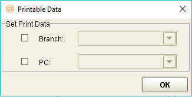{width="3.137036307961505in” height="1.571 | | 5277777777779in”} | | ——————————————————————- | | ——————- | | | | ——- – ——————- | | Field Field Description | | ——- – ——————- | | | | ———— – ————————————————— | | ——————————————————————— | | ——————————————————————— | | ——————————————————————— | | ——————- | | Branch Mark this flag if data printing is to be directed t | | o a branch. Select the branch identifier from the dropdown list. The | | value of the selected field is the branch identifier for the printing | | task. The identifier may also be specified manually. | | | | PC Mark this flag if data printing is to be directed t | | o a processing center. Select the processing center identifier from t | | he dropdown list. The value of the selected field is the processing c | | enter identifier for the printing task. The identifier may also be sp | | ecified manually. | | ———— – ————————————————— | | ——————————————————————— | | ——————————————————————— | | ——————————————————————— | | ——————- | +———————————————————————–+
#########
[]{#_Toc18063139 .anchor}Accounting Rule Configuration: Mapping Information
Configure the accounting rule mapping information in the Accounting Rule Setting Details window.
Figure 11. Accounting Rule Setting Details Window
Field Field Description
+———————–+———————–+———————–+ | Interest Rate | | Indicate the interest | | Used | | rate to be used for | | | | voucher creation. The | | | | options are: | | | | | | | | - Interest Rate 1 | | | | | | | | | | | | | | | | - Interest Rate 2 | | | | | | | | The values of these | | | | interest rate types | | | | are indicated in the | | | | Detail Info and Field | | | | section of the | | | | configuration window. | +———————–+———————–+———————–+ | | | | +———————–+———————–+———————–+ | Exchange Rate | | Indicate the exchange | | Used | | rate to be used for | | | | voucher creation. The | | | | options are: | | | | | | | | - Exchange Rate 1 | | | | | | | | | | | | | | | | - Exchange Rate 2 | | | | | | | | The values of these | | | | exchange rate types | | | | are indicated in the | | | | Detail Info and Field | | | | section of the | | | | configuration window. | +———————–+———————–+———————–+ | | | | +———————–+———————–+———————–+ | Accounting Number | | This is used to | | | | indicate the method | | | | of verifying the | | | | account number. The | | | | options are: | | | | | | | | - Check Flag: Mark | | | | this flag if the | | | | account number is | | | | to be checked | | | | against the | | | | existing account | | | | numbers in the | | | | account number | | | | table | | | | (STD_AC_NUMBER) | | | | of the Standing | | | | module. | | | | | | | | - OFF _Balance | | | | Entry: This is | | | | used for special | | | | projects only. | +———————–+———————–+———————–+ | | | | +———————–+———————–+———————–+ | Data Object | | If the accounting | | | | voucher fields are to | | | | be retrieved from a | | | | data object, click on | | | | the corresponding | | | | browse button. | | | | | | | | The DoTree Dialog | | | | window lists all the | | | | data objects that are | | | | attached to the main | | | | transaction function | | | | screen selected | | | | earlier (i.e., Screen | | | | Name field in the | | | | Setting tab of the | | | | Accounting Rule | | | | Setting window). | | | | Select the relevant | | | | source data object; | | | | this can be the main | | | | DO or a child DO. | | | | | | | | To remove the current | | | | Data Object setting, | | | | click on the Clear | | | | button. | | | | | | | | **[NOTE:]{.underline} | | | | ** | | | | | | | | If no Data Object is | | | | specified, the source | | | | for the data of the | | | | accounting entry is | | | | the indicated JSP | | | | field (Screen Name | | | | setting). | +———————–+———————–+———————–+ | | | | +———————–+———————–+———————–+ | (Detail Info) | | This column lists the | | | | accounting voucher | | | | fields. | +———————–+———————–+———————–+ | | | | +———————–+———————–+———————–+ | (Field) | | This column is used | | | | for specifying the | | | | settings for the | | | | value retrieval of | | | | the accounting | | | | voucher fields. | +———————–+———————–+———————–+ | | | | +———————–+———————–+———————–+ | | | Detail Info and | | | | Field Columns | +———————–+———————–+———————–+ | | | | +———————–+———————–+———————–+ | DC Account Flag | | Enable the relevant | | | | flag for the account | | | | entry by selecting | | | | the appropriate value | | | | from the dropdown | | | | list: | | | | | | | | - C: Select this if | | | | the accounting | | | | entry is a Credit | | | | entry. | | | | | | | | - D: Select this if | | | | the accounting | | | | entry is a Debit | | | | entry. | | | | | | | | - JavaScript: | | | | Select this if a | | | | JavaScript | | | | condition is to | | | | be defined for | | | | determining the | | | | account entry | | | | type. Click on | | | | the corresponding | | | | browse button to | | | | display the | | | | JavaScript | | | | Content window; | | | | use the methods | | | | and fields | | | | provided to | | | | compose the | | | | script. | +———————–+———————–+———————–+ | | | | +———————–+———————–+———————–+ | Customer ID | | Select the field that | | | | is to be mapped to | | | | the Customer Id field | | | | in the voucher. The | | | | available fields in | | | | the dropdown list are | | | | the fields from the | | | | source JSP. | +———————–+———————–+———————–+ | | | | +———————–+———————–+———————–+ | Transaction | | Select the field that | | Description | | is to be mapped to | | | | the Transaction | | | | Description field of | | | | the accounting entry. | | | | The available fields | | | | are the fields in the | | | | source JSP. | +———————–+———————–+———————–+ | | | | +———————–+———————–+———————–+ | GL Setting Type | | Use this field to | | | | specify the method of | | | | value retrieval for | | | | the GL Setting field. | | | | The available options | | | | in the dropdown list | | | | are: | | | | | | | | - Mapping Field: | | | | When this option | | | | is used, the | | | | fields in the | | | | source JSP file | | | | are made | | | | available for the | | | | selection of the | | | | GL Setting field | | | | value. | | | | | | | | - Circle Field: | | | | This option is | | | | currently not | | | | used. | | | | | | | | - Input Value: When | | | | this option is | | | | used, the GL | | | | Setting field | | | | value may be | | | | defined through | | | | manual input. | | | | | | | | - JavaScript: When | | | | this option is | | | | used, the GL | | | | Setting field | | | | value may be | | | | defined through a | | | | JavaScript | | | | method. The GL | | | | Setting field is | | | | provided with a | | | | browse button | | | | that is used to | | | | display the | | | | JavaScript | | | | Content window | | | | for defining | | | | codes. | | | | | | | | - Constant: This | | | | option is | | | | reserved for | | | | special | | | | projects. | +———————–+———————–+———————–+ | | | | +———————–+———————–+———————–+ | GL Setting | | This field pertains | | | | to the relevant GL | | | | account number. The | | | | value can be | | | | specified according | | | | to the indicated GL | | | | Setting Type. | +———————–+———————–+———————–+ | | | | +———————–+———————–+———————–+ | SL Setting Type | | Use this field to | | | | specify the method of | | | | value retrieval for | | | | the SL Setting field. | | | | The available options | | | | in the dropdown list | | | | are: | | | | | | | | - Mapping Field: | | | | When this option | | | | is used, the | | | | fields in the | | | | source JSP file | | | | are made | | | | available for the | | | | selection of the | | | | SL Setting field | | | | value. | | | | | | | | - Circle Field: | | | | This option is | | | | currently not | | | | used. | | | | | | | | - Input Value: When | | | | this option is | | | | used, the SL | | | | Setting field | | | | value may be | | | | defined through | | | | manual input. | | | | | | | | - JavaScript: When | | | | this option is | | | | used, the SL | | | | Setting field | | | | value may be | | | | defined through a | | | | JavaScript | | | | method. The SL | | | | Setting field is | | | | provided with a | | | | browse button | | | | that is used to | | | | display the | | | | JavaScript | | | | Content window | | | | for defining | | | | codes. | | | | | | | | - Constant: This | | | | option is | | | | reserved for | | | | special | | | | projects. | +———————–+———————–+———————–+ | | | | +———————–+———————–+———————–+ | SL Setting | | This field pertains | | | | to the relevant SL | | | | account number. The | | | | value can be | | | | specified according | | | | to the indicated SL | | | | Setting Type. | +———————–+———————–+———————–+ | | | | +———————–+———————–+———————–+ | Currency Type | | Use this field to | | | | specify the method of | | | | value retrieval for | | | | the Currency field of | | | | the accounting entry. | | | | The available options | | | | in the dropdown list | | | | are: | | | | | | | | - Mapping Field: | | | | When this option | | | | is used, the | | | | fields in the | | | | source JSP file | | | | are made | | | | available for the | | | | selection of the | | | | Currency field | | | | value. | | | | | | | | - Circle Field: | | | | This option is | | | | currently not | | | | used. | | | | | | | | - Input Value: When | | | | this option is | | | | used, the | | | | Currency may be | | | | defined through | | | | manual input. | | | | | | | | - JavaScript: When | | | | this option is | | | | used, the | | | | Currency value | | | | may be defined | | | | through a | | | | JavaScript | | | | method. The | | | | Currency field is | | | | provided with a | | | | browse button | | | | that is used to | | | | display the | | | | JavaScript | | | | Content window | | | | for defining | | | | codes. | | | | | | | | - Constant: This | | | | option is | | | | reserved for | | | | special | | | | projects. | +———————–+———————–+———————–+ | | | | +———————–+———————–+———————–+ | Currency | | This field pertains | | | | to the currency code | | | | of the accounting | | | | entry. The value can | | | | be specified | | | | according to the | | | | indicated Currency | | | | Type. | +———————–+———————–+———————–+ | | | | +———————–+———————–+———————–+ | Amount Type | | Use this field to | | | | specify the method of | | | | value retrieval for | | | | the Amount field of | | | | the accounting entry. | | | | The available options | | | | in the dropdown list | | | | are: | | | | | | | | - Mapping Field: | | | | When this option | | | | is used, the | | | | fields in the | | | | source JSP file | | | | are made | | | | available for the | | | | selection of the | | | | Amount field | | | | value. | | | | | | | | - Circle Field: | | | | This option is | | | | currently not | | | | used. | | | | | | | | - Input Value: When | | | | this option is | | | | used, the Amount | | | | may be defined | | | | through manual | | | | input. | | | | | | | | - JavaScript: When | | | | this option is | | | | used, the Amount | | | | value may be | | | | defined through a | | | | JavaScript | | | | method. The | | | | Amount field is | | | | provided with a | | | | browse button | | | | that is used to | | | | display the | | | | JavaScript | | | | Content window | | | | for defining | | | | codes. | | | | | | | | - Constant: This | | | | option is | | | | reserved for | | | | special | | | | projects. | +———————–+———————–+———————–+ | | | | +———————–+———————–+———————–+ | Amount | | This field pertains | | | | to the amount of the | | | | accounting entry. The | | | | value can be | | | | specified according | | | | to the indicated | | | | Amount Type. | | | | | | | | [NOTE: | | | | ]{.underline} | | | | | | | | If this field is set | | | | to zero, no voucher | | | | will be generated for | | | | the function from | | | | which the Accounting | | | | Rule is attached. | +———————–+———————–+———————–+ | | | | +———————–+———————–+———————–+ | Booking Date Type | | Use this field to | | | | specify the method of | | | | value retrieval for | | | | the Booking Date | | | | field of the | | | | accounting entry. The | | | | available options in | | | | the dropdown list | | | | are: | | | | | | | | - Mapping Field: | | | | When this option | | | | is used, the | | | | fields in the | | | | source JSP file | | | | are made | | | | available for the | | | | selection of the | | | | Booking Date | | | | field value. | | | | | | | | - Circle Field: | | | | This option is | | | | currently not | | | | used. | | | | | | | | - Input Value: When | | | | this option is | | | | used, the Booking | | | | Date may be | | | | defined through | | | | manual input. | | | | | | | | - JavaScript: When | | | | this option is | | | | used, the Booking | | | | Date value may be | | | | defined through a | | | | JavaScript | | | | method. The | | | | Booking Date | | | | field is provided | | | | with a browse | | | | button that is | | | | used to display | | | | the JavaScript | | | | Content window | | | | for defining | | | | codes. | | | | | | | | - Constant: This | | | | option is | | | | reserved for | | | | special | | | | projects. | +———————–+———————–+———————–+ | | | | +———————–+———————–+———————–+ | Booking Date | | This field pertains | | | | to the booking date | | | | of the accounting | | | | entry. The value can | | | | be specified | | | | according to the | | | | indicated Booking | | | | Date Type. | +———————–+———————–+———————–+ | | | | +———————–+———————–+———————–+ | Value Date Type | | Specify in this field | | | | the method of value | | | | retrieval for the | | | | Value Date field of | | | | the accounting entry. | | | | The available options | | | | in the dropdown list | | | | are: | | | | | | | | - Mapping Field: | | | | When this option | | | | is used, the | | | | fields in the | | | | source JSP file | | | | are made | | | | available for the | | | | selection of the | | | | Value Date field | | | | value. | | | | | | | | - Circle Field: | | | | This option is | | | | currently not | | | | used. | | | | | | | | - Input Value: When | | | | this option is | | | | used, the Value | | | | Date may be | | | | defined through | | | | manual input. | | | | | | | | - JavaScript: When | | | | this option is | | | | used, the Value | | | | Date value may be | | | | defined through a | | | | JavaScript | | | | method. The Value | | | | Date field is | | | | provided with a | | | | browse button | | | | that is used to | | | | display the | | | | JavaScript | | | | Content window | | | | for defining | | | | codes. | | | | | | | | - Constant: This | | | | option is | | | | reserved for | | | | special | | | | projects. | +———————–+———————–+———————–+ | | | | +———————–+———————–+———————–+ | Value Date | | This field pertains | | | | to the value date of | | | | the accounting entry. | | | | The value can be | | | | specified according | | | | to the indicated | | | | Value Date Type. | +———————–+———————–+———————–+ | | | | +———————–+———————–+———————–+ | Transaction Code | | Use this field to | | Type | | specify the method of | | | | value retrieval for | | | | the Transaction Code | | | | field of the | | | | accounting entry. The | | | | available options in | | | | the dropdown list | | | | are: | | | | | | | | - Mapping Field: | | | | When this option | | | | is used, the | | | | fields in the | | | | source JSP file | | | | are made | | | | available for the | | | | selection of the | | | | Transaction Code | | | | field value. | | | | | | | | - Input Value: When | | | | this option is | | | | used, the | | | | Transaction Code | | | | may be defined | | | | through manual | | | | input. | | | | | | | | - JavaScript: When | | | | this option is | | | | used, the | | | | Transaction Code | | | | value may be | | | | defined through a | | | | JavaScript | | | | method. The | | | | Transaction Code | | | | field is provided | | | | with a browse | | | | button that is | | | | used to display | | | | the JavaScript | | | | Content window | | | | for defining | | | | codes. | | | | | | | | - Constant: This | | | | option is | | | | reserved for | | | | special | | | | projects. | +———————–+———————–+———————–+ | | | | +———————–+———————–+———————–+ | Transaction Code | | This field pertains | | | | to the transaction | | | | code of the | | | | accounting entry. The | | | | value can be | | | | specified according | | | | to the indicated | | | | Transaction Code | | | | Type. | +———————–+———————–+———————–+ | | | | +———————–+———————–+———————–+ | Exchange Rate 1 | | Use this field to | | Type | | specify the method of | | | | value retrieval for | | | | the Exchange Rate 1 | | | | field of the | | | | accounting entry. The | | | | available options in | | | | the dropdown list | | | | are: | | | | | | | | - Mapping Field: | | | | When this option | | | | is used, the | | | | fields in the | | | | source JSP file | | | | are made | | | | available for the | | | | selection of the | | | | Exchange Rate 1 | | | | field value. | | | | | | | | - Circle Field: | | | | This option is | | | | currently not | | | | used. | | | | | | | | - Input Value: When | | | | this option is | | | | used, the | | | | Exchange Rate 1 | | | | may be defined | | | | through manual | | | | input. | | | | | | | | - JavaScript: When | | | | this option is | | | | used, the | | | | Exchange Rate 1 | | | | value may be | | | | defined through a | | | | JavaScript | | | | method. The | | | | Exchange Rate 1 | | | | field is provided | | | | with a browse | | | | button that is | | | | used to display | | | | the JavaScript | | | | Content window | | | | for defining | | | | codes. | | | | | | | | - Constant: This | | | | option is | | | | reserved for | | | | special | | | | projects. | +———————–+———————–+———————–+ | | | | +———————–+———————–+———————–+ | Exchange Rate 1 | | This field pertains | | | | to the Exchange Rate | | | | 1 of the accounting | | | | entry. The value can | | | | be specified | | | | according to the | | | | indicated Exchange | | | | Rate 1 Type. | +———————–+———————–+———————–+ | | | | +———————–+———————–+———————–+ | Exchange Rate 2 | | Use this field to | | Type | | specify the method of | | | | value retrieval for | | | | the Exchange Rate 2 | | | | field of the | | | | accounting entry. The | | | | available options in | | | | the dropdown list | | | | are: | | | | | | | | - Mapping Field: | | | | When this option | | | | is used, the | | | | fields in the | | | | source JSP file | | | | are made | | | | available for the | | | | selection of the | | | | Exchange Rate 2 | | | | field value. | | | | | | | | - Circle Field: | | | | This option is | | | | currently not | | | | used. | | | | | | | | - Input Value: When | | | | this option is | | | | used, the | | | | Exchange Rate 2 | | | | may be defined | | | | through manual | | | | input. | | | | | | | | - JavaScript: When | | | | this option is | | | | used, the | | | | Exchange Rate 2 | | | | value may be | | | | defined through a | | | | JavaScript | | | | method. The | | | | Exchange Rate 2 | | | | field is provided | | | | with a browse | | | | button that is | | | | used to display | | | | the JavaScript | | | | Content window | | | | for defining | | | | codes. | | | | | | | | - Constant: This | | | | option is | | | | reserved for | | | | special | | | | projects. | +———————–+———————–+———————–+ | | | | +———————–+———————–+———————–+ | Exchange Rate 2 | | This field pertains | | | | to the Exchange Rate | | | | 2 of the accounting | | | | entry. The value can | | | | be specified | | | | according to the | | | | indicated Exchange | | | | Rate 2 Type. | +———————–+———————–+———————–+ | | | | +———————–+———————–+———————–+ | Interest Rate 1 | | Use this field to | | Type | | specify the method of | | | | value retrieval for | | | | the Interest Rate 1 | | | | field of the | | | | accounting entry. The | | | | available options in | | | | the dropdown list | | | | are: | | | | | | | | - Mapping Field: | | | | When this option | | | | is used, the | | | | fields in the | | | | source JSP file | | | | are made | | | | available for the | | | | selection of the | | | | Interest Rate 1 | | | | field value. | | | | | | | | - Circle Field: | | | | This option is | | | | currently not | | | | used. | | | | | | | | - Input Value: When | | | | this option is | | | | used, the | | | | Interest Rate 1 | | | | may be defined | | | | through manual | | | | input. | | | | | | | | - JavaScript: When | | | | this option is | | | | used, the | | | | Interest Rate | | | | 1value may be | | | | defined through a | | | | JavaScript | | | | method. The | | | | Interest Rate 1 | | | | field is provided | | | | with a browse | | | | button that is | | | | used to display | | | | the JavaScript | | | | Content window | | | | for defining | | | | codes. | | | | | | | | - Constant: This | | | | option is | | | | reserved for | | | | special | | | | projects. | +———————–+———————–+———————–+ | | | | +———————–+———————–+———————–+ | Interest Rate 1 | | This field pertains | | | | to the Interest Rate | | | | 1 of the accounting | | | | entry. The value can | | | | be specified | | | | according to the | | | | indicated Interest | | | | Rate 1 Type. | +———————–+———————–+———————–+ | | | | +———————–+———————–+———————–+ | Interest Rate 2 | | Use this field to | | Type | | specify the method of | | | | value retrieval for | | | | the Interest Rate 2 | | | | field of the | | | | accounting entry. The | | | | available options in | | | | the dropdown list | | | | are: | | | | | | | | - Mapping Field: | | | | When this option | | | | is used, the | | | | fields in the | | | | source JSP file | | | | are made | | | | available for the | | | | selection of the | | | | Interest Rate 2 | | | | field value. | | | | | | | | - Circle Field: | | | | This option is | | | | currently not | | | | used. | | | | | | | | - Input Value: When | | | | this option is | | | | used, the | | | | Interest Rate 2 | | | | may be defined | | | | through manual | | | | input. | | | | | | | | - JavaScript: When | | | | this option is | | | | used, the | | | | Interest Rate 2 | | | | value may be | | | | defined through a | | | | JavaScript | | | | method. The | | | | Interest Rate 2 | | | | field is provided | | | | with a browse | | | | button that is | | | | used to display | | | | the JavaScript | | | | Content window | | | | for defining | | | | codes. | | | | | | | | - Constant: This | | | | option is | | | | reserved for | | | | special | | | | projects. | +———————–+———————–+———————–+ | | | | +———————–+———————–+———————–+ | Interest Rate 2 | | This field pertains | | | | to the Interest Rate | | | | 2 of the accounting | | | | entry. The value can | | | | be specified | | | | according to the | | | | indicated Interest | | | | Rate 2 Type. | +———————–+———————–+———————–+ | | | | +———————–+———————–+———————–+ | Reference Number | | Use this field to | | Type | | specify the method of | | | | value retrieval for | | | | the Reference Number | | | | field of the | | | | accounting entry. The | | | | available options in | | | | the dropdown list | | | | are: | | | | | | | | - Mapping Field: | | | | When this option | | | | is used, the | | | | fields in the | | | | source JSP file | | | | are made | | | | available for the | | | | selection of the | | | | Reference Number | | | | field value. | | | | | | | | - Circle Field: | | | | This option is | | | | currently not | | | | used. | | | | | | | | - Input Value: When | | | | this option is | | | | used, the | | | | Reference Number | | | | may be defined | | | | through manual | | | | input. | | | | | | | | - JavaScript: When | | | | this option is | | | | used, the | | | | Reference Number | | | | value may be | | | | defined through a | | | | JavaScript | | | | method. The | | | | Reference Number | | | | field is provided | | | | with a browse | | | | button that is | | | | used to display | | | | the JavaScript | | | | Content window | | | | for defining | | | | codes. | | | | | | | | - Constant: This | | | | option is | | | | reserved for | | | | special | | | | projects. | +———————–+———————–+———————–+ | | | | +———————–+———————–+———————–+ | Reference Number | | This field pertains | | | | to the Reference | | | | Number of the | | | | accounting entry. The | | | | value can be | | | | specified according | | | | to the indicated | | | | Reference Number | | | | Type. | +———————–+———————–+———————–+ | | | | +———————–+———————–+———————–+ | Voucher Desc Type | | Use this field to | | | | specify the method of | | | | value retrieval for | | | | the Voucher Desc | | | | field of the | | | | accounting entry. The | | | | available options in | | | | the dropdown list | | | | are: | | | | | | | | - Mapping Field: | | | | When this option | | | | is used, the | | | | fields in the | | | | source JSP file | | | | are made | | | | available for the | | | | selection of the | | | | Voucher Desc | | | | field value. | | | | | | | | - Input Value: When | | | | this option is | | | | used, the Voucher | | | | Desc field value | | | | may be defined | | | | through manual | | | | input. | | | | | | | | - JavaScript: When | | | | this option is | | | | used, the Voucher | | | | Desc value may be | | | | defined through a | | | | JavaScript | | | | method. The | | | | Voucher Desc | | | | field is provided | | | | with a browse | | | | button that is | | | | used to display | | | | the JavaScript | | | | Content window | | | | for defining | | | | codes. | | | | | | | | - Constant: This | | | | option is | | | | reserved for | | | | special | | | | projects. | +———————–+———————–+———————–+ | | | | +———————–+———————–+———————–+ | Voucher Desc | | This field pertains | | | | to the voucher | | | | description of the | | | | accounting entry. The | | | | value can be | | | | specified according | | | | to the indicated | | | | Voucher Description | | | | Type. | | | | | | | | If the Voucher Desc | | | | Type field is set to | | | | JavaScript, the | | | | maximum number of | | | | characters for this | | | | field is 10240. | +———————–+———————–+———————–+ | | | | +———————–+———————–+———————–+ | Customer Code | | Use this field to | | Type | | specify the method of | | | | value retrieval for | | | | the Customer Code | | | | field of the | | | | accounting entry. The | | | | available options in | | | | the dropdown list | | | | are: | | | | | | | | - Mapping Field: | | | | When this option | | | | is used, the | | | | fields in the | | | | source JSP file | | | | are made | | | | available for the | | | | selection of the | | | | Customer Code | | | | field value. | | | | | | | | - Circle Field: | | | | This option is | | | | currently not | | | | used. | | | | | | | | - Input Value: When | | | | this option is | | | | used, the | | | | Customer Code may | | | | be defined | | | | through manual | | | | input. | | | | | | | | - JavaScript: When | | | | this option is | | | | used, the | | | | Customer Code | | | | value may be | | | | defined through a | | | | JavaScript | | | | method. The | | | | Customer Code | | | | field is provided | | | | with a browse | | | | button that is | | | | used to display | | | | the JavaScript | | | | Content window | | | | for defining | | | | codes. | | | | | | | | - Constant: This | | | | option is | | | | reserved for | | | | special | | | | projects. | +———————–+———————–+———————–+ | | | | +———————–+———————–+———————–+ | Customer Code | | This field pertains | | | | to the Customer Code | | | | of the accounting | | | | entry. The value can | | | | be specified | | | | according to the | | | | indicated Customer | | | | Code Type. | +———————–+———————–+———————–+ | | | | +———————–+———————–+———————–+ | Business Group | | Use this field to | | Type | | specify the method of | | | | value retrieval for | | | | the Business Group | | | | field of the | | | | accounting entry. The | | | | available options in | | | | the dropdown list | | | | are: | | | | | | | | - Mapping Field: | | | | When this option | | | | is used, the | | | | fields in the | | | | source JSP file | | | | are made | | | | available for the | | | | selection of the | | | | Business Group | | | | field value. | | | | | | | | - Circle Field: | | | | This option is | | | | currently not | | | | used. | | | | | | | | - Input Value: When | | | | this option is | | | | used, the | | | | Business Group | | | | may be defined | | | | through manual | | | | input. | | | | | | | | - JavaScript: When | | | | this option is | | | | used, the | | | | Business Group | | | | value may be | | | | defined through a | | | | JavaScript | | | | method. The | | | | Business Group | | | | field is provided | | | | with a browse | | | | button that is | | | | used to display | | | | the JavaScript | | | | Content window | | | | for defining | | | | codes. | | | | | | | | - Constant: This | | | | option is | | | | reserved for | | | | special | | | | projects. | +———————–+———————–+———————–+ | | | | +———————–+———————–+———————–+ | Business Group | | This field pertains | | | | to the Business Group | | | | of the accounting | | | | entry. The value can | | | | be specified | | | | according to the | | | | indicated Business | | | | Group Type. | +———————–+———————–+———————–+ | | | | +———————–+———————–+———————–+ | Business Type | | Use this field to | | Setting | | specify the method of | | | | value retrieval for | | | | the Business Type | | | | field of the | | | | accounting entry. The | | | | available options in | | | | the dropdown list | | | | are: | | | | | | | | - Mapping Field: | | | | When this option | | | | is used, the | | | | fields in the | | | | source JSP file | | | | are made | | | | available for the | | | | selection of the | | | | Business Type | | | | field value. | | | | | | | | - Circle Field This | | | | option is | | | | currently not | | | | used. | | | | | | | | - Input Value: When | | | | this option is | | | | used, the | | | | Business Type may | | | | be defined | | | | through manual | | | | input. | | | | | | | | - JavaScript: When | | | | this option is | | | | used, the | | | | Business Type | | | | value may be | | | | defined through a | | | | JavaScript | | | | method. The | | | | Business Type | | | | field is provided | | | | with a browse | | | | button that is | | | | used to display | | | | the JavaScript | | | | Content window | | | | for defining | | | | codes. | | | | | | | | - Constant: This | | | | option is | | | | reserved for | | | | special | | | | projects. | +———————–+———————–+———————–+ | | | | +———————–+———————–+———————–+ | Business Type | | This field pertains | | | | to the Business Type | | | | Setting of the | | | | accounting entry. The | | | | value can be | | | | specified according | | | | to the indicated | | | | Business Type Setting | | | | Type. | +———————–+———————–+———————–+ | | | | +———————–+———————–+———————–+ | Account Officer | | Use this field to | | Type | | specify the method of | | | | value retrieval for | | | | the Account Officer | | | | field of the | | | | accounting entry. The | | | | available options in | | | | the dropdown list | | | | are: | | | | | | | | - Mapping Field: | | | | When this option | | | | is used, the | | | | fields in the | | | | source JSP file | | | | are made | | | | available for the | | | | selection of the | | | | Account Officer | | | | field value. | | | | | | | | - Circle Field: | | | | This option is | | | | currently not | | | | used. | | | | | | | | - Input Value: When | | | | this option is | | | | used, the Account | | | | Officer may be | | | | defined through | | | | manual input. | | | | | | | | - JavaScript: When | | | | this option is | | | | used, the Account | | | | Officer value may | | | | be defined | | | | through a | | | | JavaScript | | | | method. The | | | | Account Officer | | | | field is provided | | | | with a browse | | | | button that is | | | | used to display | | | | the JavaScript | | | | Content window | | | | for defining | | | | codes. | | | | | | | | - Constant: This | | | | option is | | | | reserved for | | | | special | | | | projects. | +———————–+———————–+———————–+ | | | | +———————–+———————–+———————–+ | Account Officer | | This field pertains | | | | to the Account | | | | Officer of the | | | | accounting entry. The | | | | value can be | | | | specified according | | | | to the indicated | | | | Account Officer Type. | +———————–+———————–+———————–+ | | | | +———————–+———————–+———————–+ | Customer Relation | | Use this field to | | Code Type | | specify the method of | | | | value retrieval for | | | | the Customer Relation | | | | Code field of the | | | | accounting entry. The | | | | available options in | | | | the dropdown list | | | | are: | | | | | | | | - Mapping Field: | | | | When this option | | | | is used, the | | | | fields in the | | | | source JSP file | | | | are made | | | | available for the | | | | selection of the | | | | Customer Relation | | | | Code field value. | | | | | | | | - Circle Field This | | | | option is | | | | currently not | | | | used. | | | | | | | | - Input Value: When | | | | this option is | | | | used, the | | | | Customer Relation | | | | Code may be | | | | defined through | | | | manual input. | | | | | | | | - JavaScript: When | | | | this option is | | | | used, the | | | | Customer Relation | | | | Code value may be | | | | defined through a | | | | JavaScript | | | | method. The | | | | Customer Relation | | | | Code field is | | | | provided with a | | | | browse button | | | | that is used to | | | | display the | | | | JavaScript | | | | Content window | | | | for defining | | | | codes. | | | | | | | | - Constant: This | | | | option is | | | | reserved for | | | | special | | | | projects. | +———————–+———————–+———————–+ | | | | +———————–+———————–+———————–+ | Customer Relation | | This field pertains | | Code | | to the Customer | | | | Relation Code of the | | | | accounting entry. The | | | | value can be | | | | specified according | | | | to the indicated | | | | Customer Relation | | | | Code Type. | +———————–+———————–+———————–+ | | | | +———————–+———————–+———————–+ | Customer Country | | Use this field to | | Code Type | | specify the method of | | | | value retrieval for | | | | the Customer Country | | | | Code field of the | | | | accounting entry. The | | | | available options in | | | | the dropdown list | | | | are: | | | | | | | | - Mapping Field: | | | | When this option | | | | is used, the | | | | fields in the | | | | source JSP file | | | | are made | | | | available for the | | | | selection of the | | | | Customer Country | | | | Code field value. | | | | | | | | - Circle Field This | | | | option is | | | | currently not | | | | used. | | | | | | | | - Input Value: When | | | | this option is | | | | used, the | | | | Customer Country | | | | Code may be | | | | defined through | | | | manual input. | | | | | | | | - JavaScript: When | | | | this option is | | | | used, the | | | | Customer Country | | | | Code value may be | | | | defined through a | | | | JavaScript | | | | method. The | | | | Customer Country | | | | Code field is | | | | provided with a | | | | browse button | | | | that is used to | | | | display the | | | | JavaScript | | | | Content window | | | | for defining | | | | codes. | | | | | | | | - Constant: This | | | | option is | | | | reserved for | | | | special | | | | projects. | +———————–+———————–+———————–+ | | | | +———————–+———————–+———————–+ | Customer Country | | This field pertains | | Code | | to the Customer | | | | Country Code of the | | | | accounting entry. The | | | | value can be | | | | specified according | | | | to the indicated | | | | Customer Country Code | | | | Type. | +———————–+———————–+———————–+ | | | | +———————–+———————–+———————–+ | C_VCH_SPECIAL1 | | Use this field to | | Type | | specify the method of | | | | value retrieval for | | | | the C_VCH_SPECIAL1 | | | | field to be included | | | | in the accounting | | | | entry. The available | | | | options in the | | | | dropdown list are: | | | | | | | | - Mapping Field: | | | | When this option | | | | is used, the | | | | fields in the | | | | source JSP file | | | | are made | | | | available for the | | | | selection of the | | | | C_VCH_SPECIAL1 | | | | field value. | | | | | | | | - Circle Field: | | | | This option is | | | | currently not | | | | used. | | | | | | | | - Input Value: When | | | | this option is | | | | used, the | | | | C_VCH_SPECIAL1 | | | | field value may | | | | be defined | | | | through manual | | | | input. | | | | | | | | - JavaScript: When | | | | this option is | | | | used, the | | | | C_VCH_SPECIAL1 | | | | field value may | | | | be defined | | | | through a | | | | JavaScript | | | | method. The | | | | C_VCH_SPECIAL1 | | | | field is provided | | | | with a browse | | | | button that is | | | | used to display | | | | the JavaScript | | | | Content window | | | | for defining | | | | codes. | | | | | | | | - Constant: This | | | | option is | | | | reserved for | | | | special | | | | projects. | +———————–+———————–+———————–+ | | | | +———————–+———————–+———————–+ | C_VCH_SPECIAL1 | | This field pertains | | | | to the special field | | | | of the accounting | | | | entry. The value can | | | | be specified | | | | according to the | | | | indicated | | | | C_VCH_SPECIAL1 | | | | Type. | +———————–+———————–+———————–+ | | | | +———————–+———————–+———————–+ | C_VCH_SPECIAL2 | | Use this field to | | Type | | specify the method of | | | | value retrieval for | | | | the C_VCH_SPECIAL2 | | | | field to be included | | | | in the accounting | | | | entry. The available | | | | options in the | | | | dropdown list are: | | | | | | | | - Mapping Field: | | | | When this option | | | | is used, the | | | | fields in the | | | | source JSP file | | | | are made | | | | available for the | | | | selection of the | | | | C_VCH_SPECIAL2 | | | | field value. | | | | | | | | - Circle Field: | | | | This option is | | | | currently not | | | | used. | | | | | | | | - Input Value: When | | | | this option is | | | | used, the | | | | C_VCH_SPECIAL2 | | | | field value may | | | | be defined | | | | through manual | | | | input. | | | | | | | | - JavaScript: When | | | | this option is | | | | used, the | | | | C_VCH_SPECIAL2 | | | | field value may | | | | be defined | | | | through a | | | | JavaScript | | | | method. The | | | | C_VCH_SPECIAL2 | | | | field is provided | | | | with a browse | | | | button that is | | | | used to display | | | | the JavaScript | | | | Content window | | | | for defining | | | | codes. | | | | | | | | - Constant: This | | | | option is | | | | reserved for | | | | special | | | | projects. | +———————–+———————–+———————–+ | | | | +———————–+———————–+———————–+ | C_VCH_SPECIAL2 | | This field pertains | | | | to the special field | | | | of the accounting | | | | entry. The value can | | | | be specified | | | | according to the | | | | indicated | | | | C_VCH_SPECIAL2 | | | | Type. | +———————–+———————–+———————–+ | | | | +———————–+———————–+———————–+
+———————–+———————–+———————–+ | C_VCH_SPECIAL3 | | Use this field to | | Type | | specify the method of | | | | value retrieval for | | | | the C_VCH_SPECIAL3 | | | | field to be included | | | | in the accounting | | | | entry. The available | | | | options in the | | | | dropdown list are: | | | | | | | | - Mapping Field: | | | | When this option | | | | is used, the | | | | fields in the | | | | source JSP file | | | | are made | | | | available for the | | | | selection of the | | | | C_VCH_SPECIAL3 | | | | field value. | | | | | | | | - Circle Field: | | | | This option is | | | | currently not | | | | used. | | | | | | | | - Input Value: When | | | | this option is | | | | used, the | | | | C_VCH_SPECIAL3 | | | | field value may | | | | be defined | | | | through manual | | | | input. | | | | | | | | - JavaScript: When | | | | this option is | | | | used, the | | | | C_VCH_SPECIAL3 | | | | field value may | | | | be defined | | | | through a | | | | JavaScript | | | | method. The | | | | C_VCH_SPECIAL3 | | | | field is provided | | | | with a browse | | | | button that is | | | | used to display | | | | the JavaScript | | | | Content window | | | | for defining | | | | codes. | | | | | | | | - Constant: This | | | | option is | | | | reserved for | | | | special | | | | projects. | +———————–+———————–+———————–+ | | | | +———————–+———————–+———————–+ | C_VCH_SPECIAL3 | | This field pertains | | | | to the special field | | | | of the accounting | | | | entry. The value can | | | | be specified | | | | according to the | | | | indicated | | | | C_VCH_SPECIAL3 | | | | Type. | +———————–+———————–+———————–+
{width="0.33611111111111114in”
height="0.33611111111111114in”}NOTE: When the check flag is enabled, and
the system parameter VOUCHER_ACCOUNT_CHECK is set as true, the system
prompts an error message when the account number used in a transaction
does not exist in the account number table.
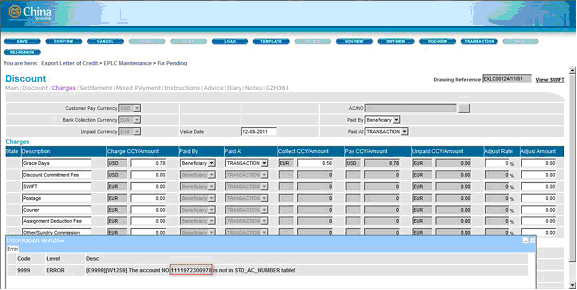{width="5.047916666666667in” height="2.536111111111111in”}
Procedure
To create an Accounting rule:
Do the following . . .
+———————–+———————–+———————–+ | 1. Run the | | {width="3.5in” | | function from the | | height="2.06111111111 | | Transaction | | 1111in”} | | Function group. | | | +———————–+———————–+———————–+ | | | | +———————–+———————–+———————–+ | 2. The Accounting | | {width="3.5in” | | window is | | height="2.06111111111 | | displayed. | | 1111in”} | | | | | | In the Accounting | | | | Rules tab, select the | | | | module for which the | | | | Accounting rule is to | | | | be created. | | | | Right-click on the | | | | Rule Name section and | | | | select the Add option | | | | from the popup menu. | | | +———————–+———————–+———————–+ | | | | +———————–+———————–+———————–+ | 3. Provide a name | | {width="3.5in” | | rule and save it. | | height="2.06111111111 | | | | 1111in”} | | In a multi-entity | | | | environment, select | | | | the domain as well. | | | +———————–+———————–+———————–+ | | | | +———————–+———————–+———————–+ | 4. Select the new | | {width="3.5in” | | applicable, the | | height="2.06111111111 | | domain to enable | | 1111in”} | | the Detail tab. | | | +———————–+———————–+———————–+ | | | | +———————–+———————–+———————–+ | 5. Right-click on | | {width="3.5in” | | Setting sub-tab of | | height="2.06111111111 | | the Detail tab. | | 1111in”} | | Select the Add | | | | option from the | | | | popup menu. | | | +———————–+———————–+———————–+ | | | | +———————–+———————–+———————–+ | 6. The Accounting | | {width="3.5in” | | is displayed. This | | height="2.06111111111 | | is used for | | 1111in”} | | specifying the | | | | basic information | | | | of the Accounting | | | | rule. | | | | | | | | Specify the required | | | | information in the | | | | Setting tab. | | | +———————–+———————–+———————–+ | | | | +———————–+———————–+———————–+ | 7. Specify the | | {width="3.5in” | | information in the | | height="2.06111111111 | | Output tab. | | 1111in”} | +———————–+———————–+———————–+ | | | | +———————–+———————–+———————–+ | 8. Save the | | {width="3.5in” | | | | height="2.06111111111 | | The new Accounting | | 1111in”} | | rule is shown in the | | | | Accounting Rule | | | | Setting sub-tab. | | | | Select it to enable | | | | the Detail Setting | | | | sub-tab. | | | +———————–+———————–+———————–+ | | | | +———————–+———————–+———————–+ | 9. Right-click on | | {width="3.5in” | | sub-tab and select | | height="2.06111111111 | | the Add option from | | 1111in”} | | the popup menu. | | | +———————–+———————–+———————–+ | | | | +———————–+———————–+———————–+ | 10. The Accounting | | {width="3.5in” | | Details window is | | height="2.06111111111 | | displayed. This is | | 1111in”} | | used for defining | | | | the details of the | | | | accounting entry. | | | | | | | | Specify the required | | | | and save the setting. | | | +———————–+———————–+———————–+ | | | | +———————–+———————–+———————–+ | 11. The newly | | {width="3.5in” | | rule is shown in | | height="2.06111111111 | | the Detail Setting | | 1111in”} | | sub-tab. | | | | | | | | Add as many | | | | accounting entries as | | | | required. | | | +———————–+———————–+———————–+ | | | | +———————–+———————–+———————–+ | [XML | | {width="3.5in” | | ne} | | height="2.06111111111 | | | | 1111in”} | | Run the XML Generator | | | | function and generate | | | | the XML files for the | | | | Accounting Rules | | | | parameter. | | | | | | | | Make sure to select | | | | the name of the | | | | Accounting rule in | | | | the XML Generator – | | | | Accounting Rules | | | | window. | | | +———————–+———————–+———————–+ | | | | +———————–+———————–+———————–+ | The XML files are | | {width="3.5in” | | following paths: | | height="2.06111111111 | | | | 1111in”} | | - [Parameter | | | | drive]\[Bank | | | | group]\[Countr | | | | y | | | | code]\AP\VCH | | | | | | | | - [Parameter | | | | drive]\[Bank | | | | group]\[Countr | | | | y | | | | code]\WEB\VCH | | | | | | | | The XML filename | | | | follows this format: | | | | | | | | vch_[Module]_[Ac | | | | counting | | | | rule name].xml | | | +———————–+———————–+———————–+
+———————————————————————–+
| Adding System variables in Accounting Rules JavaScript |
| |
| To generate Voucher and System Variables using Accounting Rules |
| JavaScript, the following procedures must be performed: |
| |
| 1. Specify the accounting rule details. |
| |
| ——————————————————————- |
| —- |
| {width="4.840277777777778in” height="2.6in |
| “} |
| ——————————————————————- |
| —- |
| |
| 2. Set the Transaction Code Type to JavaScript and click on the |
| browse button to display the JavaScript Content window. In the |
| Field tab, a node for the System Variables is displayed. Use it |
| to set the required parameters. |
| |
| ——————————————————————- |
| —- |
| {width="4.840277777777778in” height="2.6in |
| “} |
| ——————————————————————- |
| —- |
| |
| 3. Generate the XML files for Accounting Rule. |
| |
| 4. Logon the EE browser and run the relevant function. Specify the |
| relevant details and confirm the transaction. The system then |
| generates the voucher and the System variables. |
| |
| ——————————————————————- |
| —————— |
|  {width="4.847916666666666in” height="2.495 |
| 833333333333in”} |
| ——————————————————————- |
| —————— |
| |
| ——————————————————————- |
| —————— |
| 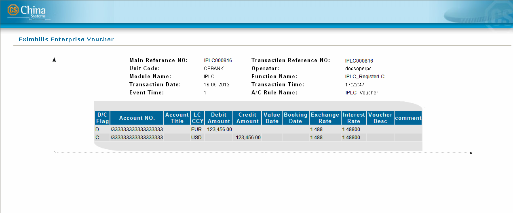{width="4.840277777777778in” height="2.015 |
| 972222222222in”} |
| ——————————————————————- |
| —————— |
+———————————————————————–+
{width="4.847916666666666in” height="2.495 |
| 833333333333in”} |
| ——————————————————————- |
| —————— |
| |
| ——————————————————————- |
| —————— |
| 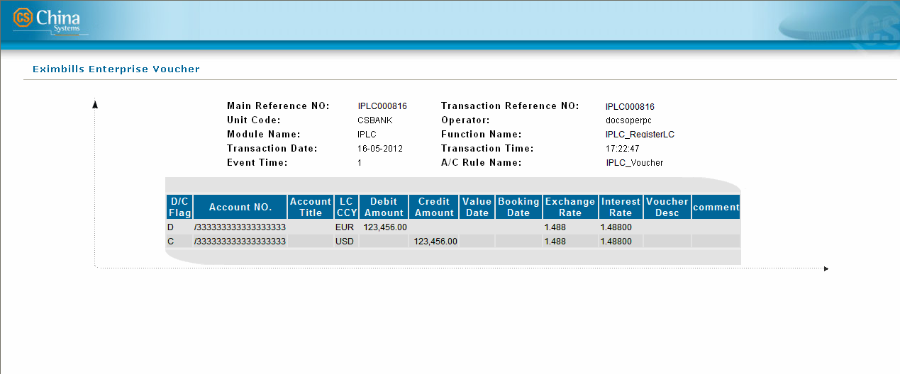{width="4.840277777777778in” height="2.015 |
| 972222222222in”} |
| ——————————————————————- |
| —————— |
+———————————————————————–+
{#section-54 .CS-head2}
Attaching Accounting Rules to the Transaction Function
To enable a transaction function to generate accounting vouchers as output, the following are required:
-
The Accounting rule must be attached to the transaction function.
-
The Accounting attribute, Trx Generate Voucher, must be attached to the transaction function.
Accounting Rule Function Component Settings
During transaction processing, one or several vouchers may be required to be generated as transaction output. The rules or conditions on which vouchers are to be generated may be defined in the Accounting Rule function component in the Function Setting tab of Transaction Function. The DV.appendField() method is used to attach the Accounting rule to the function.
[]{#_Toc18063142 .anchor}Configuration
A configuration window is used for defining the conditions for attaching Accounting rules to a transaction function.
Figure 11. Configuration Window for Accounting Rule
This window provides the following items.
Item Description
+———————–+———————–+———————–+ | {width="0.2319444 | | list all the fields | | 4444444445in” | | in the JSP file of | | height="0.27222222222 | | this function. | | 22222in”} | | Double-click on a | | Field | | field to use this in | | | | defining the | | {width="1.2298611 | | condition. | | 11111111in” | | | | height="1.39444444444 | | | | 44444in”} | | | +———————–+———————–+———————–+ | | | | +———————–+———————–+———————–+ | {width="0.2319444 | | list all the | | 4444444445in” | | available methods | | height="0.27222222222 | | that may be used for | | 22222in”} | | modifying an | | JavaScript | | accounting rule | | Methods | | condition. | | | | Double-click on a | | {width="1.2298611 | | defining the | | 11111111in” | | condition for the | | height="1.37569444444 | | accounting rule. | | 44446in”} | | | | | | **[NOTE:]{.underline} | | | | ** | | | | | | | | Refer to the EE | | | | System Reference | | | | manual for more | | | | information on the | | | | available JavaScript | | | | methods. | +———————–+———————–+———————–+ | | | | +———————–+———————–+———————–+ | {width="0.2319444 | | list all module-level | | 4444444445in” | | and system-level | | height="0.27222222222 | | accounting rules. | | 22222in”} | | Double-click on an | | AccRule | | accounting rule to | | | | use this in defining | | {width="1.2298611 | | | | 11111111in” | | **[NOTE:]{.underline} | | height="1.37777777777 | | ** | | 77778in”} | | | | | | Accounting rules are | | | | defined in the | | | | Accounting Rules | | | | function from the | | | | Transaction Function | | | | group. | +———————–+———————–+———————–+ | | | | +———————–+———————–+———————–+
+———————–+———————–+———————–+ | Gapi | | Click on an item to | | | | use this in attaching | | {width="1.2298611 | | used in sending the | | 11111111in” | | voucher to an outward | | height="1.38055555555 | | system through GAPI. | | 55555in”} | | The | | | | DV.setVoucherGapiRule | | | | () | | | | method may be used in | | | | this procedure. | | | | However, if this | | | | method is used, the | | | | GAPI rule in the | | | | Output tab of the | | | | Accounting Rule | | | | setting window must | | | | not be defined. | | | | | | | | [EXAMPLE:]{.underli | | | | ne} | | | | | | | | DV.setVoucherGapiRule | | | | (“GAPI_Rule”); | | | | | | | | DV.appendField(“Accou | | | | nting_Rule_1”); | | | | | | | | DV.appendField(“Accou | | | | nting_Rule_2”); | | | | | | | | **[NOTE:]{.underline} | | | | ** | | | | | | | | Refer to the EE GAPI | | | | Integration manual | | | | for more information | | | | on voucher GAPI, and | | | | to the EE System | | | | Reference manual for | | | | more details on the | | | | DV.setVoucherGapiRule | | | | () | | | | method. | +———————–+———————–+———————–+ | | | | +———————–+———————–+———————–+ | (Condition Text | | Use this text area to | | Area) | | define the conditions | | | | for the accounting | | | | rule. | +———————–+———————–+———————–+ | | | | +———————–+———————–+———————–+ | View/Edit | | Click on this button | | | | to view and/or edit | | | | the settings of a | | | | system-level or | | | | module-level | | | | accounting rule. | +———————–+———————–+———————–+ | | | | +———————–+———————–+———————–+ | Save | | Click on this button | | | | to save the defined | | | | accounting rule | | | | conditions. | +———————–+———————–+———————–+ | | | | +———————–+———————–+———————–+ | Cancel | | Click on this button | | | | to close the | | | | configuration window | | | | without saving the | | | | accounting rule | | | | conditions. | +———————–+———————–+———————–+
[]{#_Toc18063143 .anchor}
Procedure
To attach an Accounting rule to a transaction function:
Do the following . . .
+———————–+———————–+———————–+ | 1. Run the | | {width="3.5in” | | Function of the | | height="2.06111111111 | | Transaction | | 1111in”} | | Function group. | | | +———————–+———————–+———————–+ | | | | +———————–+———————–+———————–+ | 2. The Transaction | | {width="3.5in” | | displayed. | | height="2.06111111111 | | | | 1111in”} | | In the Function tab, | | | | select the relevant | | | | module, event, and | | | | function for which | | | | the Accounting rule | | | | is to be designated. | | | +———————–+———————–+———————–+ | | | | +———————–+———————–+———————–+ | 3. Access the | | {width="3.5in” | | tab. | | height="2.06111111111 | | | | 1111in”} | | To define the | | | | settings for the | | | | Accounting Rule | | | | function component, | | | | select Accounting | | | | Rule from the list. | | | +———————–+———————–+———————–+ | | | | +———————–+———————–+———————–+ | 4. Right-click on | | {width="3.5in” | | and select the Edit | | height="2.06111111111 | | option from the | | 1111in”} | | popup. | | | +———————–+———————–+———————–+ | | | | +———————–+———————–+———————–+ | 5. Define the | | {width="3.5in” | | Accounting Rule | | height="2.06111111111 | | function component | | 1111in”} | | in the | | | | configuration | | | | window then save | | | | the setting. | | | | | | | | [EXAMPLE:]{.underli | | | | ne} | | | | | | | | Where Issue_Pay | | | | refers to the | | | | Accounting rule, the | | | | following code may be | | | | used: | | | | | | | | DV.appendField | | | | (“Issue_Pay”); | | | +———————–+———————–+———————–+ | | | | +———————–+———————–+———————–+ | [XML | | {width="3.5in” | | ne} | | height="2.06111111111 | | | | 1111in”} | | Generate the | | | | parameter files for | | | | the Accounting | | | | transaction function | | | | component. | | | | | | | | In the Function | | | | window, select the | | | | function name from | | | | the Function tab. | | | | Selecting the | | | | function name from | | | | this tab adds the | | | | details of the | | | | transaction component | | | | to the XML files of | | | | the transaction | | | | function. This | | | | ensures that the | | | | right component | | | | settings are | | | | performed when the | | | | transaction is run. | | | | | | | | Make sure that the | | | | Function_root.xml | | | | option is selected. | | | | This adds the details | | | | of the new function | | | | to the | | | | function_root.xml | | | | file, which contains | | | | a list of all | | | | available functions. | | | +———————–+———————–+———————–+ | | | | +———————–+———————–+———————–+ | In the Setting tab of | | {width="3.5in” | | mark and select the | | height="2.06111111111 | | function from the | | 1111in”} | | list. | | | | | | | | The function | | | | components are | | | | displayed. Select the | | | | Accounting Rule | | | | component to generate | | | | its JS file. | | | +———————–+———————–+———————–+ | | | | +———————–+———————–+———————–+ | The updated | | {width="3.5in” | | file is generated in | | height="2.06111111111 | | the following paths: | | 1111in”} | | | | | | - [Parameter | | | | Drive]\[Bank | | | | Group]\[Countr | | | | y]\AP\FUNC | | | | | | | | - [Parameter | | | | Drive]\[Bank | | | | Group]\[Countr | | | | y]\WEB\FUNC | | | | | | | | This XML file | | | | contains the program | | | | type, Id, name, and | | | | module information of | | | | each transaction | | | | function. | | | +———————–+———————–+———————–+ | | | | +———————–+———————–+———————–+ | The updated XML files | | {width="3.5in” | | function are | | height="2.06111111111 | | generated in the | | 1111in”} | | following paths: | | | | | | | | - [Parameter | | | | Drive]\[Bank | | | | Group]\[Countr | | | | y]\AP\FUNC | | | | | | | | - [Parameter | | | | Drive]\[Bank | | | | Group]\[Countr | | | | y]\WEB\FUNC | | | | | | | | The filename format | | | | is func_[Function | | | | Id].xml | | | | | | | | This file contains | | | | the details of the | | | | properties and | | | | attachments of the | | | | function. | | | | | | | | **[NOTE:]{.underline} | | | | ** | | | | | | | | When the XML file for | | | | the Function | | | | parameter is | | | | generated, the | | | | [module]_ADD_MAST | | | | ER | | | | file is generated as | | | | well. This file lists | | | | the functions | | | | included in the | | | | relevant module which | | | | function attribute | | | | contains the | | | | component Trx Master | | | | Add Rec. | | | +———————–+———————–+———————–+ | | | | +———————–+———————–+———————–+ | The JS file for the | | {width="3.5in” | | function component is | | height="1.64166666666 | | generated in the | | 66666in”} | | following path: | | | | | | | | [Parameter | | | | Drive]\[Bank | | | | Group]\[Country | | | | Code]\AP\VCH | | | | | | | | The format of the XML | | | | file is | | | | vch_[Accounting | | | | Rule Information | | | | Content-Rule Id].js | | | +———————–+———————–+———————–+
+———————————————————————–+ | Voucher Maintenance | | | | A voucher maintenance function may be created for the user to view | | the voucher entry, print the voucher, or re-transmit the voucher | | centrally. To do this, perform the following procedures: | | | | - Log on as a super_admin user and set the system parameter | | VOUCHER_TRANSMIT_CLASS. Generate the XML file for the Security | | System parameter. | | | | > {width="4.847916666666666in” | | > height="2.5597222222222222in”} | | | | - In the Db Dictionary function, import the required field and | | table. Generate the XML file for table structure. | | | | ——————————————————————- | | —— | | 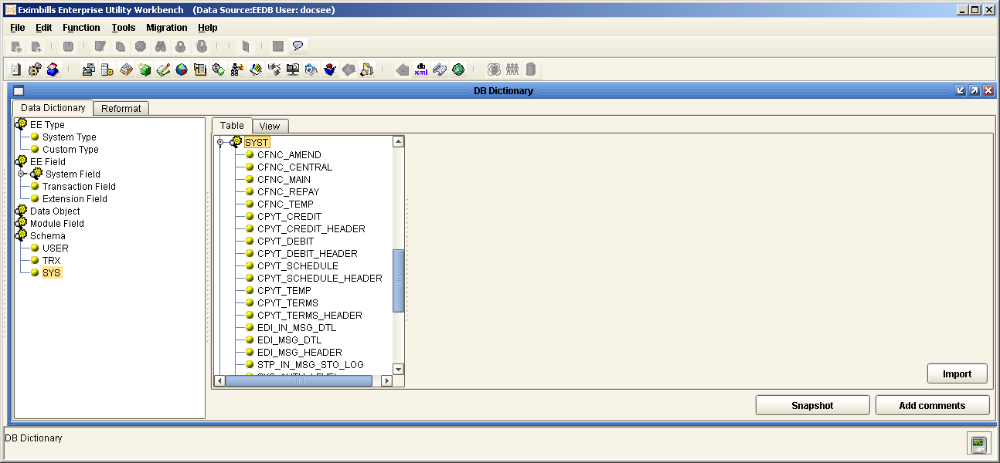{width="4.85in” height="2.2471522309711287 | | in”} | | ——————————————————————- | | —— | | | | ——————————————————————- | | ——————- | | {width="3.7916666666666665in” height="2.27 | | 2222222222222in”} | | ——————————————————————- | | ——————- | | | | - Create the voucher maintain function using the Trx Common Manager | | component. Set the following catalog details: | | | | - JSP: screen\CATA\VoucherTransmitCatalog.jsp | | | | - Table: TRX_VOUCHER_HEADER | | | | > Add the voucher maintain function to a function group and generate | | > the XML files for the function, catalog, and function group | | > parameters. Restart the server to apply the settings. | | | | ——————————————————————- | | ——————- | | {width="4.840277777777778in” height="2.240 | | 2777777777776in”} | | ——————————————————————- | | ——————- | | | | ——————————————————————- | | —————— | | {width="4.840277777777778in” height="2.904 | | 166666666667in”} | | ——————————————————————- | | —————— | | | | - In the EE browser, run the Voucher Maintain function and select a | | record from the transaction list in the catalog page. The | | selected record is then displayed. | | | | > When the Transmit button is clicked, the system reads the voucher | | > transmit class name from the sys_para.xml. The interface class | | > implements the interface com/cs/eximap/otherProIntf/ASEdiIntf.java. | | > Thus, the system implements the transmit method wherein the system | | > reads the voucher entry detail and transfers it to the transmit | | > class. When the voucher details are successfully transmitted, the | | > system updates the C_TRANSMIT_STAT with a Y status. | | | | ——————————————————————- | | ——————- | | {width="4.840277777777778in” height="1.847 | | 9166666666667in”} | | ——————————————————————- | | ——————- | +———————————————————————–+
#######
Attribute Settings
The Accounting Rule attribute, Trx Generate Voucher, is used for generating the voucher and must be attached to the transaction function.
Do the following . . .
+———————–+———————–+———————–+ | 1. Run the | | {width="3.5in” | | | | height="2.06111111111 | | Create an Attribute | | 1111in”} | | rule for the | | | | transaction function. | | | | Make sure that this | | | | includes the Trx | | | | Generate Voucher | | | | component. | | | +———————–+———————–+———————–+ | | | | +———————–+———————–+———————–+ | 2. Run the | | {width="3.5in” | | Function. | | height="2.06111111111 | | | | 1111in”} | | Attach the Attribute | | | | rule to the | | | | transaction function. | | | +———————–+———————–+———————–+ | | | | +———————–+———————–+———————–+ | [XML | | {width="3.5in” | | ne} | | height="2.06111111111 | | | | 1111in”} | | Run the XML Generator | | | | function and generate | | | | the XML files for the | | | | Function parameter. | | | | | | | | In the Function | | | | window, select the | | | | function name from | | | | the Function tab. | | | | | | | | Make sure that the | | | | Function_root.xml | | | | option is selected. | | | | This adds the details | | | | of the new function | | | | to the | | | | function_root.xml | | | | file, which contains | | | | a list of all | | | | available functions. | | | +———————–+———————–+———————–+ | | | | +———————–+———————–+———————–+ | The updated | | {width="3.5in” | | file is generated in | | height="2.06111111111 | | the following paths: | | 1111in”} | | | | | | - [Parameter | | | | Drive]\[Bank | | | | Group]\[Countr | | | | y]\AP\FUNC | | | | | | | | - [Parameter | | | | Drive]\[Bank | | | | Group]\[Countr | | | | y]\WEB\FUNC | | | | | | | | This XML file | | | | contains the program | | | | type, Id, name, and | | | | module information of | | | | each transaction | | | | function. | | | +———————–+———————–+———————–+ | | | | +———————–+———————–+———————–+ | The updated XML files | | {width="3.5in” | | function are | | height="2.06111111111 | | generated in the | | 1111in”} | | following paths: | | | | | | | | - [Parameter | | | | Drive]\[Bank | | | | Group]\[Countr | | | | y]\AP\FUNC | | | | | | | | - [Parameter | | | | Drive]\[Bank | | | | Group]\[Countr | | | | y]\WEB\FUNC | | | | | | | | The filename format | | | | is func_[Function | | | | Id].xml | | | | | | | | This file contains | | | | the details of the | | | | properties and | | | | attachments of the | | | | function. | | | +———————–+———————–+———————–+ | | | | +———————–+———————–+———————–+ | Run the XML Generator | | {width="3.5in” | | the XML files for the | | height="2.06111111111 | | Attribute parameter. | | 1111in”} | +———————–+———————–+———————–+ | | | | +———————–+———————–+———————–+
+———————–+———————–+———————–+ | The XML files are | | {width="3.5in” | | following path: | | height="2.06111111111 | | | | 1111in”} | | [Parameter | | | | Drive]\[Bank | | | | Group]\[Country]\ | | | | \AP\FUNCATTR | | | | | | | | The filename format | | | | is fattr_[Attribute | | | | Rule Id].xml | | | +———————–+———————–+———————–+
{width="0.33611111111111114in”
height="0.33611111111111114in”}NOTE: Currencies may be arranged
according to priority (e.g. EUR – USD - JPY – and then the rest in
alphabetical order). This is configured by adding the I_ORDER_PRIORITY
system field into the STD_CURRENCY and STT_CURRENCY tables. The added
field is displayed in the Currency Maintenance function where the order
of priority of each currency is to be set.
+———————————————————————–+ | Runtime Transaction Processing | | | | 1. Run the relevant function and confirm a transaction. | | | | ——————————————————————- | | ——————- | | 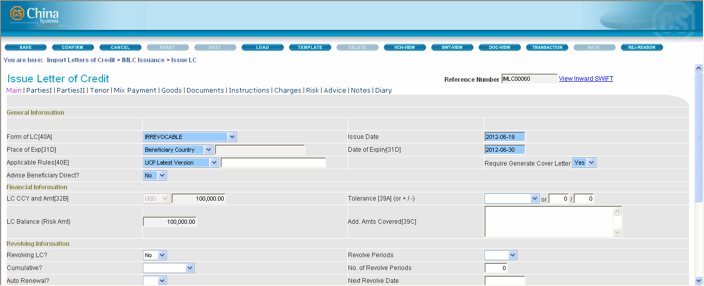{width="4.840277777777778in” height="1.653 | | 1791338582678in”} | | ——————————————————————- | | ——————- | | | | 2. The Transaction Completed screen is displayed. Click on the | | voucher button. | | | | ——————————————————————- | | —— | | {width="4.85in” height="1.5763888888888888 | | in”} | | ——————————————————————- | | —— | | | | 3. The voucher details are then displayed. | | | | {width="4.884393044619422in” | | height="1.4906846019247595in”} | | | | [EXAMPLE:]{.underline} | | | | For security reasons, generated voucher GAPI messages cannot be | | viewed by EE users during transaction processing. | +———————————————————————–+
XML Parameter Settings
-
- xml parameter files
{#section-56 .CS-head1}
XML Parameter Files
The created parameters and business logic are stored in the database as Meta data. For this Meta data to be accessible to the application server and the web server, it has to be converted to XML—the format used for the communication between the client and the server.
The XML files are generated through the XML Generator function of the Maintenance function group in the EE Utility. In most cases, the XML Generator function must be run when a parameter is created or modified using the functions discussed in this document.
{width="0.33611111111111114in”
height="0.33611111111111114in”}NOTE:
i. Generating the XML file(s) for a specific parameter may either be performed right after the creation or modification of the specific parameter, or after the creation of all the parameters required in building a module.
ii. Except for the Calculation parameter, the files generated from the XML Generator function are all XML files. For the Calculation parameter, however, the generated files are JavaScript files.
Do the following . . .
+———————–+———————–+———————–+ | 1. Run the XML | | {width="3.5in” | | from the | | height="2.06111111111 | | Maintenance | | 1111in”} | | function group. | | | +———————–+———————–+———————–+ | | | | +———————–+———————–+———————–+ | 2. The XML | | {width="3.5in” | | window is | | height="2.06111111111 | | displayed. | | 1111in”} | | | | | | When there are newly | | | | defined or modified | | | | parameters, the Meta | | | | Data to XML window is | | | | also displayed. It | | | | lists these | | | | parameters for easy | | | | selection. In this | | | | case, the parameter | | | | can be selected from | | | | this window and the | | | | Apply button clicked. | | | | Afterwards, proceed | | | | to Step 5. | | | | | | | | Alternatively, the | | | | Meta data or | | | | parameter can be | | | | manually selected | | | | from the XML | | | | Generator window. In | | | | this case, click on | | | | the Close button of | | | | the Meta Data to XML | | | | window and proceed to | | | | Step 4. | | | +———————–+———————–+———————–+ | | | | +———————–+———————–+———————–+ | 3. Double-click on | | {width="3.5in” | | parameter type from | | height="2.06111111111 | | the XML Generator | | 1111in”} | | window. | | | +———————–+———————–+———————–+ | | | | +———————–+———————–+———————–+ | 4. Depending on the | | {width="3.5in” | | type, an XML | | height="2.06111111111 | | configuration | | 1111in”} | | window may be | | | | displayed. In other | | | | cases, the process | | | | directly proceeds | | | | from Step 2 or 3 to | | | | 5. | | | | | | | | If the configuration | | | | window is displayed, | | | | specify the exact or | | | | any additional | | | | setting required to | | | | generate the relevant | | | | XML files. When the | | | | specifications are | | | | defined, click on the | | | | Save button. | | | +———————–+———————–+———————–+ | | | | +———————–+———————–+———————–+ | 5. A message is | | {width="3.4624278 | | confirming if the | | 215223097in” | | XML files are to be | | height="1.13471566054 | | generated in the | | 24322in”} | | system path. | | | | | | | | **[NOTE:]{.underline} | | | | ** | | | | | | | | The path of the XML | | | | files is defined | | | | through the | | | | GEN_XML_ROOTPATH | | | | Utility Workbench | | | | system parameter. | | | | This system parameter | | | | is configured through | | | | the System Parameter | | | | function from the | | | | Parameter Manage | | | | function group. | | | +———————–+———————–+———————–+ | | | | +———————–+———————–+———————–+ | 6. To save the XML | | {width="3.4038615 | | relevant system | | 485564305in” | | path, click on the | | height="2.42499343832 | | Yes button. | | 021in”} | | | | | | To specify another | | | | path, click on the No | | | | button. In the Save | | | | dialog box, browse | | | | for the path and | | | | click on the Save | | | | button. | | | +———————–+———————–+———————–+ | | | | +———————–+———————–+———————–+ | 7. When the | | {width="3.4291666 | | are generated, the | | 666666667in” | | system displays a | | height="0.90269685039 | | confirmation | | 37007in”} | | message. | | | +———————–+———————–+———————–+ | | | | +———————–+———————–+———————–+ | Click on the Detail | | {width="3.5in” | | information on the | | height="2.06111111111 | | paths of the | | 1111in”} | | generated XML files. | | | | | | | | [NOTE: | | | | ]{.underline} | | | | | | | | To hide this | | | | information, click on | | | | the Hide button. | | | +———————–+———————–+———————–+ | | | | +———————–+———————–+———————–+ | **[NOTE:]{.underline} | | {width="3.5in” | | | | height="2.06111111111 | | Check the indicated | | 1111in”} | | paths to see the | | | | generated XML files. | | | +———————–+———————–+———————–+
Security Manager Settings
Security Manager Settings
The EE system is accessed by opening the bank-appointed application URL. An EE end user can only process transactions and records for functions to which he has been given specific access rights. Before this can be done, however, the following settings must already be created:
-
The business units for the bank-country group have been created.
-
The EE browser users with Create, Modify, Delete, and Release security rights have been created for the relevant business unit.
-
The functions have been assigned to the relevant business unit.
The setup of business units is configured through the Business Unit Config function of the EE Utility. The administration of user profiles, user functions, business units, business unit functions, as well as other maintenance tools is done in the Security Manager.
{width="0.33611111111111114in”
height="0.33611111111111114in”}NOTE:
i. For information on setting up business units, refer to the EE System Administration Functions documentation.
ii. For detailed information on the Security Manager, refer to the EE Security Manager documentation.
To Assign EE Functions to an EE End-User
+———————–+———————–+———————–+ | 1. Log on the EE | | {width="3.5in” | | with Create rights | | height="1.72361111111 | | to the Security | | 11112in”} | | Manager. | | | | | | | | Run the following | | | | function: Security | | | | Manager > SECU | | | | Security Manager > | | | | Add New User | | | +———————–+———————–+———————–+ | | | | +———————–+———————–+———————–+ | 2. Create the | | {width="3.5in” | | (end-user). Among | | height="1.91666666666 | | other profile | | 66667in”} | | details, assign the | | | | Id, password, and | | | | business unit of | | | | this user. | | | +———————–+———————–+———————–+ | | | | +———————–+———————–+———————–+ | 3. Log on the EE | | {width="3.5in” | | with Release rights | | height="1.98958333333 | | to the Security | | 33333in”} | | Manager. | | | | | | | | Run the following | | | | function: Security | | | | Manager > SECU | | | | Security Manager > | | | | Release User | | | +———————–+———————–+———————–+ | | | | +———————–+———————–+———————–+ | 4. Release the | | {width="3.5in” | | profile. | | height="2.02777777777 | | | | 77777in”} | +———————–+———————–+———————–+ | | | | +———————–+———————–+———————–+ | 5. Log on the EE | | {width="3.5in” | | with Create rights | | height="1.72361111111 | | to the Security | | 11112in”} | | Manager. | | | | | | | | Run the following | | | | function: Security | | | | Manager > SECU | | | | Security Manager > | | | | Edit User Function | | | +———————–+———————–+———————–+ | | | | +———————–+———————–+———————–+ | 6. Assign the | | {width="3.5in” | | the new user. The | | height="1.91388888888 | | user can only be | | 8889in”} | | given rights to | | | | function groups | | | | that are assigned | | | | to his business | | | | unit. | | | +———————–+———————–+———————–+ | | | | +———————–+———————–+———————–+ | 7. Log on the EE | | {width="3.5in” | | with Release rights | | height="1.98958333333 | | to the Security | | 33333in”} | | Manager. | | | | | | | | Run the following | | | | function: Security | | | | Manager > SECU | | | | Security Manager > | | | | Release User Function | | | +———————–+———————–+———————–+ | | | | +———————–+———————–+———————–+ | 8. Release the | | {width="3.5in” | | user-and-function | | height="1.96805555555 | | profile. | | 55554in”} | +———————–+———————–+———————–+ | | | | +———————–+———————–+———————–+ | **[NOTE:]{.underline} | | {width="3.5in” | | | | height="1.64305555555 | | The newly created | | 55555in”} | | user may now access | | | | the EE system. | | | +———————–+———————–+———————–+ | | | | +———————–+———————–+———————–+ | Only the user’s | | {width="3.5in” | | groups are made | | height="1.81388888888 | | available for use in | | 88889in”} | | transaction | | | | processing. | | | +———————–+———————–+———————–+
System Fields
-
Master table system fields
-
ledger table system fields
-
event table system fields
-
event master table system fields
-
Master Table System Fields
Field Name Field Type Description
C_BK_GRP_ID VARCHAR (12) Bank Group Id C_CP_UNIT_CODE VARCHAR (12) Processing Center Unit Code C_CP_UNIT_CODE1 VARCHAR (12) Processing Center Unit Code 1 C_CUST_ID VARCHAR (30) Customer Id C_DO_NAME VARCHAR (255) Data Object Name C_EVENT_NAME VARCHAR (20) Event Name C_EVENT_TIME VARCHAR (20) Event Time C_FUNC_SHORT_NAME VARCHAR (16) Function Short Name C_LOCKED_FLAG VARCHAR (1) Locked Flag C_LOCKED_OP VARCHAR (32) Locked Operator C_LOCK_FUNC_ID VARCHAR (12) Locked Function Id C_MAIN_REF VARCHAR (40) PRIMARY KEY Main Reference Number C_MODULE VARCHAR (4) Module C_NOW_EVENT VARCHAR (20) Now Event C_RELE_BY VARCHAR (32) Release By C_TRX_REF VARCHAR (40) Transaction Reference Number C_TRX_STATUS VARCHAR (1) Transaction Status C_UNIT_CODE VARCHAR (12) PRIMARY KEY Business Unit C_USER_ID VARCHAR (32) User Id D_CREA_DATE DATE Date Created D_RELE_DATE DATE Date Released D_SVR_GMT DATE SVR GMT Date D_SYS_OP_DATE DATE System Operation Date D_SYS_REL_DATE DATE System Release Date I_CANCEL_ETIMES INTEGER Cancel Etimes I_CROSS_ETIMES INTEGER (This is a system field for Factoring.) I_EVENT_TIMES INTEGER Event Times T_SVR_GMT DATE SVR GMT Time T_SYS_OP_TIME DATE System Operation Time T_SYS_REL_TIME DATE System Release Time Y_AMT DECIMAL (18, 3) Amount
{#section-57 .CS-head1}
Ledger Table System Fields
Field Name Field Type Description
CE_SECU_SAV VARCHAR (3) CE_SECU_SAV C_AUTH_BU VARCHAR (12) Authorize Business Unit C_AUTH_STATUS VARCHAR (10) Authorize Status C_BK_GROUP_ID VARCHAR (12) Bank Group Id C_CP_UNIT_CODE VARCHAR (12) Processing Center Unit Code C_CP_UNIT_CODE1 VARCHAR (12) Processing Center Unit Code 1 C_CREA_BY VARCHAR (32) Create By C_CUST_ID VARCHAR (30) Customer Id C_DATA_CHANGED CLOB (4000) C_DATA_CHANGED C_DO_NAME VARCHAR (255) Data Object Name C_EVENT_DESC LONG VARCHAR Event Description C_EVENT_NAME VARCHAR (20) Event Name C_EVENT_STATUS VARCHAR (1) Event Status C_EVENT_TIME VARCHAR (20) Event Time C_FUNC_ID VARCHAR (12) Function Id C_FUNC_SHORT_NAME VARCHAR (16) Function Short Name C_LOCKED_FLAG VARCHAR (1) Locked Flag C_LOCKED_OP VARCHAR (32) Locked Operator C_LOCK_FUNC_ID VARCHAR (12) Locked Function Id C_MAIN_REF VARCHAR (40) PRIMARY KEY Main Reference Number C_MODULE VARCHAR (4) Module C_NOW_EVENT VARCHAR (20) Now Event C_ORI_MAIN_REF CHARACTER (40) C_ORI_MAIN_REF C_OUTPUT_INFO VARCHAR (16) Output Information C_PARENT_ID VARCHAR (12) C_PARENT_ID C_REFUSE_REASON VARCHAR (200) Reason for Refusal C_RELE_BY VARCHAR (32) Release By C_TEMP_DATA LONG VARCHAR Temp Data C_TRX_REF VARCHAR (40) Transaction Reference Number C_UNIT_CODE VARCHAR (12) PRIMARY KEY Business Unit C_USER_ID VARCHAR (32) User Id D_CREA_DATE DATE Date Created D_RELE_DATE DATE Date Released D_SVR_GMT DATE SVR GMT Date D_SYS_OP_DATE DATE System Operation Date D_SYS_REL_DATE DATE System Release Date I_AUTH_LEVEL INTEGER Authorize Level I_CROSS_ETIMES INTEGER (This is a system field for Factoring.) I_EVENT_TIMES INTEGER PRIMARY KEY Event Times I_OP_LEVEL INTERGER Operator Level I_PREV_ETIME INTERGER I_PREV_ETIME I_PREV_ETIMES INTERGER Previous Function Event Times T_CREA_TIME DATE Create Time T_RELE_TIME DATE Release Time T_SVR_GMT DATE SVR GMT Time T_SYS_OP_TIME DATE System Operation Time T_SYS_REL_TIME DATE System Release Time
Event Table System Fields
Field Name Field Type Description
C_BK_GRP_ID VARCHAR (12) Bank Group Id C_CP_UNIT_CODE VARCHAR (12) Processing Center Unit Code C_CP_UNIT_CODE1 VARCHAR (12) Processing Center Unit Code 1 C_CUST_ID VARCHAR (30) Customer Id C_DO_NAME VARCHAR (255) Data Object Name C_EVENT_NAME VARCHAR (20) Event Name C_EVENT_STATUS VARCHAR (1) Event Status C_EVENT_TIME VARCHAR (20) Event Time C_FUNC_SHORT_NAME VARCHAR (16) Function Short Name C_HISTORY_EVENT_TIMES VARCHAR (256) History Event Times C_LOCKED_FLAG VARCHAR (1) Locked Flag C_LOCKED_OP VARCHAR (32) Locked Operator C_LOCK_FUNC_ID VARCHAR (12) Locked Function Id C_MAIN_REF VARCHAR (40) PRIMARY KEY Main Reference Number C_MODULE VARCHAR (4) Module C_NOW_EVENT VARCHAR (20) Now Event C_RELE_BY VARCHAR (32) Release By C_TRX_REF VARCHAR (40) Transaction Reference Number C_TRX_STATUS VARCHAR (1) Transaction Status C_UNIT_CODE VARCHAR (12) PRIMARY KEY Business Unit C_USER_ID VARCHAR (32) User Id D_CREA_DATE DATE Date Created D_RELE_DATE DATE Date Released D_SVR_GMT DATE SVR GMT Date D_SYS_OP_DATE DATE System Operation Date D_SYS_REL_DATE DATE System Release Date I_CROSS_ETIMES INTEGER (This is a system field for Factoring.) I_EVENT_TIMES INTEGER PRIMARY KEY Event Times I_PRE_EVENT_TIMES INTEGER Previous Function Event Times T_RELE_TIME Date Time Released T_SVR_GMT DATE SVR GMT Time T_SYS_OP_TIME DATE System Operation Time T_SYS_REL_TIME DATE System Release Time
{#section-58 .CS-head1}
Event Master Table System Fields
+————————–+——————–+——————————-+ | Field Name | Field Type | Description | +==========================+====================+===============================+ | C_BK_GROUP_ID | CHARACTER (12) | Bank Group Id | +————————–+——————–+——————————-+ | C_CP_UNIT_CODE | VARCHAR (12) | Processing Center Unit Code | +————————–+——————–+——————————-+ | C_CP_UNIT_CODE1 | VARCHAR (12) | Processing Center Unit Code 1 | +————————–+——————–+——————————-+ | C_CUST_ID | CHARACTER (20) | Customer Id | +————————–+——————–+——————————-+ | C_DO_NAME | VARCHAR (255) | Data Object Name | +————————–+——————–+——————————-+ | C_EVENT_NAME | CHARACTER (20) | Event Name | +————————–+——————–+——————————-+ | C_EVENT_STATUS | CHARACTER (20) | Event Status | +————————–+——————–+——————————-+ | C_EVENT_TIME | DATE | Event Time | +————————–+——————–+——————————-+ | C_FUNC_SHORT_NAME | CHARACTER (16) | Function Short Name | +————————–+——————–+——————————-+ | C_HISTORY_EVENT_TIMES | VARCHAR (256) | History Event Times | +————————–+——————–+——————————-+ | C_LOCKED_FLAG | CHARACTER (1) | Locked Flag | +————————–+——————–+——————————-+ | C_LOCKED_OP | VARCHAR(32) | Locked Operator | +————————–+——————–+——————————-+ | C_LOCK_FUNC_ID | CHARACTER (12) | Locked Function Id | +————————–+——————–+——————————-+ | C_MAIN_REF | CHARACTER (40) | Main Reference Number | | | | | | | PRIMARY KEY | | +————————–+——————–+——————————-+ | C_MODULE | CHARACTER (4) | Module | +————————–+——————–+——————————-+ | C_NOW_EVENT | CHARACTER (20) | Now Event | +————————–+——————–+——————————-+ | C_RELE_BY | CHARACTER (16) | Release By | +————————–+——————–+——————————-+ | C_TRX_REF | CHARACTER (40) | Transaction Reference Number | | | | | | | PRIMARY KEY | | +————————–+——————–+——————————-+ | C_TRX_STATUS | CHARACTER (1) | Transaction Status | +————————–+——————–+——————————-+ | C_UNIT_CODE | CHARACTER (12) | Business Unit | | | | | | | PRIMARY KEY | | +————————–+——————–+——————————-+ | C_USER_ID | CHARACTER (32) | User Id | +————————–+——————–+——————————-+ | D_CREA_DATE | DATE | Date Created | +————————–+——————–+——————————-+ | D_RELE_DATE | DATE | Date Released | +————————–+——————–+——————————-+ | D_SVR_GMT | DATE | SVR GMT Date | +————————–+——————–+——————————-+ | D_SYS_OP_DATE | DATE | System Operation Date | +————————–+——————–+——————————-+ | D_SYS_REL_DATE | DATE | System Release Date | +————————–+——————–+——————————-+ | I_CROSS_ETIMES | INTEGER | I_CROSS_ETIMES | +————————–+——————–+——————————-+ | I_EVENT_TIMES | INTEGER | Event Times | +————————–+——————–+——————————-+ | I_PRE_EVENT_TIMES | INTEGER | Previous Function Event Times | +————————–+——————–+——————————-+ | T_RELE_TIME | DATE | Time Released | +————————–+——————–+——————————-+ | T_SVR_GMT | DATE | SVR GMT Time | +————————–+——————–+——————————-+ | T_SYS_OP_TIME | DATE | System Operation Time | +————————–+——————–+——————————-+ | T_SYS_REL_TIME | DATE | System Release Time | +————————–+——————–+——————————-+
EXIMTAGS
EXIMTAGS
EXIMTAGS are predefined system tags in EE that are used to identify attributes in JSP screen files.
The complete list of EXIMTAGS is found in this file: [EximbillWeb.war]\WEB-INF\tlds\EXIMTAGS.tld
Figure B. Eximtags.tld File
{width="0.33611111111111114in”
height="0.33611111111111114in”}NOTE: Before the browser can interpret
the EXIMTAGS referenced in a JSP screen file, it first locates the
library containing the EXIMTAGS as declared in the head tag. Refer to
the Screen discussion in Chapter Seven.
The available EXIMTAGS are as follows.
- [GetData]{.underline}
- Tag Class: com.cs.eximweb.usertag.BTAGGetSessionData
- The GetData EXIMTAG is associated with session data.
- [ScriptUrl]{.underline}
- Tag Class: com.cs.eximweb.usertag.BTAGJavascriptURL
- The ScriptUrl EXIMTAG has a unique attribute for it contains the CSS (cascading stylesheet) file for the web screen.
A CSS file is usually attached to the JSP screen file in order to create a standard look to the web pages of the transaction screens. It is also used to define the class of the transaction fields which may be Mandatory, Optional or Protected. In the EE system, the pre-defined CSS file is already embedded in the ScriptUrl EXIMTAG.
- [CCY EXIMTAG]{.underline}
- The system maintains all the currencies in the Standing Data module. If a particular dropdown list in the transaction screen should include all the currencies defined in the Standing Data module, the currency EXIMTAG must be attached to it.
The following code is added beside the Currency field:
(Start of Code)<EXIMTAGS:DropDownElement elementType="CCY"/>(End of Code)
- [CNTY_CODE EXIMTAG]{.underline}
- This EXIMTAG is used to generate the option values for the Country Code field as defined by the Super Administrator in the Business Unit Config function of the EE Utility.
The following code is added beside the Country Code field:
(Start of Code)<EXIMTAGS:DropDownElement elementType="CNTY_CODE”/>(End of Code)
{width="4.240277777777778in” height="0.4722222222222222in”}
-
- [FldConv EXIMTAG]{.underline}
- Tag Class: com.cs.eximweb.usertag.BTAGFldConversion
This EXIMTAG is used to generate the option values of Interpreter-type fields (i.e., fields that allow the user to select an option from a dropdown list) as defined in the Field Conversion function of the EE Utility. The smType code is used to determine if the Field Conversion values setting is in the System level or Module level. If the Field Conversion rule is defined on the system level, the smType is set to “True”. Otherwise, the smType is set to “False” indicating that the Field Conversion rule is defined on the Module level.
The Field Conversion EXIMTAG is attached within the <select></select> tag of the transaction function screen and is added beside the Interpreter-type field.
(Start of Code)<EXIMTAGS:FldConv fldName="AVAL_BY"smType="false"/>(End of Code)
- [Custom Tag]{.underline}
- The EE system may utilize a project-specific system level tag to support a project-specific Java class. This Custom Tag is a common tag that is called BTagCommTag and is mainly used at screen initialization. This system tag is tasked to retrieve values from the database or from a file so that these retrieved values may be displayed on a transaction screen.
The Custom Tag is utilized with a system interface that is called ItagComponent through which the project-specific Java class is invoked during screen initialization. The system calls this interface to invoke the getFieldValue method, which sets a map of Field Name-to-Field Value.
When the Custom Tag generates the JavaScript, the values of the mapped fields are displayed automatically. At JavaScript generation, the Custom Tag checks the screen XML of the transaction JSP. If the mapped field name exists in the screen XML, the system sets the value directly to the JSP. Otherwise, the system sets the value to a variable according to the returned map.
[EXAMPLE:]{.underline}
Calling WgetCustInfo, a project-defined class, from JSP:
[JSP (SYS_GetCustInfo.jsp) codes:]{.underline}
<EXIMTAGS:COMMTAG name="custInfo”/ >
[System-maintained file: ]{.underline}
<tag>
<name>COMMTAG</name>
<tagclass>com.cs.eximweb.usertag.BTAGCommTag</tagclass>
</tag>[EE_Project_Component_Config.xml, project-maintained: ]{.underline}
<components>
<component name="custInfo” jar="com.jar” md5="aaa.md5”>
com.cs.project.WgetCustInfo
</component>
</components>The project-defined class WGetCustInfo is invoked as follows when the JSP is forwarded and the Custom Tag is invoked:
public class WGetCustInfo implement ITagComponent{
public Map getFieldValues(HttpServletRequest req )throws Exception{
Map rets = new HashMap();
for(int n=0;n< names.length;n++) {
//get the fieldValue from the DB using the System APIs
}
return rets;
}
}When the Custom Tag is invoked, the system calls the getFieldValues method of the WGetCustInfo Java class to get the field values. The COMMTAG then generates the following JavaScript and writes the JavaScript to the JSP, by which the related JSP field value is updated:
[Sample return map:]{.underline}
{CUST_NAME=vs, CUST_ADDRESS=USA.., SYS_FUNC_NAME=Function test, CUST_AC_NO=[CUST001,CUST002]}
In this sample, the CUST_NAME and CUST_ADDRESS fields exist in the screen XML. The SYS_FUNC_NAME field and CUST_AC_NO field, on the other hand, do not exist in the screen XML. In this case, the JS is generated as:
<script language="javascript”>
document.MAINFORM.CUST_NAME.value="vs”; //the field CUST_NAME exists in the JSP.
document.MAINFORM.CUST_ADDRESS.value="USA..";
SYS_FUNC_NAME="Function Test”; //there’s no “SYS_FUNC_NAME” field in the JSP, so that the system assign the value to an auto-created variable.
CUST_AC_NO=[CUST001, CUST002];
</script >
- [SwiftNotice]{.underline}
- Tag Class: com.cs.eximweb.usertag.BTAGSwiftNoticeView
- [TRXLISTVIEW]{.underline}
- Tag Class: com.cs.eximweb.usertag.BTAGTrxListViews
- [GETTASKLOGS]{.underline}
- Tag Class: com.cs.eximweb.usertag.BTAGViewTaskList
- [BTAGCTMSTRXLISTVIEW]{.underline}
- Tag Class: com.cs.eximweb.usertag.project.BTAGCTMSTrxListView
- [DATAMININGLISTVIEW]{.underline}
- Tag Class: com.cs.eximweb.usertag.BTAGDataMiningListView
- [BUCONSTVIEW]{.underline}
- Tag Class: com.cs.eximweb.usertag.BTAGBUConstView
- [CBCLIMITERRORVIEW]{.underline}
- Tag Class: com.cs.eximweb.usertag.BATGCBCLimit
- [VIEWGAPI]{.underline}
- Tag Class: com.cs.eximweb.usertag.BTAGViewGAPI
- [CheckModalDialog]{.underline}
- Tag Class: com.cs.eximweb.usertag.BTAGRestoreDialog
- [NOFETCHTRXLISTVIEW]{.underline}
- Tag Class: com.cs.eximweb.usertag.BTAGNoFetchTrxListView
- [SECUTRXLISTVIEW]{.underline}
- Tag Class: com.cs.eximweb.usertag.BTAGSecuTrxListView
-
- [SECUTRXNOFETCHLISTVIEW]{.underline}
- Tag Class: com.cs.eximweb.usertag.BTAGSecuNoFetchTrxListView
- [StartOfDayDate]{.underline}
- Tag Class: com.cs.eximweb.usertag.BTAGSodDateTag
- [STDINQEIRATEVIEW]{.underline}
- Tag Class: com.cs.eximweb.usertag.BTAGStdInqExInRateTrxListView
- [APARGENERATE]{.underline}
- Tag Class: com.cs.eximweb.usertag.BTAGAPAR
- [APARLISTVIEW]{.underline}
- Tag Class: com.cs.eximweb.usertag.BTAGAPARListView
- [BatchManage]{.underline}
- Tag Class: com.cs.eximweb.usertag.BTAGBatchManager
- [UserBatchManage]{.underline}
- Tag Class: com.cs.eximweb.usertag.BTAGUserBatchManager
- [TemplateFetch]{.underline}
- Tag Class: com.cs.eximweb.usertag.BTAGTemplateFetch
- [TrxTemplate]{.underline}
- Tag Class: com.cs.eximweb.usertag.BTAGTrxTemplate
- [LISTVIEWER]{.underline}
- Tag Class: com.cs.eximweb.usertag.BTAGListViewer
- [HisCharges]{.underline}
- Tag Class: com.cs.eximweb.usertag.BTAGHisCharges
- [VoucherEntry]{.underline}
- Tag Class: com.cs.eximweb.usertag.BTAGVoucherEntry
- [GetData]{.underline}
- Tag Class: com.cs.eximweb.usertag.BTAGGetSessionData
- [PageCtrl]{.underline}
- Tag Class: com.cs.eximweb.usertag.BTAGPageCtrl
- [HtmlElement]{.underline}
- Tag Class: com.cs.eximweb.usertag.BTAGHtmlTag
- [DropDownElement]{.underline}
- Tag Class: com.cs.eximweb.usertag.BTAGHtmlElementTag
- [DocumentInq]{.underline}
- Tag Class: com.cs.eximweb.usertag.BTAGDocumentInquire
- [VoucherInq]{.underline}
- Tag Class: com.cs.eximweb.usertag.BTAGVoucherInquire
- [SwiftPreInq]{.underline}
- Tag Class: com.cs.eximweb.usertag.BTAGSwiftPreviewInquire
- [SwiftInq]{.underline}
- Tag Class: com.cs.eximweb.usertag.BTAGSwiftInquire
- [GETCUBK]{.underline}
- Tag Class: com.cs.eximweb.usertag.BTAGGetCUBK
- [INQCUBK]{.underline}
- Tag Class: com.cs.eximweb.usertag.BTAGInqCUBK
- [UserBUOP]{.underline}
- Tag Class: com.cs.eximweb.usertag.BTAGUserBUOP
- [ScriptUrl]{.underline}
- Tag Class: com.cs.eximweb.usertag.BTAGJavascriptURL
- [createApplet]{.underline}
- Tag Class: com.cs.eximweb.usertag.BTAGMacDataApplet
- [GenJS]{.underline}
- Tag Class: com.cs.eximweb.usertag.BTAGGenJavascript
- [IncludeFile]{.underline}
- Tag Class: com.cs.eximweb.usertag.BTAGNoCacheJavascriptURL
- [GenData]{.underline}
- Tag Class: com.cs.eximweb.usertag.BTAGGenData
- [EndOfDay]{.underline}
- Tag Class: com.cs.eximweb.usertag.project.BTAGCITICEndOfDay
- [MultiPhase]{.underline}
- Tag Class: com.cs.eximweb.usertag.BTAGMultiPhase
- [ChargeProc]{.underline}
- Tag Class: com.cs.eximweb.usertag.BTAGChargeProc
- [DisableWebRefresh]{.underline}
- Tag Class: com.cs.eximweb.usertag.BTAGDisableWebRefresh
-
[UploadImaging]{.underline}
- Tag Class: com.cs.eximweb.usertag.BTAGUploadImaging
-
[UploadGraphics]{.underline}
- Tag Class: com.cs.eximweb.usertag.BTAGUploadGraphics
- [ViewImaging]{.underline}
- Tag Class: com.cs.eximweb.usertag.BTAGViewImaging
- [DashBoard]{.underline}
- Tag Class: com.cs.eximweb.usertag.BATGDashBoard
- [ViewDataComm]{.underline}
- Tag Class: com.cs.eximweb.usertag.BTAGViewDataComm
- [Pagination]{.underline}
- Tag Class: com.cs.eximweb.usertag.BTAGPagination
- [GetUnitCode]{.underline}
- Tag Class: com.cs.eximweb.usertag.BTAGetUnitCode
- [GetSysParamAndVar]{.underline}
- Tag Class: com.cs.eximweb.usertag.BTAGGetSysParametersAndVariables
- [IncomingSwift]{.underline}
- Tag Class: com.cs.eximweb.usertag.BTAGIncomingSwiftView
- [IncomingXML]{.underline}
- Tag Class: com.cs.eximweb.usertag.BTAGIncomingXMLView
- [About]{.underline}
- Tag Class: com.cs.eximweb.usertag.BTAGAbout
- [SwiftView]{.underline}
- Tag Class: com.cs.eximweb.usertag.BTAGSwiftView
- [voucherGapiError]{.underline}
- Tag Class: com.cs.eximweb.usertag.BTAGVoucherGapiError
- [EditImaging]{.underline}
- Tag Class: com.cs.eximweb.usertag.BTAGEditImaging
- [ImagingMode]{.underline}
- Tag Class: com.cs.eximweb.usertag.BTAGImageViewMode
- [SuperView]{.underline}
- Tag Class: com.cs.eximweb.usertag.BTAGSuperView
- [SELECTUNIT]{.underline}
- Tag Class: com.cs.eximweb.usertag.BTAGSelectUnit
- [TRXREF]{.underline}
- Tag Class: com.cs.eximweb.usertag.BTAGTrxRefMaintain
- [GETPRTNM]{.underline}
- Tag Class: com.cs.eximweb.usertag.BTAGGetVPrtName
- [BTAGCTMSInfo]{.underline}
- Tag Class: com.cs.eximweb.usertag.project.BTAGCTMSInfo
- [MultiReleDtailListView]{.underline}
- Tag Class: com.cs.eximweb.usertag.BTAGMultiReleDtailListView
- [TelexInq]{.underline}
- Tag Class: com.cs.eximweb.usertag.BTAGTelexInquire
- [STDSWIFTTRTLOG]{.underline}
- Tag Class: com.cs.eximweb.usertag.BTAGInquireSwiftTrtLog
- [FuncList]{.underline}
- Tag Class: com.cs.eximweb.usertag.BTAGFuncListTag
- [COMMTAG]{.underline}
- Tag Class: com.cs.eximweb.usertag.BTAGCommTag
- [CompositeViewInclude]{.underline}
- Tag Class: com.cs.eximweb.usertag.BTAGCompositeViewInclude
- [IncludeRuleJS]{.underline}
- Tag Class: com.cs.eximweb.usertag.BTAGIncludeRuleJS
- [GapiHouseKeeping]{.underline}
- Tag Class: com.cs.eximweb.usertag.BTAGGapiHouseKeeping
- [DataObject]{.underline}
- Tag Class: com.cs.eximweb.usertag.tsu.BTAGDataObject
- [SHOWDETAILDO]{.underline}
- Tag Class: com.cs.eximweb.usertag.tsu.BTAGListDetailDO
- [BOCGETERROR]{.underline}
- Tag Class: com.cs.eximweb.usertag.project.BATGSetErrorToSucc
- [SECUTRXTSULISTVIEW]{.underline}
- Tag Class: com.cs.eximweb.usertag.BTAGSecuTrxTsuListView
- [EdiInq]{.underline}
- Tag Class: com.cs.eximweb.usertag.BTAGEdiInquire
- [IncomingEdi]{.underline}
- Tag Class: com.cs.eximweb.usertag.BTAGIncomingEdiView
- [OnlineUserView]{.underline}
- Tag Class: com.cs.eximweb.usertag.BTAGOnlineUserView
-
[SODEODBatchJobReport]{.underline}
- Tag Class: com.cs.eximweb.usertag.BTAGSODEODBatchJobReport
-
[StatementView]{.underline}
- Tag Class:com.cs.eximweb.usertag.BTAGStatementView
-
[cycDiv]{.underline}
- Tag Class: com.cs.eximweb.usertag.cyc.CycDivTag
- [cycTr]{.underline}
- Tag Class: com.cs.eximweb.usertag.cyc.CycTrTag
- [attribute]{.underline}
- Tag Class: com.cs.eximweb.usertag.cyc.element.NameAttributeTag
- [deleteButton]{.underline}
- Tag Class: com.cs.eximweb.usertag.cyc.element.DeleteButtonTag
- [addButton]{.underline}
- Tag Class: com.cs.eximweb.usertag.cyc.AddButtonTag
- [input]{.underline}
- Tag Class: com.cs.eximweb.usertag.cyc.element.InputTag
- [textarea]{.underline}
- Tag Class: com.cs.eximweb.usertag.cyc.element.TextareaTag
- [select]{.underline}
- Tag Class: com.cs.eximweb.usertag.cyc.element.SelectTag
- [img]{.underline}
- Tag Class: com.cs.eximweb.usertag.cyc.element.ImgTag
- [I18N]{.underline}
- Tag Class: com.cs.eximweb.usertag.BTAGI18N
- [Payment]{.underline}
- Tag Class: com.cs.eximweb.usertag.BTAGDoIncludeManager
- [GAPIRespInteraction]{.underline}
- Tag Class: com.cs.eximweb.usertag.BTAGGAPIRespInteraction
- [GenLogOffURL]{.underline}
- Tag Class: com.cs.eximweb.usertag.BTAGGenLogOffURL
- [InqRefuseHistory]{.underline}
- Tag Class: com.cs.eximweb.usertag.BTAGInqRefuseHistory
- [DYNAINCLUDE]{.underline}
- Tag Class: com.cs.eximweb.usertag.BTAGDynamicInclude
- [INQINSWTRELATEDINFO]{.underline}
- Tag Class: com.cs.eximweb.usertag.BTAGInqInswtRelatedInfo
- [HiddenImageView]{.underline}
\- Tag Class: com.cs.eximweb.usertag.BTAGHiddenImageView
- [ArchivingLogList]{.underline}
\- Tag Class: com.cs.eximweb.usertag.BTAGArchivingLogList
- [INVCSUMM]{.underline}
- Tag Class: com.cs.eximweb.usertag.BTAGInvcSummaryList
- [GapiMessageInquire]{.underline}
\- Tag Class: com.cs.eximweb.usertag.BTAGGapiMessageInquire
- [SwiftCombined]{.underline}
\- Tag Class: com.cs.eximweb.usertag.BTAGSwiftCombinedViewButton
- [IncomingTSU]{.underline}
\- Tag Class: com.cs.tsu.usertag.BTAGIncomingTSUView
- [GetFldValue]{.underline}
\- Tag Class: com.cs.eximweb.usertag.BTAGGetFieldValueFromReqSes
- [BTAGFuncFlowTaskList]{.underline}
\- Tag Class: com.cs.eximweb.usertag.BTAGFuncFlowTaskList
- [BtagPrintToken]{.underline}
\- Tag Class: com.cs.eximweb.usertag.BtagPrintToken
- [BTAGAssignUserList]{.underline}
\- Tag Class: com.cs.eximweb.usertag.BTAGAssignUserList
- [TSUMSM]{.underline}
\- Tag Class: com.cs.eximweb.usertag.BTAGTSUInqDSMatchRpt
Multiple Pending Configuration
Multiple Pending Configuration
Through specific parameter settings, multiple pending records (transaction records with P as the value for C_TRX_STATUS) with the same reference number (C_MAIN_REF value) can be processed. This depends on the type of function that is run: critical or non-critical.
A non-critical function, on the other hand, does not directly affect the movement of a transaction record. Most of the time, these are supplementary functions like the General Correspondence function.
When the proper settings are defined, the system should be able to do the following:
-
Process a new transaction even if there is a transaction in pending status with the same reference number.
**[EXAMPLE:
]{.underline}**A record with reference number IPLC0001 can be processed under the General Correspondence function even if there is a pending transaction under the Register Documents function for IPLC0001. -
Delete or fix the middle pending transaction created by a critical function.
**[EXAMPLE:
]{.underline}**Scenario:
-
An Issue Letter of Credit transaction is created with reference number IPLC0001and is released.
-
A Register Document transaction is created under the same reference number using the Register Document function and is released.
-
The issued LC undergoes an amendment process through the Amend LC function but is not yet released
-
A General Correspondence transaction under the same reference number is created and not released.
In this scenario, the record created through the Amend LC function (critical function) and the record created through the General Correspondence function (non-critical function) both have a Pending status. The system allows the user to delete or fix the pending Amend LC transaction.
- Delete or fix the last pending transaction created by a non-critical function.
**[EXAMPLE:
]{.underline}**As a continuation from the previous example, the record created through the Amend LC function (critical function), and the record created through the General Correspondence function (non-critical function) both have a Pending status. In this scenario, the system allows the user to delete or fix the General Correspondence record.
- Delete or fix the middle pending transaction created by a non-critical function.
[EXAMPLE:]{.underline}
Scenario:
-
An Issue Letter of Credit transaction is created with reference number IPLC0001 and is released.
-
A Register Document transaction is created under the same reference number using the Register Document function and is released.
-
A General Correspondence transaction under the same reference number is created and not released. Then the issued LC undergoes an amendment process through the Amend LC function but is not yet released.
In this scenario, the record created through the General Correspondence (non-critical function), and the record created through the Amend LC function (critical function) both have a Pending status. The system allows the user to delete or fix the pending General Correspondence record even if the last event in the transaction processed is created by a critical function.
[NOTE:]{.underline}
Following the scenario from the previous example, the record created through the General Correspondence function (non-critical function), and the record created through the Amend LC function (critical function) both have a Pending status. The system allows the user to delete or fic the pending Amend LC record.
-
Keep transactions created by non-critical functions in pending status even when authorizing transactions created by critical functions.
**[EXAMPLE:
]{.underline}**IPLC0001 has one pending transaction created by the Register Documents function. It also has one pending transaction created by the General Correspondence function. When the transaction created by the Register Documents function is authorized, the one created by the General Correspondence function remains in Pending status. -
Authorize multiple pending transactions with the same reference number.
-
Process new transactions even if pending transactions with the same reference number have been refused authorization.
**[EXAMPLE:
]{.underline}**IPLC0001 has one master transaction created by the Issue Letter of Credit function. It also has one pending transaction created by the Register Document function. When the transaction created by the Register Document function is refused authorization, the one created by the Issue Letter of Credit function remains in Master status. Therefore, another transaction for IPLC0001 can be processed through the Register Document function. -
- Process transactions for non-critical functions without checking
if there are other pending transactions with the same reference
number.
**[EXAMPLE:
]{.underline}**IPLC0001 has two pending transactions: one created by the Register Documents function and the other by the General Correspondence function. Another General Correspondence transaction can be created for IPLC0001 even if the two earlier transactions are still in Pending status. This is allowed because the General Correspondence function is a non-critical function.
- Process transactions for non-critical functions without checking
if there are other pending transactions with the same reference
number.
-
Prohibit the user from processing a transaction for a critical function if there are pending transaction records with the same reference number.
**[
EXAMPLE:
]{.underline}**IPLC0001 has two pending transactions: one created by the Register Documents function and the other by the General Correspondence function. The system does not allow the creation of another transaction by the Register Documents function because this is a critical function.
-
Unlock multiple pending records. Generally, the system automatically unlocks a record or multiple pending records either after confirmation, when the user logs off, or when the browser is closed.
A record can also be unlocked through the Unlock Transaction function. This is possible when a record gets locked because two different users attempt to process the same record.
[EXAMPLE:]{.underline}
User A processes record, IPLCXXXXX with Supervisor Release function. At the same time, User B selects the same record, IPLCXXXXX from the Fix Pending catalog but is not able to proceed. The system alerts that the record is locked by User A.
User B force unlocks the record with the Unlock Trasnaction function, processes it further with Fix Pending function then successfully confirms the transaction.
User A tries to confirm the release of IPLCXXXXX. The system alerts that the record has been processed by another user.
[NOTE:]{.underline}
Forcefully unlocking a record that is currently being processed is not recommended.
To enable the multiple pending feature:
Do the following . . .
+———————–+———————–+———————–+ | 1. Run the System | | {width="3.5in” | | of the Parameter | | height="2.06111111111 | | Manage function | | 1111in”} | | group. Set the | | | | following system | | | | parameters to True. | | | | | | | | - IS_AUTH_MATRIX | | | | | | | | | | | | | | | | - PENDING_TO_AUTH | | | | _MATRIX | | | | | | | | - RELEASE_WHILE_A | | | | UTHORIZE | | |
+=======================+=======================+=======================+ | | | | +———————–+———————–+———————–+ | 2. Run the | | {width="3.5in” | | Function of the | | height="2.06111111111 | | Transaction | | 1111in”} | | Function group and | | | | access the relevant | | | | non-critical | | | | function (e.g., | | | | General | | | | Correspondence). | | | +———————–+———————–+———————–+ | | | | +———————–+———————–+———————–+ | 3. In the Config | | {width="3.5in” | | Function window, | | height="2.06111111111 | | unmark the Check | | 1111in”} | | for Lock Master and | | | | Hold Master flags. | | | | | | | | **[NOTE:]{.underline} | | | | ** | | | | | | | | This setting keeps | | | | the C_TRX_STATUS | | | | field value to M even | | | | if a pending | | | | transaction records | | | | is refused | | | | authorization (i.e., | | | | the record is refused | | | | in the corresponding | | | | Authorization | | | | function). | | | +———————–+———————–+———————–+ | | | | +———————–+———————–+———————–+ | 4. In the Catalog | | {width="3.5in” | | Transaction | | height="2.06111111111 | | Function group, | | 1111in”} | | modify the relevant | | | | catalog. Replace | | | | all instances of | | | | the I_EVENT_TIMES | | | | from the master | | | | table with the one | | | | from the event | | | | table both in the | | | | Select setting and | | | | the Where setting. | | | | | | | | [NOTE: | | | | ]{.underline} | | | | | | | | i. This step can | | | | only be performed | | | | if the catalog | | | | retrieves data from | | | | multiple tables. If | | | | the original | | | | setting of the | | | | catalog is for | | | | single table | | | | retrieval, switch | | | | to multiple table | | | | setting. For | | | | information on how | | | | to define a multi | | | | table catalog, | | | | refer to the | | | | Catalog | | | | discussion in | | | | Chapter 7 document. | | | | | | | | ii. If a new | | | | catalog rule is | | | | defined, attach the | | | | new rule to the | | | | relevant function. | | | | Refer to the | | | | [Attaching Catalog | | | | Rule to the | | | | Transaction | | | | Function](#attaching- | | | | catalog-rules-to-the- | | | | transaction-function) | | | | discussion in | | | | Chapter 7. | | | +———————–+———————–+———————–+ | | | | +———————–+———————–+———————–+ | [XML | | {width="3.5in” | | ne} | | height="2.06111111111 | | | | 1111in”} | | Run the XML Generator | | | | function and generate | | | | the XML files for | | | | System Parameter. | | | | | | | | The sysparam.xml file | | | | is generated or | | | | updated in these | | | | paths: | | | | | | | | - [Parameter | | | | Drive]\[Bank | | | | Group]\[Countr | | | | y | | | | Code]\AP\SYST | | | | | | | | - [Parameter | | | | Drive]\[Bank | | | | Group]\[Countr | | | | y | | | | Code]\WEB\SYST | | | | | | | | This file contains an | | | | updated list of all | | | | system parameters and | | | | their values. | | | +———————–+———————–+———————–+ | | | | +———————–+———————–+———————–+ | Generate the XML | | {width="3.5in” | | Function parameter. | | height="2.06111111111 | | | | 1111in”} | | In the Function | | | | window, select the | | | | function name from | | | | the Function tab. | | | | | | | | Make sure that the | | | | Function_root.xml | | | | option is selected. | | | | This adds the details | | | | of the new function | | | | to the | | | | function_root.xml | | | | file, which contains | | | | a list of all | | | | available functions. | | | | This file is | | | | generated in the | | | | following paths: | | | | | | | | - [Parameter | | | | Drive]\[Bank | | | | Group]\[Countr | | | | y]\AP\FUNC | | | | | | | | - [Parameter | | | | Drive]\[Bank | | | | Group]\[Countr | | | | y]\WEB\FUNC | | | | | | | | If multiple pending | | | | is to be applied to | | | | the function, select | | | | the Multi Pending | | | | option. This adds the | | | | function Id of the | | | | new function to the | | | | func_multiple_pendi | | | | ng.xml | | | | file, which contains | | | | a list of all | | | | functions that | | | | support multiple | | | | pending. This file is | | | | generated in the | | | | following path: | | | | | | | | - [Parameter | | | | Drive]\[Bank | | | | Group]\[Countr | | | | y]\AP\FUNC | | | +———————–+———————–+———————–+ | | | | +———————–+———————–+———————–+ | Generate the XML | | {width="3.5in” | | parameter. | | height="2.06111111111 | | | | 1111in”} | | Make sure to select | | | | the Catalog rule from | | | | the XML Generator – | | | | Catalog window. | | | | | | | | The | | | | cata_[CatalogId].x | | | | ml | | | | file is generated in | | | | this path: | | | | | | | | - [Parameter | | | | Drive\[Bank | | | | Group]\[Countr | | | | y]\WEB\CATA | | | | | | | | This file contains | | | | the defined | | | | parameters and SQL | | | | statements of the | | | | catalog. | | | +———————–+———————–+———————–+
Function Relation
Function Relation
The Function Relation functionality of the EE Utility is used for checking the records and sub records that are used by other records. It is especially useful when deleting a record: whether or not a record is used by other records is verified. Most of the relations that are selected in the Copy Module function primarily depend on Function Relations.
The primary objectives of this functionality are:
-
Describing relations between functions
-
Checking relations before deleting a record
Describing Relations between Functions
In cases when a function’s relationship (e.g., data dictionary relationship, such as tables and fields associated with some functions) changes, the system must modify the code in order to adapt the new relationship.
In using the Function Relations feature, an XML file is used to store the relationship but not the code. In this case, if the relationship is changed, the system is not required to change the codes; instead, only this file must be modified. When a sub-parameter is deleted, this file describes how to find the parameters that use it. For example, if a transaction function is deleted, it checks if the Calculation function uses it but does not check the Screen or Attribute setting.
Checking Relations before Deleting a Record
When deleting a record, the system displays all the other related records before proceeding with the deletion process. This avoids the generation of junk data.
+———————————————————————–+ | Example | | | | 1. The user deletes a record. | | | | {width="4.329861111111111in” | | height="3.084722222222222in”} | | | | 2. The EE Utility then loads the Function Relation tool. To proceed | | with checking the function relations that are defined in the XML | | file, click on the Next button. | | | | {width="4.368055555555555in” | | height="3.1034722222222224in”} | | | | 3. The EE Utility proceeds with the checking process. | | | | {width="4.320833333333334in” | | height="3.0756944444444443in”} | | | | 4. If the record is used by other records, the EE Utility displays | | the related records’ information, and the Delete operation is | | discontinued. | | | | {width="4.329861111111111in” | | height="3.084722222222222in”} | +———————————————————————–+
Glossary
{#section-59 .CS-head1}
Glossary
a
Accounting Rule The group of settings that define the properties of a Voucher output. An Accounting Rule is configured through the Accounting Rules function of the EE Utility. It is later attached to a specific transaction function that is used to generate accounting vouchers.
Accounting Rules Function The EE Utility function that is used for configuring the settings that manage the creation of accounting vouchers, including the debit and credit entries. The accounting values are retrieved from the customer account table and a voucher-type document is produced.
Accounting Vouchers Also simply called voucher. It is one of the types of output that can be generated by a transaction function. A voucher consists of accounting values such as debit and credit entries. See Accounting Rule also.
***Add New User *** The function in the EE Security Manager that is used by a user with Create rights to create a new user profile. This user profile must later be released by another user with Release rights through the Release User function of the Security Manager.
***Add Reference Number *** The function in the EE Standing Module that is used for defining reference number rules. A reference number for a specific type of transaction is generated according to the related reference number rule.
Administrative Console See IBM WebSphere Administrative Console*.*
***Administrator *** The type of EE Utility user with rights to create Administrator and Operator users and define transaction function parameters such as GAPI rules, SWIFT settings, and accounting rules.
***Amount/Rate Format *** The EE Utility function that is used to define the relationship of Amount fields and Rate fields with Currency fields.
Application Server Server where the EE system is actually deployed and where EE processes the business logic and parameter operations.
Asynchronous SWIFT Transmission A SWIFT transmission mode by which the system holds the transaction data in the Awaiting status after release, and waits for ACK before updating the transaction record to Master.
Attribute Pertains to a Business component. Its specific settings regulate the behavior of functions in processing transactions. Unlike the main program (Control component), which provides the general purpose of the function, attributes define the actual actions to be performed by the function. A function may use several attributes; this group of one or more attributes is called an Attribute rule.
Audit Log Function The EE Utility function that not only allows the retrieval of the history of modifications or configurations done in the EE functions, but also the restoration of parameters which have been added, or modified, but not deleted. The logs generated through this function may also be exported and saved in an excel file.
B
Bank-Country Group The combination or grouping of bank groups and countries that is created to facilitate the sharing of parameters and authorization rules among business units that utilize similar rules and parameters for business transaction processing.
Batch Manage(r) Function The EE Utility function that is used to configure batch tasks. A batch task processes the subtasks, or batch functions, within the system. The two types of batch tasks are System Batch and User Batch.
BIRT Stands for Business Intelligence and Reporting Tools. It is an Eclipse-based open source reporting system for web applications that provide a variety of reporting design options and report patterns in different file output formats. This application is embedded in EE as a report engine type to be used for the generation of reports and documents.
Branch Unit A retail location where a bank or other financial institution offers a wide array of face-to-face and automated services to its customers. See Business Unit also.
Business Components Packaged Java classes that are deployed into the Shared Library folder of the EE system that are called upon at transaction processing. A Business component functions as an attribute in EE. See Attribute also.
Business Unit A processing center or a branch unit of a bank-country group.
Business Unit Config Function The EE Utility function that is used to define several inter-related information pertaining to a business unit. This function is only available to the Super Administrator user.
C
Calculation Function The EE Utility function that is included in the Parameter Manage function group of the EE Utility, which is used for creating the scripts that determine the calculations and validations for a specific transaction process.
Calculation Rules The rules pertaining to the behavior of a field, including computations, value assignments, and validations. Calculation rules may also be referred to as methods that are executed on the client (browser) and server side during transaction processing.
Catalog A set of criteria that is used for filtering the records to be retrieved into, and subsequently processed in, a transaction function. See Main Catalog and Sub-Catalog also.
Check for Lock Master The flag that indicates whether or not the Lock status of a record is to be checked before a user can process the transaction.
Child DO Also referred to as child data object, child DO template, child template, or sub-DO. A child DO is a DO template under another DO template (i.e., parent DO template).
Child DO Template Also referred to as child DO, sub-DO template, or child template. See Child DO.
Class Name A template which describes the behavior that the object of its type supports.
Clauses Descriptions, details, narratives, or message contents that are commonly or frequently used in transactions. Most clauses are typically predefined in the system to avoid the manual input of long phrases at runtime.
Clause Field A field which value is a clause or retrieved from a clause template.
Clause Templates A template that stores the clause that may be retrieved into a clause field at runtime.
***Common Data Object Calculation *** Methods defined for data objects that are used across modules.
***Common Setting Calculation *** System-level and module-level calculation rules that are used across functions and modules. These calculation methods and functions are prefixed with SYT when defined on the system level, and with SYM when defined on the module level.
Common Table A generic type of table that the standing and system modules use. There are no fields automatically added when creating this table.
Component Manage Function The EE Utility function that is used to add and maintain components in the system.
Constant A data element that stores a literal or a scalar value. It represents a specific data value.
Continue Saved A function that is used for continuing the input and processing of a saved record. This function utilizes the screen and input fields of the saved transaction. Records that are processed using this function require Supervisor release.
Control Components The components that are used as main programs for functions. A Control component regulates the steps within a function.
Copy Module The EE Utility function that is used to copy a module as well as its accompanying parameters, to another one within the system or across the system. It includes a source module, from which parameters are being copied, and a target module, to which the parameters are copied.
Country Profile Pertains to a country. It is created to determine the default currency, date format, and other country-specific information of a particular country; these data are maintained by the system as standing data. Country profiles are defined in the Business Unit Config function of the EE Utility.
Credit Entries An accounting entry acknowledging income or capital items.
Crystal Report Engine A business intelligence application that is used to design and generate reports from a wide range of data sources. The CRReportWeb.ear file is used to deploy this reporting tool, which deployment procedure is similar with the deployment procedure of BIRT.
CSS Stands for Cascading Style Sheet. This file contains the codes that define a standard look to the web pages of the transaction screens; for example: the Class of a transaction field, which pertains to the field’s type and input property.
D
Data Object Also referred to as data object entity or DO. A logical object that has its own attributes and calculation rules, a data object pertains to a set of records for a specific type of information required in a transaction (e.g. payment, advices).
Data Object Template Also referred to as DO templates. It is a group of fields and/or other data object templates. This is the basis on which a data object is created.
Database An application used for the management, storage, and retrieval of data.
Data Dictionary Mapping Function The EE Utility function that defines a field mapping relationship between the source data and target data during the process of copying a module from one environment to another, thereby reducing redundant data and maintaining data consistency.
DB Dictionary The EE Utility function used primarily for viewing, creating, updating, and maintaining transaction table structures and data types.
***Debit Entries *** An accounting entry of debt in an account.
Document Also referred to as form. It is one of the types of output that can be generated in HTML, PDF, WORD, or EXCEL format by a transaction function.
DOM Stands for Document Object Model. The basis of all JavaScript programming, it is the model that JavaScript uses to describe web pages. It is a simple hierarchical naming system that allows all objects in the page – such as images, forms, and links – to be accessible to scripting languages like JavaScript.
Domain A network of bank-country groups that allows business units from different bank-country groups to share specific transaction parameters.
Dreamweaver Adobe Systems’ web development tool for designing, developing, and maintaining standard-based websites and applications.
Dreamweaver Snippets See Snippets.
E
EDI Form A form that may be used to send or receive data from an outward system.
Edit User Function The function in the EE Security Manager that is used by a Super Security Officer, Process Center Administrator, or Branch Administrator to assign the functions of an EE user.
EE Baseline The EE data and processing model for the bank’s trade finance and supply chain services. It consists of modules that can be executed readily to produce the required output or action.
EE Types The data type in EE that pertains to the type of fields. An EE type is either classified as a System Type or a Custom Type.
EE Utility Short for Eximbills Enterprise Utility Workbench. This is the main tool for building parameters in EE.
eLoan A standalone EE module that covers all interest-related transactions from the legacy, trade finance, factoring, and forfeiting types of systems. It calculates the interest on interest-bearing transactions; posts relevant interest entries to specified interest receivable or interest income accounts; and supports accrual and amortization types of interest processing.
End of Day An EE browser-side function that is run at the end of each business date to instruct the system that the business day has closed. No transaction may be processed until after the next instance that the Start of Day function is run.
Enquire Pending Function An EE browser-side function that is used to enquire on the history of a pending transaction.
Error Message Config Function The EE Utility function from which the error messages, warnings, tips, and online information that are displayed by the EE system, are defined. Error handling settings for particular types of messages are also defined in this function.
Event A grouping of activities that occur in the life cycle of a specific type of transaction.
Event Driven Function The EE Utility function that is used to define the message-driven Java bean file and the bean’s event-handler for the GAPI function, and for configuring the necessary setup of the message-driven Java bean, especially for the queue of asynchronous non-conditional and asynchronous conditional receiving GAPI.
Event Master Table The type of table that functions as a master table but is treated like an event table (that stores the transaction history). It uses the C_MAIN_REF and C_TRX_REF fields for referencing or tracking the transaction, thus providing the system with additional flexibility in retrieving specific records.
Event Table The table that contains the history file of a record to which a row is appended for every event. A module may have several event tables.
Exception Atypical or exceptional events that necessitate special processing. Handling exceptions usually entails changes in the normal flow of program execution.
Exchange Rate Also referred to as foreign-exchange rate, forex rate, or FX rate. It is the rate at which one currency can be exchanged for another; this is determined through the foreign exchange market. The exchange rate in EE is defined in the Standing Data module.
Eximbills Enterprise (EE) An integrated system that automates and audits the complete cycle of Trade Finance, Open Account, and Payments transactions, in real time and in accordance with SWIFT, UCP, and ISO20022 standards.
Eximbills Enterprise Utility Workbench See EE Utility.
EXIMMETA Schema The schema type that stores tables containing Meta or parameter data.
EXIMSYS Schema The schema type that stores system and standing data tables, as well as the tables used for storing output such as documents, vouchers, forms, and SWIFT messages. Only one System schema may be set for each database server.
EXIMTAGS System or predefined tags in EE that are used to identify and attach certain attributes to the JSP transaction screen. These allow the JSP file to retrieve information from the Standing Data module and to generate option field values for Select-type or Interpreter fields as defined in the Field Conversion function of the EE Utility.
EXIMTRX Schema The schema type that stores tables containing transaction data.
EXIMUSER Schema The schema type that stores tables containing user and security data.
Extension Field User-defined miscellaneous fields that are used for transaction processing but do not require storage in transaction module tables (e.g., temporary fields for calculations, names of buttons on the transaction JSP).
External Tools Additional tools that are included in the Eximbills Enterprise Utility directory, which may aid consultants when performing parameterization work in the system. The parameters for these external tools are stored in the externalTools folder of the EE Utility directory and may be accessed by running the CSUtilityTools.bat file.
F
+———————————–+———————————–+ | Factoring | The type of financial transaction | | | in which a business sells its | | | accounts receivables (invoices) | | | to a third party (factor) at a | | | discount. | +===================================+===================================+ | | | +———————————–+———————————–+ | Field | The smallest unit that can hold | | | data. | +———————————–+———————————–+ | | | +———————————–+———————————–+ | Field Conversion | The EE Utility function that is | | | used for defining the values of | | | Interpreter fields (i.e., fields | | | with a set of possible values). | +———————————–+———————————–+ | | | +———————————–+———————————–+ | Field level calculation | Calculations that are defined for | | | the fields in the transaction JSP | | | of a function which methods are | | | for a field’s onChange and | | | onClick events. | +———————————–+———————————–+ | | | +———————————–+———————————–+ | Fire Event | The event that triggers the | | | execution of a script (e.g., | | | onClick). | | | | | | [EXAMPLE:]{.underline} | | | | | | Upon onclick of Button A, the | | | message "hello" is prompted. | | | Upon onclick of Button B, the | | | onclick event of button A is run. | | | The onclick event in button A is | | | called an event handler, while | | | the event in Button B, from which | | | the onclick event of button A is | | | executed, is called a fire event. | +———————————–+———————————–+ | | | +———————————–+———————————–+ | Foreign Keys | Unique fields that enable tables | | | from different schemas and | | | modules to have a one-to-one | | | relationship with other tables. | | | The relationship of the different | | | tables through these foreign keys | | | is used as the basis for the | | | query clause of the SQL | | | statement. | +———————————–+———————————–+ | | | +———————————–+———————————–+ | Form | See Document and Form Rule. | +———————————–+———————————–+ | | | +———————————–+———————————–+ | Form Function | The EE Utility function that is | | | used for configuring Form rules. | +———————————–+———————————–+ | | | +———————————–+———————————–+ | Form Rule | The group of settings that define | | | the properties of a Form output. | | | A Form rule is configured through | | | the Form Set function of the EE | | | Utility. It is later attached to | | | a specific transaction function | | | that is used to generate form or | | | document output. | +———————————–+———————————–+ | | | +———————————–+———————————–+ | FTP Manager Function | The EE Utility function that is | | | used to define the settings for | | | administering communication with | | | a specific FTP (File Transfer | | | Protocol) server. | +———————————–+———————————–+ | | | +———————————–+———————————–+ | Function | A unified set of elements, | | | operations, and configurations | | | that produce a target setting, | | | process, and/or output. This | | | typically refers to an EE Utility | | | function or a transaction | | | function. | +———————————–+———————————–+ | | | +———————————–+———————————–+ | Function Group | A grouping of EE browser-side | | | functions that is organized based | | | on the common usage and purpose | | | of the functions. A function | | | group is set up in the EE | | | Utility. | +———————————–+———————————–+ | | | +———————————–+———————————–+ | Function-Level Calculation | Calculation rules that are used | | | exclusively by a specific | | | function. These calculation | | | methods and functions are | | | prefixed with SYF. | +———————————–+———————————–+
G
+———————————–+———————————–+ | GAP Analysis | With regard to building EE | | | modules, this generally pertains | | | to one of the following types of | | | processes: | | | | | | - the identification of project | | | > (bank) requirements and the | | | > steps to achieve these; | | | | | | - the identification of gaps | | | > (discrepancies or | | | > differences) between the | | | > current system and the | | | > intended system (goal), and | | | > the steps to achieve the | | | > latter; or | | | | | | - the identification of gaps | | | > (discrepancies or | | | > differences) between the | | | > requirements of the client | | | > (bank) and what is | | | > currently supported or | | | > offered in the system, and | | | > the steps to bridge this | | | > gap. |
+===================================+===================================+ | | | +———————————–+———————————–+ | GAPI | Stands for Generic Application | | | Programming Interface. This is | | | the mechanism that facilitates | | | the integration between EE and | | | other systems for data exchange, | | | data transfer, and data inquiry. | +———————————–+———————————–+ | | | +———————————–+———————————–+ | GAPI Mapping Rule | Also referred to as GAPI rule. | | | This is the setting that enables | | | the mapping of data between EE | | | and an outward system. A GAPI | | | mapping rule is later attached to | | | a transaction function that is | | | used for sending data to, or | | | receiving data from, another | | | system. | +———————————–+———————————–+ | | | +———————————–+———————————–+ | GAPI Template | A template containing the fields | | | (tags) that are used to pass | | | information between EE and | | | another system. A GAPI template | | | is associated with one or more | | | GAPI mapping rules. See GAPI | | | Mapping Rule also. | +———————————–+———————————–+ | | | +———————————–+———————————–+ | Get CUBK Rule | The group of settings that allow | | | values to be automatically | | | populated onto fields in the | | | transaction JSP screen or table. | | | See Lookup Button and Lookup | | | Window. | +———————————–+———————————–+ | | | +———————————–+———————————–+ | Get DO Data | A function in the EE Utility that | | | is used for defining the settings | | | that allow the passing of data to | | | records in a data object. | +———————————–+———————————–+ | | | +———————————–+———————————–+ | GL Account | Stands for General Ledger | | | account. A general ledger is a | | | book that summarizes a company's | | | financial transactions and | | | collection of accounts. GL | | | accounts are defined in the EE | | | Standing Module. | +———————————–+———————————–+ | | | +———————————–+———————————–+ | Global Function Group | The type of function group which | | | functions are used on | | | multi-entity transactions and | | | accessed only by global | | | operators. These transactions are | | | made available for users across | | | the different Bank-Country groups | | | that utilize the EE system. This | | | type of function group contains | | | functions that may only be | | | accessed by the global type of | | | users: Global Operators. | +———————————–+———————————–+ | | | +———————————–+———————————–+ | Global Operators | EE browser-side users with access | | | to global transaction functions. | | | See Global Function Group also. | +———————————–+———————————–+
H
***Handwriting Editor *** The EE Utility function of the Maintenance function group that is used to manually define parameters for temporary use and set the content of the XML files of these parameters. The actual generation of the XML files is carried out using the XML Generator function.
Hold Master The flag that determines whether or not multiple pending transactions can be performed on the same master record.
HTML Stands for HyperText Markup Language. This is the main markup language for web pages; its elements are the basic building-blocks of webpages.
I
+———————————–+———————————–+ | IBM WebSphere Administrative | The browser-based graphical | | Console | interface that is used to | | | administer, configure, and manage | | | the resources of a WebSphere | | | application server. | +===================================+===================================+ | | | +———————————–+———————————–+ | IBM WebSphere Application | The application server service by | | Server | IBM Websphere that facilitates | | | the operation and maintenance of | | | the application processes of | | | systems such as EE. | +———————————–+———————————–+ | | | +———————————–+———————————–+ | IFrame UI Style | The style of user interface for | | | transaction functions that | | | either: | | | | | | - do not make use of data | | | > objects; or | | | | | | - if there are data objects | | | > attached to the function | | | > –displayed according to | | | > the design and placement of | | | > the data object screen. For | | | > this type of UI, the data | | | > object utilizes a main DO | | | > template and a sub-DO | | | > template. | +———————————–+———————————–+ | | | +———————————–+———————————–+ | Index Fields | Fields that are automatically | | | created if the condition fields | | | in the catalog are also the | | | primary key fields. These are | | | used to optimize the data | | | retrieval in multi-table catalog | | | settings. | +———————————–+———————————–+ | | | +———————————–+———————————–+ | InitValues | A predefined function method that | | | is used to define the default | | | field values upon loading the | | | transaction page. | +———————————–+———————————–+ | | | +———————————–+———————————–+ | Inquire Reference Number | The function in the EE Standing | | Function | Module that is used for inquiring | | | existing Reference Number | | | records. This function is only | | | used for viewing the record | | | events and the corresponding | | | details. | +———————————–+———————————–+ | | | +———————————–+———————————–+ | Interest Rate | The rate that is charged or paid | | | for the use of money. This is | | | often expressed as an annual | | | percentage of the principal. | | | Interest rates are configured | | | through the EE Standing Module. | +———————————–+———————————–+ | | | +———————————–+———————————–+ | International Trade | Business transaction, involving | | | the exchange of goods or | | | services, between a Buyer and a | | | Seller across international | | | borders. | +———————————–+———————————–+ | | | +———————————–+———————————–+ | Interpreter Fields | Fields that allow the user to | | | select an option – the field | | | value – from a dropdown list. | +———————————–+———————————–+ | | | +———————————–+———————————–+ | ISO 20022 | Also referred to as UNIFI. This | | | refers to the ISO (International | | | Organization for Standardization) | | | Standard for Financial Services | | | Messaging. | +———————————–+———————————–+ | | | +———————————–+———————————–+ | ***Issue Amendment *** | An EE browser-side function that | | | is used to issue an LC amendment. | +———————————–+———————————–+
J
Java Standard Edition Development Kit Also simply referred to as JSDK. It is a type of software required in developing and testing programs that are built using Java language and are run using the Java platform. This must first be installed before the EE server, workstation, and EE Utility are set up.
JavaScript A scripting language that can interact with HTML source codes and has dynamic content.
JDBC Provider The specific vendor JDBC driver implementation classes required to access the database.
JSP Stands for Java Server Pages. This technology enables the creation of dynamic web content and development of web-based applications that are server- and platform- independent. Transaction screens, which are the actual web pages displayed when running a function in the EE browser, are saved as JSP files.
JVM Variables Java Virtual Machine variables that are used by applications such as EE.
K
Key Fields These fields include a combination of primary and foreign keys. These are the fields that, when combined together, make each of the records of a table unique. The key fields that are automatically added to the table must be retained to ensure proper runtime processing.
L
Language Configuration Function A function in the EE Utility that is used for defining the languages that can be used in the EE browser.
Ledger Table The type of table that is used for keeping track of transaction history by storing every event of a transaction. This table contains system fields and C_TEMP_DATA, an encrypted CLOB-type field that stores the rest of the data of a transaction. A module may only have one ledger table.
Letter of Credit A document that is issued by a bank stating its commitment to pay the Seller (Exporter) a stated amount of money in behalf of an Buyer (Importer) so long as the Seller meets specific documentary terms and conditions.
Library File A JSP file or an LBI file that contains a common group of fields or declarations often used by different transaction functions. It is typically attached to the main transaction function screen.
Local Function Group The type of function group which functions are made available for the local users of a business unit. These users are either Process Center Operators or Branch Operators.
Lookup Button The button that, when clicked, displays a window from which a record can be selected. The details of the selected record are automatically populated on to specific fields in the transaction JSP screen. See Get CUBK Rule and Lookup Window.
Lookup Window The window that is displayed upon clicking on a lookup button. Upon selection of a record from this window, details of the record are automatically populated on to specific fields in the transaction JSP screen. See Get CUBK Rule and Lookup Button.
M
Mail Rule The group of e-mail settings that allow a document output to be sent out as an e-mail attachment. A Mail rule is associated with a transaction function that generates the document output.
Main Catalog The type of catalog which either leads to the direct processing of the selected record (through the related transaction function) or displays a sub-catalog through which an event of the selected record can be viewed. See Catalog and Sub-Catalog also.
Main Program Pertains to a Control component. It indicates the primary operation to be performed by a transaction function and determines the parameter and control rules to be used once the transaction function is initialized and confirmed.
Maintenance Function Group The EE Utility function group that consists of functions used for maintaining the tables, fields, and files that are used in the EE Utility.
Mandatory Fields Fields that require input before a transaction can be further processed. These are usually in blue.
Master Table The base table that stores unique records and contains the updated status of each record. A module must have one and only one master table.
Message Broker The predefined task manager that initializes – on a defined schedule following defined conditions – batch tasks for receiving messages from message queues, defined file paths and folders, or FTP servers.
Meta Data The parameter data, or simply parameters, that are defined in the EE Utility.
Methods See Calculation Rules.
Module A group of functions that perform interrelated processes and operate under a general principle or objective (e.g., a system module, which is essential to system processes; a business or transaction module, which pertains to a bank service or product).
Module-Level Calculation Calculation rules that are defined for a specific module. These calculation methods and functions are prefixed with SYM.
Multi Catalog The catalog which data are retrieved from multiple tables, which may belong to different modules. In this type of query, the set of criteria is joined by an SQL statement.
Multi-Language A functionality of EE that allows users to translate the elements in transaction screens – as well as messages in the transaction screens – into their preferred language.
Multiple Pending A functionality of EE that allows users to process more than one pending transactions for the same reference number.
N
Non-self flag This is a flag in the Catalog Edit window that indicates whether a transaction record may be released by the same user that created the transaction. The system only checks the value of this parameter if the RELEASE_NOT_BYSELF system parameter is set to FALSE.
O
onChange Event The JavaScript fireEvent that is triggered when the value (e.g., content, enabled, selected) of an object has changed.
onClick Event The JavaScript fireEvent that is triggered when the user clicks on a specific object.
Operand The SQL operand that is used if the actual operand to be used in defining the condition is to be specified by the user during transaction processing.
Operator The type of EE Utility user with parameter and transaction module configuration rights.
Optional Fields Fields that may or may not be left blank during transaction processing. These are usually in white.
Output Device Function The EE Utility function that is used to define parameters and rules that instruct the system on handling transaction output using the devices such as printers, faxes, and e-mail.
P
Parameter Any user-controlled configuration that defines a factor or logic within a set of interrelated operations; performs a specific action in a group of processes; or produces a categorical result or setting.
Parameter Drive The location of the EE parameter files, one of the two main folders of an EE environment. Its path is defined in the GEN_XML_ROOTPATH system parameter.
Parameter Manage Function Group The EE Utility function group used for managing and maintaining system parameters, components, calculation rules, and language settings. These are used in EE, for both system and transaction processes.
Parameter-type Domain A type of domain that may be defined more specifically for the users of the parameter, determining the specific bank-country groups that utilize a specific parameter or rule.
Parent Data Object Template Also referred to as parent DO template, parent template, or parent DO. A parent data object template is the main template used in creating a Data Object Entity.
Primary Keys Constraints that make a transaction record unique among records across tables. See also Key fields.
Process Event The event which identifies when certain transaction events take place. This data is then used by the system to generate reports to monitor the processing time and productivity of the bank’s trade department.
Processing Center Also referred to as parent unit. This type of business unit pertains to business units that function as main processing units or centers. This unit type possesses the highest level of authorization rights among all business units.
Protected Fields Fields that are used for information purposes only; these may not be modified during transaction processing. These are usually in gray.
Q
Queue Manager Function The EE Utility function that is used to configure, manage, and maintain the connection between the queues of the EE system and the queue handling software, which is usually IBM WebSphere MQ.
R
Reference Number The unique sequential number that identifies a specific record. It pertains to the transaction or main reference number of a transaction.
Reformat The function of the DB Dictionary that is used to commit to the physical database all maintenance operations performed on the EE data types via EE Utility.
Register LC Function An EE browser-side function that is used for registering the details of a Letter of Credit application.
Relationship Table A table that functions as an external table for storing DO data in case a DO table is not to be used.
Release Process The process of reviewing the details of a pending transaction and approving it. This process is performed through a Release function, which changes a transaction’s status from pending (P) to master (M).
Release User Function The function in the Security Manager that is used by a user with Release rights to release user profiles. A new, modified, or deleted security record (such as user profiles) must be released in order for the changes to take effect.
Report Template The report templates configured in BIRT. These are later associated with EE report templates, which are configured through the Report Template function of the EE Utility.
S
Say Total Function The EE Utility function that is used for associating numbers to their text format and default currencies. This is typically applied in operations such as report and document generation in which the text format of numbers is required to ensure consistency of information.
Schema The structure and layout of objects within the database. In Oracle, a schema is associated with a specific database user and is comprised of database objects such as tables and views.
Screen A function’s transaction screen. This is the actual webpage that is displayed when running a function in the EE browser.
Screen-Level Calculation Calculation rules (methods) that are defined for child screens such as data object JSP files and LBI files.
Screen Rule The group of settings that point to the actual JSP file (s) to be used by a transaction function.
Security Functions Functions from the EE Security Manager. These are functions for maintaining security data such as user profiles and function assignments.
Security Manager (SECU) The EE module used for the administration and maintenance of security data such as profiles, user functions, business units, and business unit functions.
Security Module See Security Manager (SECU).
Server Side JS The EE Utility function that is used for creating server-side JavaScript rules to be invoked by a transaction function during transaction initialization, processing, or confirmation.
SL Account Stands for Subsidiary Ledger account. This is a supporting ledger that provides more detailed information about a business’s individual accounts than a general ledger.
Snippets A tool in the Dreamweaver application that allows the user to save and reuse often used web elements such as fields, field properties, and codes.
SQL Stands for Structured Query Language. This is a standard interactive and programming language for retrieving and updating data in the database.
Standing Data Module (STAN) Also simply referred to as Standing Module. This is the EE module for maintaining the different types of standing data used by the system.
Start of Day The EE browser-side function that is run at the beginning of each business day to instruct the system to set the business date, to grant users access to the functions within the EE system, and to initialize the daily files. No operation may be run until this function is executed at the start of the business day.
STP Stands for Straight-Through Processing. It is the automated processing and routing of transactions to reduce manual intervention to an absolute minimum.
STP Setting The EE Utility function for defining Straight-Through Processing (STP) settings for processing the different types of incoming messages from other systems.
Sub-Catalog The type of catalog that is created for functions used for viewing the history (events) of a transaction. A sub-catalog cannot be without a main catalog; once a record is selected from the main catalog, the sub-catalog is displayed listing the events of this selected record.
Subtask Also referred to as sub-batch tasks. These are the actual tasks performed when the related task manager is run; thus, a subtask may only be defined as a part of the task manager.
Super Administrator The type of EE Utility user with rights to administrative tasks such as configuring business units; defining data sources; and creating Super Administrator and Administrator user profiles.
Supervisor Release Function An EE browser-side function for processing the release of transaction records that require a one-step release. Records of this type may not be used in other transaction operations until after this release process.
Supply Chain A system of organizations, people, technology, activities, information and resources involved in moving a product or service from supplier to customer.
SWIFT Stands for Society for Worldwide Interbank Financial Telecommunication. It is a cooperative that provides a platform and a centralized database that allow financial institutions to exchange messages securely.
System Control Fields The type of system fields that are listed in the DataDic.xml file.
System Fields Predefined fields that are used by the system. There are of two types of system fields: System Control fields and System Transaction fields.
System Functions The EE Utility function group used for facilitating system-wide tasks and operations. Among these are function groups, domains, output devices, queues, FTP, STP, and time zone settings.
System Methods Predefined methods that are available for use on any level of calculation.
System Parameters The references or values that are defined to control the behavior of EE during transaction processing on the browser and in the EE Utility.
System Parameter Function The EE Utility function used for setting the EE system. parameters.
System Parameters The references or values that are defined to control the behavior of EE during transaction processing on the browser and in the EE Utility.
System Transaction Fields The type of system fields that are imported from standing data tables.
T
Table Structure The layout of tables that have been created and committed to the database after the Reformat process performed in the DB Dictionary function.
TDO Template The type of DO template that stores the content of the corresponding data object in a new and standalone table.
Time Zone Function The EE Utility function that automatically calculates and converts the server side date and time into the operation date and time of the business unit. Time zones are defined against the GMT (Grand Meridian Time) standards.
Trade Finance The financial aspect of international trade.
Transaction Fields User-defined fields for use in transaction module tables.
Transaction Function The EE Utility function group that consists of functions used for defining the actual business parameters of transaction functions. See Function also.
Transaction Tables Also referred to as a module tables*.* Data used by a module are stored into and retrieved from module tables. Through the DB Dictionary function in the EE Utility – a table is created, assigned to a schema, and reformatted in order to physically create and commit the table to the database.
Transfer To The rule, or group of settings, used for updating data within the same module table or across different module tables as a result of changes made to a record during transaction processing. Data from the records of one module can be used to update a record for the same module or another module.
Tree UI Style The style of user interface that is used if there are data objects attached to the function and if these are to be displayed in a tree menu on the left section of the transaction function screen. This is often used for screens that use data objects with three or more layers.
U
***UCP *** Stands for Uniform Customs and Practice of Documentary Credits. This generally refers to a set of rules governing the letter of credit.
UI Style The type of user interface of the transaction function. See IFrame UI Style and Tree UI Style.
Unit Code See Business Unit.
User Manage(r) Function Group The EE Utility function group that consists of functions used for defining and modifying business unit settings, data source settings, and EE Utility user settings.
User Authority Function The EE Utility function that is used for identifying the transaction modules that require the user to have a specific authorization level (user class). Specifically, a user class rule is assigned to a transaction field within a transaction module. This function is only used for EE Version 1.0.
User Class Function The EE Utility function that is used to determine the limit or range of transaction amount that an end-user is authorized to process for a specific module. This function is only used for EE Version 1.0.
User Manage Function Group The EE Utility function group that contains functions, which are used to define the business units, data source settings, user profiles, and function assignments of each user.
UTF-8 Stands for UCS Transformation Format - 8 bit. An encoding that represents every character in the Unicode character set. This is typically the default character encoding in operating systems, programming languages, APIs, and software applications.
V
Validation Rules Criteria that inform the system whether a field value is valid or not for the transaction. See Calculation Rules also.
Variable A storage location and identifier, which contains a value, quantity, or information.
Voucher Maintenance Function An EE browser-side function that is used for viewing, printing, and re-transmitting a voucher.
W
***Watermark *** A transparent but recognizable image or pattern that may be attached to a BIRT form according to the event type of the transaction. Documents with watermark may also be sent by mail/fax or through GAPI messages.
***Web Server *** The server that receives data from the client (i.e., JSP and JS information), converts it to XML format, passes it to the application server for processing, and passes the processed info from the application server to the client.
WebSphere See IBM WebSphere Application Server.
X
***XML *** Stands for Extensible Markup Language. This is the format used by EE for the communication between the client (browser) and the server.
XML Generator Function The EE Utility function that is used to generate the corresponding XML files for a specific parameter setting.
***XPath *** The language used by BIRT to locate and subsequently process items in an XML document. This language uses an addressing syntax that is based on a path in a document's logical structure or hierarchy.
XPath Expression A single line of code used to locate information in an XML document.